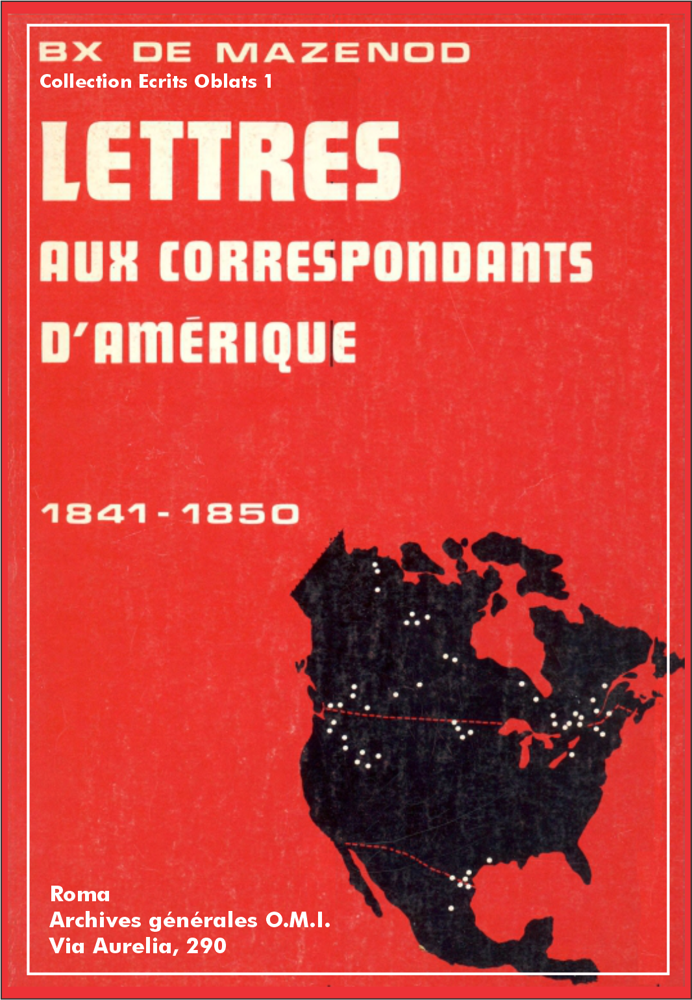

Éscrits Oblats: - 01 - 02 - 03 - 04 - 05 - 06 - 07 - 08 - 09 - 10 - 11 - 12 - 13 - 14 - 15 - 16 - 17 - 18 - 19 - 20 - 21 - 22

Vol.: I - Lettres Amérique
À l'unanimité les Oblats désirent que Mgr de Mazenod envoie des missionnaires au Canada.
Marseille, le 16 juillet 1841.
Monseigneur,
Je n'ai point négligé la grande affaire qui vous tenait tant au cœur et à laquelle certainement je ne pouvais rester indifférent. Conformément à votre désir, je m'en suis occupé activement. Je m'empresse de vous faire connaître le résultat de mes démarches. Comme il s'agissait d'une mission extraordinaire, j'ai cru devoir consulter la Congrégation. Sa réponse affirmative a été unanime, il ne s'agira plus que de choisir parmi ces hommes de bonne volonté et de dévouement, et c'est ce que nous ferons à votre retour quand nous nous entretiendrons de nouveau sur cet objet.
Je n'ai pas besoin de vous rappeler. Monseigneur, que c'est chez moi que vous devez descendre, je vous attends avec l'impatience d'un cœur tout fraternel; agréez-en l'assurance ainsi que les respectueux sentiments avec lesquels j'ai l'honneur d'être. Monseigneur, votre très humble et très obéissant serviteur.
+ C. J. Eugène, évêque de Marseille.
Vol.: I - Lettres Amérique
Mgr Bourget demande quatre missionnaires "pour y évangéliser les peuples" de son vaste diocèse "et pousser même au besoin jusqu'aux peuplades sauvages". Que chaque Père de la communauté dise ce qu'il en pense et qu'il se propose s'il a de l'attrait pour cette œuvre.Que le p. Mille soit réservé mais sans affectation dans ses relations avec l'Évêque et le Clergé du diocèse de Gap.
L.J.C. et M.I.
Marseille, le 17 juillet 1841.
Est-il bien vrai, mon bon père Mille, que je sois en retard avec vous. Il me semble que j'étais sur mon courant [3]. Je me condamne néanmoins de bonne grâce, et quoique vous ayez dû avoir de mes nouvelles par les pères Guigue[s] et Aubert qui comptaient vous voir en passant, je me fais un plaisir de vous écrire d'abord pour vous accuser réception de votre dernière lettre, ensuite pour vous faire part d'une affaire qui nous occupe très sérieusement en ce moment. Mgr l'Évêque de Montréal en Canada m'a proposé d'appeler [4] notre Congrégation dans son vaste diocèse pour y évangéliser les peuples et pousser même au besoin jusqu'aux peuplades sauvages qui sont en relation de commerce avec ses diocésains. Son intention serait que je lui accordasse quatre missionnaires dont il payerait le voyage et auxquels il fournirait un établissement. Il se flatte que bientôt des prêtres canadiens s'associeront à eux et alors, tout comme si nous lui fournissions un plus grand nombre de miss [ionnai] res, on pourrait s'étendre dans d'autres diocèses tels que Québec, etc. On parle français dans tous ces pays-là, c'est la langue naturelle des habitan [t] s.
Avant de donner une réponse positive à Mgr de Montréal, j'ai cru devoir consulter la Congrégation. Je vous charge donc expressément d'assembler votre communauté et de poser cette question à laquelle chaque membre fera une réponse catégorique [5].
La Congrég[atio]n doit-elle accepter l'offre qui lui est faite par M[gr] l'Évêque de Montréal? Le Supérieur Général peut-il consentir à former cet établissement et s'avancer jusqu'à promettre ces quatre sujets que l'Évêque demande pour être les fondateurs de ce grand œuvre en Canada?
Une fois cette question résolue, vous pourrez dire que le supérieur, en cas d'acceptation de la Congrégation, se propose [6] de ne confier cette mission qu'à ceux qui lui en manifesteraient l'attrait. Si quelqu'un s'y sentait porté, il aurait [7] à vous en faire part pour me le communiquer afin que j'eusse plus d'aisance dans le choix que j'aurais à faire.
Je suis à la campagne ou pour mieux dire dans mon cabinet, car je n'en bouge presque pas; je n'ai pas votre lettre sous les yeux parce q[ue] je l'ai laissée à la ville, il est donc possible que je ne réponde pas à q[ue]lque question que vous auriez pu me faire. Tout ce que je vous dirai, c'est que je trouve certaines gens bien maussades, d'autres bien timides, je ne parle pas des indignes. Soyez toujours réservé, mais sans affectation. Je trouvai votre discours trop élogieux, j'en aurais volontiers retranché q[ue]lques phrases évidemment exagérées [8].
Adieu, cher ami. Je vous embrasse et vous bénis.
C. J. Eugène, évêque de Marseille.
Vol.: I - Lettres Amérique
Détails sur la mission du Canada que la Congrégation vient d'accepter. Le p. Guibert est nommé évêque de Viviers. Comment le remplacer au grand séminaire d'Ajaccio?
L.J.C. et M.I.
Marseille, le 11 août 1841.
C'était bien mon intention, mon cher Courtès, de te faire part de ce qui a été conclu avec l'Évêque de Montréal à son passage à Marseille. On ne peut être plus parfait que ne l'a été ce prélat. Il est si reconnaissant qu'on ait acquiescé à sa demande qu'il s'est montré tout paternel et très disposé à contenter en tout ceux que la Congrég[atio]n lui cède pour évangéliser son peuple. La réponse à la question que j'avais faite a été unanime. J'ai reçu de plus un grand nombre de lettres pour m'exprimer l'attrait particulier que l'on éprouve pour cette mission. Je ne serai donc embarrassé que par le choix qu'il faudra faire. Il est convenu que j'enverrai quatre miss [ionnai] res et deux frères pour former notre établissement à Montréal. M. l'Évêque leur affectera une petite cure dans le voisinage de la ville épiscopale dont le revenu, joint au produit d'un champ qui y est annexé, suffira pour l'entretien de la communauté. Supposé qu'il en fallût davantage l'Évêque y suppléerait. Les missionnaires précéderont et accompagneront l'Évêque dans ses visites pastorales, et s'ils sont obligés de quitter tous à la fois leur maison, la ville est si voisine que l'Évêque fera desservir la paroisse par un prêtre y demeurant. Le site est délicieux et les miss [ionnai] res ne sauraient être mieux dans le temps du repos pour se livrer à la prière et à l'étude. Les peuples vers lesquels ils sont envoyés sont excellents, pleins de foi et de simplicité. On parle français dans toute la contrée, cependant il sera bon qu'on apprenne l'anglais pour se rendre plus utiles. L'Évêque ne sait pas cette langue, mais le G[ran]d Vicaire qui l'accompagnait le parle bien. Il suffira que nos Pères se rendent au Havre à la fin sept [em] bre. La traversée dure moins d'un mois.
Dès que le prélat sera arrivé à Paris, il enverra des traites pour fournir aux frais du voyage qui, comme de raison, sont à sa charge. Les miss [ionnai] res prendront terre à New York d'où ils se rendront en 36 heures à Montréal. Il n'en faut pas davantage dans ce pays-là pour faire 180 lieues.
Voilà, mon cher, tous les détails que je puis te donner sur cette importante mission. J'espère que Dieu la bénira et je pense comme vous tous qu'elle sera avantageuse à la Congrégation.
Maintenant le difficile sera de former cette nouvelle com-m[unau]té. Il faut qu'il se trouve, parmi les élus, des hommes capables d'annoncer la parole de Dieu, et bons à être présentés au clergé de Montréal qui n'est pas sans mérite. Il faudra donc que nous imposions des sacrifices à d'autres comm [unau] tés. Ce n'est pas le tout de vouloir accepter une g[ran]de mission, il faut savoir aussi supporter les conséquences d'une pareille détermination.
Pour compliquer encore nos embarras, voilà que l'on vient nous enlever le p. Guibert. Je ne me dissimule pas les avantages de cette nomination sous plusieurs rapports, mais elle m'accable dans la circonstance présente. Je l'aurais vu nommer à Gap, il y a deux ans, bien volontiers, la raison en est palpable, mais à Viviers, et dans ce moment, j'en suis étourdi [10]. Cependant je ne saurais m'opposer aux desseins de la Providence. C'est Elle qui a disposé les choses sans que nous nous en doutassions le moins du monde. Elle viendra à notre secours. Moi je me fais vieux, je ne puis d'ailleurs supporter, je ne dirai pas le fardeau, mais l'ensemble de la responsabilité et la dépendance de ma position. Je serais porté à me retirer de la scène du monde avant le temps, il sera utile que la Congrég [atio] n ait un protecteur dans l'Église de France, un prélat surtout qui lui fera tant d'honneur. Voilà pour nous consoler, mais je n'en sens pas moins l'extrême embarras et le vide qu'il va nous occasionner. Ce bon Père se félicitait encore dans sa dernière lettre de ce que Mgr d'Ajaccio avait demandé qu'on le lui laissât encore deux ans, je n'ai appris que par le Journal que tout était consommé.
Adieu, mon cher ami, nous aurions bien besoin d'un peu nous voir. Pourquoi ne viendrais-tu pas passer quelques jours à la campagne. Il y a plus de quinze jours que je n'y ai mis les pieds. Le Supérieur p[ou]r Ajaccio m'embarrasse davantage que celui de Montréal. [Adieu] [11] encore une fois.
Vol.: I - Lettres Amérique
Le p. Bermond n'est pas jugé suffisamment obéissant et vertueux pour être envoyé à 1500 lieues du Fondateur. Si sa conduite future devient plus rassurante, il pourra faire partie du second groupe de missionnaires.
L.J.C. et M.I.
Marseille, le 19 août 1841.
Je vous assure, mon très cher fils, que je n'ai attribué qu'à un très bon motif l'offre que vous m'avez faite d'être du nombre de ceux qui devront être choisis pour fonder notre premier établissement en Canada. J'ai béni le Seigneur des dispositions dans lesquelles sa grâce vous avait mis, mais j'ai hésité au souvenir de la lettre que vous m'aviez écrite lorsque je vous annonçai que vous étiez destiné pour faire partie de la comm [unau] té de Lumières. S'il y a quelque chose de simple et de coulant dans une congrégation répandue dans plusieurs diocèses, c'est le passage d'une maison à l'autre. Il n'est besoin pour déterminer à ces changements que de la convenance du service au jugement du supérieur; aussi dans tous les ordres connus jamais on n'a entendu dire que cela fasse un pli [13]. Rappelez-vous comment vous avez pris votre nouvelle destination. C'est tout au plus si vous ne m'en avez pas demandé compte, j'avais l'air de commettre une injustice. Que voulait-on que vous fissiez à Lumières, vous deviez vous y ennuyer, après tout vous n'y feriez pas grand chose, etc.
Je fus tellement peiné de vous voir dans ces dispositions que j'avais voulu vous écrire pour vous faire observer qu'elles n'étaient pas convenables, que vous vous montriez imparfait dans une bien mince épreuve, car c'est chose tellement prévue que le cas échéant personne n'y fait attention ni n'a seulement l'idée de s'en mettre en peine.
Je vous ai perdu de vue depuis longtemps; j'ai dû donc me dire que vous étiez déchu de votre première ferveur, et que si vous manquiez de vertu dans une occasion où il n'en faut vraiment pas beaucoup pour faire son devoir sans murmurer, il serait bien à craindre que vous en manquassiez dans des circonstances quelquefois pénibles qui peuvent se rencontrer. Vous sentez que pour une mission lointaine comme celle du Canada, il faut être à toute épreuve; il faut que l'on puisse compter sur la solidité des vertus religieuses de ceux qui vont se trouver à 1.500 lieues de moi. Qui peut prévoir les contrariétés que l'on éprouvera soit des hommes soit des événements? Si l'on ne s'est pas fortifié dans la pratique de l'humilité, de l'abnégation, si l'on ne s'est pas établi dans l'obéissance qui est le fondement de tout l'édifice religieux, si l'on n'est pas disposé à supporter les imperfections des autres et surtout si on n'a pas tellement renoncé à sa propre volonté qu'il n'en coûte plus rien pour se soumettre à celle du supérieur, et cela sans efforts, sans tristesse, sans le moindre murmure.
Vous sentez qu'il y aurait de quoi me désoler si je venais à apprendre qu'à une si grande distance l'union ne règne pas parmi les frères, et que l'on ne donne pas le spectacle édifiant d'une parfaite régularité, et cela dans un pays où l'on est accoutumé aux bons exemples des Sulpiciens, et où les Jésuites vont porter la bonne odeur de leur admirable discipline.
Vous me saurez gré, mon cher fils, de vous montrer à découvert toute ma pensée. Rassurez-moi davantage et vous serez du nombre d'une seconde colonie.
Je vous embrasse et vous bénis.
+ C. J. Eugène, évêque de Marseille.
Vol.: I - Lettres Amérique
Le p. Lucien Lagier est choisi pour aller "planter l'étendard de la Congrégation" dans une autre partie du monde. De la conduite du premier groupe de missionnaires dépend la propagation des Oblats au Canada et dans d'autres pays.
L.J.C. et M.I.
Marseille, le 28 août 1841.
Mon cher père Lucien, bénissez le bon Dieu. Il a exaucé vos vœux. Je vous ai définitivement choisi pour faire partie de la communauté qui va implanter l'étendard de la Congrégation, qui est celui-là même de la croix, dans une autre partie du monde. J'ai la plus grande confiance que vous et vos compagnons serez dignes de votre vocation, que vous ferez beaucoup de bien, et que vous honorerez la Congrégation par votre dévouement, votre zèle, et votre régularité. De l'opinion que vous donnerez de nous dépendra la propagation de la famille non seulement dans tout le Canada mais dans d'autres pays de mission mûrs pour être évangélisés, et auxquels il ne manque que des ouvriers pour leur annoncer la bonne nouvelle du salut. Vous serez les premiers à ouvrir la marche; d'autres vous suivront. J'aurai de la peine à en consoler plusieurs qui espéraient faire partie de la p[remiè]re colonie. Adieu, je n'ai que le temps de vous embrasser et v[ou]s bénir.
+ C. J. Eugène, évêq[ue] de M[arsei]lle.
Le p. Baudran[d] vous donnera communication de ma lettre; conformez-vous à ce que je lui indique.
Vol.: I - Lettres Amérique
Feuille d'obédience des premiers missionnaires Oblats au Canada.
Charles Joseph Eugène de Mazenod Évêque de Marseille et Supérieur Général de la Congrégation des Missionnaires Oblats de la Très Sainte Vierge Marie conçue sans tache À notre très aimé dans le Christ Jean-Baptiste Honorat Prêtre de la même Congrégation et Assistant du Supérieur Général Salut dans le Seigneur à jamais.
Comme le Révérendissime et Illustrissime Seigneur Ignace Bourget, évêque de Montréal du Bas-Canada (dans la province de l'Amérique Septentrionale), se rendant à Rome, nous a très instamment prié qu'on lui cède quelques-uns des membres de notre Congrégation, en vue de fonder une maison de mission dans son diocèse, et nous a exposé qu'il y avait là une moisson abondante, soit auprès des catholiques à animer à plus de ferveur dans notre religion, soit auprès des hérétiques à ramener à la sainte et catholique foi, et aussi auprès des infidèles à conduire à la connaissance de la vérité; puisque, par ailleurs, l'esprit de notre institut est de procurer le salut des âmes où que Dieu nous appelle, désirant de notre part obéir à cette divine vocation, nous avons décidé d'acquiescer aux vœux du Rev.me et Ill.me Prélat de Montréal.
Confiant donc en votre piété, votre doctrine, votre expérience et votre zèle des âmes, nous vous choisissons pour cette mission, en même temps que les RR. PP. Adrien Telmon, Lucien Lagier, et Marie [Jean] Baudrand. A ceux-ci qui se sont offerts spontanément pour se dévouer à une si grande œuvre à nous très agréable, nous adjoignons deux frères convers, Pierre Bazile et Joseph Roux. Ainsi envoyés par l'autorité légitime selon les Règles et les Constitutions de notre Institut, vous vous emploierez de toutes vos forces avec la grâce de Dieu à procurer le salut des âmes, sous l'autorité de l'Ordinaire qui a montré une si grande bienveillance à l'égard de notre Congrégation, ce pour quoi vous devez le considérer comme un très grand bienfaiteur et l'honorer comme un père très aimant.
Nous décrétons que cette nouvelle maison de notre Congrégation dans le diocèse de Montréal soit placée sous le patronage de la bienheureuse Vierge Marie, et nous voulons qu'elle soit désignée sous le titre de son Immaculée Conception. Et maintenant, vous, dont la probité et la prudence nous sont depuis longtemps connues, par les présentes, nous vous désignons et constituons supérieur de la dite maison, vous octroyant, en cela, toutes les facultés spécialement mentionnées dans le paragraphe du supérieur local de nos Constitutions. De plus nous vous enjoignons d'observer aussi exactement que possible les règles contenues dans ce même paragraphe. Comme vraiment la trop grande distance des lieux nous empêchera d'avoir des rapports fréquents, nous vous communiquons ample faculté; et dans les choses qui seraient d'observance impossible ou trop ardue, nous vous dispensons, vous et les vôtres, recommandant, néanmoins, que dans le gouvernement tant spirituel que temporel, vous ne fassiez ni ne permettiez qu'on fasse rien qui soit étranger à l'esprit de notre Institut. Afin que rien ne manque en ce qui regarde le bon gouvernement d'une maison religieuse, nous désignons le R.P. Telmon, premier assesseur et votre admoniteur; le R.P. Baudrand, second assesseur.
Si, la grâce de Dieu agissant, certains de la région demandaient de s'adjoindre à vous, qu'il vous soit permis, après consultation de vos assesseurs, de les admettre à faire canoniquement tout leur noviciat; sous votre conduite, ils entreprendront et poursuivront leur probation; et quand ils en seront venus à la fin, vous devrez nous écrire au sujet des novices à admettre à l'oblation, afin que nous puissions nous prononcer en conseil avec nos assistants à leur sujet et vous transmettre sans retard notre décision.
Allez maintenant, très chers fils, sous les auspices de la sainte obéissance, à la tâche qui vous est assignée. Par ailleurs, vous que nous avons désigné supérieur d'une mission si importante, veillez à vous en montrer un très bon gardien et efforcez-vous de remplir à son égard, en parole et en œuvre, avec cœur et affection, les devoirs d'un père prévoyant. Vous, d'autre part, ses compagnons, choisis par faveur divine à une œuvre aussi grande, comportez-vous avec affection, révérence et respect à l'égard du R. Père que nous vous avons donné comme Recteur, observez diligemment les Règles de notre Institut, et surtout soyez des fils d'obéissance.
Vous tous, entreprenez donc votre voyage d'un cœur joyeux, empressé et de bon gré; que l'ange du Seigneur vous accompagne, et que soit votre guide et patronne la bienheureuse Vierge Marie conçue sans tache, dont vous vous souvenez que c'est un devoir spécial de votre vocation de propager en tout lieu le culte. De notre part, nous ne cesserons pas de demander à Dieu pour vous une abondante rosée de grâces et la puissante et constante assistance du ciel.
Donné à Marseille sous notre seing et sceau et la signature du Secrétaire de la Congrégation, en l'an du Seigneur mil huit cent quarante et un, le vingtième jour de septembre.
+ C. J. Eugène, évêque de Marseille, Sup. Gén.
Par mandat du Rév.me Père Général, Casimir Aubert, O.M.I. Secrétaire.
Vol.: I - Lettres Amérique
Quatre missionnaires partent pleins d'ardeur pour le Canada. Mgr Bourget n'aura pas de prêtres plus soumis; en retour, qu'il les adopte comme ses enfants. Dans une année le sulpicien Barbarin, originaire de Marseille, partira également pour Montréal.
Marseille, le 28 septembre 1841.
Monseigneur,
Je ne laisserai pas partir nos chers Canadiens [17] sans les charger d'une lettre qui vous exprime mes sentimen [t] s les plus affectueux. Je vous remercie de tout ce que vous avez écrit d'aimable à M. Tempier et à moi, vous avez bien jugé notre cœur. Nous sommes tous tout à vous, les liens de charité qui nous unissent ne sauraient être plus étroits; aussi c'est avec une pleine confiance que je vous confie nos bien-aimés missionnaires. Ils partent pleins d'ardeur, disposés à seconder de tous leurs efforts votre sollicitude pastorale. Souvenez-vous que vous les avez adoptés pour vos enfants; vous n'aurez pas de prêtres plus soumis et plus dévoués. Ils vous considèrent déjà comme leur père, et la connaissance de votre bonté n'a pas été pour eux un petit encouragement dans le sacrifice qu'ils ont fait de leur patrie et de tout ce qui pouvait les retenir en Europe. Ils partiront le 16 octobre du Havre. Je me suis décidé à céder M. Barbarin [18], mais il ne sera pas du voyage parce qu'il doit passer un an à la Solitude; c'est toujours un des miens de plus que je consacre à votre diocèse qui est devenu le frère du mien.
Agréez, Monseigneur, mes sentiments respectueux et bien affectueux avec lesquels j'ai l'honneur d'être, votre très humble et très obéissant serviteur,
+ C. J. Eugène, évêque de Marseille.
Vol.: I - Lettres Amérique
Feuille d'obédience des premiers missionnaires Oblats au Canada.
Charles Joseph Eugène de Mazenod Évêque de Marseille et Supérieur Général de la Congrégation des Missionnaires Oblats de la Très Sainte Vierge Marie conçue sans tache À notre très aimé dans le Christ Jean-Baptiste Honorat prêtre de la même Congrégation et l'un de nos assistants Salut dans le Seigneur à jamais
DIEU ET PÈRE DE NOTRE-SEIGNEUR JÉSUS-CHRIST, qui nous a choisis et prédestinés à la louange de la gloire de sa grâce, nous a établis afin que nous allions et rapportions du fruit et que notre fruit demeure. Vous savez que depuis le moment où le Père de famille nous a envoyés en dernière heure, nous petit troupeau, travailler dans sa vigne, comment nous avons rapporté de nos modestes travaux des fruits abondants; et qu'après avoir commencé à annoncer sa parole, que de grandes choses Dieu a accomplies avec nous, bien qu'indignes, et combien d'errants ont été ramenés dans la bonne voie, pendant que nous allions, dans les régions qui nous entourent, aux brebis qui avaient péri. Cependant, à présent s'ouvre une voie plus longue et un champ se déploie plus largement; une porte nous est grande ouverte: nous sommes envoyés maintenant non seulement à ceux qui sont près et aux frères dans la foi, mais aussi aux autres qui sont loin et en dehors de la foi; nous, qui en raison de notre petit nombre, étions inférieurs à la tâche de recueillir l'abondante moisson qui s'étend devant nous.
Ainsi donc, l'Ill.me et Rév.me Seigneur Ignace Bourget, Évêque de Montréal au Bas-Canada dans la province de l'Amérique Septentrionale, alors qu'il se rendait à Rome pour y accomplir la visite "ad limina Apostolorum", s'arrêtant en visite chez nous, nous fit part qu'il voulait conduire quelques membres de notre Société dans son diocèse. D'abord étonné de sa proposition toute spontanée, puis l'accueillant vraiment comme le bon plaisir de Dieu, nous avons consenti de tout cœur à envoyer quatre prêtres de la Congrégation. C'est pourquoi, nous vous choisissons le premier R.P. Honorat (Jean-Baptiste), le quatrième de nos assistants, pour cette œuvre, avec les RR. PP. Pierre Antoine Adrien Telmon, Jean Fleury Baudrand et Lucien Lagier. Nous vous octroyons, de même, facultés et droits selon les lois de notre Institut, pour constituer une maison de notre Congrégation, en quelque lieu de son diocèse que le dit Prélat voudra; lui, étant le seul établi par le Pasteur suprême pour paître son troupeau, vous enverra aussi quand et où il voudra pour exercer votre ministère sous sa pleine et de toute manière entière autorité. Avant tout, cependant, non seulement nous vous prescrivons de le révérer comme votre Seigneur; nous vous exhortons aussi de l'aimer comme un père, lui en qui nous avons reconnu une si grande piété et de si excellents mérites, et dont vous aussi, si vous vous comportez dignement, vous expérimenterez, nous le promettons, l'amour et la bienveillance.
Quand vous aurez reçu de l'Ill.me et Rév.me Évêque de Montréal la maison pour votre résidence, vous la mettrez sous le titre de la Très Sainte Vierge Marie conçue sans tache; et vous, R.P. Jean-Baptiste Honorat, en assumerez la gouverne dont nous vous savons parfaitement digne, en vertu de notre autorité et des Constitutions de notre Société, selon qu'en celles-ci il est ordonné du Supérieur local. Nous vous assignons comme assesseurs, le premier, en même temps votre admoniteur, le R.P. Pierre Antoine Adrien Telmon, le second, le R.P. Jean Fleury Baudrand. Nous adjoignons aussi deux frères convers, Pierre Bazile et Louis Roux, pour le service temporel convenable, comme il faudra, de votre maison.
Cependant, vu qu'en raison de la diversité des lieux et à cause de circonstances qui, sans aucun doute, vous surviendront inopinément, il sera difficile, et avec beaucoup de retard, de nous consulter au sujet de certaines choses qu'il arriverait de changer, nous vous dispensons, vous et les vôtres, en ce que, selon l'esprit de notre Institut, vous jugerez opportun d'omettre ou de modifier. Par contre, observez exactement les autres règles. Par ailleurs nous avons confiance en vous dans le Seigneur que ce que nous prescrivons, vous le faites et le ferez, connaissant, en effet, l'empressement de votre volonté.
Si certains, dans ces régions, voulaient s'agréger à notre Société, nous accordons qu'ils puissent entreprendre et faire complètement leur noviciat dans votre maison; au sujet desquels, si vous les jugez dignes, vous nous informerez, afin que nous puissions avec notre Conseil en décider, et vous transmettre notre mandat pour que vous puissiez les admettre à la profession.
Au reste, frères, réconfortez-vous dans le Seigneur et dans la puissance de son pouvoir. Saisissez donc l'armure de Dieu, tenez-vous bien debout, les reins ceints de la vérité, revêtus de la cuirasse de justice et vos pieds chaussés en préparation de l'évangélisation; afin que le Seigneur vous donne d'annoncer la parole avec grande force, pour retirer du péché les fils de l'Église et les reconduire à la sainteté; et qu'il ouvre votre bouche pour faire connaître avec assurance le mystère de l'Évangile à ceux qui l'ignorent.
C'est pourquoi encouragez-vous mutuellement et édifiez-vous les uns les autres. Soyez unis dans un même esprit, collaborant à la foi de l'Évangile. Vous spécialement que nous avons préposé à la direction de vos frères, excellez par le mérite et la vertu plutôt que par l'élévation de votre charge; appliquez-vous plus à vous attacher les cœurs de vos sujets par la charité et la mansuétude qu'à les conduire par l'autorité. Efforcez-vous, par l'observance de nos Règles et la pratique de la piété envers Dieu, de vous montrer tel que vos compagnons cherchent avidement à vous suivre pas à pas et à vous imiter à l'envi. A votre tour, vous que notre Sauveur .a daigné appeler, de préférence à vos confrères, à une si grande œuvre, appliquez-vous de toutes vos forces à répondre à cette sainte vocation de Dieu, par ailleurs, veillant avec soin à alléger le fardeau imposé à votre Supérieur, par l'humilité, la pratique de la .mortification, le zèle pour la perfection, l'assiduité à la prière, un vrai respect envers lui pour Dieu, la joyeuse obéissance et surtout un amour sincère.
Quant à moi, je rends grâce à mon Dieu chaque fois que je pense à vous, dans toutes mes prières, le suppliant avec joie pour vous tous par rapport à votre communion dans l'Évangile; confiant aussi en cela, que celui qui a commencé en vous une bonne œuvre, la conduira à son accomplissement, jusqu'au jour du Christ Jésus, comme il est juste pour moi de penser ainsi pour vous que je porte dans mon cœur. Dieu en effet m'est témoin combien je vous poursuis tous de mon affection dans la tendresse du Christ; et je demande que votre charité abonde de plus en plus en science et en tout sentiment par Jésus-Christ, à la gloire et à la louange de Dieu.
Entreprenez donc votre voyage d'un cœur allègre et de bon gré. Que Dieu lui-même notre Père et Notre Seigneur Jésus-Christ dirigent vos pas. Que soit sur vous la bienveillante protection de la Très Sainte Vierge Marie conçue sans tache et la garde attentive du saint Ange de Dieu.
Donné à Marseille, sous notre seing et sceau et la signature du Secrétaire de la Congrégation, en l'an du Seigneur mil huit cent quarante et un, le vingt-neuvième jour de septembre.
+ C. J. Eugène, évêque de Marseille, Sup. Gén.
Par mandat du Rév.me Père Général, Casimir Aubert, Secrétaire.
Vol.: I - Lettres Amérique
Reproches aux missionnaires qui n'ont pas encore écrit. Envoi d'une lettre pour Mgr Bourget. Conseils de prudence sur le bateau. Se montrer exemplaires au Canada afin d'édifier le clergé et d'attirer des vocations. "Montréal n'est peut-être que la porte qui introduit la famille à la conquête des âmes de plusieurs pays". Bénédiction. Plusieurs entrées au noviciat de N.-D. de l'Osier. Les Oblats de N.-D. du Laus sont interdits dans le diocèse de Gap.
L.J.C. et M.I.
Marseille, le 9 octobre 1841.
Y songez-vous, cher p. Honorat, et vous tous mes autres enfants qui vous acheminez vers cette belle mission qui vous tend les bras, d'oublier votre père sitôt et de le laisser dans la peine si longtem[p]s? Pourquoi ne m'avez-vous pas écrit de Lyon d'abord, et puis de Paris où vous êtes rendus depuis plusieurs jours? C'est mal commencer votre correspondance qu'il était convenu que vous rendriez si exacte. Le p. Guib[ert] vous en fera des reproches de ma part, ne vous eu fâchez pas, vous les méritez.
Je vous envoie une lettre pour Mgr l'Évêque de Montréal. Il ne conviendrait pas que vous vous présentassiez à lui sans lettres de moi. Je n'ai pas besoin de vous recommander, mais il aurait droit de trouver mauvais que j'eusse oublié ce devoir de convenance.
Souvenez-vous bien [de] tous les avis que je vous ai donnés. Ayez un peu soin de vous. Quand vous monterez à bord ou que vous serez embarqués, prenez garde de ne pas vous laisser tomber dans la mer; en débarquant quand la mer est [h]ouleuse, on peut manquer le bateau et se noyer. Quand vous serez un peu aguerri [s], montrez-vous dignes de votre mission dans la traversée en gardant une attitude grave et apostolique. Souvenez-vous qu'en arrivant tous les yeux seront braqués sur vous et que l'on vous jugera d'abord sur la mine. On revient difficilement des premières impressions. Que l'on voie en vous des hommes qui marchent à la conquête des âmes, sur la régularité desquels on peut compter pour l'édification du clergé et du peuple de ce vaste diocèse et de toutes ces contrées. Établis chez vous, mettez-vous tout de suite à la Règle. Qu'il ne soit pas dit que les S[ulpiciens] et les J[ésuites] font mieux que vous. N'ayez qu'un même esprit; supportez-vous les uns les autres. Lors même que quelque chose n'irait pas à votre gré, gardez-vous de murmurer. Communiquez-vous tout doucement sans contention et sans aigreur les observations que vous croirez utiles. Si elles ne sont pas adoptées, tenez-vous en paix et ne vous écartez pas de l'obéissance. Jamais de personnalités, point de susceptibilités, candeur, franchise, simplicité, douceur et surtout charité, omnia nostra in charitate fiunt. Au besoin une communication confidentielle avec moi, mais bien ruminée avant, aux pieds du crucifix, sans prévention ni exagération. Nous sommes tous membres d'un même corps, que chacun concoure par tous ses efforts et par des sacrifices, s'il le faut, au bien-être de ce corps et au développement de toutes ses facultés. Je ne sais pourquoi je vous rappelle ces choses; je n'ignore pas le bon esprit qui vous anime, mais je jouis de m'entretenir avec vous de nos intérêts communs. Vous savez du reste que la réputation et la gloire de la Congrégation sont entre vos mains. Plus vous serez saints, exemplaires, réguliers, plus le bien se propagera. Vous êtes chargé [s] de l'implanter dans ces vastes régions, car Montréal n'est peut-être que la porte qui introduit la famille à la conquête des âmes de plusieurs pays. Quand vous serez sur les lieux, vous sonderez le terrain. Il faut d'abord bien s'établir où l'on nous appelle. Si Dieu nous bénit, nous verrons plus tard. En attendant, il nous est arrivé trois Anglais [21] dont un prêtre et saint prêtre, et deux jeunes hommes d'espérance; joignez-y le p. Daly et le f. Naughten [22], voilà un noyau déjà imposant. Que la bonne odeur de vos vertus attire à vous des ecclésiastiques canadiens, qu'ils viennent de Montréal ou de Québec n'importe, ou plutôt que Québec fournisse aussi son contingent pour vous attirer dans ce diocèse. Mais je devance les temps par la pensée, je ne suis point prophète, j'ai pourtant toujours été l'homme des désirs et quelques-uns de mes vœux ont été exaucés et se sont accomplis. Que ceux que j'adresse à Dieu pour vous, mes chers enfan[t]s, attirent sur vous toutes les bénédictions célestes et comblent vos âmes de grâces et de consolations. Vous êtes l'objet de ma plus tendre sollicitude, vous êtes sans cesse présents à mon esprit; et mon cœur ne saurait vous aimer davantage en considérant votre fidélité à répondre à votre vocation, et spécialement le zèle avec lequel vous avez entrepris la belle mission qui vous a été adjugée, car vous savez que d'autres parmi vos frères y prétendaient. N'importe, vous les représentez tous et lai Congrégation aura à se féliciter de vous avoir confié son œuvre.
Adieu, mes chers enfan[t]s, je vous souhaite de nouveau un bon voyage et vous donne peramanter et avec effusion de cœur ma bénédiction paternelle.
+ C. J. Eugène, évêque de Marseille.
P.S. Je veux que vous sachiez avant de partir, et cela fera surtout plaisir au p. Baudrand, que le diacre [23] qu'on attendait à l'Osier s'y est rendu; ses dispositions sont si excellentes qu'il sera reçu novice le 14 de ce mois. Il en attirera, à ce que me mande le p. G[uigues], infailliblement d'autres. Un prêtre [24] de ses amis va arriver pour examiner sa vocation. On compte à Lumières sur 12 novices pour l'an prochain. Prions avec plus de ferveur que jamais. Le Seigneur daignera compenser par s.a miséricorde l'inique persécution de Gap. M[gr] Rossa [t] [25] a interdit dans son diocèse tous les prêtres die la Congrég [atio] n. Telle est la récompense de 22 ans de service le plus généreux. En revanche l'excellent Évêque de Grenoble [26] comble la Congr[égatio]n de ses bontés. Il ne veut plus donner de permissions qu'à ceux qui veulent s'y agréger.
Vol.: I - Lettres Amérique
Divers conseils aux missionnaires: écrire régulièrement, donner l'exemple de la régularité, préparer des sermons, former de bons novices, avoir des rapports d'amitié avec le Clergé, les Jésuites et les Sulpiciens, apprendre l'anglais, écrire uniquement au Père Général qui communiquera les nouvelles aux autres membres de la Congrégation.
[Marseille], le 26 mars 1842.
La lettre s'achèvera quand elle pourra, mais l'essentiel est que vous ne me fassiez grâce de rien. Vous sentez combien, à la distance où nous nous trouvons, les moindres circonstances doivent nous être agréables. Procédez avec ordre, soit pour les choses, soit pour le temps. Outre cela, vous aurez à me tenir toujours au courant de l'état moral de votre communauté, me pariant en détail spécialement de chaque individu, comme le bon ordre et les règles l'exigent.
J'espère, j'ai même la confiance, qu'il n'est aucun des nôtres qui ne soit pénétré de l'importance et de la grandeur de votre mission. L'avenir de la Congrégation dans le nouveau monde est entre vos mains. Si vous êtes tels que vous devez être, c'est-à-dire de véritables bons religieux, réguliers dans toute votre conduite, parfaitement unis, n'ayant qu'un cœur et qu'une âme, agissant dans le même esprit sous la dépendance régulière qui vous montre à tous les yeux des hommes vivant selon la discipline de leur règle, dans l'obéissance et la charité, voués à toutes les œuvres de zèle conformément à cette obéissance et non autrement, ne vous recherchant jamais vous-même et ne voulant que ce qui est de la gloire de Dieu et du service de l'Église. Si vous veillez sur votre caractère pour n'être pas jugés par les hommes rassis et froids de vos contrées pour des jeunes gens pétulants, emportés, irréfléchis, ce qui vous ferait perdre en considération et dans l'estime de ceux dont il vous importe si fort de ménager l'opinion pour réussir dans tout le bien que vous avez à faire.
Ne vous laissez pas entraîner au-delà de vos forces dans le travail dont vous serez bientôt surchargés. Il ne faut jamais vouloir faire plus que Dieu ne permet. Combinez toutes choses avec sagesse; mais surtout réservez-vous toujours du temps pour vaquer à l'étude et à votre sanctification personnelle dans l'intérieur de votre maison; cela est de rigueur. Que le plus jeune d'entre vous [28] se livre à la composition d'un certain nombre de sermons. Je vous prescris de l'exiger. Le père Telmon aura la complaisance de diriger et corriger ces compositions, c'est un devoir de charité autant que d'obéissance. Il fera bien d'augmenter lui-même son capital pour son propre compte. Qu'il songe que viendra un temps où l'imagination se refroidira, alors il sera bien aise de retrouver dans ses cahiers la verve de ses jeunes années. Je me suis toujours mis à ses genoux pour obtenir ce travail de lui. On ne fait pas autrement dans toutes les Sociétés dont les membres font le plus d'honneur à leur corps. Je recommande la même chose au père Baudran[d]. Je n'aurai de repos que lorsque je verrai tous ceux de nos missionnaires qui doivent annoncer la parole de Dieu avoir un cours complet de sermons et d'instructions pour retraites et pour missions. Tenez la main à ce point essentiel au succès de votre ministère.
Donnez une attention particulière à la formation des novices que la Providence vous enverra. Rappelez-vous que ce n'est que par une exacte discipline et des soins assidus que vous vous les attacherez. Si vous les laissez errer au hasard [29], si vous [ne] leur mettez la bride sur le cou, si vous ne vous occupez pas d'eux d'une manière spéciale, vous verrez qu'ils fileront, la fleur se flétrira et le fruit ne se formera pas. Cependant il serait bien essentiel que vous pussiez former un noviciat dans vos contrées, car comment se flatter de pouvoir d'ici vous alimenter en proportion de vos besoins. Quand je serais parvenu à vous envoyer encore deux coopérateurs, ce sera le plus que nous puissions faire, et je ne suis pas surpris que Québec et Kingston envient à Montréal nos missionnaires. Comment faire pour satisfaire à leurs vœux, si vous ne formez pas autour de vous un noyau de notre famille; mais il faut bien qu'il soit la reproduction de ce que nous sommes, autrement gare pour l'avenir.
Je ne vous dirai rien sur les rapports d'amitié, de considération que vous devez avoir avec le clergé, et sur la confiance et le respect filial que vous devez professer pour le vénérable Évêque de Montréal. Ces sentiments sont trop avant dans votre cœur pour que j'insiste là-dessus. Quand les Pères Jésuites arriveront, soyez très circonspects dans vos paroles, ne parlez d'eux qu'avec éloge et gardez-vous de vous permettre, même par badinage, des propos qui n'ont été mis en vogue que par des corps jaloux de leur mérite, ou des ennemis de l'Église qui voudraient les déconsidérer en haine de leur dévouement. Plût à Dieu que notre Congrégation pût parvenir à imiter le zèle, la régularité, l'esprit d'obéissance et l'abnégation de cette sainte Société. Je ne vois parmi eux que des hommes de Dieu, de parfaits religieux, des modèles accomplis de toutes les vertus [30].
Je remercie Messieurs les Sulpiciens de toutes les bontés qu'ils ont pour vous; ces Messieurs savent combien je suis attaché à leur Congrégation et les rapports intimes que j'ai eus avec feu M. Emery et feu M. Duclaux. Je compte sur la continuité de l'amitié de ces Messieurs pour vous, comme ils doivent être assurés de la réciprocité de vos sentiments.
[Quant à l'anglais], si vous y trouvez trop de difficultés pour vous personnellement qui êtes le doyen d'âge, la chose sera plus facile pour les plus jeunes, tels que le père Baudran[d] et le père Lagier; quant au père Telmon, il avait déjà quelque connaissance de cette langue, ce sera un jeu pour lui avec sa facilité. Ne vous endormez pas sur cet article très important dans votre position.
Avant de vous parler de nos maisons, je veux vous dire que je n'approuverais pas que votre communauté s'établît en correspondance suivie avec divers membres des autres communautés [31]. Vous n'auriez bientôt plus autre chose à faire. Je me propose de donner un pareil avis dans nos maisons. À moins de quelques rares cas, il suffit que vous correspondiez avec moi. En m'écrivant comme je vous l'ai dit plus haut, vous pourrez me charger de tout ce que vous aurez à dire ailleurs. Il y aura économie de temps et d'argent, car les ports de lettres ne laissent que de devoir être calculés dans l'état actuel de la Congrégation. J'aurai soin de faire passer les relations de vos travaux pour encourager le zèle de ceux qui ont des dispositions pour marcher sur vos traces. Il me serait agréable de temps en temps de voir de l'écriture de nos Pères de votre communauté, ne fût-ce qu'au revers de vos lettres qui ne devront pas être trop rares.
Vol.: I - Lettres Amérique
Remerciements pour l'accueil fait aux Oblats. Le p. Honorat se plaît au Canada, même si c'est lui qui avait le moins d'attrait pour cette mission. Il demande deux autres collaborateurs. Première retraite prêchée par le p. Honorat avec l'abbé D. Dan-durand qui désire se faire Oblat.
Marseille, le 13 avril 1842.
Monseigneur,
Pour vouloir profiter d'une occasion qui m'a manqué, je me trouve en retard pour vous témoigner toute ma reconnaissance soit de tout ce que vous me dites d'aimable, soit de l'accueil plein de bonté que vous avez bien voulu faire à nos enfants communs. Oh oui, Monseigneur, ils sont bien vos enfants ces chers missionnaires que j'ai déposés dans votre sein paternel. Leurs lettres me prouvent qu'ils savent apprécier les sentiments que vous daignez leur accorder et qu'en retour Us sont les plus dévoués et les plus affectionnés de vos prêtres à votre personne sacrée.
Il paraît que votre protection et les bontés dont vous les honorez leur tiennent lieu de tout, car le p. Honorat ne trouve rien de pénible ni de difficile. Il n'y a pas jusqu'au climat si différent du nôtre qui ne lui convienne, on dirait qu'ils n'ont fait aucun sacrifice en quittant leur patrie et cependant ce bon p. Honorat n'avait pas le même attrait que les autres pour les missions lointaines, et, quoiqu'il n'y mît aucun obstacle, je crois bien qu'il ne S'y consacra que par obéissance, d'une manière admirablement surnaturelle, parce qu'il comprit que tel était le désir de son supérieur. C'est qu'en effet c'est un homme éminemment vertueux. Il voudrait que j'adjoignisse encore deux sujets à la petite colonie [33], je ne demanderais pas mieux si la gloire de Dieu doit s'y trouver et un plus grand bien des âmes. Mais outre qu'il faut donner un peu de temps au sang que nous avons tiré de se renouveler, je voudrais aussi savoir si cela vous conviendrait et si vous auriez le moyen, sans vous gêner, de faire subsister une communauté plus nombreuse, car quoiqu'on ne soit pas exigeant pour des ouvriers évangéliques, il faut néanmoins qu'ils soient à l'abri du besoin. Les sujets ne doivent pas s'occuper de cela parce qu'ils doivent se plaire dans la pauvreté, mais la sollicitude des supérieurs doit, précisément à cause de cela, s'en occuper pour que tout soit toujours bien ordonné.
Le p. Honorat ne m'a point laisse ignorer la charité toute fraternelle qu'il a rencontrée dans les membres de votre clergé et en particulier chez Mrs les Sulpiciens. Je vous prie, Monseigneur, de faire agréer aux uns et aux autres mes sincères remerciements. Oh, la belle chose que la Communion des Saints! J'attends avec impatience q[ue]lques détails sur la pr[emi]ère mission que nos pères ont donnée dans la paroisse où vous les avez placés, qui n'est point celle, à ce que j'ai compris, que vous leur aviez d'abord destinée. J'ai su par le p. Honorat les bénédictions que le bon Dieu avait répandues sur la retraite qu'il a donnée avec le charmant prêtre qui s'est associé à ses travaux et qui témoigne la volonté de s'agréger à la Congrégation [34]. Qu'il soit mille fois béni ce premier rejeton d'un arbre transplanté dans une si bonne terre par un Vigneron tel que vous. Je prie du fond de mon cœur le père de famille pour qu'il en multiplie l'espèce et que l'exemple de ce premier né soit bientôt imité par un grand nombre d'autres [35].
Agréez, Monseigneur, le respectueux hommage de mes plus affectueux sentiments.
+ C. J. Eugène, évêque de Marseille.
Vol.: I - Lettres Amérique
Résistance du p. Bermond à son obédience pour la maison d'Aix. Comment pourrait-il être envoyé au Canada où il faudrait des religieux exemplaires? Ceux qui s'y trouvent se comportent déjà si mal! Lettre indigne du p. L. Lagier.
Marseille, le 8 septembre 1842.
Je n'avais pas répondu à votre lettre du 30 août, mon cher p. Bermond, je m'étais contenté de faire savoir au p. Ricard que je m'étais rendu non pas à vos raisons mais à votre répugnance et que je vous laissais à Lumières.
Mais, après réflexion, je reviens sur votre lettre. Je dois vous dire qu'elle m'a fait beaucoup de peine. Votre résistance dans une chose si facile, les misérables raisons que vous alléguez, l'insistance que vous mettez pour me faire revenir sur ma décision sans vous mettre en peine de l'embarras où vous pourriez me jeter, tout cela m'a donné à réfléchir. D'abord si votre santé est si chétive que vous craigniez pour quelques mois le changement d'air de Marseille à Aix, ne sera-ce pas une souveraine imprudence de vous exposer à une traversée de 2000 lieues et à l'habitation d'un pays où le climat est si rigoureux, si froid l'hiver et si chaud l'été.
Ensuite, pour des missions si lointaines où l'on peut prévoir tant de mécomptes, tant de contrariétés, où le service peut exiger tant de sacrifices de la volonté, tant de fatigues du corps, il faut des hommes solidement établis dans la sainte indifférence, des hommes de sacrifices, de dévouement, d'obéissance absolue, qui agissent promptement et volontiers en opposition à leurs propres idées, etc. Si vous avez succombé, mon cher fils, à une si faible épreuve que celle qui vient de se présenter, que sera-ce dans toutes les contrariétés d'une mission difficile? Et si par malheur, comme il est arrivé, vous rencontriez dans ces parages des hommes plus faibles que vous sur ces points essentiels, des religieux assez imparfaits pour ne voir que l'homme dans le supérieur dont ils doivent dépendre, qu'en adviendrait-il de notre œuvre? J'en suis déjà en peine par le fait de l'imperfection de plusieurs qui, oubliant bientôt toutes mes recommandations, se conduisent au rebours du bon sens, de la raison, de la religion et de tous les devoirs de leur profession. Mon devoir est d'envoyer des hommes forts en régularité, amateurs de la discipline religieuse, jaloux de l'honneur de la Congrégation que les autres compromettent par leurs murmures, leur esprit d'indépendance et leur peu de régularité.
J'ai lu une lettre de ce petit Lagier, qu'il faudrait faire brûler par la main du bourreau tant elle est indigne d'un homme qui aurait seulement les premières notions de ses devoirs. J'ai subi la loi de la nécessité en envoyant si loin, pour remplir une si belle mission, des hommes si imparfaits qui ont trompé toutes mes espérances et qui travaillent à détruire ce que Dieu avait fondé. J'en suis malade de chagrin [37]. Vous sentez-vous d'être un de ces hommes forts que je cherche pour venir au secours de l'autorité méprisée, pour donner à tout un clergé, à tout un peuple, l'exemple de l'union fraternelle, de la soumission religieuse, de la charité et de toutes les; vertus qui doivent attirer à nous les hommes de bonne volonté qui cherchent une vie plus parfaite et qui s'attacheront à nous si nous ne les repoussons pas par nos dissensions intestines?
Je finis, mon cher fils, faute de papier, j'aurai pourtant assez de place pour vous embrasser.
+ C. J. Eugène, évêque de Marseille.
Vol.: I - Lettres Amérique
Lettre de communication de privilèges et de mérites des sacrifices, des prières et de toutes les bonnes œuvres des Oblats.
[Marseille, le] 25 septembre 1842 [39].
À Monsieur et Madame Olivier Berthelet,
Salut et bénédiction en Notre Seigneur Jésus-Christ.
Votre piété vous a inspiré pour le bien de votre âme le désir de nous demander de vous admettre en communication des bonnes œuvres de notre Congrégation. Cette demande nous est d'autant plus agréable que nous sentons combien cette Congrégation vous est redevable par suite du don que votre pieuse munificence lui a fait du beau local où ceux des nôtres qui sont allés évangéliser le Canada auront leur établissement dans le diocèse de Montréal. Par votre générosité, vous prenez vous-mêmes une grande part au bien qui se fera dans ce pays et vous avez acquis des droits à notre juste reconnaissance.
Aussi c'est de grand cœur qu'en vertu de l'autorité dont nous sommes revêtu par le Saint-Siège apostolique comme Supérieur Général de la susdite Congrégation, nous vous accordons en Jésus-Christ de participer aux mérites des sacrifices, des prières, des jeûnes et généralement de toutes les bonnes œuvres et de tous les pieux exercices tant spirituels que corporels qui, par la grâce de Dieu, ont lieu dans cette Congrégation, au nom du Père et du Fils et du Saint Esprit. De plus nous prions Dieu le Père de Notre Seigneur Jésus-Christ de daigner ratifier et confirmer du haut du ciel cette concession spirituelle en même temps que nous le conjurons de suppléer à notre indigence par les richesses inépuisables du trésor des mérites de son Fils, de vous combler aussi de grâces et de bénédictions en cette vie et enfin de vous récompenser par la couronne de gloire éternelle.
Donné à Marseille, sous notre seing, le sceau de nos armes et le contre-seing du secrétaire de la Congrégation, le 25 septembre 1842.
+ C. J. Eugène, évêque de Marseille.
Par mandement de Monseigneur notre Révérendissime Père,
Tempier, [premi]er assistant.
Vol.: I - Lettres Amérique
Manie du p. Honorat de démolir et de reconstruire; à l'avenir il devra consulter ses confrères et le Supérieur Général, avant de commencer des travaux de ce genre. Tenir compte des façons de voir de son Conseil s'il veut s'attirer leurs sympathies et leur collaboration. S'occuper des novices; avoir des égards pour les Jésuites; comprendre le p. Telmon, lui laisser un peu de liberté; chacun a son caractère et ses talents. À la fin de l'année, rendre un compte exact de sa gestion.
[Marseille, le] 10 janvier 1843.
Voulez-vous, mon cher ami, que je vous parle franchement? Je trouve bien plus grave que malgré mes recommandations vous n'ayez point mis de frein à la manie que vous avez toujours eue de faire et de défaire, de démolir et de construire. Il faut bien que vous vous soyez laissé aller à des excès en ce genre pour vous être fait en Canada la même réputation que vous aviez ici, pour que les prêtres du pays s'en soient moqués et que M[onsei]g[neu]r lui-même ait été obligé d'intervenir. Vous aviez tort, à St-Hilaire, de dépenser l'argent du diocèse, et je vous défends bien expressément de dépenser le nôtre à Longue [u] il où il m'a été dit que vous aviez déjà formé mille projets plus coûteux les uns que les autres. Je ne puis pas en conscience vous donner carte blanche. Ce n'est pas assez que l'obligation où vous êtes de consulter vos confrères; je me réserve très expressément l'approbation de quelque plan que ce soit. C'est ainsi que cela se pratique dans toute Société bien ordonnée. Savez-vous que tout Évêque que je suis, je ne puis pas changer une cloison dans mon palais sans avoir envoyé le devis au Ministère? C'est là ce que j'entends que soit fait partout dans nos maisons. La première chose que vous avez à faire, c'est de m'envoyer le plan de notre propriété. Vous auriez dû profiter du départ de MM. Raymond et Kelly [41] pour m'envoyer ce plan. Vous entrerez dans tous les détails et m'expliquerez tous vos projets. Jusqu'à ma réponse, ne touchez à rien. Vous avez des chambres pour vous coucher, un réfectoire pour manger, une salle pour prier, c'est suffisant pour aller.
Ce n'est pas tout; je veux connaître l'opinion des autres membres de la communauté que vous devez considérer comme votre Conseil obligé et contre lesquels il ne faut pas vous fâcher quand ils n'adoptent pas vos idées, comme vous le fîtes contre le père Tempier quand il n'approuva pas toutes les fenêtres que vous aviez percées à Lumières et les constructions que nous regrettons toujours que vous ayez étendues au-delà de ce qui était convenu. Alors vous preniez cela sur vous, sans avoir l'avis de ceux que vous deviez consulter; il en est de même en Canada. Au nom du ciel, corrigez-vous et cessez de prendre sur vous seul une responsabilité qui doit être partagée nécessairement par les autres, non point encore pour faire sans mon agrément, mais même pour proposer. C'est ainsi, c'est en témoignant de la confiance, en montrant de la déférence pour les autres, en sachant modifier ses propres idées pour adopter celles des autres que l'on s'attire leurs sympathies, leur concours et leur affection. Je vous dis ceci, non pour vous inquiéter, mais uniquement pour votre bien. Qui est-ce qui vous dira la vérité si ce n'est moi? Pourquoi ne vous mettez-vous pas en règle sous le rapport de votre conseil? Pourquoi voulez-vous gouverner avec indépendance? Ne réussiriez-vous pas mieux si vous mettiez de la douceur dans vos rapports avec tous? ne vous a-t-on pas dit, lorsque vous avez dépensé tant d'argent inutilement et que vous vous permettiez tant de constructions et de démolitions, que ceux-mêmes qui s'intéressaient à vous en étaient choqués, que des observations très désagréables ont été faites alors à ce sujet et que l'Évêché n'avait pas été en arrière pour faire ses représentations? Avez-vous su que Mr le G[ran]d Vicaire, surpris de tant de liberté et ayant peut-être eu connaissance des emprunts que vous aviez faits, avait demandé à quelqu'un si vous n'aviez pas d'assistants ou d'admoniteur et s'il vous était loisible de tout faire à volonté? Je vous laisse à penser, si des étrangers sont choqués et se récrient, que doit-ce être de moi qui, comme vous savez, ai en horreur ce genre de faire [42]. Voulez-vous ne plus rencontrer d'opposition? Tenez-vous-en à la Règle. Tenez vos assemblées régulièrement, et dans ces réunions traitez les choses consultativement et ne voulez [43] jamais l'emporter par autorité. Vous verrez la force que vous donnera cette manière de procéder.
Au nom de Dieu, occupez-vous principalement de votre noviciat. Faites comprendre à M [onsei] g [neu] r qu'il est de toute nécessité qu'ayant des novices vous vous occupiez d'eux. Suspendez vos autres travaux, il importe essentiellement que votre noviciat soit renommé par sa régularité, etc. Songez que vous avez en regard les J[ésuites] qui feront bientôt raffle comme partout ailleurs... Ne savent-ils pas que j'ai toujours été le protecteur de leur Ordre, que j'ai fait pour eux à l'époque des ordonnances des choses incroyables, que je les ai établis dans mon diocèse contre vents et marées, que je les ai parés de tous les coups qu'on voulait leur porter sous mon manteau épiscopal [44]? Ne vous ai-je pas recommandé d'avoir pour eux toutes sortes d'égards, etc...
Quant au p. T[elmon], j'ai fait à plusieurs reprises ce que vous avez désiré et je vous assure que j'ai été fort content de lui; mais, mon cher Père, mettez la main sur la conscience, n'avez-vous rien à vous reprocher à son égard? Ne me dites pas non, parce que j'ai en main les lettres du p. B[audrand] et du p. L[agier] qui prouvent que vous vous êtes maintes fois compromis en leur parlant très inconsidérément sur son compte. Vous aviez bien choisi vos confidents. Croyez-vous que le père T[elmon] peut être bien satisfait quand les autres venaient lui rapporter tout chaud les plaintes, les mécontentements, les jugements sévères que vous portiez de lui? Il aurait fallu être plus qu'un ange pour y être insensible. Et souvent c'était pour des futilités. N'est-ce pas déplorable que l'Évêque ait été appelé à prononcer sur la forme d'un guidon ou autre chose semblable? Quel inconvénient trouviez-vous à donner un peu d'aliments à la grande activité de ce Père? Pourquoi ne pas lui laisser un peu de marge pour des choses si insignifiantes?...
Ne vous plaignez jamais aux uns des autres. Lorsque vous avez quelques observations à faire, faites-les à la personne même sans façon et cordialement... Vous savez qu'un véritable ami peut être comparé à un miroir fidèle dans lequel on se voit tel qu'on est; s'il vous retrace quelqu'imperfection, ne fut-ce que le défaut d'une boucle [45] de cheveux, on ne se fâche pas contre le miroir, on en est bien aise au contraire, grâce à lui, de s'en apercevoir. Alius sic alius vero sic. Vous possédez ce qui manque à bien d'autres, il vous manque quelque chose de ce que d'autres possèdent, contentez-vous de votre portion, vous êtes assez bien partagé. Faites seulement valoir ce que le bon Dieu vous a donné en le dégageant de tout ce qui reste d'écorce un peu rude qui repousse quelquefois et détourne les autres d'en profiter. Cette feuille de ma lettre est essentiellement pour vous; je vais ajouter une deuxième feuille qui sera pour tout le monde.
Voilà bien des avis. J'aime à croire que vous en profiterez parce que vous êtes bon et que vous connaissez votre devoir. Après cela, je vous dirai que j'ai été parfaitement satisfait de votre lettre et des sentiments que vous y exprimez. Je vous rappellerai seulement qu'à la fin de l'année il faut rendre un compte exact de toute votre gestion, l'avoir, le devoir, etc. et c'est en même temps que vous devez présenter votre budget pour l'année dans laquelle nous entrons.
Vol.: I - Lettres Amérique
Joie et consolation du Fondateur en apprenant que la charité fraternelle et l'esprit religieux règnent finalement parmi les missionnaires. Compréhension du supérieur, obéissance des autres Pères, discussion paisible sur les décisions à prendre. Ne pas accepter d'aller à New York ou à Toronto si les Évêques désirent les Oblats uniquement pour leur confier une paroisse. Avant d'admettre les novices aux vœux, il faut l'autorisation du Conseil Général. S'habiller comme les prêtres canadiens, mais porter la croix. Lettre du p. Dandurand.
[Marseille, le] 17 janvier 1843.
La joie et la consolation que me fait éprouver votre dernière lettre ne peut être comparée qu'au chagrin et à l'amère douleur que je ressentais à l'occasion de votre communauté. Vous avez pu me dire qu'il n'était point vrai que les gens du dehors aient été scandalisés des dissensions qu'ils avaient aperçu s'être introduites parmi vous, qu'il était certain que votre conduite respective n'avait point produit de mauvais effets. Vous allez jusqu'à me rassurer entièrement et vous me dites que vous êtes tous décidés de bien marcher et que vous avez commencé à marcher dans la bonne voie. Bien plus, vous ajoutez que vous ne croyez pas qu'il y ait jamais eu de la part d'aucun de vous ni mauvaise volonté ni malice.
Puisque j'y suis, je veux relever toutes vos paroles, soit pour vous les rappeler et savoir de vous si vous les sanctionnez, soit aussi pour placer sous mes yeux un tableau consolant qui me dédommage des peines que j'ai éprouvées à votre sujet. En ce moment votre maison de Longue [u] il est certainement une de nos maisons les plus régulières et vous sentez si bien que c'est par un effet de la Providence de Dieu que vous reconnaissez que vous seriez par trop ingrats après tant de grâces si vous ne deveniez fervents pour la gloire de Dieu et pour votre perfection. Je suis parfaitement de votre avis et ce n'est pas d'aujourd'hui que je le pense. Comment pourriez-vous vous flatter d'accomplir une mission comme la vôtre si vous ne faisiez pas tous vos efforts pour atteindre la perfection de votre sainte vocation? Je croyais vous l'avoir assez dit quand je vous envoyais: alter alterius onera portate. Vous dirai-je: et sic adimplebitis legem Christi. Comment la différence des caractères ne s'efface-t-elle pas dans la résolution de n'avoir qu'une volonté pour le bien, de ne considérer que Dieu soit dans les Règles que vous devez observer soit dans les hommes avec lesquels vous ne faites qu'un corps et qu'une âme. Le moindre froissement dans cet ordre surnaturel amène de graves inconvénients, des désordres et par conséquent beaucoup de péchés. Mais vous ne voulez plus que nous nous occupions du passé. J'y consens pourvu qu'à l'avenir on soit tel que vous dites être devenus par la grâce de Dieu. Mais pour cela, ayez toujours beaucoup de déférence et de respect les uns pour les autres... Persuadez-vous bien que nul ici-bas ne possède toutes les qualités, soyez satisfaits de celles que vous avez reçues [47] en partage, tâchez d'en acquérir davantage, mais n'exigez pas que votre frère en possède numériquement plus que vous. Il est possible qu'il lui manque telle qualité ou telle vertu que vous croyez avoir, mais soyez bien assuré qu'il en a de son côté qui vous manquent à vous. Mettez donc tout en commun pour l'avantage de tous. Vous êtes tous membres d'un même corps. Faites valoir chacun votre talent, en somme ce sera le corps auquel il ne manquera rien.
Entourez le supérieur de votre considération, il sera respecté au dehors. Qu'il vous respecte à son tour et qu'il soit bien aise de s'aider de vos conseils dans tout ce qu'il doit entreprendre à la distance où vous êtes de moi; c'est le contrôle que j'ai dû établir pour garantir ses déterminations. Vous êtes soumis à son obéissance, c'est juste, et Dieu veuille que vous compreniez bien à quoi la conscience vous engage à ce sujet... Respectez-vous vous-mêmes et gardez-vous de vous plaindre jamais à qui que ce soit du dehors, supposé que vous eussiez quelques [sujets] de peines...
Le supérieur est tenu à consulter son Conseil pour n'être pas exposé à prendre un parti à la légère sans s'être éclairé par la discussion, ou d'après des idées particulières. Mais dans vos Conseils ne vous laissez jamais entraîner par la passion ni par l'obstination dans vos propres idées. Discutez paisiblement, toujours en vue du plus grand bien, modifiant au besoin votre opinion comme tout homme raisonnable doit faire quand il s'aperçoit qu'il va trop loin ou pas assez droit. Ensuite, quand le cas l'exige, informez-moi avant de conclure, et toujours tenez-moi au courant de tout. Pour cela soyez exact dans votre correspondance. Quoique le port des lettres soit cher, il ne m'en coûte pas de recevoir exactement une lettre par mois, bien remplie comme l'ont été jusqu'à présent les vôtres. Il ne faut pas craindre de me répliquer quand vous croirez que j'ai donné une décision qui présente quelques inconvénients. Ce sera probablement parce que je n'aurai pas été suffisamment informé.
Je ne suis pas suffisamment informé pour décider la question de New York, par la raison que je viens de vous donner; comment vous appauvririez-vous au point de vous priver des services du père Telmon? Et puis quel ministère vous propose-t-on à New York? N'est-ce pas d'être curé d'une paroisse de cette ville? Mais alors que deviendront les missions? Je n'avais jamais goûté les établissements dans les États-Unis, parce qu'il me semblait que ce n'était que des paroisses, et le projet de New York ne paraît pas être autre chose.
Quant à Toronto, que vous propose-t-on? D'aller y apprendre l'anglais. Mais y a-t-il des missions dans ce pays-là? Vous me parlez des Iroquois. Sont-ce autre chose que les populations sauvages que vous avez dans le diocèse de Montréal? Je ne puis pas juger de l'importance de cette mission. Si cela se réduisait à être curés de ces peuplades, d'être là isolés et à poste fixe, vous sentez que cela ne serait pas pour nous. Vous me mettez en avant les Jésuites, mais voulez-vous lutter avec un corps puissant comme celui-là, qui surabonde de sujets dont il ne sait que faire en France, tandis que nous ne pouvons obtenir que ceux que nous créons en quelque sorte nous-mêmes.
Je vous avais expressément recommandé comme condition nécessaire, lorsqu'il s'agit d'admettre un sujet dans la Cong[régati]on, de délibérer en Conseil sur les lieux et de m'envoyer ensuite le vote de chacun avec les raisons sur lesquelles ils s'appuient. Vous l'avez oublié pour l'admission du p. Dandurand. Vous me parlez néanmoins de lui comme ayant dû faire ses vœux pour Noël. J'ai fait délibérer ici nonobstant ce défaut. Examinez si vous étiez suffisamment autorisé à l'admettre à la profession et en cas de moindre doute, faites-lui renouveler ses vœux seulement en présence du supérieur, ma lettre reçue. Sa profession ne datera pas moins du jour où il l'aura faite publiquement en présence de la communauté. S'il a fait sa profession à Noël ou depuis, son n[umér]o est 104.
J'ai encore à vous répondre sur ce que vous me demandez par rapport au costume. Je pense qu'il ne faut pas se singulariser et surtout n'avoir jamais l'air de donner une leçon aux autres. Ainsi si personne ne porte plus le tricorne ce ne serait pas le cas de le conserver. Votre croix, votre ceinture et l'absence du rabat vous distinguent suffisamment, je pense, même lorsque vous allez dans d'autres diocèses, surtout dans les États-Unis.
C'est encore moi qui remplirai cet espace pour vous accuser réception de la lettre du p. Dandurand, datée du 16 décembre. Elle a mis plus d'un mois pour me parvenir. Je suis enchanté des sentiments que ce bon Père me témoigne et qu'il exprime avec une piété touchante. Je l'ai offert au bon Dieu comme les prémices de notre nouvelle mission du Canada et j'ai remercié le Seigneur de nous avoir donné ce gage de sa bonté. Je tâcherai de répondre encore par ce courrier à la lettre de notre cher ami parmi les Américains; je lui promets la sympathie de tous ses frères européens.
Vol.: I - Lettres Amérique
Joie d'apprendre que le p. Dandurand a fait son ablation. Vœux pour un fécond apostolat et afin que son exemple soit imité.
L.J.C. et M.I.
[Février 1843] [49].
Je ne pouvais pas recevoir, mon cher p. Dandurand, un bouquet plus agréable pour les s[ain]tes fêtes de Noël que la lettre que vous m'avez écrite à l'occasion de votre prochaine oblation [50]. Quand elle m'a été remise, votre consécration à Dieu avait déjà eu lieu, et vous étiez tout à fait des nôtres, c'est-à-dire que vous faisiez partie d'un corps qui a Marie pour Mère et qui, sous son puissant patronage, combat partout où se trouvent quelques-uns de ses membres les combats du Seigneur pour détruire l'empire du démon et pour répandre de tout son pouvoir le royaume de Jésus-Christ. Déjà, je le sais, vous avez essayé vos forces dans cette milice, et, par la grâce divine, vous avez recueilli d'abondantes bénédictions. La consolation que vous avez dû en éprouver est la première récompense qui vous a été accordée. Reste la vie éternelle qui vous est promise en sus et qui sera due à votre fidélité et à votre persévérance. Vous êtes les prémices de ce bon pays du Canada vers lequel le Maître de la vigne a envoyé les ouvriers de notre famille. À ce titre, mes plus chères affections vous sont dues et vous pouvez compter sur elles. J'espère que votre exemple sera bientôt suivi par des hommes comme vous de bonne volonté et de dévouement. Déjà le p. Léonard et le p. Durocher marchent sur vos traces. Le bon Dieu nous accordera d'en voir d'autres encore imiter ces bons prêtres dont on m'a déjà dit tant de bien. Prenez bien tout l'esprit de famille qui nous anime. Je vous aime déjà comme mes enfants, considérez-moi comme votre père. Un jour viendra peut-être où il me sera donné de vous voir et de vous embrasser comme je le fais en esprit actuellement en vous donnant ma bénédiction et en me recommandant à vos prières.
+ C. J. Eugène, évêque de Marseille, S.G.
Vol.: I - Lettres Amérique
Plaintes contre le p. Honorat qui donne trop peu de nouvelles. Convocation d'un délégué au Chapitre Général de juillet 1843. Envoyer, à cette occasion, un plan exact de la propriété de Longueuil et une copie des actes de cession; préparer un compte-rendu de l'état financier; proposer le nom d'un économe, etc. Voix active et passive du p. Dandurand.
L.J.C. et M.I.
Marseille, le 10 mars 1843.
Ayons patience, puisque c'est un parti pris de nous faire soupirer après vos lettres. Je n'en ai plus reçu de vous depuis celle en date du 23 novembre, partie le 10 décembre. Que pourrais-je ajouter aux réflexions que j'ai déjà répétées plusieurs fois pour vous déterminer à m'écrire plus souvent? Vous ne les avez apparemment pas appréciées, et vous n'en sentez pas la convenance. Il est pourtant singulier que je reste trois mois sans nouvelles d'une communauté comme la vôtre, sur laquelle dans le fait je n'ai point encore obtenu des connaissances suffisantes. Ce n'est pas faute de les avoir demandées. Il est vrai que vous m'avez plusieurs fois annoncé des rapports détaillés pour la lettre qui doit suivre incessamment celle qui en contient la promesse, mais vous l'avez toujours oublié ainsi que mille circonstances de vos relations avec les gens du pays, qu'il serait pourtant nécessaire que je connusse. Définitivement avez-vous reçu les diplômes 'que je vous envoyai très fidèlement dès que vous me les demandâtes? Je vous l'ai rappelé dans ma dernière lettre qui commence à devenir d'ancienne date, mais ne vous en prenez qu'à vous, car je demeure pour ainsi dire la plume à la main dans l'attente des nouvelles qui ne m'arrivent pas". Elle est du mois de janvier, mais j'ai écrit en février au p. Dandurand et aujourd'hui je me décide à commencer celle-ci qui partira vraisemblablement avant que j'aie rien reçu de vous. Ce qui mie décide à ne pas différer davantage est le besoin de vous entretenir un peu à l'avance du prochain Chapitre Général que je me propose de convoquer pour la première semaine de juillet. Il faudra vous occuper longtemps à l'avance du choix que vous aurez à. faire de celui de vos Pères qui viendra représenter votre maison. La grande distance et la dépense considérable du voyage me déterminent à ne laisser venir qu'un seul d'entre vous. Il importe que le supérieur ne quitte pas la communauté pour ce premier voyage. Vous ne viendrez donc pas cette fois, mais comme de raison vous concourrez au choix de celui qui sera envoyé et vous liai donnerez de vive voix et par écrit toutes les instructions que vous jugerez à propos; vous n'oublierez pas de lui remettre un plan exact et figuré de la maison, du jardin et de la prairie nous appartenant, ainsi que copie des actes de cession de la propriété. De plus vous aurez soin de transmettre à celui qui fait les fonctions de procureur général de la Société le compte détaillé de l'avoir et du devoir de votre communauté depuis votre établissement jusqu'au mois du départ du Père qui viendra au Chapitre. Tout ce que je vous demande ici est indispensable. Vous profiterez de cette occasion pour me désigner celui que vous croiriez le plus propre pour remplir les fonctions d'économe de votre maison afin qu'aux termes de la Règle je le nomme et qu'il se mette en devoir d'exercer sa charge, comme cela est établi dans les autres maisons de l'Institut. Il faudra que vous calculiez le départ de votre représentant de façon à ce qu'il arrive ici vers la fin de juin. Vous savez mieux que moi ce qu'il faut de temps pour la traversée. Je crois qu'à moins que le prix ne soit exorbitant il serait plus sûr, étant obligé d'arriver à un point donné, de prendre le bateau à vapeur qui vient à Liverpool pour n'être pas exposé à rester plus longtemps qu'on ne voudrait en route et n'arriver qu'après coup, ce qui ne serait pas amusant.
Regardez la présente lettre comme l'autorisation officielle d'assembler le Chapitre de votre communauté à l'effet de nommer, selon la Règle, le député qui doit la représenter au Chapitre Général que je vous annonce avoir été convoqué pour le mardi 5 juillet 1843.
J'accorde pour cette circonstance au père Dandurand voix active et passive dans le Chapitre de votre communauté.
Quand le Chapitre Général aura pris connaissance de l'état des choses, on prendra sans doute une détermination pour les sujets qu'il sera reconnu vous être nécessaires ou simplement grandement utiles. Pour le moment je me suis trouvé dans une position Singulière. À la difficulté de trouver des sujets propres...
[En marge de la première page] : Si vous aviez des rétributions de messes plus qu'il ne vous en faut, je vous prierais de m'en faire apporter un certain nombre par celui de nos Pères qui viendra au Chapitre.
[En marge de la seconde page] : II ne faudrait pas que celui que vous enverrez eût la pensée d'aller visiter le p. Aubert en Irlande. Outre que l'on ne doit pas se permettre ces voyages de curiosité, le p. Aubert ne sera plus dans sa résidence.
Vol.: I - Lettres Amérique
Monseigneur de Mazenod a écrit une longue lettre au p. Telmon. Puisque le p. Baudrand a besoin de repos ne pourrait-il pas être délégué au Chapitre à la place du p. Telmon. Écrire toutes les six semaines. Importance de la prochaine mission qui sera donnée dans le diocèse de Québec. Que la bonne entente règne entre les Pères.
L.J.C. et M.I.
Marseille, le 27 avril 1843.
Je me suis laissé aller, mon cher père Honorat, à écrire une interminable lettre à notre bon père Telmon. Il m'en avait adressé une si aimable sous le rapport des sentiments et si intéressante sous celui des affaires que je devais ne pas m'épargner pour satisfaire à toutes ses communications. Je me suis fermé sous clef, et sourd à trente-six mille coups redoublés à ma porte, j'ai poursuivi ma tâche comme si j'étais seul dans le monde. Je pense que le p. T[elmon] vous communiquera ma lettre. Vous prendrez donc pour vous tout ce qui a rapport aux affaires; malgré cela je crois devoir vous écrire directement pour vous faire connaître ma résolution au sujet du p. Baudran[d], Si j'avais su plus tôt [53] qu'il ne se portait pas bien, je vous aurais insinué de le charger de votre députation au Chapitre. Cela aurait épargné de grands frais de route. Quelque plaisir que je doive éprouver à voir le p. Telmon, j'aurais renvoyé à une époque plus reculée cette satisfaction, et le p. Baudran[d] aurait été le porteur de vos instructions par écrit, car celui qui vient au Chapitre ne doit pas y apporter ses propres idées mais la volonté et les vœux de ses commettants [54]. Voyez si vous seriez encore à temps de prendre ce moyen. Je n'en ai pas parlé au p. Telmon parce que la pensée ne m'en est venue qu'à présent quoique sa lettre y ait donné occasion en me parlant, comme il l'a fait, de ce Père. Il est possible que d'après l'avis que je vous avais donné vous vous soyez hâté de faire votre choix et que votre représentant soit déjà parti. S'il en était ainsi il faudrait prendre patience pour l'énorme dépense, mais il ne faudrait pas moins faire partir le p. Baudran[d]. Je crois qu'il devrait s'embarquer sur le bâtiment qui va et vient régulièrement de New York à Marseille, ce serait la voie la plus droite, devant toujours arriver vers moi quel que soit le navire sur lequel il s'embarquera.
Je n'ajouterai pas autre chose à tout ce que j'ai dit au p. Telmon, sinon qu'il est absolument intolérable que vous restiez trois mois de m'écrire. Vous devez m'écrire au plus tard toutes les six semaines, ce qui peut me renvoyer à deux mois quand par malheur on manque le départ des paquebots. C'est ce qui m'arrive ici lorsque je manque le départ de Liverpool qui n'a lieu. que le 3 et le 18.
Je vous recommande aussi de relater toujours dans vos réponses la date des lettres que vous recevez de moi et avoir mes lettres sous les yeux quand vous m'écrivez, pour ne rien oublier. C'est ainsi que je fais moi-même. Quand est-ce que notre correspondance sera aussi régulière que celle d'Angleterre et d'Irlande? Vous n'avez qu'à partir du point où nous en sommes. La lettre du p. Telmon m'a mis au courant de bien des choses. Revenez seulement sur ce qui a pu être oublié et continuez.
Je reviens au projet d'envoyer le p. Baudran[d] et personne autre. Cela serait d'autant mieux que vous m'avez parlé d'une mission, projetée dans le diocèse de Québec pour le printemps, qui doit être d'une grande importance pour donner connaissance de la Congrégation dans ce pays, et pourtant le noviciat ne devrait pas être abandonné. Vous suppléerez par écrit à tout ce que le p. Telmon aurait pu dire, et vous sentez que je saurais à quoi m'en tenir sur les idées particulières du p. B[audrand].
Je me hâte de finir pour que ma lettre puisse partir aujourd'hui, autrement je manquerais le départ de Liverpool. Adieu donc, mais ne vous dirai-je pas encore avant de finir combien je suis heureux de l'accord qui règne parmi vous. Cette pensée me console et m'aide à supporter votre éloignement. Vivez toujours de la sorte. Parlez-vous à cœur ouvert sans crainte de vous déplaire. Quand on [n'] a qu'un cœur on prend toujours tout en bien. Adieu.
Vol.: I - Lettres Amérique
Regret d'avoir tardé à répondre à la "touchante lettre" de Mgr Bourget; motifs de' ce retard. Le p. Baudrand sera rappelé en France. Qualités du p. Honorat. Excès de zèle' du p. Telmon. Les Pères désirent quitter St-Hilaire pour s'approcher de Montréal. Longueuil resterait la maison du Noviciat. Mise en garde contre un prêtre de Lyon parti avec les Jésuites. Passage à Marseille des abbés Raymond et Kelly.
Marseille, le 30 mai 1843.
Monseigneur,
Pour avoir voulu me donner le temps de répondre en détail à la bonne et touchante lettre que vous aviez eu la charité de m'écrire je me suis vu forcé de différer jusqu'à ce jour où, pour me soustraire enfin aux dérangements [56] incessants et journaliers de Marseille, je suis venu me réfugier à la campagne. Je me disais toujours: dès que j'aurai une heure à moi, je la consacrerai à mon vénérable ami dont l'excellente lettre est toujours là sous mes yeux, mais cette heure de liberté, l'expérience me prouve que je ne l'aurai jamais au centre de mon immense population, tant que je ne changerai pas de système. Je le sens, ma porte est trop ouverte, et je suis trop à la disposition de tout le monde, soit pour les malades qu'il faut confirmer soit pour les cérémonies religieuses si fort multipliées dans ma ville épiscopale. Je vous dis ceci, Monseigneur, ]pour expliquer un retard que mon cœur me reprochait cent fois tout en s'excusant sur la nécessité d'une position peut-être unique. Aussi je me sens soulagé aujourd'hui dans ma solitude, en prenant la plume pour m'entretenir avec vous. À un demi-lieue de lai ville je me flatte que personne ne me dérangera [57].
Quelle lettre que celle à laquelle je dois répondre! Je me prosterne devant le cœur qui l'a dictée. Non, Monseigneur, je ne pourrai jamais vous (exprimer à quel point elle ai. ému ma sensibilité et excité mon admiration et ma reconnaissance [58]. Souffrez que j'épanche mon cœur avec cette simplicité et cette franchise qui excluent toute flatterie; à chaque ligne j'ai admiré la générosité de l'évêque, la bonté d'un père, l'abandon d'un ami. Je voudrais que ceux qui en sont l'objet eussent toujours sous les yeux cette admirable lettre comme je la garde gravée dans mon âme. Croyez, Monseigneur, que, quelque sujet de peine qu'ils vous ayent donné sans le vouloir, ils méritent pourtant vos bontés par les sentiments qui les animent ;à votre égard. Ils vous considèrent avec raison comme leur protecteur et leur père; leur devoir comme leur inclination les rendront toujours dociles à tous vos avis et soumis à tous les ordres que vous pourrez leur donner. Je suis heureux du bien qu'ils font dans votre diocèse et le témoignage que vous voulez bien leur rendre me comble de joie, mais ce n'est pas assez, j'entends qu'ils ne vous donnent aucune inquiétude ni aucun souci, et j'ose me flatter qu'il en sera ainsi.
D'abord pour ce qui est des petites misères intérieures, je crois y avoir coupé court en rappelant le p. B[audrand] qui est un homme exclusif et dont l'esprit ne sait pas se plier aux circonstances. S'il avait fait plus de cas de mes avis, il se serait prémuni d'avance contre son penchant à ne juger et à n'apprécier les choses et les gens que d'après ses propres idées. Il se serait méfié de ses propres lumières et de son inexpérience, et alors il n'aurait pas eu la sotte prétention de blâmer son supérieur devant des étrangers, moins encore se serait-il avisé de prononcer que ce supérieur n'était pas propre à la charge que je lui avais imposée. C'est bien lui qui s'est montré impropre à la mission dont je l'avais honoré. Je le retire, bien assuré que l'union et la cordialité régneront dans la communauté quand il ne sera plus là pour la troubler par ses prétentions et ses murmures. Excusez mon erreur: je n'ai pas formé moi-même ce sujet, mais j'avais cru qu'il comprendrait mieux les devoirs que lui imposait sa position. Le p. Honorat est bien tel que vous me le dépeignez. C'est un ange de candeur et de simplicité, excellent religieux, plein de l'esprit et des vertus de son état. Il a quelquefois des formes un peu dures, sa voix aussi y contribue un peu, mais ce n'est que l'écorce car il est bon, et il sera toujours accessible à tous les bons avis que votre charité paternelle voudra bien lui donner.
J'ai été bien mortifié que le p. Telmon ait pu vous contrarier par les excès de son zèle. Il aurait dû prévoir les conséquences de l'autodafé contre les Bibles, mais il a pu croire ne pas devoir reculer devant le défi des ministres, bien sûr de sortir victorieux de la lutte. J'ai lu dans les Annales que cette controverse publique avait eu lieu plusieurs fois en Amérique, et qu'on s'en était félicité. Il me semble donc excusable à moins qu'il n'eût su que vous ne l'approuviez pas, ce qui n'est nullement probable. Jamais il ne se serait permis d'agir contrairement à vos intentions, car il en est du p. Telmon comme du p. Honorat. Ils sont tellement pénétrés ,ide reconnaissance pour toutes vos bontés, et pleins de vénération pour votre personne qu'ils ne voudraient jamais vous contrister dans la moindre des choses. Aussi c'est bien à tort qu'on a supposé qu'ils s'étaient plaints de vous. Au contraire, toutes leurs lettres attestent de leurs sentiments qui sont tels que vous devez les attendre d'eux. S'ils m'ont parlé de St.-Hilaire c'est dans la persuasion qu'il serait nuisible au sujet qui devrait vivre trop longtemps hors de sa communauté, d'habiter ce pays. Tout leur désir est de se rapprocher de vous, de former près de vous et comme sous vos ailes une communauté compacte, forte, zélée, disposée à tout entreprendre au premier signe de votre volonté. S'ils ont formé leur établissement à Longue [u] il c'est que la Providence a semblé leur ménager cet asile, mais certes ils ne renoncent pas à seconder vos vues en se fixant dans votre ville et bien près de vous parce qu'ils sont essentiellement vos hommes en vertu de leur Institut. Alors Longue[u]il serait toujours une maison précieuse pour le noviciat. Quoiqu'il en soit je me suis fait un devoir de fondre dans mes lettres les excellents avis que vous m'avez insinués dans la vôtre, j'espère qu'on en profitera.
Je ne veux pas finir cet article sans vous dire de vous méfier d'un des prêtres que vous avez fait venir de Lyon et qui se sont rendus à Montréal avec les PP. Jésuites. Le p. Provincial me disait dernièrement qu'il savait que l'Archevêque de Lyon avait été enchanté de se débarrasser de lui, et que lui Provincial n'avait pas approuvé que ses Pères marchassent de concert [59] avec un pareil sujet. J'ai écrit à nos Pères de vous prier de ne jamais le leur associer pour confesser dans leurs missions. J'ai compris que vous n'aviez pas fait une acquisition en l'admettant dans votre diocèse.
Je vous remercie de l'envoi que vous m'avez fait de vos journaux où se trouvent relatés tant de faits intéressants, mais vous m'annonciez un mandement que je n'ai pas reçu. Je vous ai envoyé le mien sur ou pour mieux dire contre les spectacles, par Mrs Kelly et Raymond que j'ai eu la satisfaction de posséder quelques jours chez moi. Je ne puis vous dire le plaisir que j'éprouvais en les voyant et en m'entretenant avec eux. Je comprenais par là combien sont étroits les liens qui m'attachent à vous et à votre peuple; il me semble que nous ne formons qu'une même famille, aussi je compte bien sur votre amitié en retour des sentiments que je vous ai voués, et sur le secours habituel de vos saintes prières. Je ne vous recommande pas mes enfants, ils sont à vous comme à moi. J'espère que celui qui viendra assister au Chapitre Général ne s'en retournera pas seul. Le p. Aubert qui vient de former un établissement à Penzance en Cornouailles me ménage deux Irlandais qui seraient d'un grand secours dans les missions où se trouvent des Anglais.
Agréez, mon très cher et très aimé Seigneur, l'expression de ma vénération et de ma fraternelle amitié,
+ C. J. Eugène, évêque de Marseille.
[En marge de la première page]: M. Tempier, reconnaissant de votre bon souvenir, vous présente ses très humbles respects.
Vol.: I - Lettres Amérique
Regret de ce que le p. Telmon soit déjà parti pour le Chapitre alors qu'il faudra rappeler quand même le p. Baudrand. Les Religieuses de Jésus et Marie ne veulent pas aller au Canada. S'occuper davantage du noviciat. Heureux de la bonne entente qui règne désormais entre les Pères. Que le p. Lagier veille à sa formation sous la direction du p. Telmon. Donner des nouvelles des frères convers et mettre plus d'ordre dans sa correspondance. Compréhension et charité envers les curés peu bienveillants. Défense de construire quoi que ce soit à Longueuil. Codex historique.
L.J.C. et M.I.
Marseille, le 31 mai 1843.
Depuis mes dernières lettres, mon très cher p. Honorat, j'ai reçu par le même courrier la vôtre du 14 avril et celle du p. Telmon du 5 du même mois. C'est trop de plaisir dans un jour. Je préférerais que vous combinassiez de m'écrire par divers courriers. Je n'écrirai pas cette fois à Telmon parce que je suppose qu'il est parti. Croiriez-vous que sa lettre m'a impatienté. Moi qui suis si avide de tous les détails qui concernent votre communauté, vos personnes et vos œuvres, j'ai été obligé de contenir mon empressement et de mordre mon frein pendant la lecture de deux mortelles pages où il n'était question que des Religieuses de Jésus et Marie. Je trépignais en voyant le papier se consumer et ne me rien dire encore de vous. Pour l'amour de Dieu, ne me jouez plus de pareils tours. Dix lignes suffisent pour tout ce qui ne se rapporte pas à vous. D'ailleurs je n'avais pas négligé cette affaire, déjà je m'en étais entretenu avec la supérieure qui s'était refusée à former un établissement à une si grande distance. Il faut avouer qu'elle trouverait difficilement les sujets qu'il vous faut et encore quand je lui en parlai il ne s'agissait pas de pensionnat, ni de musique, etc. Ne me dites plus rien sur cette affaire. Si je puis la renouer, je vous en parlerai moi-même, mais ne perdons pas notre papier inutilement. Si vous m'aviez parlé aussi clairement dans vos premières lettres que dans les dernières, j'aurais combiné les choses autrement. Voyant le désir que vous aviez que je rappelasse le p. B[audrand] [61] et comprenant alors que vous pouviez vous passer de lui, je vous aurais conseillé de le nommer pour venir au Chapitre, bien entendu que vous lui auriez donné vos instructions par écrit. Alors je ne vous aurais pas privé du secours du p. Telmon qui va vous faire considérablement faute ne fût-ce que pour le noviciat où il professe et fait les fonctions de maître des novices, et avec la disette où vous m'avez laissé de vos lettres, il n'y a pas moyen de s'entendre si on n'est pas exact et très précis sur tout. Ce moyen que j'aurais proposé aurait épargné beaucoup d'argent et n'aurait pas épuisé votre personnel. Je crois bien vous en avoir dit un mot, mais je crains bien que ce ne soit après coup et que votre opération ne fût déjà terminée lorsque vous aurez reçu ma lettre. Quoiqu'il en soit, dites à ceux qui s'apercevront [62] de l'absence du p. Telmon, si vous n'avez pas été à temps de le retenir, que ce n'est que pour peu de mois et qu'au plus tard en septembre il retournera accompagné peut-être des deux Irlandais que vous avez demandé [s] au p. Aubert qui s'est occupé de chercher ce qu'il vous faut. Malheureusement les deux dont il me parle n'ont point l'intention de s'agréger à la Congrégation quoiqu'ils Consentent à se mettre à votre disposition. Ce noviciat me préoccupe excessivement. Évidemment vous n'avez pas pu vous en occuper. Vous avez été sans cesse en mission ou absent pour vos affaires. Cela n'arrange pas une maison de ce genre. Il faut un maître assidu, sédentaire, uniquement et constamment occupé de ses novices. Sans cela on ne forme pas des sujets. On a des hommes, mais ils restent tels qu'ils se sont présentés. C'est un mal irrémédiable et dont les conséquences sont funestes pour les personnes et pour la Congrég [ati] on. Il faut bien que votre vénérable Évêque l'ait compris, puisque dans sa précieuse lettre dont je vous ai transcrit q[ue]lques passages, il me disait d'insister sur "la nécessité de bien former vos novices, de vous tenir cachés dans le secret de votre maison quand vous n'êtes pas en mission"; ce qui suppose qu'il voit que vous négligez cette partie essentielle et que vous courez trop quand vous devriez rester chez vous. Si Telmon est parti, que vous n'ayez pas été à temps de le retenir, sacrifiez tout aux soins qu'il faut donner au noviciat. Je le répète, si j'avais su lorsque je vous écrivis que ce père était chargé de cet important ministère, jamais je n'aurais eu la pensée de l'appeler, q[ue]lque satisfaction que je dusse avoir de le voir et d'entendre de sa bouche tout ce qu'il aurait à nous raconter de ce que Dieu opère pour vous et par vous. Vous vous figureriez difficilement la joie que m'a fait éprouver la confidence que vous me faites du parfait accord qui règne entre vous. En vous entendant comme vous le faites, en vous estimant, en vous aimant comme vous le devez, vous entraînerez nécessairement le jeune p. Lagier qui a besoin d'une bonne direction et de bons exemples. Le p. Telmon peut lui être très utile dans ses compositions qu'il faut qu'il lui soumette avec simplicité et reconnaissance, car c'est un grand service à lui rendre que de le former en famille. J'ai toujours pensé que cet enfant ne se serait pas émancipé comme il le fit dans ses lettres, et comme cela suppose qu'il le faisait dans ses conversations, s'il n'avait pas eu sous les yeux les aberrations du p. B [audrand]. Ne négligez rien pour le remettre dans la voie, mais qu'au travail qu'il fera sur lui-même pour se renouveler dans l'esprit de sa vocation, il y joigne une application sérieuse à l'étude; persuadez-lui bien qu'il n'est pas donné à tout le monde d'avoir le talent que le Seigneur a départi au p. Telmon et que bien loin d'être humilié de suivre ses conseils il doit s'estimer heureux de rencontrer si près de lui dans la famille un frère qui lui fasse part de ses connaissances et qui l'aide pour se développer. Recommandez à ce cher p. Lagier de réserver toutes ses confidences pour vous. Si quelque chose lui fait de la peine, qu'il vous en parle,
mais jamais aux autres, et vous, accueillez toujours avec douceur et charité toutes les observations qui vous viendront de qui que ce soit des vôtres. Point de vivacités, point de brusqueries. Le propre de ces manières est de tarir les communications et la confiance. En disant mon office hier, je fus frappé de ces paroles de saint Paul aux Éphésiens qu'il faudrait graver dans tous les cœurs: "Obsecro... ut digne ambuletis vocatione qua vocati estis cum omni humilitate et mansuetudine, cum patientia, supportantes invicem in charitate. Solliciti [63] servare unitatem spiritus in vinculo pacis. Unum corpus et unus spiritus sicut vocati estis in una spe vocationis vestrae". Qu'en dites-vous? N'est-ce pas un bon sujet d'instruction dans vos réunions de com[mu]n[au]té? Cela me rappelle ce passage [64] de la mémorable lettre de votre saint Évêque... d'avoir une grande charité les uns pour les autres. Votre lettre et celle du p. Telmon m'ont singulièrement consolé, me prouvant que déjà une grande partie des choses que désirait l'Évêque ont été réformées; ainsi vous me dites que vos rapports avec les curés sont tels que je puis les désirer. C'était un point si délicat. Il me reste à vous demander en grâce de vous abstenir de toutes observations critiques ou seulement désobligeantes au sujet des autres Cong[régati]ons religieuses. Je vous avais dit que notre cher Évêque disait encore dans sa lettre "de ne pas se montrer susceptibles par rapport à l'établissement des autres Cong[régati]ons religieuses dans le diocèse, d'applaudir au bien qu'elles opèrent sans crainte d'être éclipsés". C'est un devoir, mais non seulement la conscience mais encore une sage politique le commande. Si [quelques prêtres] ont eu le tort de vous déprécier, ce que j'ai de la peine à croire, punissez-les en chrétiens et en bons religieux, en les faisant valoir en toute rencontre. Les paroles de l'Évêque me feraient craindre que l'on ait eu quelque chose à se reprocher à ce sujet. Du reste, je vous dirai encore avec le saint Évêque: tenez-vous sur vos gardes pour ne pas ajouter foi légèrement à certains bruits que fait courir la malice de ceux qui aiment à jeter la division entre les frères, afin de ne pas vous monter pour des bagatelles contre certains curés, ce qui, à la connaissance de l'Évêque, vous a fait tort. J'ajoute que lors même qu'il serait vrai que tel ou tel se soit permis des observations critiques contre vous, il vaudrait cent fois mieux les ignorer que les relever. Vous avez vu par votre expérience que ces préventions ne sont pas durables, et celui qui se serait oublié à votre égard sera bien plus facilement ramené en apprenant que vous dites du bien de lui et que vous ne lui savez pas mauvais gré de ne vous avoir pas rendu justice que si vos plaintes lui parvenaient avec toutes les exagérations qu'y ajouteraient ceux qui les lui rapporteraient pour s'en faire un mérite. En un mot, agissez en tout comme des hommes d'oraison qui ne sont inspirés que par des vues surnaturelles dans la charité de Jésus-Christ. Exigez cette conduite très rigoureusement de tous les vôtres car je vous dirai comme saint Jean: "C'est le précepte du Seigneur".
...Tout en me disant qu'on manque de chambres, qu'on n'a point de salles pour la lingerie et point pour la bibliothèque, il [65] ne me dit pas où il voudrait en faire. Voilà déjà les six chambres du second occupées par les frères. Je vois là une disposition à bâtir autre chose que ce qui existe. Je n'y consentirai jamais avant d'avoir examiné les plans et connu vos moyens pécuniaires pour faire cette dépense. Prenez garde, ne m'avez-vous pas dit que vous espériez que Mgr vous établirait auprès de lui à Montréal? Alors Longue [u] il serait entièrement consacré au noviciat et, certes, il faudrait bien qu'il vous vint des novices pour ne pas pouvoir les caser dans cette maison que vous m'aviez tous tant vantée. Si vous conservez l'espoir de voir se réaliser ce projet de Mgr, ne fut-ce que dans un an ou deux, à quoi bon vous ruiner pour vous mettre un peu plus à l'aise? Ne vaut-il pas mieux se gêner un peu pendant quelques temps et garder son argent pour ce qui peut advenir? Ne craignez pas de garder une poire pour la soif. N'ayez pas la manie de dépenser toujours ce que vous avez et même ce que vous n'avez pas. J'attends avec impatience que vous régularisiez vos comptes avec le Procureur Général. C'est un devoir dont je ne dispense aucune de nos maisons: précision, exactitude.
...Je ne dois pas oublier de vous dire qu'il faut très expressément que vous ouvriez un registre pour y marquer toutes les missions que vous donnez, ayant soin d'y relater les faits principaux, etc., l'époque précise, les noms des missionnaires, celui du s[ain]t patron de la paroisse. Vous mettrez aussi par écrit en guise d'annales tout ce qui a rapport à votre établissement, les événements remarquables, etc. Vous en ferez copier un double par vos novices et chaque année, ou quand vous auriez une occasion sûre, vous m'enverriez ce double. Les choses ainsi marcheront en règle.
Adieu, je vous embrasse et vous bénis.
[En marge de la feuille manuscrite]: et Fisette, et si vous m'aviez donné les noms des nouveaux ff. novices convers, je leur souhaiterais aussi un petit bonjour comme à nos deux anciens et vénérables Bazile et Roux que je n'oublie certainement pas quoique si loin de moi. Vous observerez que vous ne m'avez jamais rendu compte de la conduite de ces derniers et que si le p. Telmon ne m'avait pas parié en détail des autres, je ne saurais pas ce qu'ils sont tandis que grâce à lui je les connais parfaitement. Au nom du bon Dieu, mon cher ami, mettez beaucoup d'ordre dans votre correspondance.
Vol.: I - Lettres Amérique
Le Supérieur Général peut correspondre avec chacun des Oblats, quand bon lui semble, sans passer par l'intermédiaire du supérieur local. Le p. Honorat n'a pas assez confiance dans les qualités du p. Teîmon. Réserve dans les confidences à faire à Mgr Bourget.
[Marseille, le] 20 juillet 1843.
...Évidemment vous ne connaissez pas votre monde et vous n'écrivez que sous l'impression du moment qui fait bientôt place à une autre toute contraire. Et à ce propos, je vous demanderais où est-ce que vous avez vu que le Supérieur G[énéra]l ne désire correspondre avec les membres de la Société que par l'intermédiaire du supérieur local? c'est là ce qu'il faudrait conclure de la recommandation que vous me faites à plusieurs reprises de faire passer par vous tous les avis que je serais dans le cas de donner aux Pères de votre communauté et surtout au p. T[elmon]. Mais cela ne peut pas être, mon cher ami, et je le ferai moins que jamais maintenant que je sais que vous supprimez, dans la communication qui vous est faite de mes lettres, précisément ce que j'y insère pour tel ou tel d'eux ou pour tous en général. Vous vous réservez de juger sur l'opportunité de mes observations, de mes remontrances ou de mes reproches. Vous comprenez que cela ne doit pas être.
La manière dont vous me parlez du p. T[elmon] dans votre dernière lettre me donne du souci; il est bien difficile qu'avec de pareilles préventions vous puissiez tirer parti de ce Père qui pourrait pourtant vous être si utile. Il est impossible que vous ne laissiez pas percer quelque chose de ce qui vous préoccupe tant. Je crains qu'on ne finisse par croire que vous redoutez plus la supériorité de son talent que l'abus qu'il peut en faire. Il faut bien vous dire que ce n'est plus un enfant et que vous n'obtiendrez pas grand chose par voie d'autorité, surtout quand il sera fondé à croire que vous vous trompez. Croyez-moi, je vous l'ai dit souvent, il vaut mieux s'entendre à l'amiable.
C'est ainsi qu'il faut faire quand on n'a pas une supériorité incontestable sous tous les rapports avec ceux qui sont associés à nos travaux. Quelle prudence il vous fallait dans cette position difficile. Il fallait même beaucoup de réserve avec le s[ain]t Évêque que vous consultiez. Si j'en juge d'après sa lettre, vous en auriez trop dit précisément sur le p. T[elmon] qu'il vous convenait de soutenir et de faire valoir. Du reste les deux autres vous le rendaient, car ils consultèrent l'Évêque pour savoir s'ils ne devaient pas m'écrire pour me demander votre rappel. C'est pousser la confiance trop loin. On se montre ainsi à nu de tous côtés et si le Prélat n'était pas si bon, si excellent qu'il est, il se serait prévalu de cette connaissance qui lui parvenait de part et d'autre pour vous retirer sa protection et son estime.
Vol.: I - Lettres Amérique
Reconnaissance des Oblats envers Mgr Bourget. Le p. Telmon retourne au Canada avec le p. Allard, les diacres f.N. Laverlochère et Aug. Alexandre Brunet, ainsi que deux prêtres Irlandais. La supérieure des religieuses de Jésus et Marie de Marseille refuse d'envoyer des sujets au Canada. Avantages de l'établissement des Oblats à Montréal. Le p. Baudrand restera où il est, pour le moment. Envoi d'une relique de saint Augustin.
Marseille, le 10 août 1843.
Monseigneur et très cher ami,
Vous êtes si bon pour tous mes enfants qu'il me faut toujours commencer mes lettres par des remerciements. J'ai été heureux d'apprendre de vous-même que vous étiez content d'eux, de mon côté je ne vous apprendrai rien en vous disant qu'ils vous sont dévoués comme à un excellent père que vous êtes pour eux; vous n'aurez jamais des prêtres plus dociles et plus disposés à vous servir vous et votre diocèse qu'ils considèrent comme le champ propre de la famille qu'ils tiennent à honneur et à devoir de cultiver de leur mieux pour la plus grande gloire de Dieu, le salut des âmes et la consolation du bon Pasteur qu'ils aiment autant qu'ils le vénèrent. Je ne puis vous dire avec quel plaisir j'ai trouvé ces sentiments dans le cœur de notre p. Telmon qui s'est bien ouvert à moi. Mon intention n'a jamais été de le retenir ici. Je le crois trop utile à votre mission pour songer à vous l'enlever. Le bon p. Honorat se grossit un peu trop les inconvénients du caractère entreprenant de ce précieux confrère. Il faut de ces hommes énergiques dans les entreprises difficiles. Le tout est que l'excédent de force soit tempéré par la prudence et dirigé par l'obéissance, et c'est ce qu'il sera facile d'obtenir d'un religieux qui veut sincèrement ne manquer à aucun de ses devoirs.
Le p. Telmon ramène avec lui un prêtre de la Société et deux diacres oblats [68]. Il doit trouver au Havre deux Irlandais qui se consacrent à cette mission et qui se proposent, à ce que je crois, d'entrer au noviciat à Longue [u] il. Voilà un bon renfort. Je lie veux pas me faire valoir parce que je n'en ferai jamais assez pour seconder un Évêque tel que vous, mais j'ai dû m'imposer un sacrifice en vous envoyant le père Allard. C'est un parfait religieux, d'une régularité exemplaire. Il a professé la philosophie et l'écriture sainte et sera très propre à enseigner la théologie qu'il possède bien comme on a pu le remarquer dans les examens hebdomadaires qui ont lieu dans mon séminaire où il est directeur depuis plusieurs années. Il sera chargé à Longue [u] il du noviciat et de l'instruction des Oblats; il pourra de plus (si vous le jugez nécessaire par dispense parce que c'est contraire à la Règle) diriger les religieuses que vous appellerez à Longue [u] il.
J'aurais bien voulu que la supérieure de celles auxquelles on s'est adressé eût un peu plus de courage. Il n'y a pas eu moyen de la décider à céder cette année deux ou trois de ses filles. Elle est à même plus que personne de juger de leur force. Je trouve qu'on s'est trop pressé; on a agi comme s'il dépendait de moi de donner à ces filles les qualités que leur supérieure juge apparemment qu'elles n'ont pas. Dès que je me suis aperçu [69] de l'erreur, j'e me suis empressé d'écrire pour en dissuader. Si vous avez des personnes capables, vertueuses et de bonne volonté, qu'est-ce qui empêche qu'elles se réunissent et commencent elles-mêmes l'œuvre, sauf, si on le croit nécessaire, de les réunir plus tard aux religieuses d'ici qui auront préparé les sujets qui peuvent convenir.
J'avais beaucoup approuvé le projet que vous m'aviez communiqué dans votre avant-dernière lettre. Il serait bien à désirer que vous pussiez le mettre à exécution. Je pense comme vous que nos missionnaires seraient excellemment à leur place dans votre ville épiscopale et à portée de votre habitation et de l'église cathédrale où ils se rendraient utiles par les divers ministères qui leur sont propres. Je ne vois pas pourquoi l'établissement de Longue [u] il devrait faire renoncer à cette pensée si juste et si raisonnable. Au contraire, c'est une facilité de plus puisqu'à présent on pourrait séparer le noviciat de la maison habitée par les profès, ce qui vaut toujours mieux. Si l'on redoute quelques opposants, le meilleur moyen de leur imposer silence c'est de faire. On enlève tous les suffrages quand on voit les gens à l'œuvre.
Vous avez voulu accorder un sursis au p. B [audrand]. J'y verrais moins d'inconvénients si les deux communautés étaient séparées; patientons donc encore un peu, même s'il ne met pas plus de simplicité dans son obéissance, et s'il ne se corrige pas de la manie de vouloir juger tout et tous, il faudra que nous avisions.
Le p. Telmon m'a dit que vous seriez bien aise de posséder une relique de s. Augustin. Je vais partager l'imperceptible parcelle que j'ai rapportée d'Afrique où vous savez que j'ai fait cortège aux restes de ce saint docteur qui allait reprendre possession de son Siège.
Agréez, Monseigneur, l'expression de mon respectueux et tendre attachement.
+ C. J. Eugène, évêque de Marseille.
Vol.: I - Lettres Amérique
Détails sur la mort chrétienne d'un Québécois à Marseille. Présentation des Oblats.
Marseille, le 10 août 1843.
Monseigneur,
Je suis heureux de pouvoir vous donner les renseignements les plus précis sur le jeune homme dont vous teniez à connaître la fin [71]. Elle a été des plus chrétiennes. J'ai pris des informations auprès du prêtre même qui lui a administré tous les secours de la religion. Il fut appelé auprès de lui assez à temps pour le confesser plusieurs fois, et grâce aux soins de cet excellent ecclésiastique qui ne perdait pas de vue le malade, il put lui porter le saint viatique et lui donner l'extrême-onction qu'il eut le bonheur de recevoir avec sa pleine connaissance et avec beaucoup de piété. Ainsi, Monseigneur, vous aurez la satisfaction de pouvoir adoucir les regrets de la famille chrétienne qui pleure la perte de son enfant par l'assurance qu'il est mort dans la paix du Seigneur.
Plus que jamais. Monseigneur, je sens le prix de la charité qui nous unit à la grande distance qui nous sépare. Mes enfants ont franchi les mers pour travailler avec tout le zèle dont ils sont capables dans la portion de la vigne du Père de famille gouvernée par nos vénérables collègues dans l'épiscopat en Canada. C'est un lien de plus qui m'unit à des évêques au service desquels je suis si heureux de pouvoir confier un petit détachement de la troupe que j'ai dressée aux combats du Seigneur. J'ai appris avec bonheur par mon saint ami Mgr l'Évêque de Montréal qui leur sert de père, que déjà ils ont fait beaucoup de bien dans son vaste diocèse. Toute mon ambition est que ce bien se propage, s'il est possible, dans tout le Canada qui a si bien sympathisé avec eux. Bs sont essentiellement les hommes des évêques, c'est dans cette vue que je les ai fondés, et grâce à Dieu ils se sont tous pénétrés de cet esprit propre de leur Institut. Ainsi si jamais, à cause du voisinage, il vous convenait d'avoir recours à leur ministère, ne vous gênez pas, d'après la connaissance que je vous donne, par occasion, des principes qui les régissent.
Agréez, Monseigneur, l'assurance des sentiments respectueux avec lesquels j'ai l'honneur d'être, de votre Grandeur, le très humble et très obéissant serviteur,
+ C. J. Eugène, évêque de Marseille.
P.S. - Le jeune homme n'est point mort en août, mais le 22 juillet 1842. Paroisse S. Charles intra muros.
Vol.: I - Lettres Amérique
Remerciements pour l'envoi d'un croquis de la maison de Longueuil, Conseils.
L.J.C. et M.I.
Marseille, le 11 août 1843.
Je vous remercie, mon cher p. Dandurand, du croquis [73] que vous m'avez envoyé. Il a suffi pour me donner une idée des lieux qu'habite une portion si chère de ma famille. Cela me donne le temps d'attendre que vous me prépariez un dessin bien soigné que je puisse faire encadrer et placer dans mon cabinet. Vous ne sauriez croire le plaisir que me procure tout ce qui me rappelle les enfants que Dieu m'a donnés. Concourez tous à rendre notre communauté bien fervente. La fidélité aux Règles, l'exacte discipline, la charité, la support mutuel, la bonne volonté pour faire promptement et volontiers tout ce que l'obéissance commande, ce sont là des vertus dont la pratique fait de la religion un vrai paradis terrestre. Je sais que vous l'avez compris dès votre entrée dans la Société et je m'en réjouis dans le Seigneur en vous bénissant de tout mon cœur.
+ C. J. Eugène, évêque de Marseille, S. G.
Vol.: I - Lettres Amérique
Regret de ce que le p. Telmon ait devancé le Fondateur dans l'annonce des nouveaux sujets envoyés au Canada. Que le p. Allard soit à l'avenir le confident du supérieur. Il fera d'abord une visite canonique de la communauté, puis sera ensuite maître des novices, second assesseur et économe local. Fonctions de l'économe. Manque de pauvreté dans la nourriture. Scapulaire de L'Immaculée Conception.
[Marseille, le] 18 août 1843.
...Je suis contrarié que le p. Telmon m'ait devancé dans l'annonce des sujets que je vous envoie parce que je crains que d'après l'exécrable coutume de ceux qui s'avisent de juger tout le monde et de donner leur avis sur tout, déjà avant l'arrivée de ces chers frères, ils aient été mis sur la croix, dénigrés et plus que faiblement recommandés à l'opinion de ceux du dehors qui les attendent. Si cela était, je n'aurais pas assez de malédictions à lancer contre une pareille conduite. Mais, me direz-vous, pourquoi cette pensée vous inquiète-t-elle? Je suis fondé à n'être pas tranquille: 1 - par la connaissance que j'ai des habitudes de certains, 2 - parce que comme par une aberration inexplicable vous vous étiez tous prononcés comme s'il n'y avait dans la Congrégation que le Père que vous désigniez [75] pour remplir dignement les fonctions que je confie à un autre. On pourrait être tenté de faire des comparaisons odieuses dont le moindre vice serait de manquer de vérité et de justesse. J'ai donné des instructions verbales au p. Allard dont il vous fera part... Entendez-vous bien avec cet excellent Père. Il n'a en vue que son devoir et le bien de la Société. Quand vous aurez quelque peine, consolez-vous avec lui. C'a été un remède extrême que de faire vos confidences à un personnage étranger, quelque saint, quelqu'affectionné qu'il soit. Vous n'avez pas su sauver le très grave inconvénient de lui donner des préventions défavorables pour tous les membres de votre com[munaut]é et surtout contre le p. T[elmon] qui était pourtant l'homme sincèrement attaché à la famille et qui peut si bien la servir. Et, à propos du père T[elmon], je dois vous dire que j'ai admiré sa réserve et sa modération. Après tout ce qui s'était passé, il aurait pu me parler peu favorablement de vous. Eh bien! c'est tout le contraire et je vous assure qu'il est très bien disposé pour tout sacrifier au bien de la paix et à la bonne discipline de la maison; je puis ajouter qu'il vous est sincèrement attaché, qu'il vous estime et qu'il vous aime. Soyez de votre côté bon frère; le père Allard vous aidera à modérer l'excès de son activité. Il trouvera ce Père un peu sévère, ne passez pas condamnation là-dessus, vous iriez contre mes intentions parce que je veux que nous soyons ce que nous sommes. Je ne regretterai jamais ceux qui ne s'en accommoderaient pas.
Je vous envoie donc le p. Allard comme tout à fait digne de votre confiance et de la mienne. Il jouit de l'estime de toute la Congrégation. Rempli de l'esprit religieux, il sera très propre aux fonctions de maître des novices que je lui confie dans toute leur plénitude. Je l'ai nommé de plus second assesseur du supérieur local et son admoniteur. Il sera aussi le directeur des Oblats tant qu'ils ne seront pas élevés au sacerdoce et directeur des frères convers. Mon intention est qu'il demeure sédentaire dans la maison pour vaquer avec suite et assiduité aux emplois dont je le charge. Sa stabilité dans la maison me décide à lui confier également l'économat, mais pour le soulager quand les autres Pères sont en communauté je désigne et nomme le père Durocher pour sous-économe remplissant les fonctions de cette charge à l'instar de l'économe tant qu'il sera dans la maison.
On vous dira comment on s'est expliqué dans le Chapitre précisément au sujet de l'économat. C'est que désormais les économes ne le seront plus seulement de nom, mais qu'ils exerceront leur charge dans toutes ses attributions. Ainsi les supérieurs locaux n'ont plus la manutention des deniers. Tout l'argent de la maison doit être confié à l'économe. Il est défendu aux supérieurs comme aux autres de garder la moindre somme en dépôt. L'économe ne doit compter de l'argent qu'avec l'autorisation du supérieur, sa gestion est ainsi contrôlée. Le supérieur ne peut rien dépenser que l'argent ne lui soit fourni par l'économe. Par là le supérieur se trouve contrôlé. Rien n'est plus livré à l'arbitraire, tout est soumis à une règle sage, les intérêts de la Société sont sauvegardés. Les comptes de l'économe devant être régulièrement tenus, la vérification en est facile et il n'a plus aucune peine pour rendre compte tous les six mois au Procureur Général de l'Institut. Il est inutile que je répète ici ce que les canons vous apprendront suffisamment relativement aux Conseils que les supérieurs locaux doivent tenir exactement aux époques fixées.
...J'ai des observations à vous faire au sujet de l'ordinaire des repas. Il est intolérable que vous mangiez de la viande trois fois par jour. En Angleterre on m'a bien proposé de faire quelques changements dans les heures des repas, mais certes on ne s'est pas mis à faire un ordinaire carnassier qui dépasse les bornes de la modération religieuse. Je comprends d'après cela comment on a pu avoir quelque répugnance à nous présenter le compte de vos dépenses alimentaires et autres comme l'ont fait exactement toutes les autres maisons. À ce sujet je vous dirai en passant que nous ne nous attendions pas à un pareil oubli de la part d'un supérieur qui connaît les usages de la Société et à qui les Règles sont familières. Quel est l'avoir? Quel est l'actif, quel est le passif de votre maison? Nous n'en savons rien; c'est une lacune dans les procès-verbaux capitulaires. Vous aurez à revenir là-dessus en remontant jusqu'à l'époque de votre arrivée en Canada. Vous placerez en première ligne la dépense du voyage, etc., etc. Commençons une bonne fois à marcher en règle et ne m'obligez pas à réclamer sans cesse sur les inobservances que l'on se permet à tort... L'ordinaire est une chose grave. On s'est écarté en Canada beaucoup trop facilement et sans l'autorisation nécessaire de certains points des règles et usages de la Société. Aussi j'ai jugé qu'il était opportun d'investir transitoirement le p. Allard des facultés de Visiteur [76], afin que, dans le mois de son arrivée, il visite votre communauté et qu'il me rende un compte exact de l'opération de sa visite aux termes de nos Règles. Sa visite achevée, il rentrera dans les attributions ordinaires de sa charge qu'il doit exercer dans la maison de Longue [u] il. Je reviens sur la pensée de charger le p. Allard de visiteur de la com [munaut] é. J'ai la confiance, qu'animés du bon esprit, vous concourrez tous à faire vivre la plus parfaite régularité et à corriger tout ce qui aurait pu se glisser de peu conforme aux règles et aux coutumes de la Congrégation...
J'ai fait copier le rescrit qui autorise les supérieurs à bénir lès scapulaires de l'Immaculée Conception que le Chapitre de 1837 a adoptés. Nos Pères en portent le modèle sur eux de la forme que j'ai donnée à ces habits. Vous en confectionnerez de pareils pour tous les profès. Nous n'avons pas eu le temps de faire graver l'image qui devra être appliquée sur cet habit; on vous en fera passer quand elles seront faites; en attendant on se servira du scapulaire sans image. Il faut que cet habit caché qui vous sera propre devienne cher à tous les membres de la Congrégation. Il sera comme l'uniforme qui nous distingue des simples serviteurs de Marie et qui nous constitue extérieurement comme sa troupe d'élite. Le jour de l'oblation, il sera béni solennellement comme la croix et placé momentanément sur la soutane du nouvel Oblat. Après la cérémonie il le cachera sous sa soutane, ayant soin de faire tomber les deux fanons l'un sur la poitrine et l'autre sur les épaules.
Vol.: I - Lettres Amérique
Acte de nomination comme visiteur canonique de la communauté de Longueuil.
Marseille, le 19 août 1843.
Charles Joseph Eug[ène] de Mazenod, par la miséricorde, etc., Sup[érieur] G[énéral], à nos chers fils en J.C. les Pères et Frères de notre Congrégation formant la communauté de Longue [u] il, diocèse de Montréal en Canada.
La distance des lieux et les devoirs qui nous retiennent en Europe ne nous permettant pas d'aller nous-mêmes visiter comme nous le désirerions l'importante et si intéressante communauté de notre Société fondée à Longue [u] il, diocèse de Montréal en Canada, et cependant les difficultés qui se sont rencontrées dès le début de cet établissement pour le gouvernement, la direction et l'administration de cette maison exigeant un examen approfondi et des déterminations sages qui émanent de notre autorité.
La chose considérée devant Dieu, nous avons jugé qu'il serait opportun d'envoyer, conformément à nos Constitutions, un Visiteur sur les lieux pour examiner attentivement l'état des choses et les dispositions des personnes, afin qu'après qu'il nous aura rendu un compte scrupuleux du résultat de ses observations, nous puissions juger ce qu'il faut approuver, corriger, modifier ou réformer pour la plus grande gloire de Dieu, pour l'honneur et le plus grand bien de notre Congrégation.
Le saint nom de Dieu invoqué, nous avons nommé et nous nommons par les présentes notre cher fils en J[ésus]-C[hrist] le p. Jean François Allard, Visiteur extraordinaire de notre maison et communauté de Longue [u] il, diocèse de Montréal en Canada, lui donnant les facultés ordinaires des Visiteurs et le chargeant spécialement d'entendre en particulier le supérieur et les membres de la communauté et se faire expliquer le motif de toutes les innovations qu'il pourra rencontrer, des usages qui ont pu s'introduire, des inobservances qui ont pu se glisser soit dans l'intérieur de la maison, soit dans les missions, soit dans les rapports avec les personnes du dehors.
Nous lui donnons en outre la faculté d'approuver provisoirement, s'il y a lieu, ce qu'il jugera pouvoir être toléré en attendant une décision ultérieure et définitive de notre part, que nous prendrons [après] un mûr examen de toutes les convenances.
Donné à Marseille, le 19 août 1843.
+ C. J. Eug., év. de Marseille, Sup. Gén.
Par mandement de Monseigneur notre. Ill[ustrissime] et r[évérendissime] p[ère] Supérieur Général, Mille O.M.I., pro[cureur] gén[éral], pro-secrét [aire].
Vol.: I - Lettres Amérique
Vœux du p. Léonard. Reconnaissance pour l'attention qu'il porte aux Oblats. Présentation du p. Allard et des diacres Laverlochère et Brunet. Les Conseils de la Propagation de la foi de Paris et Lyon refusent de pourvoir aux frais de voyage des missionnaires du diocèse de Montréal.
Marseille, le 1 octobre 1843.
Mon très cher et bon Seigneur,
Je viens de recevoir une lettre du bon père Léonard. Il me l'a écrite le lendemain de sa profession. Oh! quelle consolation m'a fait éprouver le récit de tout ce qui s'est passé dans cette belle matinée. Il paraît que le Saint-Esprit a versé à pleines mains sur le nouvel Oblat l'onction de ses plus douces communications. Je puis en juger par la lettre de ce fervent religieux. Mais, Monseigneur, après en avoir témoigné ma reconnaissance au Seigneur, pourrai-je me défendre de vous exprimer à vous-même combien je suis touché de votre charité toute paternelle à l'égard de mes chers enfants qui sont bien assurément les vôtres. Les paroles que vous leur adressez dans ces circonstances, en leur prouvant combien vous êtes bon pour eux, leur font un bien incalculable. Qu'ils sont heureux d'avoir un père comme vous! Aussi suis-je sans souci à l'éloignement où ils se trouvent de moi. C'est tout comme si j'étais auprès d'eux.
À l'heure où je vous écris, peut-être avez-vous déjà béni le renfort que vous désirez. Cette nouvelle colonie a dû partir du Havre le 5 du mois passé. Je ne connais pas les deux prêtres Irlandais qu'un de nos Pères avait recruté [s] dans ce royaume, j'espère qu'ils seront tels que vous pouvez les souhaiter, mais je vous réponds que le p. Allard est un parfait religieux. Il est accompagné de deux diacres qui n'ont pas encore achevé entièrement leurs études théologiques, mais qui, grâce aux soins que leur donnera le p. Allard, seront bientôt à même de vous être présentés pour le sacerdoce. Je ne parle pas du p. Telmon que j'ai cru devoir vous renvoyer connaissant tout le parti que l'on peut tirer d'un pareil sujet. Il est plein de respect pour votre personne et comme de raison a beaucoup de confiance en vous. Vous pourrez toujours tout lui dire avec votre bonté paternelle accoutumée. Il ne fera jamais autrement que vous ne l'entendrez.
Je ne dois pas vous dissimuler, Monseigneur, ce qui nous est arrivé quand il a fallu obtenir de la Propagation de la foi les frais de voyage pour nos missionnaires; je ne parle pas du p. Telmon, sa venue comme son retour doivent être à la charge de la Société. Mais pour les cinq autres. Je ne mettais pas en doute que sur la lettre que j'adressai au Conseil on ne m'accordât tous les frais dont j'avais fait les avances, d'autant plus que l'année passée j'avais retiré 2400 f. de Paris pour pourvoir à toute la dépense des deux miss [ionnai] res que je devais envoyer alors et qui furent retenus pour cause de maladie. Quel a été mon étonnement quand il m'a été répondu par les deux Conseils que la somme allouée l'an dernier l'avait été par complaisance par égard pour moi mais sans tirer à conséquence. Qu'il était absolument impossible aux Conseils d'allouer maintenant la moindre somme pour tous ceux qui étaient dirigés vers le diocèse de Montréal parce que l'Évêque du diocèse s'était refusé à verser dans la caisse de la Propagation le produit de ses souscriptions et que dès lors les intérêts du diocèse de Montréal étaient tout à fait distincts et séparés de ceux qui sont régis par les Conseils de la Propagation, que j'eusse donc à m'adresser à Mgr l'Évêque de Montréal qui ne se refuserait certainement pas à défrayer les missionnaires qui étaient destinés pour le service de son diocèse. Je vous rends avec simplicité le fond des lettres de ces Mess[ieu]rs, car les deux Conseils m'ont répondu dans le même sens. Il faut donc nous estimer heureux d'avoir obtenu l'an passé ces 2400 f. que je porterai en déduction d'une partie des frais de cette année. Ces 2400 f. m'avaient été accordés pour pourvoir à toutes les dépenses occasionnées par le déplacement de deux missionnaires. Resterait alors à laisser à la charge de la caisse particulière de la Propagation de la foi du diocèse de Montréal les frais des trois autres. Ou bien, si l'on veut, confondre tous les frais faits pour les cinq et passer en déduction les 2400 f. Ce sera comme vous voudrez. Mais je ne pourrai pas dire au juste quelles ont été ces dépenses parce que j'ignore ce qu'ont dépensé les deux prêtres Irlandais pour se rendre au Havre, ni bien précisément les frais accessoires. Le p. Honorat sera à même d'en faire le relevé avec le secours des notes que je lui enverrai.
J'aurais bien voulu que Mrs de la Propagation m'eussent mis à même de ne pas vous parler de ces misérables intérêts, je n'ai rien oublié pour cela, mais il n'y a pas eu moyen de les faire changer de résolution. Ils regarderaient comme une injustice d'agir autrement.
Agréez, Monseigneur, l'expression de ma respectueuse et tendre affection.
+ C. J. Eugène, évêque de Marseille.
P.S. - Six octobre. Ma lettre étant restée sur mon bureau, j'ai eu le temps de recevoir la vôtre du 14 août partie le 27. Elle me prouve que donnant l'exemple de toutes les vertus épiscopales vous savez encore vous édifier du peu que font ceux de vos collègues qui s'estimeraient heureux de pouvoir vous imiter.
Vol.: I - Lettres Amérique
Prudence et réserve dans les confidences avec les étrangers. Les deux diacres sont à la charge de la communauté. Cesser de faire tant de projets d'établissement et songer sérieusement à ceux de Montréal et de Québec.
[Marseille, le] 7 octobre 1843.
...Il est possible que l'on se trompe mais que cela vous apprenne à n'être pas trop exclusif et à ne pas vous faire illusion sur le mérite respectif de chacun...
Je crains que dans vos communications intimes avec l'Évêque vous n'ayez trop parlé à cœur ouvert sur celui de vos confrères que vous deviez ménager davantage et que vous n'ayez ainsi à vous reprocher d'avoir fait passer dans l'esprit du Prélat les préventions qui vous préoccupaient dans le moment. Cela serait extrêmement fâcheux parce que les préventions se dissipent entre frères et elles restent à tout jamais dans l'esprit d'un étranger. A qui cela sert-il? Vous avez bien peut-être été soulagé un moment par une pareille confidence mais le tort que l'on a fait à l'individu et par contre-coup à la famille est irréparable. Il est du devoir d'un supérieur de faire valoir tous ses sujets, comme il est du devoir des sujets de faire valoir leur supérieur. Ce concert de charité va au profit du corps entier et lui facilite le bien qu'il est appelé à faire. Déposez donc toute préoccupation et sachez utiliser tout ce qui vous est donné, en faisant toujours la part de l'humanité sans surprise ni chagrin.
Je voudrais ensuite tant les uns que les autres que vous vous concentrassiez davantage dans votre intérieur. Quelle manie avez-vous tous de dire vos affaires à tout le monde. Soyez polis, mais excessivement réservés. Faites vos affaires sans vous mettre en peine de ce que peut en penser le tiers et le quart. Vous me mettez souvent en avant l'opinion de tels ou tels prêtres; que m'importe ce qu'ils peuvent penser; où irions-nous si nous consultions ainsi les petites vues courtes de tant de gens. De quoi se mêlent-ils? N'est-il pas plaisant de les voir s'inquiéter sur l'opportunité du voyage de celui de nos Pères que vous avez envoyé au Chapitre Général? Dans une de vos lettres vous me disiez que vous aviez dû expliquer pourquoi, comment, etc. À quoi bon cette complaisance? Encore une fois, faisons nos affaires comme nous l'entendons: honni soit qui mal y pense.
...Est-ce que les Oblats ne devraient pas vivre à la charge de la communauté lors même que je ne vous avancerais pas des sommes si considérables? D'ailleurs qui vous empêche de les faire prêtres. Vous retireriez alors les rétributions de leurs messes mais dans ce cas il serait indispensable de les retenir dans la maison pour leur faire continuer leurs études théologiques et bien se garder de leur faire donner des pouvoirs pour confesser avant qu'ils les eussent terminées.
...Je tiendrais à ce que nous nous établissions à Québec et à Montréal. Je suis bien de votre avis qu'on parle trop de ces projets et même, comme vous dites, qu'on en a trop formés. C'est pourquoi je n'ai point donné les mains aux projets de Toronto, de New York; si nous ne les faisons pas nous-mêmes, d'autres ne tarderont pas de les faire. Et que, surtout, attendez-vous à vous voir donner le pion. Avec la tendance qu'ont toutes les Congrégations anciennes ou nouvelles de s'établir partout, il est impossible qu'on ne vise pas sur un point aussi important. Vous me dites que ce ne sont pas là les âmes les plus abandonnées. Oui, mais en vous y établissant vous vous fournissez les moyens de venir au secours de ces âmes les plus abandonnées sans compter que vous ferez aussi beaucoup de bien à celles qui pour n'être pas abandonnées n'en ont pas moins besoin. Plût à Dieu qu'on pût prendre possession de ce poste dès demain, j'y donnerais les mains. J'ai donné à ce sujet mes instructions de vive voix au p. Telmon, il s'en entretiendra avec vous. C'est à dessein que je l'ai fait porteur d'une réponse à Mgr l'Évêque de Québec; il sondera le terrain et jettera au besoin les premiers jalons d'une œuvre que je considère de la plus grande importance. Vous savez vous-même s'il faut toujours attendre les moments favorables au dire de ceux qui sont accoutumés à marcher lentement. Seriez-vous à Long[ueuil] si vous aviez suivi cette tactique? N'est-ce pas vous qui avez brusqué la conclusion de cette affaire si importante qui eût manqué extrêmement sans cela?
Vol.: I - Lettres Amérique
Lettre du p. Léonard. Reproches au p. Honorat qui ne cesse de démolir et de reconstruire et ne s'est pas assez occupé des novices pendant l'absence du p. Telmon. Économie; observance de la Règle. Regrets de ne pas avoir nommé le p. Allard Visiteur de la communauté de Longueuil.
[Marseille, le] 26 novembre 1843.
Si vous saviez le plaisir que me fit la lettre du p. Léonard! Béni soit le Canada s'il nous fournit beaucoup de pareils sujets, si pleins de l'esprit de notre Institut, si propres à servir l'Église et à honorer notre famille par leurs solides vertus...
...On [vous] accuse de n'avoir point de fixité dans [vos] idées, d'être sans cesse par voies et par chemins, de fatiguer les novices au point de les ébranler dans leur vocation. Depuis le printemps, était-il dit [81], ils n'avaient eu aucun maître fixe; tantôt c'était le p. Durocher, tantôt le p. Dandurand; que leur règlement changeait toutes les semaines depuis le départ du p. T[elmon]; qu'ils allaient trop souvent en promenade et qu'ils perdaient leur temps, ce qui dégoûtait ces pauvres novices autant que les manières trop grossières et peu polies qu'on employait à leur égard; que quand au père Durocher il était fortement ébranlé en voyant une conduite, un laisser-aller si étrange...
...On m'écrit que Pères et novices sont fatigués de voir sans cesse les maçons dans la maison pour démolir aujourd'hui ce qu'on leur avait fait construire la veille, que les maçons eux-mêmes ne savaient plus où donner de la tête tout en mangeant votre argent, parce qu'ils étaient obligés de convenir qu'il n'y avait ni plan, ni goût, ni raison dans tout ce qu'on leur faisait faire. Et ici je m'arrête; une lettre postérieure m'a dénoncé le même fait [82]. S'il est vrai ce serait une chose très grave, puisque j'avais positivement défendu qu'on continuât ce jeu ruineux pour nous et scandaleux pour le pays. J'avais prescrit qu'on ne se permit aucune construction sans au préalable en avoir dressé le devis pour le soumettre à mon approbation... Vous avouerez qu'il y a de quoi ne pas y tenir et qu'un supérieur local qui braverait ainsi les ordres précis du Supérieur Général mériterait d'être déposé. Je voudrais bien me persuader qu'on ne s'est pas oublié jusqu'à ce point. Cependant une lettre du mois de septembre porte que le p. Honorat n'ayant plus personne pour lui faire des observations et l'arrêter au besoin dans sa monomanie de la truelle s'est livré à toutes sortes de réparations qui n'étaient point du tout nécessaires et dont la dépense n'était pas en rapport avec les moyens de la communauté, et cela dans un moment où la misère est extrême dans le pays, ce qui a fait une très mauvaise impression dans la paroisse de Longue [u] il. On a su me dire que les novices étaient les premiers à gémir de ce désordre; que depuis plus de trois mois un grand nombre d'ouvriers, le supérieur en tête, se sont mis à tout renverser sans plan fixe. Tantôt on ouvre une porte, puis une fenêtre, on les bouche, on les ouvre de nouveau. C'est aujourd'hui un réfectoire, demain ce n'est plus cela, c'est à recommencer de manière qu'on est devenu la fable du pays. On prétendrait qu'on a dépensé ainsi, en dépenses folles, depuis deux ans, soit à St.-Hilaire soit à Longue [u] il, plus de 6000 francs. Mais si cela est vrai il n'y a que la folie qui puisse excuser de péché. Vous dirai-je que cette lettre parfaitement conforme à une autre écrite par un prêtre respectable, qui paraît être bien au fait de vos affaires, me disait encore que les novices étaient démontés et que le p. Durocher avait exprimé sa peine en ces termes: "Je ne sais si j'aurai assez de courage pour faire ma profession après tout ce que je vois". Et les autres en disent autant. Eh bien! ne serait-ce pas folie que nous éprouvassions ce déboire et que nous eussions à déplorer cette perte, à cause de l'extravagance, de la fureur, de la vraie folie d'un supérieur que rien n'arrête quand il s'agit de bouleverser les attributions. Tant il y a que si ce que l'on m'a rapporté est exact je n'ai pas d'expression assez forte pour témoigner mon mécontentement et mon blâme. Je réitère d'ailleurs la défense la plus expresse de rien se permettre contrairement aux Règles et à mes prescriptions.
Je suis à mille lieues de donner carte blanche en fait de dépenses à un supérieur que je connais trop bien pour ne pas le lier au contraire, de toutes mes forces, afin qu'il ne s'éloigne pas en cette matière. Il est très bon, très vertueux, je l'aime certainement beaucoup, mais il a fait mon martyre toute sa vie par la manie que tout le monde lui reproche et dont il ne se corrige jamais.
C'est pourquoi on ne s'écartera en rien de ce que j'ai réglé conformément à la Règle, dont la sagesse ressort précisément dans la circonstance qui se rencontre. Et qu'on ne s'imagine pas qu'il soit possible de fournir d'ici la moindre somme pour satisfaire aux caprices de vos malencontreux architectes. La Congrégation ne doit rien moins que 300000 francs et elle n'a que des capitaux morts, c'est-à-dire des pierres pour représenter cette énorme somme. Soyez économes, ne vous permettez aucune dépense contraire aux Règles, laissez surtout cette maudite truelle qui vous a ruiné et compromis avec tout le monde et vous pourrez suffire à nourrir et à entretenir vos sujets.
...C'est à vous ensuite à vous arranger, et si vos revenus ne suffisent pour donner deux plats à toute votre comm[unau]té, pour nourrir tout le monde, on sait faire le sacrifice de n'en manger qu'un. On se mesure selon ses forces; mais je le répète vous ne serez pas obligé à en venir à cette extrémité si vous vous abstenez de faire des dépenses inutiles ou du moins qui ne soient pas absolument indispensables pour des constructions. En voilà assez pour cette fois. Quand marcherons-nous tellement en Règle que je n'aie que des paroles d'encouragement et de satisfaction à vous adresser! J'attends ce bonheur de la bonté de Dieu et de votre bonne volonté car vous n'avez qu'à vouloir avec le fond de vertus que vous possédez et la bonne volonté qui vous anime.
...D'ailleurs qu'aviez-vous besoin de parler de vos affaires au tiers et au quart. Qui est-ce qui a le droit de s'occuper de votre adminis[trati]on? Sachez garder le silence et ne permettez à personne de vous interroger sur ce qui ne regarde que vous.
...J'avais eu la pensée de donner au p. Allard la charge de Visiteur, en arrivant au Canada, afin de réformer tout ce qui pourrait être opposé à la Règle. J'en ai été détourné par les Pères. Je regrette de n'avoir pas suivi ma première pensée car je vois que les abus se sont aggravés, tant il est vrai qu'il faut laisser le Supérieur Général agir à l'aide des grâces d'état qu'il a en vertu de sa charge.
Vol.: I - Lettres Amérique
Établissement des Oblats à Bytown plutôt qu'à Québec. Apprendre l'anglais. Qu'on trouve une autre demeure pour les deux prêtres Irlandais s'ils n'entrent pas dans la Congrégation. Les Évêques de Louis-ville et Pittsburgh demandent des Oblats. Personnel de la Congrégation. Le p. Allard sera un fidèle ami du supérieur. La mission de Bytown est une extension de celle de Montréal.
Marseille, le 4 janvier 1844.
L.J.C. et M.I.
Faisant abstraction, mon cher père Honorat, de tout ce qui pourrait nous contrister, je ne veux cette fois m'occuper que de sujets agréables et d'abord je vous souhaiterai une bonne et sainte année ainsi qu'à tous les Pères et Frères de votre communauté. Ces souhaits sont renouvelés [84] des vœux que je fis pour vous tous, le premier jour de cette année, lorsqu'au saint Autel je fis mention spéciale de chacun de vous. J'ai reçu votre lettre du 19 octobre [85], et je bénis Dieu de ce que vous m'y apprenez. Oh oui, je consens volontiers que notre Congrég[atio]n s'occupe de la sanctification des chantiers et de la conversion des Sauvages! Ainsi l'établissement de Bytown [86] est parfaitement de mon goût; j'entre tout à fait dans les vues de votre saint Évêque qui se montre si généreux. Je m'en rapporte à lui pour vous suggérer les moyens de subsistance qui doivent être assurés aux missionnaires qui seront fixés dans cette résidence. Il faudrait y envoyer trois des nôtres plus un frère con-vers. Quant au choix des sujets qui formeront cette communauté, il ne peut être que provisoire, j'aviserai plus tard à quelque chose de définitif, mais à présent plusieurs intérêts de localité doivent être balancés, d'ailleurs je ne suis pas suffisamment informé sur le projet de Bytown. Je vous prie de ne pas différer de m'édifier dans les moindres détails. Vous comprenez que la coopération directe de Mgr l'Évêque de Kingston doit être clairement exprimée, c'est-à-dire que c'est ce Prélat qui doit vous appeler et vous établir canoniquement comme l'a fait notre vénérable ami Mgr l'Évêque de Montréal. Si, outre l'approbation générale pour évangéliser dans tout son diocèse, il vous donne une juridiction spéciale dans la ville de Bytown et que cette mission puisse être considérée comme une sorte de titre curial, vous auriez besoin d'une permission expresse de ma part que je vous accorde, le cas échéant. D'après ce que vous me dites, je regarde cet établissement comme très important sous le rapport du bien qu'il présente à faire. Depuis le temps que vous êtes en Canada, il me semble que vous auriez tous pu apprendre assez d'anglais pour vous mettre en communication avec ceux qui ne parlent que cette langue. Le père Lucien surtout qui est encore très jeune aurait dû s'y appliquer. Je vous vois continuellement en contact avec des Anglais ou des Irlandais, ce n'est donc pas une chose à négliger. J'ai dit que je ne me souciais pas que vous employassiez en votre nom les deux prêtres Irlandais qui vous sont arrivés avec notre colonie, tant qu'ils ne seront pas des nôtres; on doit y regarder à deux fois avant de se faire ainsi les garants d'étrangers qui montrent si peu de courage pour embrasser une vie de perfection rendue d'ailleurs si facile par l'exemple et tous les secours que leur offre une communauté comme la vôtre, et une Société dont ils ont pu apprécier les avantages pour ne pas dire le mérite, ce qui ne serait pas assez modeste dans ma bouche. Il faut même prendre à leur sujet un parti définitif. S'ils ne se croient pas appelés [87] à la Congrégation il conviendrait de leur procurer un autre gîte; mais alors il faudrait prendre des arrangements avec eux pour qu'ils remboursassent, sur les revenus qu'on leur procurerait, les frais de leur voyage. Sur cet article de voyage, j'ai été surpris que Mgr de Montréal ne m'ait rien dit, dans la lettre qu'il m'a fait l'honneur de m'écrire, du contenu de celle que je lui avais écrite en fin septembre ou les premiers jours d'octobre. Peut-être ne l'avait-il pas encore reçue. Je lui disais, ce que je vous ai répété dans la lettre que je vous écrivis en cours de visite, que la P [ro] pa-gation de la foi m'avait renvoyé à lui pour le payement des missionnaires qui se rendaient dans son diocèse par la raison que Monseigneur s'étant refusé à confondre ses recettes avec celles de la P [ro] pagation, celle-ci ne devait pas défrayer les miss [ionnai] res qui étaient pour lui. Ce qu'il y a de certain, c'est que ces frais ne peuvent pas être à notre charge. On n'aurait pas fait les mêmes difficultés s'il s'était agi d'aller dans tel autre diocèse qui confond ses recettes avec les leurs. Je me rends aux raisons que Mgr de Montréal croit bonnes pour ne pas faire de tentatives dans le diocèse de Québec. Toute ma crainte est d'être devancé, parce qu'alors on rencontrerait beaucoup plus de difficultés pour s'y introduire. Je savais bien que M. l'Évêque ne se souciait pas beaucoup de sortir de l'état apathique où l'on se trouve chez lui, mais je croyais que M. son Coadjuteur [88] pensait tout autrement. J'étais mal informé apparemment. Cependant je vous recommande de ne pas perdre ce pays de vue. On ne doit pas compter que ceux qui voudraient s'y établir vinssent vous en prévenir.
Sous le rapport du bien à faire je crois assurément que Bytown est préférable, mais c'est là un pays neuf qui ne fournira pas de longtemps des sujets, tandis qu'à Québec on pourrait raisonnablement se flatter, qu'y étant connus, on réveillerait des vocations. Voilà mes raisons lorsque j'ai insisté pour que le p. T[elmon] fit une apparition à Québec. J'attendrai maintenant le mot d'ordre du bon Évêque de Montréal. Je voudrais pourtant que ma lettre parvînt à M. l'Évêque de Québec, car ce Prélat doit trouver fort étrange que je ne lui aie pas répondu. Mgr Bourget et vous me demandez encore deux sujets de notre Congrégation pour que vous puissiez suffire à tout le travail que le bon Dieu vous donne dans vos contrées. Je ne demande pas mieux, mais souvenez-vous que vous me les avez demandés pour ne pas vous étonner plus tard quand ils vous arriveront. Lorsque Mgr de Montréal aura exécuté son projet favori de vous appeler dans sa ville épiscopale, et surtout pour vous placer bien près de lui dans cette maison qui est attenante à la Cathédrale au service de laquelle vous serez, sans avoir d'église proprement à vous, alors je ne laisserai que deux prêtres, trois au plus dans la maison de Longue [u] il qui deviendra spécialement la maison du noviciat. Je vous dis cela d'avance pour que vous compreniez combien il restera de sujets disponibles soit pour former la communauté principale de Montréal, soit pour Bytown soit pour les Townships et quelques autres établissements qui sont demandés dans les États-Unis. Vous savez que Mgr l'Évêque de Louisville [89] m'a fait faire des propositions qui doivent être prises en considération.
Celui de Pittsburgh [90] m'a fait aussi faire des offres. On a dû vous dire que ce dernier se donna la peine de venir me chercher à Lumières, en compagnie d'un Vicaire Apostolique d'Angleterre, pour me demander du secours pour son diocèse dans les États-Unis. Qu'il est dur de devoir se dire en pareille occasion operarii pauci. Cependant nous avons de belles espérances. Outre les 50 prêtres que nous sommes, nous comptons encore 17 oblats scolastiques [91], 22 novices et 17 aspirants à Lumières dont 7 entreront au noviciat dans le courant de l'année, mais il faut attendre cette belle jeunesse dont les plus avancés n'en sont qu'à leur seconde année de théologie. Si toutes les contrées étaient aussi fécondes que les vôtres, nous serions bientôt à même de faire face à tous les besoins. Voilà déjà en si peu de temps trois bons prêtres qui ont fait profession et un quatrième sur la voie! [92] Qu'ils soient bénis d'avoir su répondre ainsi à la grâce de leur belle vocation, mais aussi que Dieu soit loué et remercié de les avoir favorisés de la sorte et en même temps enrichi notre famille de leur fervente coopération au grand œuvre qui lui est confié dans l'Église. Saluez-les bien affectueusement de ma part ainsi que tous nos autres Pères et Frères. Je vous embrasse et vous bénis.
+ C. J. Eugène, évêque de M [arsei] lle.
Je profiterai encore de cette petite marge pour me féliciter avec vous de l'accueil qui a été fait à notre cher p. Allard; vous avez bien raison de me dire que c'était l'homme qu'il vous fallait. Je connaissais son mérite lorsque j'ai tant fait que de vous l'envoyer. Je savais quels services il pouvait rendre à la Congr [égati] on en Canada et le bien qu'il ferait en particulier à votre maison. Convaincu de ces choses, j'ai pu être en peine de ce que j'avais lieu de croire qu'on vous eût écrit. C'était une confidence que je vous faisais, vous n'auriez pas dû en faire part à celui qui pouvait être centriste que je vous l'eusse dit. On s'est plaint à moi de ce que l'on appelle une supposition, niais j'ai pu prouver en répondant que j'avais de bonnes raisons pour le supposer. Toujours est-il que vous n'auriez pas dû en parler. J'en reviens au p. Allard. Regardez-le toujours comme un homme précieux. C'est un parfait religieux, sincèrement attaché à la Congr [égati] on, dévoué à tous les devoirs que l'obéissance lui imposera, mais ferme dans l'accomplissement de ces devoirs. Je ne saurais trop vous conseiller de vous entendre avec lui et de prendre préventivement son avis dans les affaires que vous avez à traiter et même dans l'exercice de votre charge. Qui que l'on soit, on a besoin d'un ami fidèle; heureux de le rencontrer sage, éclairé, d'une conscience délicate, n'ayant en vue que la gloire de Dieu et l'honneur de la s [ain] te famille à laquelle il appartient ainsi que de tous les membres qui la composent. Tel est le p. Allard. Ne craignez rien, vous pouvez lui confier toutes vos peines, il ne vous compromettra jamais, mais il dira quelquefois un peu crûment ce qu'il pense; c'est un effet de sa franchise et de son zèle. La mission de Bytown ne peut être considérée que comme une extension de celle de Montréal jusqu'aux arrangements définitifs qui seront pris quand nous nous serons entendus avec Mgr l'Évêque de Kingston. Ainsi ceux de nos Pères qui seront choisis pour la remplir appartiendront encore à la comm[unau]té de Longue [u] il et devront n'agir que d'après les décisions prises en Conseil dans les affaires à traiter avec Mgr de Kingston; bien entendu que rien ne sera définitif qu'après que j'aurai été dans le cas de l'approuver. La belle chasuble ne peut pas vous être adjugée d'aucune manière. Elle n'a été prise que pour être cédée à un curé qui devait la prendre. Si ce curé la refuse, qu'on cherche à la placer ailleurs, mais gardez-vous bien de vous en servir. Je suis bien de votre avis qu'il ne faut pas sortir de la simplicité surtout quand tant de charges pèsent sur nous. Je recommande à tous un grand amour de N[otre] -S[eigneur] Jésus-Christ, g[ran]de dévotion à notre s [ain] te Mère et à s[ain]t Joseph, dévouement pour l'Église.
Vol.: I - Lettres Amérique
Regret de ce que le projet de Bytown ne soit pas encore réalisé. Impossible d'accepter le collège de Bardstown. Codex historique.
[Marseille, le] 7 février 1844.
...Si quelque chose a dû être cru, c'est ce que vous prouviez avec tant de conviction et que Mgr de Montréal donnait avec raison comme l'idéal du beau pour des missionnaires qui ne vivent que pour la gloire de Dieu et le salut des âmes. Aussi j'accueillis avec transport cette heureuse nouvelle, et pour soutenir le zèle et ranimer le courage de ceux qui s'étaient montrés si dévoués pour les missions du nouveau monde, je m'empressais d'envoyer copie de la lettre si bonne, si excellente de Mgr de Montréal, dans toutes nos maisons. On tressaillit de joie partout, regardant avec raison cette nouvelle mission [de Bytown] comme une marque de la protection de Dieu et un moyen de faire un bien immense soit aux Sauvages soit aux chrétiens abandonnés dans les forêts pendant un si long espace de temps. Je vous ai écrit dans ce sens, persuadé que je n'avais qu'à ratifier ce que vous me disiez devoir être déjà commencé.
...À tous les avantages que me présentait le p. Telmon, il a fallu mettre en regard une petite dette de quatre-vingt mille francs dont il faudrait se charger. Il faudrait de plus lutter contre l'externat des Jésuites à Louisville qui retiendrait tous les enfants aisés de cette ville et contre le pensionnat florissant de ces mêmes Jésuites à Sainte-Marie qui n'est, je crois, qu'à six ou huit lieues de Bardstown. J'ai de la peine à croire que si l'affaire eût été bonne, les Jésuites l'eussent laissé échapper. L'établissement leur a été positivement proposé, on ne s'est adressé à nous qu'en désespoir de cause.
Il ne faut pas, dans les affaires, ne voir que le beau côté. Je ne vois pas de probabilité de pouvoir soutenir une pareille concurrence, eussions-nous tous les sujets qui nous manquent pour faire bien marcher un collège. Vous pouvez communiquer ces pensées au p. Telmon comme complément de ce que je lui avais dit dans une lettre du mois passé. A la suite de la sienne, je restais en suspens, je ruminais même le projet d'envoyer un visiteur sur les lieux, mais après la conversation fort longue que nous avons eue avec M. Henrion, nous avons reconnu des difficultés telles qu'il y aurait imprudence à vouloir essayer de les affronter.
...Vous vous contentez de me dire dans votre dernière lettre que votre mission de Saint-Jacques a été magnifique; quelques détails n'auraient pas été de trop. Au moins avez-vous soin de faire la relation de chaque mission pour qu'elles restent dans les archives de la maison? Cela se pratique ainsi à l'Osier et dans d'autres maisons. Je tiens beaucoup à ce que vous le fassiez en Canada. C'est ainsi que vous rédigerez peu à peu l'histoire de la Congrégation dans cette contrée. Chargez de ce soin le père Pla-vien [Durocher] en lui fournissant les notes nécessaires. Ce sera une occupation très convenable pendant son noviciat. Je vous prie de ne pas négliger cet avis; vous êtes encore à temps de réparer l'oubli de deux ans, supposé que vous ne l'ayez pas fait jusqu'à présent; si vous différiez, cela deviendrait plus difficile. Veuillez bien regarder ce que je vous dis ici comme l'équivalent d'une prescription et mettez-vous à l'œuvre ma lettre reçue. Ce n'est pas un grand travail et une fois sur votre courant ce sera une chose tout à fait facile. Vous aimez l'ordre, vous ferez cela fort bien. Ce n'est pas un registre qu'il faut mais des feuilles numérotées formant des cahiers que l'on reliera et cartonnera à mesure qu'ils formeront un volume.
Vol.: I - Lettres Amérique
On suivra en tout les conseils de Mgr Bourget: on ira à Bytown plutôt qu'à Québec. Espoir d'établir une communauté dans la ville de Montréal et de laisser la maison de Longueuil aux novices. Le p. Baudrand n'a pas donné de signes de regret. Mandement sur les spectacles. Clôture de missions faite par l'évoque.
Marseille, le 15 février 1844.
Mon très cher Seigneur,
Je suis tous les jours pénétré d'une plus vive reconnaissance en apprenant la continuation de vos bontés pour la famille que votre bon cœur a adoptée et qui de son côté vous est toute dévouée. Vous avez raison de la regarder comme vous appartenant, elle est à vous comme à moi, comme elle est à Dieu et à l'Église. Je ne puis donc qu'approuver tout ce que vous jugez bon qu'elle fasse pour la plus grande gloire du Maître que nous servons tous avec tant de bonheur. Personne n'est plus à même que vous de juger ce qu'il est avantageux d'entreprendre, vous êtes Pontife dans l'Église de Jésus-Christ, et par conséquent vous avez votre part dans la sollicitude non seulement de votre troupeau, mais de toutes les Églises. Aussi c'est avec le plus parfait repos que j'adopte ce que vous proposez pour le bien du diocèse de Kingston et pour la sanctification de vos chantiers et la conversion des Sauvages. Je ne puis vous exprimer la consolation que m'a fait éprouver votre lettre. Vous me montrez un champ fertile à cultiver. Me serait-il permis de vous refuser d'y travailler? J'ai écrit sur le champ au p. Honorat pour lui dire combien je remerciais le Seigneur de vous avoir inspiré cette pensée. Je lui indique le p. Telmon et le p. Lagier qu'il ferait accompagner par un frère pour former cet établissement si intéressant. Le p. Telmon sait assez d'anglais pour comprendre ceux qui ne parlent que cette langue et je crois qu'avec un peu d'usage il se ferait bientôt entendre lui-même. Les jeunes Oblats Irlandais qui font leurs études ici m'assuraient que ce père savait bien leur langue. Ce sera là un commencement. La Providence nous fournira les moyens de donner dans la suite plus d'étendue à cette mission; je consens donc de tout mon cœur à la proposition que vous me faites. Seulement je vous laisse le soin de combiner les affaires avec Mgr l'Évêque de Kingston, puisque Bytown est de son diocèse. Tout ce que vous ferez sera bien fait. Quelque désir que j'eusse pu avoir d'établir la Congrégation dans le diocèse de Québec avant que d'autres Ordres s'y fussent introduits, j'adhère entièrement à votre opinion et l'on ne fera aucune tentative pour cela puisque vous pensez que le temps n'est pas opportun. C'était surtout dans l'espérance de pouvoir nous procurer quelques sujets du pays, ce diocèse étant je crois fourni d'ecclésiastiques, car je sais bien qu'on peut faire le bien partout, et le projet que vous proposez en est bien la preuve. Une chose pourtant me fait de la peine, c'est que ma lettre étant supprimée, M. l'Évêque de Québec aura lieu de se formaliser que je ne lui aie pas répondu tandis que je me suis fait au contraire un devoir de remplir sa commission et que je lui en rendais compte. Il me semble que même en n'approuvant pas que le p. Telmon en fût le porteur, on aurait pu faire passer la lettre au Prélat. D'autant que je puis m'en rappeler, je ne parlais pas d'une manière trop explicite d'établissement à former dans son diocèse.
Ce qui me tient au cœur c'est de voir nos Pères se rapprocher [95] de vous. Oh, comme je serais content si vous les placiez à portée de vous dans cette maison près de la cathédrale dont on m'avait parlé. Ils pourraient s'utiliser dans cette église sans être obligés d'en ouvrir une autre, vous les aurez sous votre main et à vos ordres à chaque instant. Dans cette supposition la maison de Longue [u] il deviendrait la maison du noviciat. Deux Pères suffiraient pour la servir. Avec le personnel actuel on pourrait aisément soutenir les trois établissements de Longue [u] il, de Montréal et de Bytown. J'avoue même que je tiendrais beaucoup que le noviciat fût séparé de la maison des ouvriers operariorum. Je ne puis entrer dans ces détails qu'avec un Évêque comme vous qui êtes par votre bonté et votre amitié dans l'intimité de la famille, aussi je vous communique toute ma pensée. Je vous parlerai aussi franchement sur le p. Baudran[d]. Il m'a fallu rien moins que le désir que vous avez manifesté de le conserver pour m'empêcher d'insister pour qu'on le renvoyât en Europe. Sans doute on peut se laisser aller à manquer au respect que l'on doit à ses supérieurs et être pardonné, mais encore faut-il reconnaître son tort, et avoir assez d'humilité pour le réparer. Mais quand entiché dans son fol orgueil on ne veut pas avouer de s'être mal conduit, et qu'on fait de sa faute une véritable rébellion, on demeure aussi coupable devant les hommes que devant Dieu. C'est la position du p. Baudran[d] et j'en suis à me demander comment on a pu donner l'absolution à ce père tant qu'il s'est obstiné à ne faire aucune réparation de ses insolentes lettres et de ses odieuses inculpations [96].
Je suis charmé que vous ayez pu croire mon mandement sur les spectacles utile à vos bons diocésains, les curés de Marseille viennent d'imiter votre exemple; ils l'ont fait réimprimer à trois mille exemplaires pour le répandre dans toute la ville précisément au moment du carnaval. J'ai lu avec beaucoup d'intérêt la lettre pastorale que vous adressez à l'occasion des missions aux paroisses qui sont favorisées de cette grande grâce. Je sais que vous n'êtes pas sans consolations sous ce rapport et j'en bénis le bon Dieu. C'est une juste récompense due à votre zèle pour le salut de vos ouailles. J'en recueille aussi de ce genre car je vais clôturer toutes les missions qui se donnent annuellement dans mon diocèse. C'est dans ces sortes de réunions que l'on comprend quelle [97] est la communication de l'Esprit-Saint, entre le père et les enfants spirituels que la grâce vient de régénérer. Je ne conçois pas comment tous les évêques ne se procurent pas ce bonheur. Quand je visite nos communautés je ne manque pas de leur parler de vous selon votre désir, elles me savent trop uni à vous pour ne pas nous confondre dans leurs saintes prières. M. Tempier, très reconnaissant de votre bon souvenir, me charge de vous présenter ses très humbles respects, agréez aussi la nouvelle assurance de mes plus affectueux sentiments.
+ C. J. Eugène, évêque de Marseille.
Vol.: I - Lettres Amérique
Envoyer au plus tôt des Oblats qui formeront une communauté permanente à Bytown. Faire étudier les diacres avant de les ordonner prêtres. Le f. Laverlochère n'est pas assez formé pour aller tout de suite en mission. Envoyer sans tarder un compte-rendu de l'état financier.
[Marseille, le] 1 mars 1844.
...Certes il faut être entreprenant quand on est appelé à la conquête des âmes. Je trépignais de me trouver à 2000 lieues de vous et de ne pouvoir vous faire entendre ma voix qu'après deux mois. Et pourtant votre lettre du 2 février m'est parvenue aujourd'hui premier mars. Dieu veuille qu'enfin vous ayez reçu les miennes qui non seulement approuvaient ce beau projet mais y applaudissaient avec transports. Ce n'est pas un essai qu'il fallait faire. Il fallait y aller avec la ferme résolution de surmonter tous les obstacles, d'y demeurer, de s'y fixer! Comment hésiter! Quelle plus belle mission! Secours aux chantiers, missions aux Sauvages, établissement dans une ville toute d'avenir. Mais c'est le [bel] idéal qui se réalisait et vous l'auriez laissé échapper! Mais la pensée me fait frissonner! Reprenez donc tout votre courage et que l'établissement se forme en règle. Recommandez à chacun de faire son devoir. Ce n'est qu'ainsi qu'on attire sur soi les bénédictions de Dieu...
Si un homme qui fait chaque jour sa méditation, qui fait exactement deux examens par jour et une oraison d'une demi-heure devant le S[ain]t-Sacrement ne se corrige pas de ses imperfections et ne fait aucun progrès dans la perfection de son état, je le crois bien à plaindre et bien près de sa perte, quelque prédication qu'il fasse pour convertir les autres...
...Je reviens sur votre projet de faire ordonner vos diacres pour Pâques. Je viens d'en causer avec le p. Tempier qui a plus présent que moi le temps que ces frères ont donné aux études et surtout aux études théologiques. Ne parlons pas de la médiocrité, je dirais même de la presque nullité des études littéraires du f [rè] re Laverlochère. Il n'a eu pour maître que le bon M. Andosi qui n'enseigne absolument à ses élèves qu'un peu de latin; nous les faisons tous passer par le petit séminaire quand ils sortent de chez lui. Quant à Laverlochère c'est tout ce qu'il a appris. Ce sont là des études tronquées et absolument insuffisantes. Il faudrait donc lui laisser le temps de réparer une si grande lacune, il est impossible d'ignorer tout ce qu'il n'a pas appris en ce genre. Et quant à la théologie il n'en a fait qu'un an, tandis que vous savez qu'au grand moins [99] il faut étudier trois ans cette science.
II n'est pas à supposer qu'il ait beaucoup étudié depuis qu'il est à Longue [u] il. Je sais que vous l'avez mis aux langues sauvages; il est à présumer qu'il s'y est mis avec ardeur et au détriment des autres études. Au nom de Dieu, ne nous encombrons pas de médiocrités. Il est inutile de se flatter qu'on se formera plus tard, non; si on n'achève pas les études quand il en est temps on reste ignorant. Cependant dans les missions plus qu'ailleurs il faut être instruits puisqu'on [n'] a pas toujours le secours des livres et qu'on ne peut pas consulter.
Que la théologie soit donc enseignée comme il faut et que l'on ne néglige pas non plus la composition, car un missionnaire ne doit pas se persuader avoir le privilège de prêcher en dépit du bon sens, sans style, sans méthode et sans doctrine, etc.
...J'ai bien quelque chose à dire sur le choix subit que vous avez fait du f[rè]re Laverlochère pour les missions des Sauvages;
mais savez-vous bien qu'il a besoin de s'exercer beaucoup dans la pratique des vertus non seulement religieuses mais chrétiennes? Et comment le destinez-vous sur le champ pour des missions si délicates? Il ne convient pas qu'il soit livré à lui-même. Et à propos de cela je veux insister encore pour qu'on n'envoie pas nos Pères seuls en mission. Les Pères Jésuites viennent de régler que même dans les missions du Maduré leurs Pères marcheraient toujours deux à deux. Mon intention très formelle est que vous adoptiez cette méthode. On ne doit s'en écarter qu'avec dispense et par nécessité.
...Ce n'est pas une raison pour le renvoyer plus loin. Il faut avouer franchement les dettes que l'on a indûment contractées et il y a péché à ne pas dire la vérité et toute la vérité. Ce travail doit me parvenir après qu'il aura été rédigé par l'économe. Qu'on mette au plus tôt les registres en règle pour le bon ordre, l'observance de la Règle et pour le cas où un Visiteur serait envoyé pour régler les affaires.
Vol.: I - Lettres Amérique
Établissement des Oblats à Bytown. Il faut tout sacrifier pour y rester. Fidélité à. la Règle.
[Marseille, le] 20 avril 1844.
Certes, je ne différais pas de vous répondre qu'il fallait passer sur toutes les difficultés bien loin d'en faire naître. Non seulement j'acceptais mais j'organisais sur le champ le personnel de la nouvelle mission, j'accordais toutes les dispenses nécessaires et je ne soupirais plus qu'après la prompte nouvelle de l'accomplissement de mes vœux. Il a fallu que mes lettres soient restées en route plus que de coutume et, pour prolonger mon tourment, que les vôtres me montrassent vos incertitudes prolongées au point de nous faire craindre de vous voir perdre par votre faute la plus belle mission qui pût nous être offerte. Encore aujourd'hui je ne suis pas entièrement rassuré puisque je n'en suis encore qu'à ce que vous appelez un essai. Comment, ce n'est pas avec une résolution de tout braver pour vous établir à Kingston que vous avez envoyé le p. Telmon à Bytown? Je crois donc m'être suffisamment expliqué sur l'établissement de Bytown. Non seulement j'ai accepté cette mission mais je remercie mille fois le bon Dieu qu'il nous ait choisis pour la servir. Je tiens tellement à ce qu'elle soit à nous que je veux passer par-dessus toutes les difficultés. S'il y a des opposants, qu'on [n']y fasse pas attention. Si les commencements sont pénibles, qu'on ne s'y arrête pas et que l'on offre à Dieu les privations ou les peines que l'on sera dans le cas d'éprouver. Le tout est que l'on s'établisse dans Bytown. J'ai dit ce que je pensais des difficultés pour la langue...
Vous voyez que d'un moment à l'autre on peut être appelé à former des établissements c'est-à-dire à être placés sur le chandelier où ceux du dehors doivent apprécier vos vertus: ut videant opera vestra bona. Que veux-je montrer de cette réflexion? C'est qu'il faut que vous soyez très dignes de votre vocation, des hommes vraiment apostoliques, dévoués au service de l'Église, pleins de zèle pour le salut des âmes et avant tout saints pour vous-mêmes et à l'égard de vos frères. Ce degré de perfection est l'état normal du missionnaire. La fidélité à votre Règle vous suffit pour y parvenir et vous y maintenir. Je conçois que dans les commencements l'excès du travail auquel vous vous êtes livrés ait pu nuire à votre recueillement intérieur et donner lieu, je dirais, presqu'à une sorte d'évaporation des dons de Dieu que vous deviez nourrir assidûment au dedans de vous, mais aujourd'hui vous seriez inexcusables si, nombreux comme vous êtes, vous ne vous ménagiez pas le temps que la Règle vous prescrit pour les intervalles de vos missions.
Vol.: I - Lettres Amérique
Que le p. Guigues termine ses affaires à N.-D. de l'Osier et aille faire sa visite de congé à Mgr Philibert de Bruillard, évêque de Grenoble. Activités des Oblats au Canada. Envoi de Pères et Frères à l'Osier.
L.J.C. et M.I.
Marseille, le 12 mai 1844.
D serait temps, mon cher père Guigue[s], que vous terminassiez toutes vos affaires à l'Osier pour vous préparer à la grande mission que je vous confie. Nous avons besoin de nous voir pendant quelques jours pour concerter à tête reposée tout ce qui doit contribuer à la prospérité de nos établissements d'Amérique. Le choix étant fait, il n'y a plus à différer. Je tiendrais à ce que vous fissiez la traversée dans la belle saison et que vous arrivassiez assez longtemps avant l'hiver pour voir le pays dans son beau et pouvoir tout à votre aise visiter les différentes missions pour tout mettre sur un bon pied. Je vais écrire à Mgr l'Évêque de Grenoble pour le prévenir de votre destination. Je voudrais que votre visite de congé, pour recevoir sa bénédiction, coïncidât avec ma lettre pour couper court à toutes les observations qu'il pourrait être tenté de faire. Je serai très poli, vous vous chargerez de faire ressortir l'importance de nos établissements, à présent surtout où les missions auprès des Sauvages sont confiées à la Congrégation ainsi que celles des chantiers et ce que l'on appelle les Townships, pays sans secours spirituels où les Catholiques sont confondus avec les protestants au péril de perdre la foi. Non seulement nos miss[ionnai]res raffermissent les Catholiques ébranlés, mais ils ramènent grand nombre d'apostats et beaucoup de protestants. Vous êtes envoyé pour organiser tous ces éléments déjà si féconds.
Ma lettre vous sera remise par les pp. Mouchel et Rey. Je ne fais monter le p. Rey à l'Osier que pour qu'il y travaille pour lui. C'est une chose convenue avec le P. Vincens et il faut qu'il y tienne la main. Le p. Mouchel fera faute au Calvaire où il confessait assez de monde, mais puisqu'il vous faut quelqu'un à Parménie [102], je l'achemine vers cette solitude sans trop désirer qu'on la mette en honneur. Il faudrait au contraire que cette dévotion tombât. Il y a plus d'inconvénients que d'avantages à la soutenir.
Je n'ai pas besoin de vous recommander de bien tracer à votre successeur la marche qu'il doit suivre avec les personnes du dehors. Je ne suis pas en peine pour la gouverne intérieure. Quand vous serez ici nous causerons sur la formation de la maison.
17 mai.
Je me décide à vous envoyer ma lettre par la poste. Je me propose de faire partir nos pèlerins mardi prochain si je puis me procurer assez de places, car il en montera sept: le p. Mouchel, le p. Rey, les ff. Pâlie, Piot, Bouvier, Coste et Coutelen [103]. Le p. Bise aura à venir le plus tôt [104] possible.
Je ne pense pas qu'il faille faire attendre pour l'oblation les frères Irlandais qui sont prêts; il serait possible que le f. Bouvier dût se préparer encore quelque temps.
Je tâcherai d'écrire demain à Mgr de Grenoble, je ne suis pourtant pas sûr de le pouvoir. Si je ne le puis pas demain ce sera renvoyé jusqu'à lundi parce que je passerai tout le dimanche à l'église.
Je vous embrasse de tout mon cœur.
+ C. J. Eugène, évêque de Marseille.
Vol.: I - Lettres Amérique
Développements inattendus de la mission du Canada. Le p. Guigues devra quitter le diocèse de Grenoble pour aller en Amérique, le p. Vincens sera le supérieur de N.-D. de l'Osier. Demande de prières.
Marseille, le 24 mai 1844.
Monseigneur,
Vous savez tout le bien qu'ont opéré vos chers enfants les Oblats de Marie Immaculée dans le vaste diocèse de Montréal et vous en avez béni le Seigneur, vous n'en apprendrez donc pas sans une nouvelle consolation que d'autres contrées se sont ouvertes devant eux. Mgr l'Évêque de Kingston, témoin des merveilles que le bon Dieu opérait par le ministère de ces ouvriers apostoliques, a voulu les appeler à Bytown, ville de son diocèse à portée des sauvages dont il leur a confié la mission. Il les a chargés en même temps de pourvoir aux biens spirituels de ce qu'on appelle les chantiers dans ce pays-là. Ce sont des agglomérations multipliées de trois et quatre cents hommes disséminés dans les immenses forêts de cette partie du nouveau monde où ces pauvres chrétiens passent les 6 et 8 mois occupés à l'exploitation de ces bois sans aucun secours religieux qui les aide à se préserver des dangers inséparables de cette vie nomade et dissipée.
De son côté M. l'Évêque de Montréal, non content d'avoir établi les missionnaires à Longue [u] il, veut les rapprocher de lui en formant un nouvel établissement à Montréal. La générosité de ce s[ain]t prélat qui, malgré sa détresse, non seulement autorise mais encourage les vocations de son clergé, nous met dans l'impossibilité de refuser ce qu'il désire pour le bien des catholiques, des protestants et des Sauvages de son diocèse. D'autres Évêques ont fait faire aussi des propositions qu'il importe de considérer soit pour ne pas s'engager légèrement soit aussi pour ne pas repousser ce qui pourrait contribuer à la gloire de Dieu et au salut de tant d'âmes abandonnées.
Dans cet état de choses je me vois contraint d'envoyer sur les lieux un sujet capable qui ait toute ma confiance pour qu'il puisse organiser le service régulier de la Congrégation dans les divers ministères qui lui sont confiés et dans les différents lieux où il jugera opportun de l'établir. Ce sujet ne peut être que le p. Guigue[s], Vous connaissez son habileté et son dévouement. Je pense que l'affection paternelle que vous avez pour la famille dont vous avez toujours épousé les intérêts vous portera à approuver ce choix, d'autant plus que votre diocèse ne souffrira pas de l'absence momentanée, mais pourtant de quelques années, du p. Guigue[s]. Le p. Vincens lui succédera naturellement dans la supériorité de la Communauté de N.-D. de l'Osier. Je n'hésite pas à donner la préférence à cet excellent Père parce que je sais de quelle estime il jouit auprès de vous et que je connais également son attachement pour votre personne et avec quel abandon filial il se conformera à votre direction. Ce seront autant de titres à votre confiance pour la rectorerie que vous avez la bonté d'accorder au supérieur de la maison.
Quand je considère le vaste champ qui s'ouvre devant nos ouvriers évangéliques je me sens pénétré d'une vive reconnaissance envers Dieu qui les appelle à propager la connaissance de son saint nom et à sauver tant d'âmes qui se perdaient dans les ténèbres de l'idolâtrie et de l'hérésie, mais je sens aussi mon impuissance à remercier dignement le Seigneur d'un si grand bienfait. Je vous supplie donc. Monseigneur, d'unir vos prières aux miennes, je me sentirai fort de cet appui que je réclame de votre amitié pour moi et de vos bontés pour la Congrégation ainsi favorisée.
Agréer l'assurance du respectueux attachement avec lequel je suis. Monseigneur, etc.
+ C. J. Eugène, évêque de Marseille.
Vol.: I - Lettres Amérique
Annonce de son obédience pour le Canada. Il partira dans quelques jours avec le p. Guigues et le f. Garin.
L.J.C. et M.I.
Marseille, le 4 [juin] 1844.
Mon cher père Aubert, j'étais loin de penser, lorsque je vous écrivis l'autre jour, que je serais sitôt dans le cas de vous écrire de nouveau pour vous confier une mission très importante. Je viens de recevoir plusieurs lettres du Canada. L'horizon s'étend pour nous toujours davantage. Aux établissements déjà formés dans le diocèse de Montréal il faut ajouter ceux que l'on offre dans celui de Kingston, soit pour le service des Sauvages, soit pour celui des grands chantiers. Il n'est pas possible d'abandonner les Townships où nos Pères font déjà tant de bien. Et voilà qu'inopinément M. L'Évêque de Québec demande à grands cris nos missionnaires pour son immense diocèse. Il importe d'autant plus de répondre à son invitation que nous sommes les premiers qu'il appelle. D'après ce nouvel état de choses, je ne puis plus me contenter d'envoyer le p. Guigue[s] tout seul, il faut que d'autres Pères arrivent en même temps que lui, en attendant que je puisse en acheminer d'autres encore vers ces régions de bénédiction qui soupirent après la Bonne Nouvelle.
Je vais ordonner le f. Garin diacre pour accompagner le p. Guigue[s] et vous que je destine à cette belle mission. Mettez-vous en devoir de partir mercredi pour vous trouver à Lyon le Jeudi matin à l'adresse que vous a donnée le p. Guigue[s]. Ce Père arrivera en même temps que vous avec son autre compagnon et vous continuerez votre route ensemble vers Paris et le Havre où vous vous embarquerez. Je vous accompagne de mes vœux et de ma bénédiction paternelle en regrettant de ne pouvoir pas être de la partie. Adieu, mon cher fils, je vous embrasse de tout mon cœur.
+ C. J. Eugène, évêque de Marseille, S.G.
P.S. Il est trop tard pour que j'écrive ce soir au p. Vincens, je le ferai demain au retour de St-Joseph où je vais administrer le sacrement de confirmation.
Vol.: I - Lettres Amérique
Reconnaissance. Importance de l'établissement de Bytown. Mgr Signay et Mgr Provencher demandent des Oblats. Envoi d'un alter ego du Fondateur: le p. Guigues, accompagné du p. Pierre Aubert et du f. Garin. Rappel du p. Lagier.
Marseille, le 7 juin 1844.
Monseigneur,
Comment voulez-vous que je ne vous exprime pas ma reconnaissance quand vous ne cessez de donner à mes enfants des marques les plus touchantes d'une bonté paternelle? Tout mon chagrin est qu'ils ne se soient pas montrés assez dignes de vous;
ce n'est certainement pas faute de dévouement, aussi je rejette [108] toutes leurs imperfections sur le défaut de leurs caractères qu'ils n'ont pas su maîtriser autant qu'il eût convenu et qu'on était en droit de l'attendre d'hommes de leur profession. Vous êtes si bon et si charitable que vous avez voulu être le premier à les excuser tout en leur donnant les conseils dont ils profiteront, j'ose l'espérer.
Vous avez vu par mes lettres combien j'approuvais tout ce que vous aviez fait pour établir nos Pères à Bytown. Je goûtai sur le champ toutes les raisons qui vous avaient déterminé à préparer les voies à une œuvre d'une si haute importance, et quoiqu'il se soit élevé depuis quelques difficultés auxquelles on ne devait pas s'attendre, je persiste à croire l'établissement avantageux pour les fins que se propose la Congrégation, je veux dire la gloire de Dieu et le salut des âmes. C'est à vous, Monseigneur, d'achever le bien commencé en continuant d'user de votre crédit auprès de M. l'Évêque de Kingston et de Mgr son Coadjuteur pour aplanir tous les obstacles [109].
Votre dernière lettre et celle du p. Honorat m'annoncent aussi une nouvelle inattendue, Mgr l'Évêque de Québec, qui n'avait jusqu'ici témoigné aucune volonté d'employer nos Pères dans son diocèse, écrit plusieurs lettres pour les appeler. Déjà on a mis à sa disposition q[ue]lques sujets et l'on me demande d'en envoyer d'autres pour organiser le service et former une communauté chez lui. M. l'Évêque de Juliopolis [110] qui s'est montré très favorable à ce projet réclame pour lui-même des secours auxquels son zèle et son amitié donneraient droit. Voilà donc un développement considérable qui doit être ménagé et dirigé avec prudence, voilà des rapports nouveaux qui s'établissent avec divers prélats qui ne peuvent pas être pour nous l'Évêque de Montréal, c.-à.-d. le père affectueux prenant les intérêts de la Congrégation comme les siens propres, toujours prêt à expliquer favorablement, à excuser s'il le faut des démarches inspirées indubitablement par le zèle et le désir du bien mais quelquefois inconsidérées. Dans cet état des choses il ne suffit pas que j'envoie quelques sujets de plus pour former plus facilement les communautés que l'on demande; je regarde comme un devoir de faire les plus grands sacrifices pour organiser convenablement une sorte de province de notre Congrégation en Amérique. J'ai dû choisir pour cela un homme distingué et qui a fait ses preuves dans une administration difficile. Il jouit d'ailleurs d'une grande considération soit dans la Congrégation soit au dehors, et il n'a fallu rien moins que la vue de l'utilité de sa mission en Canada pour me faire pardonner par l'excellent Évêque de Grenoble le chagrin que je lui donne en l'enlevant de Notre-Dame de l'Osier où il était heureux de le posséder. C'est le père Guigue[s] que je charge de cette mission avec les facultés les plus étendues; ce sera en quelque sorte un alter ego qui aura juridiction sur tous les membres de notre Institut quels qu'ils soient, et sur toutes les communautés de la Congrégation en Amérique. C'est avec lui que NN. SS. les Évêques auront à traiter pour tout ce qui concerne les services qu'ils désirent de la Congrégation pour les établissements qu'ils voudraient former dans leurs diocèses, etc. Vous trouverez en lui, Monseigneur, un homme capable, mais sans prétentions, plein de respect pour l'Épiscopat, coulant dans les affaires qu'il entend fort bien, et d'une société fort agréable. J'espère que vous aurez toujours à vous louer de ses rapports avec vous qu'il considère déjà comme le second père de la famille à laquelle il appartient. Il est superflu que je le recommande à vos bontés. Je suis assuré que dès le jour que vous l'aurez mis à l'aise vous serez très content de lui.
Le p. Guigue[s] sera accompagné d'un prêtre et d'un diacre de la Société. Dieu aidant on vous en enverra encore, s'il en est besoin, mais je voudrais me donner le temps de respirer. Tout bien considéré j'ai envoyé une obéissance au p. Lagier pour revenir en France [111]. J'aurais cru que ce sujet se serait rendu plus utile en Canada. N'étant pas devenu tel que je l'aurais voulu, je le rappelle pour l'employer ici selon sa portée.
Agréez, Monseigneur, l'expression de mon affectueux attachement.
+ C. J. Eugène, évêque de Marseille.
P.S. Je me permets de vous présenter un petit souvenir qui n'a de précieux que le sujet qu'il représente, la pensée de celui qui l'offre et la sainteté de celle qui l'a peint; ce petit tableau m'a été donné par une bien sainte religieuse.
Vol.: I - Lettres Amérique
Renseignements sur un Québécois décédé à Marseille. Envoi de deux missionnaires pour les missions indiennes et du p. Guigues. Les Oblats sont au service des Évêques.
Monseigneur,
Marseille, le 8 juin 1844.
J'avais eu l'honneur de vous écrire par occasion; mais j'ai appris que ma lettre ne vous avait pas été remise. Je serais très mortifié que vous eussiez pu croire que je ne m'étais pas empressé, comme je le devais, de m'acquitter de la commission que vous m'aviez donnée. Je profite aujourd'hui du départ de trois de nos missionnaires pour vous répéter qu'ayant été aux informations les plus précises j'avais appris d'une manière certaine que le jeune homme auquel vous vous intéressiez était mort dans les meilleurs sentiments, après avoir reçu les sacrements de l'Église.
Le père Honorat me mande que vous lui avez fait l'honneur de lui écrire pour lui demander quelques missionnaires qui se consacrassent à l'instruction des pauvres Sauvages. Je lui réponds en lui envoyant un petit secours de deux missionnaires. Mais je fais partir en même temps un troisième sujet qui sera spécialement chargé d'organiser le service de toutes les missions et de s'entendre avec Monseigneurs les Évêques pour les communautés de missionnaires qu'ils seraient bien aises d'établir dans leurs diocèses. Les Missionnaires Oblats de Marie sont essentiellement les hommes des Évêques, ils doivent être prêts à marcher à leur premier signal, recevoir leur direction d'eux, n'agir que conformément à leur vue, c'est ce qui me fait désirer que les Évêques les fixent de préférence à portée d'eux, tant que possible dans leurs villes épiscopales. Quoi qu'il en soit, Monseigneur, vous pouvez compter sur leur dévouement et sur le zèle qu'ils mettront toujours à seconder votre sollicitude pastorale dans tout ce que vous jugerez à propos de leur confier.
J'ai l'honneur d'être avec respect, votre très humble et très obéissant serviteur.
+ C. J. Eugène, évêque de Marseille.
Vol.: I - Lettres Amérique
Envoi du p. Guigues comme représentant du Supérieur Général. Malgré ses mérites le p. Honorat ne pouvait pas assumer cette responsabilité. Nature des pouvoir s du Visiteur. Le p. Pierre Aubert et le f. Garin accompagnent le p. Guigues.
[Marseille, le] 8 juin 1844.
L'extension que prennent nos missions dans le Canada et les propositions qui nous sont faites par divers Évêques de former des établissements et d'établir des communautés de notre Congrégation dans leurs diocèses exigent que je m'applique à régulariser le service que notre Institut doit rendre dans ces vastes contrées. À cet effet j'ai nommé le p. Guigue[s] Visiteur extraordinaire avec des pouvoirs très étendus pour organiser chaque communauté, traiter avec les Évêques, agréer les missions, faire en un mot tout ce que je ferais moi-même si j'étais sur les lieux. Sa juridiction s'étend et sur les communautés et sur tous les membres de l'Institut. J'ai assez bonne opinion de vous, mon cher p. Honorat, et je compte assez sur vos vertus religieuses pour être persuadé que non seulement vous ne serez pas fâché mais que vous serez enchanté que j'aie pris cette mesure indispensable dans le vrai pour mettre les choses sur un bon pied en Canada. Il était urgent de centraliser et de régulariser en même temps l'autorité et, de l'aveu de tout le monde, je ne pouvais faire un meilleur choix.
Vous sentez vous-même qu'après tout ce qui s'est passé et les préventions générales qui existent à tort ou à raison contre vous, il était impossible de vous charger de ces fonctions. Chacun rend justice à votre dévouement, à vos vertus et à votre bonne volonté, mais il n'y a qu'un cri contre votre administration au-dedans et au-dehors; les nombreuses lettres que j'ai reçues de tous côtés en font foi. D'autre part il n'eût pas été convenable, ni opportun, que je jetasse les yeux sur tout autre que vous parmi les Pères qui sont en Canada. J'ai donc été obligé de choisir parmi nos Pères d'Europe celui qui réunissait le plus de qualités propres pour la mission que je lui donne. J'ai d'autant plus lieu d'espérer que vous serez satisfait de ce choix qu'il me souvient que dans une de vos lettres vous me demandiez que j'envoyasse ce Père en me proposant de le nommer supérieur. Vous donnerez donc l'exemple de la soumission et du respect qui seront dus à celui qui sera investi des pouvoirs du Supérieur Général et qui sera le supérieur immédiat de tous les membres de l'Institut en Amérique, tant que ces pouvoirs ne seront pas révoqués. J'attends les résultats les plus heureux de l'organisation que la force des choses m'oblige d'établir, mais il faut que tous y concourent par un renouvellement général de ferveur et de fidélité. Je vois par la lettre que j'ai reçue de Mgr de Montréal en même temps que la vôtre qu'il faudra que chacun s'applique à ce renouvellement, car les recommandations qu'il me prie de faire prouvent qu'on en a. besoin. Je remettrai sur cela une note au p. Guigue[s].
Je vous ai dit que le p. Guigue[s] arrive en Canada avec le titre de Visiteur extraordinaire. Ses pouvoirs ne s'étendent pas seulement à un temps fixé pour la visite, mais ils dureront jusqu'à révocation de ma part. Ces pouvoirs sont très étendus. Il aura pendant la durée de sa commission pour l'Amérique tous ceux que j'exerce dans la Congrégation à l'exception de l'admission des sujets à l'oblation, de leur expulsion de la Société et de la dispense des vœux de religion, de convoquer le Chapitre et autres facultés qui n'ont point trait au service spécial de la Congrégation en Amérique. Il sera tenu de consulter le Conseil que je lui donnerai et de me rendre compte dans le courant d'un mois de chacune de ses opérations en me faisant connaître quel a été l'avis de chaque conseiller et les raisons sur lesquelles s'appuyait son opinion. Cependant, les membres de ce Conseil n'ont que voix consultative. Le Conseil sera composé des supérieurs locaux et du maître des novices et du Procureur Général de nos maisons d'Amérique.
Le Visiteur extraordinaire, dans la formation des communautés, pourra se réserver la supériorité locale d'une d'elles. En attendant, il résidera où il jugera convenable et dans ce cas il prendra la place que prend le Visiteur extraordinaire dans le cours de ses visites.
J'ai nommé le p. Allard admoniteur du Visiteur extraordinaire et Procureur Général de toutes nos maisons d'Amérique, c'est-à-dire que les procureurs particuliers de chaque maison lui rendront leurs comptes pour qu'à son tour il rende les siens et les leurs au Procureur Général.
...Puisque tant vous que Mgr de Montréal réclamez avec tant d'instance de nouveaux renforts, je fais partir avec le p. Guigue [s] notre p. Pierre Aubert et le frère Garin, charmant Oblat qui n'est encore que diacre mais qui se rendra très utile à la mission. Il faut à présent que le pays fournisse de son côté; on ne peut pas nous accuser de manquer de générosité. Les trois sujets qui vont partir n'ont pas cédé aux exigences de la nature; il n'en est pas un qui n'ait fait courageusement le sacrifice de quitter l'Europe sans faire leurs adieux à leur famille. On remarque ces traits dans. d'autres Ordres, je veux dire qu'on sait aussi chez nous pratiquer les plus belles vertus.
Adieu, mon cher Père, je vous embrasse cordialement.
Vol.: I - Lettres Amérique
Joie en lisant la lettre du p. Pierre Aubert qui part pour le Canada. Qu'il contribue à corriger "le mal qui a été fait dans cette contrée" par le peu de vertus des Oblats.
[Marseille, le] 10 juin 1844.
Je viens, mon cher fils, de recevoir votre lettre du 7. Elle m'a fait éprouver une si grande joie que je ne puis résister au besoin de vous en témoigner toute ma satisfaction. Je ne vous écrirai pas longuement parce que le p. Guigue[s] partant dans quelques heures, j'ai à peine le temps de terminer les lettres dont il doit être le porteur. Mon cher fils, je placerai votre précieuse lettre bien près de mon cœur. Je vois s'ouvrir une ère nouvelle pour notre Cong [régati] on dans le nouveau monde si, comme je l'espère, votre exemple est imité, si vos bons sentiments se communiquent à tous ceux qui ont reçu la même mission que vous. Vous savez qu'on a fait fausse route dès le commencement. Dieu seul connaît l'énormité de ces prétendues fautes légères qui n'allaient à rien moins qu'à neutraliser tout le bien que nous étions appelés à faire dans ces contrées. Vous allez contribuer de toutes vos forces à corriger le mal qui a été fait. Déjà le p. Allard a préparé les voies à ce renouvellement. Le père Guigue[s] et vous y mettrez la dernière main, et lorsque l'on sera ce que l'on doit être le Seigneur bénira notre œuvre en rouvrant la source des vocations qui a tari. Je n'ai point de recommandations à vous faire d'après ce que je lis dans votre excellente lettre. Soyez tel que vous vous montrez, c'est tout ce que je puis désirer. Adieu, mon cher fils, croyez que c'est aussi pour moi un grand sacrifice de vous voir partir sans avoir eu le temps de vous presser sur mon cœur, mais il a fallu se hâter. Quand le p. Guigue[s] s'est rendu auprès de moi je ne savais pas que vous dussiez l'accompagner [115]. Ce sont des lettres pressantes arrivées du Canada qui m'ont obligé à prendre un parti si bon et les bons témoignages que le p. Guigue[s] m'a rendus de vous m'ont décidé à vous donner la préférence dans une mission aujourd'hui plus que jamais toute de confiance.
Adieu encore une fois, mon cher enfant, je vous embrasse tendrement en vous donnant ma bénédiction paternelle.
Vol.: I - Lettres Amérique
Acte constituant le p. Guigues Visiteur extraordinaire des Oblats au Canada.
CHARLES JOSEPH EUGÈNE DE MAZENOD
Évêque de Marseille et Supérieur Général des Oblats
de la Très Sainte Vierge Marie conçue sans tache
Au bien-aimé fils Eugène Bruno Joseph André Guigues
et à nos autres Oblats de la province Canadienne
et à tous ceux que la présente concerne ou pourra concerner
Comme les missions de notre Société des Oblats de la Très Sainte Vierge Marie conçue sans tache, dans la province canadienne, se sont propagées presque sans délai, et que plusieurs des Rév.mes Évêques de ces régions ont sollicité de nouvelles communautés, auxquelles ils confieraient d'évangéliser les chrétiens des villes, des bourgs et les habitants des villages, d'apporter aussi les secours de la religion dans les chantiers et les localités dénommées Townships, de porter l'Évangile du salut même aux tribus sauvages aux bouches du S. Maurice et du Saguenay comme près de la Rivière-Rouge et même dans les forêts les plus reculées, il est manifeste que déjà s'impose à Nous la nécessité de constituer notre Institut dans ces régions lointaines sous un régime spécial.
C'est pourquoi, sans trop porter attention à notre pénurie, non seulement nous devions augmenter lentement, et nous l'avons fait, le nombre des ouvriers évangéliques; mais encore, ayant décidé la nomination d'un Visiteur Extraordinaire investi des plus amples facultés, nous avons choisi parmi les membres de notre Société un homme très compétent; mûr, tant par l'âge que par de nombreuses années d'oblation, que recommande son expérience en diverses charges et affaires de très haute importance, qui nourrit une affection à toute épreuve envers Nous et envers la Congrégation et, conséquemment, très digne de la confiance des deux, tel enfin qui pourrait et devrait nous remplacer tant pour le gouvernement intérieur soit des membres soit des communautés de notre Institut que dans les rapports externes et divers à établir avec les Rév.mes Prélats, le clergé et les laïques.
C'est pourquoi, nous avons nommé et par les présentes nous nommons effectivement le Rév. Père Eugène Bruno Joseph André Guigues Visiteur Extraordinaire de la province canadienne, lui octroyant volontiers jusqu'à révocation pleine juridiction et autorité tant sur tous et chacun des membres de la société que sur les diverses communautés existantes ou devant exister.
Dès qu'il sera arrivé, une fois remis des fatigues du voyage par mer, il entreprendra la visite générale des maisons et des missionnaires de l'Institut, et donnera par écrit des règles établies pour la régie la mieux appropriée de chaque communauté et pour le plus grand avantage de tous et de chacun des membres.
Cette visite générale une fois terminée, il pourvoira au gouvernement des maisons de Longue [u] il et de Bytown, désignant, à cet effet, le supérieur local, les assesseurs, les procureurs pour chacune d'elles, et pourvoyant aux autres charges qui, en droit, relèvent du Supérieur Général.
En plus, il pourra accepter de nouvelles fondations dont il désignera l'emplacement et stipulera les conditions, pour le plus grand honneur de Dieu, la plus grande utilité du prochain et l'avantage de la Société.
De même nous le déléguons spécialement et l'habilitons à l'effet qu'il puisse en notre nom expédier en bonne forme les lettres dimissoires, pour les missionnaires de notre Congrégation à promouvoir aux ordres.
En un mot, notre Visiteur Extraordinaire pourra effectuer, 'selon l'étendue de sa juridiction dans sa province, tout ce que le Supérieur Général peut effectuer dans toute la Congrégation. C'est pourquoi, tous ses actes, de quelque genre soient-ils, seront reconnus valides et en vérité le seront, devant tous et chacun, restant sauf le droit, savoir: à moins que le Supérieur Général lui-même ait prescrit d'agir autrement, et aussi excepté les cas suivants, soit: 1° la Convocation du Chapitre; 2° l'admission des novices à l'oblation; 3° l'expulsion de n'importe quel Oblat.
Viendront en aide au Visiteur comme Conseillers (avec voix seulement consultative) les supérieurs locaux, le maître des novices et de même le procureur de la Province, nommé par nous.
De ce qui aura été traité dans ce Conseil le Visiteur rendra compte au Supérieur Général, avec qui, du reste, il entretiendra tous les rapports qu'il faut, comme nous avons l'indubitable confiance qu'il le fera soigneusement et de bon cœur.
En considération de tout cela nous lui donnons de cœur et affectueusement notre paternelle bénédiction pour son-voyage et tout ce qu'il doit accomplir dans la suite.
Donné à Marseille sous notre seing et sous le sceau de notre Congrégation et la signature du Prosecrétaire Général, le dixième jour de juin, en l'an du Seigneur mil huit cent quarante-quatre.
C. J. Eugène, évêque de Marseille, Sup. Gén.
Par mandat de l'Ill.me et Rév. me Seigneur Évêque de Marseille et Supérieur Général de l'Institut. I.B. Mille, proc. gen. et pro secrétaire.
Vol.: I - Lettres Amérique
Que le f. Garin fasse une description du voyage. Préparer une retraite pour les Oblats du Canada. Accès moins facile aux prêtres dans la maison de Longueuil. Nouvelles de l'Osier. Réformer les abus avec fermeté et prudence. Relations avec les Évoques.
[Marseille, le] 16 juillet 1844.
...Aurais-je pu croire que vos deux compagnons eussent été dans le cas de recevoir des conseils par rapport à la fidélité aux Règles que l'on doit garder pendant les voyages. La Règle n'est-elle pas formelle à ce sujet! C'était à vous à les rappeler à leur devoir non seulement par votre exemple mais par vos remontrances qui à coup sûr auraient produit leur effet.
...Chargez le f. Garin de faire la description de votre voyage depuis votre départ de Marseille jusqu'à votre arrivée à Montréal. Cela intéressera toute la Société. Mais ce que je voudrais pardessus tout, c'est que vous choisissiez un temps opportun pour intimer une retraite générale que vous prépareriez bien et qui vous servirait pour remettre chacun dans son devoir, dans toute la perfection de notre vocation. Il faudrait attaquer de front tout ce qui a été cause de relâchement dans la discipline, tomber à bras raccourcis sur tous les abus pour les extirper sans retour. Exiger strictement, rigoureusement, l'observance la plus exacte de la Règle et ne vous en écartez jamais vous-même. Vous savez où nous en sommes avec le p. B[audrand]. Cet état de chose ne peut pas durer. C'est à vous de le faire cesser.
...J'approuve fort la méthode des Maristes que vous me citez. Est-ce que je n'ai pas toujours insisté pour qu'on ne donnât pas un accès si facile aux prêtres étrangers? Vous n'auriez qu'à lire mes actes de visite à Notre-Dame du Laus. N'avais-je pas fait la même recommandation à Notre-Dame de l'Osier et ne tiens-je pas la main à ce que cela se pratique à Notre-Dame de Lumières! Le mal est qu'en cela, comme en beaucoup d'autres choses, on m'a laissé dire et que, substituant l'esprit particulier à ma direction, on a fait comme on l'a entendu, toujours pour de prétendues bonnes raisons.
...Le p. Vincens vous accuse de m'avoir induit en erreur en me parlant du p. [L. Lagier] [118]. Il prétend que vous saviez aussi bien que lui qu'il ne pouvait pas faire le bien à l'Osier et que vous avez succombé à une pensée d'égoïsme en me suggérant de leur enlever le p. Aubert pour vous en emparer. Vous auriez eu tort s'il en est ainsi. Vous savez que j'ai toujours désapprouvé ce système, mais vous avez été entraîné par l'habitude, c'est mal. D'après cela, il vaudrait peut-être mieux que vous gardassiez ce Père qui pourra faire quelque chose sous votre direction. Voilà ma réponse à votre lettre, article par article. Je souhaite que cette méthode soit adoptée. Ainsi, on ne risque pas de rien oublier.
...Il me tarde de connaître l'attitude que vous avez prise en arrivant. Elle a dû être parfaitement dessinée dès le commencement et il importe qu'elle soit soutenue. Douceur, bonté, mais fermeté. Que tous les abus qui se sont glissés sous une administration faible, incertaine et tracassière soient impitoyablement réformés. Pénétrez-vous de l'esprit de la Règle et mettez-la en vigueur, mais gardez-vous d'y mêler des pensées qui ne seraient qu'à vous. Vous donneriez prise sur vous et à l'instant vous seriez déconsidéré et vous perdriez toute votre force. Ayez beaucoup d'égards pour vos confrères anciens, mais qu'ils se fondent en quelque sorte en vous pour n'avoir qu'une même volonté avec vous. Agissez avec prudence et circonspection mais ne vous vantez jamais de finesse et ne faites pas ressortir votre adresse quand quelque chose vous aura réussi. Vous savez ou vous ne savez pas qu'à l'Osier votre réputation de finesse avait nui à la considération qui vous était due. J'en ai la preuve par écrit. Souvenez-vous que vous perdriez considérablement de votre force si vous aviez l'air d'agir sinon indépendamment de moi, du moins à mon insu, sans m'avoir consulté ou pressenti.
Songez qu'il n'est pas défendu aux autres de m'écrire, qu'ils ont le droit de le faire, qu'il est donc de la plus haute importance que vous me teniez toujours au courant de tout comme si j'étais présent. Pour cela il ne faut pas attendre le moment du départ du courrier pour m'écrire, mais il faut avoir sur votre bureau la feuille de papier pour y tracer jour par jour ce que vous avez à me dire en forme de bulletin.
Occupez-vous de former ou pour mieux dire de réformer l'esprit de nos Pères canadiens. Il faut les excuser s'ils ne sont pas tels qu'ils devraient être, la faute en est à ceux qui se sont si indignement acquittés de leur mission. Je n'ai rien à vous dire sur vos rapports avec les Évêques; vous avez trop de tact pour ne pas savoir avec quelle délicatesse il faut ménager leur susceptibilité, quel respect vous devez avoir pour leur personne, quelle déférence pour leur autorité. Prenez toujours conseil de notre vénérable ami l'Évêque de Montréal.
Vol.: I - Lettres Amérique
Le Fondateur attend toujours une lettre d'amendement du p. Baudrand. Joie de l'établissement des Oblats à Bytown. Projet de fondation au Saguenay. Le manque de charité est le motif de l'absence de novices à Longueuil. Oblation de 7 novices à N.-D. de l'Osier.
[Marseille, le] 18 juillet 1844.
Quoique je présume, mon cher p. Honorat, que le p. Guigue[s] soit rendu à son poste et que vous aurez déjà conféré longuement avec lui sur les intérêts de notre mission du Canada, je veux vous témoigner directement tout le plaisir que m'ont procuré vos deux dernières lettres. D'abord rien ne pouvait me consoler davantage que les saintes dispositions dans lesquelles vous m'assurez que se trouve le p. Baudrand. Je demandais depuis longtemps au Seigneur qu'il fît briller un rayon de sa lumière sur son intelligence pour qu'il comprît combien la voie qu'il suivait [était] mauvaise et pour qu'il touchât en même temps son cœur, afin qu'il se repentît et réparât le scandale de son obstination. Je n'ai point encore par devers moi des preuves de son amendement. Il me serait impossible de le croire converti tant qu'il ne fera pas auprès de moi une démarche que tous ses devoirs lui commandent. Je suis certainement disposé à lui pardonner, mais je ne puis l'exempter d'une réparation sincère qui n'aurait pas due tant tarder d'arriver. Jusque là je ne puis que tolérer son existence parmi nous, mais je dois le considérer comme en révolte et par conséquent sous une sorte d'anathème qu'il aurait dû comprendre et redouter davantage.
Je me félicite bien vivement de la tournure qu'ont prises les affaires de l'établissement de Bytown. Il faut de la persévérance; tout ne peut pas réussir au gré de nos désirs aussitôt que nous le voudrions. Il faut suivre l'indication de la grâce et ne rien violenter.
Vous comprendrez facilement quelle a dû être ma joie quand vous m'avez appris que le diocèse de Québec s'ouvrait devant vous. Vous savez combien je désirais que ce moment arrivât. La divine Providence a écouté nos vœux et voilà que vous y êtes introduits sous les meilleurs auspices. Qui aurait crû que vous seriez appelés par Mgr l'Archevêque lui-même, qu'il vous ferait un si aimable accueil ainsi que Mgr son Coadjuteur [120]! Tant il est vrai que le bon Dieu dispose les cœurs selon son bon plaisir, car il vous souvient qu'on vous représentait l'Archevêque comme redoutable et difficile à amener à ce qu'il n'a demandé lui-même.
Plus on est dans le cas d'étendre l'œuvre de Dieu, plus je recommanderai l'union, la charité, la plus parfaite régularité. Il serait temps que l'on comprît les devoirs de l'obéissance et que l'on apprît à respecter l'autorité. Maudits soient les murmurateurs, ces "susurrones" décrits dans les S[ain]tes Écritures. Le mal que font ces malheureux est incalculable, ce sont de véritables suppôts de l'enfer qui travaillent à détruire l'œuvre même de Dieu. Si jamais quelque voix s'élevait encore pour répandre ce venin, qu'elle soit étouffée sous un cri général de réprobation. Concourez tous à extirper ce vice détestable qui a fait tant de mal parmi vous et dont les nouveaux ont ressenti les funestes effets par l'entraînement de l'exemple. Si les vocations ne se sont pas multipliées, ne l'attribuez qu'à cela. Je m'étonne qu'un seul de ceux qui s'étaient d'abord présentés ait persévéré. Je regarde cela comme miraculeux, mais on se ressentira longtemps du mauvais air qu'ils ont respiré. Ce n'est pas seulement le supérieur qu'il faut respecter, on doit se respecter aussi mutuellement et ne jamais se permettre la moindre observation défavorable sur qui que ce soit. On se déconsidère ainsi les uns les autres. Celui qui a voulu faire preuve de sagacité et se faire [censeur] [121] en jugeant sévèrement son frère est jugé à son tour avec aussi peu de ménagements, et c'est ainsi que faute de charité on se rend méprisable à tour de rôle au grand scandale de tous, soit dedans soit dehors.
Je n'ai pas besoin de vous recommander de m'écrire de temps en temps, indépendamment des lettres que m'adressera ponctuellement le p. Guigue[s]. Vous pouvez en dire autant à vos autres Pères. Le p. Guigue[s] vous transmettra le peu de nouvelles que j'ai pu lui donner d'Europe. J'ajouterai seulement que le p. Vin-cens a reçu l'oblation de 7 novices, l'oblation d'un huitième avait précédé de quelques semaines, mais cela ne nous donne pas encore des prêtres et il nous en faudrait maintenant. Prions le Seigneur pour qu'il nous en envoie en proportion des besoins qui sont bien grands.
Adieu, mon cher p. Honorat, [je vous embrasse] de tout mon cœur et je salue affectueusement tous nos Pères et Frères.
Vol.: I - Lettres Amérique
Joie de savoir les Oblats établis à Bytown. Ils sont les hommes des Évêques. Être un second père pour eux et veiller à ce qu'ils ne travaillent pas au-dessus de leurs forces.
[Marseille, le] 8 août 1844.
Monseigneur,
La lettre que vous m'avez fait l'honneur de m'écrire m'a comblé d'une sainte joie. Vous aussi avez adopté et placé sous votre manteau pastoral les enfants de Marie Immaculée. Déjà ils avaient un père et un bien bon père dans mon cher et vénérable ami Mgr l'Évêque de Montréal et voilà que la Providence leur en donne un second dans votre personne dont ils ont déjà éprouvé les bontés et la puissante protection. Ne doutez pas. Monseigneur, qu'ils n'aient pour vous les mêmes sentiments qu'ils professent pour celui qui le premier les appela dans son diocèse et leur confia le précieux ministère qu'ils exercent depuis plusieurs années avec les bénédictions de Dieu. Les Oblats de Marie Immaculée sont éminemment [123] les hommes des Évêques; ils n'ont été institués que pour être entre leurs mains comme les instruments de leur propre ministère pour la sanctification de leurs ouailles; les Évêques n'ont pas de prêtres plus soumis, plus dévoués qu'eux. Aussi, Monseigneur, si je dois vous dire toute ma pensée avec cette franchise qui sied si bien à un Évêque, je pense que vous avez été bien inspiré lorsque vous avez fixé les Oblats dans votre diocèse pour leur confier les missions et les autres œuvres de zèle qu'embrasse leur Institut. J'ose répondre de leur dévouement et de leur coopération constante à tous les genres de bien que votre sollicitude pastorale leur indiquera de faire. La seule chose que je redoute c'est qu'ils veuillent faire au-dessus de leurs forces et qu'emportés par le désir de se rendre aussi utiles que possible, ils ne calculent pas leur nombre et n'attendent pas avec assez de patience la multiplication qu'ils ne peuvent accélérer [que par les] prières. En toutes choses les commencements sont lents. C'est déjà beaucoup que ce qui s'est fait. J'en suis ravi et j'en bénis le Seigneur tout en espérant mieux prochainement...
Vol.: I - Lettres Amérique
Excuses pour les manquements des premiers missionnaires. Qualités du p. Guigues. Lettre à Mgr Phelan. Les pp. Telmon et Dandurand forment la communauté de Bytown et un Oblat Irlandais suivra bientôt. Puisque les Oblats ne peuvent pas s'établir près de l'évêché de Montréal, Mgr Bourget peut leur confier une église dans la ville. On suivra ses conseils pour la fondation au Saguenay.
Marseille, le 9 août 1844.
Mon très cher Seigneur,
Comment voulez-vous que je ne commence pas toujours par vous exprimer les sentiments de ma plus vive reconnaissance et de ma tendre amitié quand vous ne cessez de me donner des preuves de votre bonté paternelle pour les enfants que j'ai déposés dans votre sein. Toute ma peine est que, malgré leur bonne volonté, ils vous aient [125] donné bien des fois de l'ennui. Jugez de mon chagrin à ce sujet. Cela tient à une réunion de circonstances qui se rencontrèrent lors de la première formation. Si j'avais pu alors disposer du sujet que je viens de vous envoyer les choses auraient été mieux, mais le bon Dieu ne le permit pas; II voulait apparemment nous faire passer par cette humiliation et prouver qu'à lui seul, et malgré les imperfections des hommes, était dû le succès d'un établissement qui devait procurer sa gloire et le bien de tant d'âmes rachetées du sang de son divin Fils. Après Dieu, à vous, très cher Seigneur, tout le mérite de ce grand œuvre.
Vous devez, à ces heures-ci, avoir reçu les hommages du p. Guigue[s] que j'ai envoyé vers vous avec des pouvoirs très étendus. Parmi les instructions que je lui ai données, la première est de vous considérer comme un autre moi-même et de prendre vos conseils en toute occasion. Pour ce qui est de la déférence, du respect et du dévouement, je n'avais rien à lui inspirer, il les trouvera dans son propre cœur et dans son bon esprit. Vous ne tarderez pas à reconnaître les qualités distinguées dont il est doué et je suis assuré que vous n'aurez qu'à vous louer de lui dans les rapports que vous voudrez bien entretenir avec lui.
J'ai applaudi à tout ce que vous avez conseillé pour l'établissement de Bytown. Il paraît qu'il s'est rencontré plus d'obstacles que je n'aurais cru, qui grâces à Dieu et à votre médiation se sont aplanis. D'après ce que vous aviez eu la bonté de me dire je considérais cette fondation comme très importante, c'est ce qui m'y fit tant tenir alors même que j'aperçus un peu d'hésitation et de découragement. Mgr le Coadjuteur m'a écrit pour m'annoncer qu'il avait canoniquement établi les Oblats dans le diocèse de ' Kingston et nommé les pp. Telmon et Dandurand desservants de cette mission; ce sont les termes qu'il employa. Je viens de lui répondre pour me féliciter de cet événement et le remercier de tout ce qu'il a fait pour amener cette œuvre à bien puisqu'il me disait qu'il avait mis de côté toutes vues humaines et n'avait considéré la chose que selon l'esprit de Dieu, etc. Quant à l'article, auquel il tenait beaucoup, de lui envoyer un prêtre Irlandais, je n'ai pu que lui offrir des espérances puisque parmi les six Oblats Irlandais, très bons sujets, que nous avons en ce moment, il n'en est pas un qui soit dans les Ordres sacrés. Vous savez. Monseigneur, par expérience, si nous pouvons nous fier à ceux qui nous viendraient d'ailleurs. Je lui offre pourtant de lui envoyer un de ces jeunes Oblats [126] s'il tient à montrer un Irlandais de la Congrégation à cette population un peu trop exigeante. Les Anglais et les Irlandais des États-Unis avaient su se contenter dans les commencements des prêtres qui parlaient beaucoup moins bien leur langue que les pp. Telmon et Dandurand.
Je croyais entrer dans vos vues lorsque je tenais tant à introduire nos Pères dans votre ville épiscopale, et si je faisais connaître le désir qu'ils s'établissent près de la cathédrale c'était pour qu'ils fussent, en quelque sorte, sous votre main et à portée de recevoir promptement vos ordres, mais vous sentez bien que ce n'étaient là que des pensées soumises à votre direction et je n'ai pas besoin de vous dire que tout ce que vous déciderez à cet égard sera approuvé par moi. Je voyais un autre avantage dans ce premier projet, c'était que les miss [ionnai] res se trouvant à la porte de la Cathédrale auraient pu se rendre utiles à cette église quand ils se trouveraient en ville, sans être obligés de laisser personne pour le service d'une chapelle extérieure dans la saison des missions. J'ignorais qu'il y eût des engagements antérieurs qui rendaient cette combinaison impossible. Dès lors je conçois qu'il puisse être plus avantageux de les établir là où il n'y a point d'église pour l'utilité des fidèles qui habitent ces quartiers.
Que dirai-je sur Québec? Ce que j'en apprends par votre lettre et par celles de nos Pères m'a ravi d'étonnement. J'étais à cent lieues de penser à une pareille solution. Je ne conservais plus qu'un espoir très éloigné de pouvoir faire quelque bien dans ce diocèse que je ne pouvais pourtant m'empêcher de regretter. Et voilà que tout à coup la porte s'ouvre et que j'entrevois la possibilité d'y faire beaucoup de bien. Je m'en rapporte encore ici aux conseils de votre expérience pour l'établissement qu'on propose d'y former. Le père Guigue[s] ne conclura rien sans vous avoir consulté. Je compte assez sur vos bontés pour espérer que vous viendrez même au devant des communications qu'il a à vous faire pour qu'il ne soit pas exposé à prendre une fausse direction. Il est indubitable à mes yeux que vous avez raison de préférer l'établissement en ville, c'est le même principe qui me faisait désirer de voir nos Pères établis à Montréal. Une chose pourtant m'inquiéterait, ce serait d'éloigner par là l'introduction de nos Oblats dans le diocèse de Québec, ce qui est un grand inconvénient. On ne sait pas ce qui peut arriver; mille difficultés peuvent surgir, etc. Tandis qu'en répondant tout de suite à l'appel, on prend racine, sauf à être transplanté un peu plus tard où il convient mieux pour le bien général que l'on soit établi. D'ailleurs n'est-il pas à craindre de mécontenter M. l'Archevêque en se refusant à la proposition qu'il a jugé à propos de faire et qui se présente d'abord sous un point de vue avantageux pour le diocèse? Vous êtes sur les lieux, vous connaissez les personnages, vous pèserez dans votre sagesse ces diverses considérations pour suggérer ce qu'il sera plus prudent de faire. Adieu, mon bien cher Seigneur, songez que c'est un vrai bonheur pour moi que de recevoir de vos lettres, ne m'en faites pas faute, et agréez les sentiments de ma persévérante et respectueuse affection.
+ C. J. Eugène, évêque de Marseille.
Vol.: I - Lettres Amérique
Dans les missions populaires il faut suivre les Coutumes de la Congrégation.
[Marseille, le] 22 septembre 1844.
Il faut conserver nos cérémonies extérieures dans les missions, mais il faut se modérer dans les dépenses. On n'a pas encore pardonné à Mgr de Janson celles qu'il a occasionnées pour les reposoirs. Apprenez à faire [vos] missions plus économiquement. Il est bien à désirer aussi que certains de nos Pères les fassent d'une manière plus conforme à l'esprit qui doit animer un religieux, en s'abstenant de tout ce qui peut avoir une couleur de commerce ou de spéculation industrielle. C'est à vous qui êtes sur les lieux, et qui avez toute autorité pour corriger les abus et fixer des règles de conduite, à tout régulariser de vive voix ou par écrit.
Vol.: I - Lettres Amérique
Réponse à deux lettres. Reconnaissance au Seigneur pour le bien que font les Oblats. Fondation du Saguenay sous la direction du p. Honorat. Novices. Visite canonique de la maison de Longueuil.
[Marseille, le] 25 septembre 1844.
J'ai reçu successivement, mon cher p. Guigue[s], vos deux lettres, l'une datée de Longue [u] il et postérieure de près d'un mois à l'autre que vous m'écrivîtes de New York et qui ne m'est parvenue que longtemps après. Le récit de votre voyage m'a beaucoup intéressé et j'ai été dédommagé en le lisant de l'inquiétude dont je n'avais pu me défendre en ne recevant point de vos nouvelles, le mois de septembre tendant vers la fin. C'est ce qui m'a fait retarder de vous écrire.
Quoique votre traversée n'ait pas été des plus courtes, Dieu soit béni! elle a été du moins sans danger et il faut bien que vous fussiez accoutumé au roulis pour être à même d'étudier et de prier comme vous l'avez fait. Cette prière dut être bien fervente puisqu'elle obtint de confondre l'incrédulité de ce Capitaine qui aurait voulu vous rendre responsable du calme qui contrariait ses intérêts. Tout en plaisantant, vous lui avez prouvé que ce n'est pas en vain qu'un prêtre catholique invoque l'assistance de la Mère de Dieu, lors même qu'il est provoqué par les blasphèmes des héritiques qui ignorent sa puissance ainsi que bien d'autres choses. Quant à moi je suis bien persuadé que vous devez le vent favorable, qui vous a fait devancer les autres bâtiments, à la protection de cette bonne Mère à qui vous devez aussi les sentiments de ferveur si édifiants que vous me faites connaître. Je vous félicite bien sincèrement et je suis grandement consolé de vous voir entreprendre votre grande mission dans de si heureuses dispositions; elles attireront infailliblement les bénédictions de Dieu sur votre ministère et sur votre personne ainsi que sur toute la Congrégation.
...Vous ferez bien, comme vous le dites, pour épargner les énormes frais de ports de lettres, de faire passer par moi les détails que le p. Vincens est bien aise de recevoir pour son noviciat. J'en ai reçu dernièrement des nouvelles les plus satisfaisantes.
...Je me joins bien à vous pour bénir le Seigneur de la protection qu'il accorde à notre Congrégation en la chargeant de faire tout le bien que vous m'énumérez. Sans doute qu'il serait à désirer que tant de prêtres oisifs ou occupés à de bien petites choses comprissent tout ce qu'ils pourraient se promettre d'opérer avec tant soit peu de zèle, mais ce ne sont pas les prêtres sur lesquels il faut compter; il ne s'en présente point; c'est ce qui nous fait gémir par l'impuissance où nous sommes de fournir à vos besoins, faute de sujets. Après un an de noviciat les prêtres seraient disponibles, tandis qu'il faut attendre des années et des années les Oblats qui suivent le cours de leurs études et qui d'ailleurs n'ont pas l'âge d'être promus aux ordres sacrés. Lorsque je soupirais après le jour de notre introduction dans le diocèse de Québec, j'étais loin de penser que vous y seriez appelés avec tant d'empressement et si tôt établis. On m'avait représenté la chose comme excessivement difficile et probablement encore assez éloignée. Je tenais pourtant beaucoup à ce que personne nous devançât dans ce vaste champ, et voilà qu'à peine les préliminaires étant faits on vous y établit de façon à ouvrir devant vous la voie pour arriver aux Sauvages. C'est beaucoup, c'est bien beau et infiniment consolant, mais ce n'est pas encore tout ce que j'aurais voulu. Je regarde toujours comme bien important d'avoir au moins une petite résidence à Québec même, précisément parce qu'aucune société ne s'y est encore établie et que tout l'intérêt portera sur vous, bien entendu si vous êtes dignes de votre vocation et que vous présentiez l'exemple des vraies vertus religieuses, car Dieu vous préserve qu'on fasse [129] le second tome de ce qui nous a tant fait gémir dans le diocèse de Montréal où il a fallu rencontrer un Évêque aussi bon que Mgr Bourget pour n'en avoir pas été chassé à coups de pieds et à coups de sifflets. En attendant cette résidence, il faudrait au moins un pied à terre qui grandirait plus tard jusqu'à une maison véritable. Il est essentiel de profiter des dispositions actuelles des deux Prélats qui ont su apprécier votre zèle et votre dévouement et qui se sont montrés si bons à votre égard. Du reste l'établissement que vous avez formé sur le Saguenay semble nous présenter de grands avantages pour évangéliser les Sauvages; sublime mission que nous ne saurions assez remercier le Seigneur de nous avoir confiée. La voilà constituée par le choix que vous avez fait des quatre sujets qui ont été fonder cette maison. Rien de mieux que d'avoir nommé notre cher p. Honorat supérieur; il mérite à tous égards cette marque de confiance; vous ne sauriez croire l'admirable lettre qu'il m'a écrite au sujet de votre arrivée; j'ai reconnu là sa vertu [130]. Mais n'oubliez pas de lui prescrire des bornes, mais des bornes très étroites dans l'administration des deniers de sa nouvelle communauté. Vous connaissez son défaut, il est incorrigible; ce bon Père ruinerait les finances de l'État le plus opulent. Ainsi point de faiblesse à ce sujet. Nommez un procureur, un économe responsable dans sa maison qui soit comme de fait [131], qui tienne la caisse et qui vous rende compte au plus tard trimestriellement de toutes ses opérations. Quoique les autres sujets de la maison soient jeunes, par respect pour la Règle et pour les accoutumer à ne jamais s'en écarter, nommez-les aux charges qui doivent constituer une de nos communautés.
...Vous me direz sous quelle invocation vous avez placé cette maison, après la s[ain]te Vierge qui doit être toujours la première patronne de toutes nos maisons. Je crois qu'à Longue [u] il c'est s [ain] t Joseph. On ne m'a rien dit de Bytown.
...Est-ce qu'il ne se présente plus de novices chez vous? On a tant fait parler de soi qu'en vérité je n'en suis pas surpris... J'espère que quelques hommes de bonne volonté prendront cette voie quand vous serez plus connus, bien entendu qu'on s'y montrera tel qu'on doit être.
Je ne m'attendais à rien moins que ce qui s'est passé d'édifiant à Longue [u] il. Dans la circonstance cette visite était une grande grâce et on l'a compris. J'en attends les plus heureux résultats. Vos avis ont été très convenables. J'approuve les adoucissements transitoires que vous avez accordés [après le retour des missions], cependant le jeûne du vendredi dans la semaine qui suit les missions aurait dû être maintenu. On ne pâtit pas de la faim chez M [essieu] rs les curés des paroisses où l'on donne la mission. La dispense des lits pendant les huit jours qui suivent les missions ne me plaît pas non plus. Si l'on couchait sur les planches en temps ordinaire, à la bonne heure, mais une paillasse n'est pas une si mauvaise couche qu'on doive regretter un matelas. Dispenser de cette couche, c'est vouloir la faire considérer comme plus dure qu'elle ne l'est en effet. Pour qu'on ne soit pas tenté de se permettre le matelas sans autorisation, il n'y a qu'à se défaire de ceux qu'on a eu le tort d'acheter. Il ne faut [en] garder que pour la chambre de l'Évêque et des étrangers. Je voudrais que vous établissiez dans toutes les maisons ce que vous avez prescrit à Longue [u] il pour la discipline du vendredi. La chose est très édifiante et personne n'est exposé à oublier cette petite mortification si utile, beaucoup plus utile qu'on ne pense pour se maintenir dans la ferveur et les résolutions d'une s [ain] te perfection. La discipline corrige de la tiédeur, inspire la componction, élève l'âme à Dieu, unit à Jésus-Christ. C'est un exercice infiniment plus précieux qu'on n'a coutume de le penser en général.
Adieu, mon bon p. Guigue[s], que le Seigneur bénisse toutes vos démarches. J'ai la confiance que les importantes fonctions que je vous ai départies vous mettront à même de faire beaucoup de bien et que votre mission sera une époque de renouvellement pour tous nos Pères et Frères, mais veillez pour étouffer le premier germe du mal que vous avez été chargé de guérir. Stricte régularité, bonté, mais jointe à la fermeté juste, sans exception [132] de personne. Intraitable sur les abus quels qu'ils soient, franchise, etc.
Vol.: I - Lettres Amérique
Il n'y a plus de novices parce qu'il n'y a pas eu de charité et de régularité.
[Marseille, le] 1 octobre 1844.
Est-ce donc que vos diocèses de Montréal et de Québec ne produiraient rien? Je sais que la connaissance de certaines misères qui auraient dû être cachées, ensevelies dans votre intérieur, ont pu détourner quelques vocations, mais à présent que chacun sera à son devoir il faut espérer que la bonne odeur de vos vertus attirera quelques sujets. C'est là le point; il faut tellement édifier par sa régularité, par sa modestie, par sa charité que les âmes qui cherchent la perfection puissent se promettre d'en rencontrer la pratique parmi vous.
Je n'ai jamais pu comprendre comment on avait pu perdre cela de vue. Il s'agissait pourtant d'un devoir essentiel auquel on ne pouvait manquer sans pécher très gravement. Il faut maintenant reprendre courage et marcher à plus grands pas pour arriver au point que l'on aurait dû avoir dépassé de beaucoup. Adieu, mon très cher fils, que Dieu bénisse toutes vos œuvres et vous conserve la santé. Je vous embrasse avec affection et je vous bénis en me recommandant à vos prières.
Vol.: I - Lettres Amérique
Satisfaction en apprenant les bonnes dispositions du p. Honorat à l'égard du p. Guigues. Il est supérieur de la fondation du Sa-guenay; qu'il administre en esprit de pauvreté.
[Marseille, le] 20 octobre 1844.
...J'ai bien reconnu là l'homme religieux plein de l'esprit de son état, qui ne cherche, qui ne veut que la plus grande gloire de Dieu, le plus grand bien des âmes, l'honneur et la prospérité de notre chère Congrégation. Du reste, mon cher père Honorat, sachez bien que je n'en attendais pas moins de vous, aussi ce n'est pas la surprise qui excite ma satisfaction et ma joie, c'est au contraire l'accomplissement de mes prévisions qui étaient fondées sur la connaissance que j'avais de vos principes et de vos sentiments. Qui pourrait dire le bien qui va s'opérer par le ministère des nôtres maintenant que l'union et la charité régneront parmi vous, que l'obéissance simple, franche et prompte réglera toutes les démarches et commandera à toutes les intelligences; car c'est là le point décisif, de savoir renoncer à son propre esprit et soumettre son jugement aux prescriptions qui nous sont intimées de la part de Dieu. Je le sais, on eût dû suivre cette règle de conduite, la seule légitime, dès le commencement; pour cela il eût fallu être plus rompu qu'on ne l'était aux vertus propres du saint état que l'on professait, vivre d'une vie de foi qui montre Dieu dans son supérieur quel qu'il soit, crût-on avoir plus d'esprit et plus de sagesse que lui; mais enfin, cette fois, grâce au sacrifice que je viens de faire en vous envoyant le p. Guigues pour Visiteur extraordinaire, la faiblesse humaine aidera la pratique des vertus surnaturelles et ceux qui l'appelaient à grands cris, rendant hommage à son habileté, se rendront plus aisément à sa direction ou du moins n'auront plus d'excuses pour s'y soustraire.
Vous voilà, mon cher père Honorat, chargé du nouvel établissement que la divine Providence nous a procuré; j'ai applaudi au choix que le p. Visiteur a fait de vous pour cette mission délicate;
Dieu si bon pour ceux qui comme vous tous se dévouent à son service bénira votre entreprise. Tout ce que je vous recommande c'est de vous y établir sur de bons fondements. La Règle strictement! la Règle! sans acception de personne sous quelque prétexte que ce soit! Je vous fais un cas de conscience de ne vous écarter en rien des ordonnances ou des avis du p. Visiteur; vous avez dû reconnaître qu'il est investi de ma propre autorité. Ne vous permettez aucune dépense qui n'ait été d'abord autorisée par lui. C'est assez des exorbitances de Saint-Hilaire et de Longue [u] il. Croiriez-vous que nous n'avons pu y voir clair dans les comptes que le p. Économe m'a envoyés, et comment comprendre quelque chose au milieu de toutes ces lacunes, de toutes ces omissions volontaires? Oh! qu'il n'en soit plus ainsi nulle part. Exactitude, fidélité, modération, économie; ce sont des devoirs dont il ne faut pas plus s'écarter que des autres qu'on se ferait avec raison scrupule de ne pas observer.
Vol.: I - Lettres Amérique
Vertus du p. Honorat. Avec 15 prêtres oblats, le P. Guigues peut envoyer quelques missionnaires à la Rivière-Rouge. Nom d'Oblat de Marie Immaculée.
[Marseille, le] 5 décembre 1844.
Vous ne pouviez rien me dire qui me fît plus de plaisir que le témoignage que vous me rendez des bonnes dispositions et des vertus de tous nos Pères. Je prie Dieu qu'il leur conserve le bon esprit que vous avez reconnu en eux. Ce sera le moyen de faire des prodiges partout où ils seront envoyés. Je n'attendais rien moins du p. Honorat que le bon exemple qu'il donne; personne n'a jamais rendu plus de justice que moi à ses vertus religieuses. Le fardeau que j'avais été obligé de lui imposer était trop lourd pour lui; le voilà soulagé. Dans sa nouvelle position il marchera bien. Il en devrait être ainsi de tous les autres. Vous pouvez bien croire que le cœur me saigne quand je vous entends parler de tout le bien qui se présente devant vous et que vous ne pouvez embrasser faute de sujets. Notre Congrégation n'est pas celle des Jésuites qui surabonde et qui ne sait pour ainsi dire que faire de son monde. Nous sommes une très petite famille qui s'est épuisée pour planter ses tentes en Amérique. Tout est en souffrance en Europe et l'on m'accuse journellement d'avoir été beaucoup trop généreux en faisant de si grands sacrifices en nombre et en qualité. Je ne saurais m'en repentir quoique je ressens bien vivement notre misère. Mais il serait inutile de se flatter que je pusse vous fournir d'autres sujets que celui dont je viens de vous parler [136]. Tous les autres sont trop jeunes et ils ont encore besoin de se former. La Providence viendra à votre secours sur les lieux. Vous êtes déjà 15 prêtres. Encore quelques sujets et vous vous trouverez un peu plus à l'aise. Je calcule que pour le moment 4 prêtres à Saguenay, 4 prêtres à Bytown, mettons 3 à Longue [u] il, il vous en reste encore 6 de disponibles. Avec cela vous pouvez ne pas trop vous décourager et hasarder même au moins un des établissements qu'on vous propose. Je dis plus: jugeant de l'importance de la mission proposée par Mgr l'Évêque de Juliopolis par ce que vous m'en dites, sur les instances de ce Prélat et aussi d'après les obligations qu'on lui a, je décide que vous devez l'entreprendre avec les moyens qui sont en votre pouvoir. Ce ne sera pas d'abord un établissement en règle, au lieu de 3 sujets vous ne lui en fournirez que deux pour une partie de l'année si vous ne pouvez pas faire autrement, mais vous ne pouvez pas vous exposer au grand inconvénient que vous redoutez de vous voir enlever cette mission et de perdre l'avantage, que vous faites justement et très bien valoir, d'évangéliser tout le nord de l'Amérique en faisant le service des diocèses de Québec, de Montréal, de Kingston et de la Rivière-Rouge. Quant à Burlington n'y pensons pas pour le moment, on sera à temps plus tard, si Dieu le veut, de pénétrer dans les États-Unis; pour le moment il semble que la Providence nous destine cet autre champ. Et puis n'avez-vous pas des novices qui ont terminé leur théologie? Dans moins d'un an ils pourront être prêtres en sortant du noviciat, ou plus tôt si vous le jugez à propos. Vous serez donc alors 20 prêtres et si dans l'intervalle vous laissiez échapper ce que vous appréciez tant, quel regret n'auriez-vous pas? Il faut avoir un peu de courage et de la confiance en Dieu qui nous trace la route et qui ne nous abandonnera pas quand nous prendrons en son nom et pour sa gloire. Partout nous nous sommes établis avec des faibles commencements. Le temps n'est pas encore venu de faire autrement. Ainsi, je le répète, sans hésiter répondez aux vœux de Mgr l'Évêque de Juliopolis et commencez son œuvre, ne fût-ce qu'avec deux sujets, en attendant les autres de la bonté de Dieu.
...Lorsque vous faites annoncer quelque chose qui vous concerne dans vos journaux, tenez à ce qu'on ajoute au mot Oblat, celui de Marie.
Vol.: I - Lettres Amérique
Remerciements pour l'accueil que Mgr Bourget a fait au p. Guigues. On enverra un Père Irlandais à Bytown. Conversion de Mgr Signay qui invite les Oblats à s'établir dans son diocèse. On enverra deux Oblats à Mgr Provencher. Onze profès Irlandais dans la Congrégation. Acceptation du sanctuaire de N.-D. de Bon Secours. Impossible d'aller à Burlington. Lettre de l'Évêque de Québec.
Marseille, le 6 février 1845.
Mon très cher Seigneur,
II me manque quelque chose quand je reste trop longtemps de vous écrire, aussi je profite d'un moment de répit pour m'entretenir avec vous qui m'êtes toujours présent quoiqu'à une si grande distance de moi. Vous ne voulez pas que je vous remercie de tout ce que vous faites pour nos miss [ionnai] res, eh bien je me contenterai de le dire au bon Dieu, je me félicite pourtant .de tout ce que vous me dites sur le p. Guigue[s] et sur son compagnon. De leur côté ils ne m'ont pas laissé ignorer de quelle manière vous les aviez accueillis et comment vous les traitiez, aussi je suis bien en repos en les sentant ainsi placés dans votre cœur paternel.
Vous aviez fait passer dans mon âme vos propres convictions par rapport à l'établissement de Bytown, c'est ce qui m'a fait tenir constamment à ce que cet établissement se fît malgré toutes les contradictions que l'on éprouvait. La Providence qui veille sur nos besoins m'a fourni précisément le sujet que l'on demande avec tant d'instance: c'est un excellent Irlandais que j'ordonnerai dans le cours de son noviciat, il a fini ses études théologiques, c'est un homme fait, plein de bon sens et de vertus et se sentant de plus appelé [138] à cette mission. On en sera certainement content [139]. Je le ferai partir vers la fin de l'été, avec un compagnon français s'il m'est possible [140].
Je m'étais résigné sur les dispositions peu favorables de Mgr l'Archevêque de Québec lorsque vous craignîtes même de laisser passer une de mes lettres. Quelle n'a pas été ma surprise quand j'ai appris qu'il s'était montré si favorable à nos Pères. C'est une conversion que j'ai attribuée à vos bons offices et à ceux de Mgr de Juliopolis. Que Dieu en soit béni. Il est certain qu'il s'est montré très bon pour l'œuvre et pour les ouvriers et je ne doute pas que ce que vous me disiez dans une de vos lettres ne se vérifie.
Quant à Mgr de Juliopolis j'ai écrit au p. Guigue[s] de répondre à son invitation et de mettre tout de suite au moins deux sujets à sa disposition pour commencer l'établissement. Nous savons par expérience qu'il faut avoir assez de confiance dans le Seigneur pour attendre de sa bonté les secours qui nous sont nécessaires pour perfectionner les services que l'on doit commencer d'entreprendre avec de faibles moyens. J'ai onze excellents sujets Irlandais déjà profès, j'en attends trois encore qui ont commencé leur noviciat à Penzance; vous voyez que c'est là de l'avenir non seulement pour l'Angleterre mais pour le Canada; il ne faut qu'un peu de patience, hélas! c'est moi qui devrais être impatient avec mes 62 ans bien comptés; je me console par la pensée que si, comme je l'espère, le bon Dieu me fait miséricorde, il est des choses que je verrai du Ciel si je ne puis pas en jouir sur la terre.
Croyez, mon cher Seigneur, que j'ai fait des sacrifices pour seconder les desseins de Dieu pour la sanctification des âmes de nos chers Canadiens et des Sauvages qui habitent ces contrées du Nord. Il ne faut pas que je me prive en Europe des moyens d'alimenter la famille de bons sujets. Pour obtenir des vocations il faut se faire connaître dans d'autres diocèses que ceux qui nous ont fourni jusqu'à présent et qui se sont épuisés. Voilà q[ue]lques années qu'on m'a proposé le service du sanctuaire de la Sainte Vierge d'où les miss [ionnai] res se répandraient dans le diocèse où ils s'établiraient pour y donner des missions comme ils font déjà dans les diocèses d'Aix, de Marseille, de Fréjus, d'Avignon, de Valence, de Grenoble, de Digne et d'Ajaccio. Je viens enfin d'accepter ce service autant pour relever la dévotion à la s[ain]te Vierge que pour recruter s'il est possible quelques bons sujets. Mais il me faut un personnel pour cet établissement, j'espère placer à intérêt sur ce fond de confiance en Marie [141].
En signe de notre fraternité je vous envoie mon mandement de Carême. J'ai eu la consolation de voir qu'il a été goûté dans ma population qui a prouvé par là son attachement à la foi et son éloignement des fausses doctrines qu'on tâche d'inculquer de tous côtés. Je pense que, moyennant l'affranchissement que j'ai payé ici, il vous arrivera franco. On me l'a assuré, c'est ce qui m'a déterminé à vous l'affranchir.
Je ne vous ai pas parlé du projet d'établissement à Burlington. Quelque attrayant qu'il soit pour le zèle de nos bons pères, il me paraît difficile de s'en occuper dans le moment; à l'impossibilité nul n'est tenu. Il faudra pourtant qu'on ne perde pas cette affaire de vue.
Je ne dois pas oublier de vous dire que Mgr de Québec m'a écrit une très aimable lettre pour me remercier de lui avoir donné nos missionnaires pour le service de son diocèse. J'espère que votre prophétie se réalisera lorsque vous prévoyiez l'époque où ce prélat deviendrait le protecteur et l'ami de nos Oblats de Marie Im [maculée] .
Agréez, mon très cher Seigneur, la toujours constante expression de mon tendre et respectueux attachement.
+ C. J. Eugène, évêque de Marseille.
Vol.: I - Lettres Amérique
L'œuvre de la Propagation de la foi ayant demandé des explications sur l'emploi d'une somme d'argent allouée par elle à une fin et employée à une autre, Mgr de Mazenod demande au p. Guigues d'être plus précis à l'avenir.
[Marseille, le] 7 février 1845.
...Je vous en supplie, mon cher père Guigue[s], soyez plus attentif sur cette matière à l'avenir; agissez en toute simplicité sans aller par ces voies de finesse et ces industries trop humaines qui ne sont pas bénies de Dieu et qui exposent à des mécomptes désagréables quand le secret finit par en être connu. Je serais désolé si une semblable méprise venait à se renouveler.
Vol.: I - Lettres Amérique
Invitation à partir pour Longueuil afin de remplacer le p. Pierre Aubert qui va fonder une mission à la Rivière-Rouge.
[Marseille, le] 20 avril 1845.
Je n'ai point oublié, mon cher p. Bermond, combien vous fûtes contrarié de n'avoir pas été choisi pour faire partie de nos saintes colonies d'outremer. Cela peut s'effectuer aujourd'hui. Le p. Guigue[s] me demande à grands cris un remplaçant à Longue[u]il du p. Pierre Aubert. Tout naturellement je m'adresse à vous dont les vœux me sont connus et je vous choisis volontiers pour remplir une tâche dont j'ai la confiance que vous vous acquitterez bien. Rien n'est comparable aux bénédictions que Dieu répand sur notre Congrégation au Canada. On réclame des sujets, vous serez reçu à bras ouverts. Le départ aura lieu vers le milieu du mois de juillet. Votre destination est pour Longue [u] il. Vous y trouverez le p. Guigue[s], le p. Allard, qui y sont à poste fixe;
le p. Baudrand et ses compagnons y viennent au retour de leurs missions. Le p. Durocher et le p. Brunet ont donné de superbes missions aux chantiers où ils ont été accueillis comme des dieux et où ils ont ramené tout le monde à la pratique de la vertu. C'est quelque chose de ravissant. Quant aux pères Laverlochère, Fisette, etc., ils évangélisent les Sauvages. Il y a de quoi remuer les entrailles d'un vrai missionnaire. Ainsi le p. Pierre Aubert écrivait à son frère que s'il lui en avait un peu coûté de quitter l'Osier, il lui en coûterait beaucoup plus s'il lui fallait quitter le Canada.
Adieu, mon cher p. Bermond...
Vol.: I - Lettres Amérique
Il faut absolument envoyer le p. Pierre Aubert et un Père canadien à la Rivière-Rouge, sans attendre d'avoir plus de sujets. Reproches. Ne plus demander d'Irlandais pour Bytown, on prépare un bon sujet.
[Marseille, le] 24 mai 1845 [145].
Comment se fait-il que vous ayez si tôt complètement changé d'idée sur cette question? Vous n'aviez pas de termes assez forts pour me presser d'accepter la proposition de Mgr de Juliopolis, vous mettiez en avant les instances réitérées des Évêques de Québec et de Montréal, vous faisiez admirablement ressortir les avantages et l'importance d'un établissement qui ouvrirait à notre Congrégation un champ immense et puis, lorsque cédant à tant de motifs et après en avoir mûrement délibéré avec mon Conseil, je vous fais connaître la décision à laquelle je me suis arrêté et vous donne ordre de mettre la main à l'œuvre, alors vous avez recours à l'argument de l'impossibilité et seriez prêts à nous faire reculer alors que c'est vous-même qui nous avez poussé [s] à aller en avant. Vous raisonnez à perte de vue quand il n'y a plus à discuter et que je me suis prononcé de la manière la plus formelle. Vous devez savoir pourtant que ce système n'est jamais admissible, pas plus chez nous que dans aucune Congrégation bien réglée, parce qu'il est contraire aux principes de l'ordre et de l'obéissance. Mais il l'est encore moins dans l'affaire en question à cause des inconvénients très graves qui en résulteraient.
En effet, déjà par deux fois j'ai demandé pour cette mission de la Rivière-Rouge une allocation qui probablement ne nous sera pas refusée par la Propagation de la foi. D'une autre part il va bientôt paraître dans les Annales une notice sur nos missions étrangères où il est fait une mention spéciale de cet établissement important. Ne voyez-vous pas dans quels embarras vous nous mettriez avec vos impossibilités? C'est au point de nous compromettre de la manière la plus grave, non seulement aux yeux de Messieurs les Administrateurs de la Propagation de la foi, mais encore devant le public des quatre parties du monde où les Annales sont lues.
Ne venez pas invoquer les difficultés de votre position en Amérique à raison des nombreux appels qui vous sont faits et de la pénurie des sujets. Nous connaissons tout cela, nous avons dû le mettre dans la balance et en tenir compte. Mais permettez-moi de vous le dire, mon cher père Guigue[s], je trouve que vous êtes peu raisonnable de vous plaindre continuellement de votre petit nombre, vous qui connaissez le chiffre réel des membres actifs de la Congrégation et qui n'ignorez pas quels sacrifices nous nous sommes imposés à ce sujet pour vous contenter et vous mettre sur un pied assez respectable. Il est de fait que nos maisons de France se sont épuisées et que nulle part on est si bien partagé que chez vous, et pour le nombre et même pour la qualité des sujets. Cependant, nous datons en France de plus de vingt-cinq ans, tandis que en Amérique à peine nous commençons. Ayez donc patience, ne veuillez pas l'impossible en prétendant avoir de prime abord des communautés complètes, et sachez vous gêner quand il s'agit de former un établissement nouveau que des raisons majeures vous forcent d'accepter. Afin d'en finir sur cette affaire, je vous ordonne d'écrire à Mgr de Juliopolis que nous consentons a la demande qu'il nous avait faite pour son Vicariat apostolique et que vous avez à cet effet deux missionnaires à sa disposition. Je désigne pour cette œuvre intéressante le p. Pierre Aubert à qui vous joindrez un des Pères Canadiens que vous destiniez aux Sauvages, p. Bourassa, p. Fisette ou tout autre que vous jugerez plus propre à la chose. Ils répondront, j'en suis sûr, à la confiance que nous plaçons en eux en les envoyant dans cette mission lointaine et difficile. Dieu bénira leur dévouement et nous récompensera des sacrifices que nous nous imposons... Notre cher p. Aubert a assez de foi et de capacité pour s'acquitter très dignement de la mission que la divine Providence lui confie.
Un mot maintenant sur l'établissement de Bytown. Vous devez bien penser, mon cher ami, que toutes ces oppositions et contrariétés qu'on y fait subir à nos Pères ne nous fatiguent pas moins nous que vous autres. Qu'y faire? Il faut bien s'attendre à ce que l'œuvre de Dieu soit soumise à de pareilles épreuves. Mais ce qui nous fatigue presqu'autant, c'est l'importunité avec laquelle vous revenez sans cesse sur des demandes que vous savez fort bien qu'il n'est pas en notre pouvoir de satisfaire. Ainsi, pas une de vos lettres où vous ne réclamiez l'envoi immédiat d'un sujet Irlandais, lorsque déjà je vous ai prouvé que la chose est impossible. Je conçois que la nécessité vous fasse désirer ardemment l'exécution de cette mesure, mais une fois qu'on vous a promis tout ce qu'il est permis d'espérer à cet égard, ayez patience et ne venez pas faire de nouvelles réclamations. Vous voulez un sujet formé, bon religieux, ayant l'esprit de la Congrégation et qui soit en état de faire face aux difficultés de notre position à Bytown. Croyez-vous qu'il soit facile de répondre à une pareille exigence?
Je dois vous avertir que vous pouvez vous dispenser de me désigner les sujets que vous désirez pour l'Amérique surtout quand vous les connaissez si mal que ceux dont il est fait mention dans votre dernière lettre.
Vol.: I - Lettres Amérique
Malgré les craintes du p. Bermond, le Fondateur l'invite à partir pour le Canada.
[Marseille, le] 14 juin 1845.
Je ne partage pas, mon cher p. Bermond, les craintes que vous m'avez témoignées. Ne craignez donc point, mon cher ami, de vous rendre à l'appel de nos Pères du Canada. Votre départ est fixé vers le 9 ou 10 juillet. Venez à Marseille le plus tôt possible, nous aurons le temps de nous entretenir... Je vous conjure, mon cher ami, de déposer dans cette circonstance toute pensée humaine et surtout de repousser tout souvenir de ce qui a pu vous donner quelque peine. Au nom de Dieu, que votre cœur s'adoucisse et se repose en paix sur l'estime et l'affection qui ne vous ont jamais fait défaut dans le mien, quoique vous en ayez pu croire. Soyons dignes de notre grande vocation et marchons au nom du Seigneur qui se charge de nous récompenser... Dans votre voyage vous aurez pour compagnons le p. Molloy et un Oblat, et vos anges qui vous garderont en bénissant vos pas de Evangelizantium bona...
Vol.: I - Lettres Amérique
Ne pas se mettre au travail avant d'être parfaitement guéri.
[Marseille, le] 16 juin 1845 [148].
...Je vous recommande de ne pas vous mettre au travail avant d'être totalement sorti de convalescence. Il est inutile de dire que le travail presse; il faut sans hésiter le refuser quand il ne peut pas être fait selon l'ordre de la Providence.
Vol.: I - Lettres Amérique
Qualités du p. Bermond. Imiter les vertus des Jésuites sans se comparer à eux. Observer la Règle.
[Marseille, le] 6 juillet 1845.
Le p. Bermond a d'excellentes qualités. Le p. Vincens en était très content à l'Osier et il m'a rendu de lui un témoignage des plus consolants. Montrez-lui de la confiance et de l'amitié et je suis sûr que vous en serez satisfait...
Bénissons Dieu du bien que feront les Jésuites en Canada;
mais n'oublions pas que nous ne sommes que des pygmées en présence de ces géants; ainsi prenons-les pour modèles, s'ils font bien, comme je l'espère, mais ne me les présentez jamais comme point de comparaison. Personne ne peut exiger que nous marchions de pair avec eux.
Vous me dites que les Jésuites font des établissements à deux; je ne sache pas que nos Règles le défendent quand on ne peut pas faire autrement. Certainement je préfère que les communautés soient mieux montées, mais je ne blâmerai jamais que pour profiter d'une circonstance favorable on commence par un plus petit nombre. Cela se pratique dans tous les Ordres religieux, surtout dans les commencements.
...Je n'ai pas saisi les réflexions sur les Règles; il est plus facile de les observer que de les corriger; et pour se donner le souci de les corriger, il faudrait que je pusse me persuader qu'elles ne sont pas éminemment propres à atteindre le but qu'on s'est proposé en les soumettant à l'approbation de l'Église.
Vol.: I - Lettres Amérique
Le Fondateur renonce à un établissement en France pour envoyer encore trois missionnaires au Canada. Il ne peut envoyer que deux Pères à la Rivière-Rouge.
Marseille, le 9 juillet 1845.
Pour peu que cela continue, mon très cher Seigneur, bientôt il ne restera plus personne en France de notre pauvre petite Congrégation. Voilà encore trois sujets que je vous envoie [151], et pour répondre à l'empressement de nos Pères du Canada j'ai dû renoncer de faire cette année un établissement réputé nécessaire dans le diocèse de Viviers dans l'espoir de nous fournir des sujets propres au service de l'Église dans les ministères qu'embrasse la Congrégation. Je fais donc pour le Canada plus que je ne puis, je voudrais au moins, je ne dis pas qu'on m'en sût gré, mais qu'on le comprît, et pour tout au monde je ne voudrais pas qu'on me donnât une seconde fois le désagrément qu'on m'a fait éprouver à l'occasion de la mission de la Rivière-Rouge. Je n'avais nullement la prétention de l'entreprendre sitôt; c'est sur vos instances, celles de Mgr l'Archevêque de Québec et les demandes réitérées de M. l'Évêque de Juliopolis que j'ai consenti à nous en charger. M. L'Évêq[ue] de Juliopolis demandait trois sujets. Pour ne pas désobliger tant de respectables personnages et entrer dans les vues du p. Visiteur qui pressait de son côté pour qu'on ne refusât pas cette mission, j'y consens en faisant remarquer notre position qui ne nous permet pas de disposer dans le moment de nouveaux sujets. J'en accorde deux des trois qu'on avait jugé suffisants, et voilà les difficultés qui se soulèvent. Je ne suis plus bon à donner aux chiens [152] parce que, engagé non seulement par ma parole mais par la connaissance que j'en avais donné à la Propagation de la foi, je ne renonce pas à cette mission plutôt que de [ne] fournir que deux sujets. Les observations pieu vent de toutes parts; vous-même vous vous étonnez que je n'envoie pas une communauté. J'avoue qu'en ayant encore sous les yeux la lettre par laquelle on ne me demandait que trois sujets, je ne puis m'empêcher d'être étonné qu'on me sache si mauvais gré de n'en céder que deux. Les commencements sont faibles en toutes choses; à l'impossible nul n'est tenu. Il faut savoir abandonner quelque chose à la Providence. Je vous conjure, Monseigneur, de l'inculquer à ceux qui se fixent dans les idées de perfection qui détourneraient de rien entreprendre en ce monde.
Je me permets, très cher Seigneur, de vous offrir le pendant du petit tableau que vous voulûtes bien agréer l'an passé. Il est peint par les mêmes saintes mains et le sujet plaira au bon Évêque de Marianopolis qui voudra bien que le cœur du pauvre prélat qui les lui offre soit intimement uni au sien dans ceux de Jésus et de Marie qui le rappelleront [153] à son souvenir.
Sur le point de partir pour Rome, je suis si pressé que c'est en courant que je puis vous tracer ces lignes en vous réitérant l'assurance de mes respecteux et, bien tendres sentiments.
+ C. J. Eugène, évêque de Marseille.
Vol.: I - Lettres Amérique
Communauté de Bytown. Économie dans la correspondance entre les Pères; mais les supérieurs doivent écrire au Supérieur Général au moins tous les trois mois. Ne pas s'établir à Burlington tant que le Canada ne fournira pas plus de vocations. Envoyer un compagnon prêtre au p. Pierre Aubert.
[Marseille, le] 19 et 23 novembre 1845 [155].
J'approuve fort que vous ayez établi la régularité dans la petite communauté que vous avez formée: trois Pères, deux Frères convers et les Pères des chantiers; mais cela commence à être respectable et je ne doute pas qu'ils ne soient en effet respectés s'ils sont fidèles à vos prescriptions et à celles de la Règle. Quel bon effet produira dans une ville qui n'a jamais vu que des prêtres isolés [156] la bonne tenue d'un corps de missionnaires dévoués au service du prochain et cependant vivant sous une discipline exacte et régulière! Tenez essentiellement à cela.
Je n'ai point reçu de lettre du père [Bermond] [157], en revanche il a écrit ailleurs, il a trouvé cela plus convenable. En général on s'écrit trop facilement et sans nécessité. Qu'est-il besoin d'entretenir des correspondances inutiles et si coûteuses? Quand on a quelque occasion, à la bonne heure, qu'on en profite; autrement il suffirait qu'on m'écrivît à moi qui me chargerais de faire les commissions aux autres. J'ai recommandé aux supérieurs locaux de m'écrire tous les trois mois. Indépendamment du bon ordre qui exige cette régularité dans la correspondance, si vous saviez le plaisir que j'éprouve aux moindres particularités de ce que vous faites vous ne seriez pas avares de détails.
Je comprends que vous tenez toujours beaucoup à Burlington. Certainement je ne demanderais pas mieux que de nous introduire ainsi dans les États-Unis, mais il faut pour cela que votre sol ne devienne pas stérile. Comment deux diocèses réguliers comme Québec et Montréal ne vous fournissent plus de sujets? Vous savez que j'ai toujours redouté d'établir les nôtres là où il n'y a pas d'espérance de se recruter; voilà ce qui m'a fait différer d'accéder aux diverses propositions qui m'ont été faites pour les États-Unis. Les Sociétés nombreuses et redondantes de sujets peuvent ne pas y regarder de si près, mais pour nous c'est capital. Rappelez-vous ce que nous sommes de membres actifs en comptant les deux évêques: 56, c'est-à-dire 2 évêques et 54 prêtres. Vous comprenez par là si je ne suis pas obligé de faire forces de voiles pour vous envoyer une partie de ce que vous me demandez; heureusement que le bon Dieu vient au besoin miraculeusement à notre secours quand le cas est désespéré; c'est ainsi que je regarde la vocation du P. Molloy. Ayons donc confiance, mais ne tentons pas Dieu. Nous nous introduisons cette année dans le diocèse de Viviers dans l'espoir d'attirer quelques sujets à la Congrégation. Nous attendons cette grâce de la protection de la s[ain]te Vierge dont les nôtres desserviront le sanctuaire. Je ne puis y placer que deux Pères; vous n'en serez pas surpris d'après l'énumération que je vous ai faite.
...Je tiens essentiellement que vous envoyiez un prêtre en aide au p. Aubert. Je le regarde comme un devoir de conscience pour nous; disposez les choses en conséquence.
Vol.: I - Lettres Amérique
Écrire plus souvent. Veiller à sa santé.
[Marseille, le] 26 janvier 1846.
Il y a des choses inexplicables en ce monde, mon cher père Telmon; tel est votre silence avec moi. Il y a des mois que j'attends de vous une lettre. Tout autre peut-être eût pris son parti et eût dit qu'il se passerait de vos lettres, que vous manquiez à votre devoir, j'avoue qu'il m'est impossible de raisonner de la sorte. J'attends vos lettres avec d'autant plus d'impatience que je sais que vous avez été malade et que les détails sur vos travaux et votre situation me sont nécessaires pour mon administration... Maintenant, mon enfant, s'il vous reste encore quelque étincelle d'affection pour moi dans le cœur, je vous en conjure donnez-moi vous-même directement de vos nouvelles, mais bien détaillées, bien circonstanciées, accompagnées de la promesse de faire tout ce qui dépendra de vous pour ne pas mettre d'obstacle à votre parfait rétablissement. Si vous étiez auprès de moi, je me chargerais de l'exécution des prescriptions médicales; à 2000 lieues je ne puis que supplier, ordonner s'il le faut, et m'inquiéter beaucoup...
J'en reviens à votre santé. Je vois avec une profonde douleur qu'elle s'est considérablement [affaiblie] par l'excès de travail auquel vous vous êtes livré. Vous n'avez jamais su vous modérer, mon cher enfant; vous saviez pourtant le prix que j'attache à votre existence et tout ce que j'attends de votre zèle et de votre intelligence. Pourquoi vous mettre dans l'impossibilité d'agir faute d'avoir la mesure de vos forces? Je vous en conjure donc, il en est encore temps, suspendez tout ce qui peut entretenir votre mal et l'aggraver. Ne faites ni plus ni moins de ce que vous prescrit votre médecin. Vous n'êtes plus dans le cas de braver les ménagements qui vous sont indiqués; obéissez avec simplicité, là se trouve pour vous présentement tout le mérite.
Je ne veux pas vous laisser ignorer que j'ai reçu, le jour de saint Thomas, 20 décembre, la profession religieuse de la ci-devant protestante que vous avez introduite dans le sein de l'Église catholique. C'est aux Capucines qu'elle a donné sa préférence.
Vol.: I - Lettres Amérique
Il est l'avant-garde de l'armée qui doit chasser le démon de ses derniers retranchements. On lui enverra un compagnon prêtre. Mort du p. Moreau. Saluts au frère Taché. Mgr Blanchet, vicaire apostolique de l'Orégon, voudrait des Oblats.
L.J.C. et M.I.
Marseille, le 21 février 1846.
Je n'ai que peu d'instants, mon cher et très cher père Aubert, pour vous écrire et je voudrais m'entretenir avec vous une journée entière. Votre bon frère me fait remarquer qu'il faut que la lettre soit mise à la poste tout de suite si je ne veux pas m'exposer à manquer le courrier et par conséquent le départ du paquebot à Liverpool. Je me hâterai donc, mon cher fils, pour vous exprimer toute la satisfaction que vos sentiments si touchants et si dignes de votre cœur et de votre vocation m'ont fait éprouver. Que n'ai-je suivi mon premier mouvement qui était de vous rendre tout de suite ma pensée, mais on m'en détourna en me faisant observer qu'il serait temps de vous écrire aux approches de l'époque où les communications se rétablissent de Montréal à St-Boniface. Heureusement j'adopte comme mien tout ce que votre frère vous dit, il vient de me lire sa lettre au bas de laquelle j'aurais pu mettre mon nom. Oh oui, mon bien cher ami, je vous aime aussi comme un fils, et je vous considère comme un apôtre, comme le représentant de toute notre famille, l'avant-garde de l'armée qui doit chasser le démon de ses derniers retranchements et arborer le signe du Salut, la Croix du Sauveur Jésus, dans des régions où le vrai Dieu ne fut jamais connu. Vous êtes sans cesse présent à mon esprit et bien avant dans mon cœur. Comment voudriez-vous que je vous oubliasse vous que j'ai choisi parmi tant d'autres pour cette grande mission. Je sens vos besoins comme s'ils pesaient sur moi aussi; je n'avais pas attendu votre lettre pour régler que l'on vous associât un prêtre. Vous fûtes parti quand mes ordres arrivèrent à Longue [u] il. J'écris de nouveau pour que l'on vous envoie un prêtre parmi les deux sujets qui doivent aller vous rejoindre. Je présume pourtant que le cher compagnon qui a été fonder avec vous la mission de la Rivière-Rouge a été élevé au sacerdoce comme il a dû aussi faire sa profession entre vos mains comme j'y avais autorisé. C'est beau de faire ses vœux sur le champ de bataille en face de l'ennemi que l'on vient combattre de si loin. Toutes ces choses m'étaient présentes le 17 de ce mois, et j'en parlai même dans la belle réunion de tous nos Pères et Frères qui renouvelaient [160] entre mes mains et en la présence de N [otre]-S [eigneur] Jésus-Christ la consécration qu'ils avaient faite d'eux-mêmes au Seigneur à des époques plus ou moins reculées. Hélas! si votre souvenir fit couler des larmes de joie et de consolation, la perte toute récente que nous venons de faire d'un des plus précieux sujets de la Congrégation nous en arracha aussi de douleur. Il est au ciel ce bon père Moreau, mort le 2 de ce mois après quelques jours seulement de maladie, et il laisse parmi nous un vide bien difficile à remplir [161]. Il était si éminemment vertueux! si attaché à la Congrégation qu'il honorait aussi par sa science théologique et par toutes ses bonnes qualités. Il jouissait de l'estime et de la confiance universelle et il a été regretté au-delà de toute expression. Je vous parle de cette cruelle perte pour que vous lui rendiez les devoirs prescrits par les Règles. Vous savez que chaque prêtre doit dire cinq messes, etc. J'en ai dit dix pour compléter le nombre de 300 qu'il aurait eu si nous eussions été 60 prêtres comme nous l'étions avant qu'il nous fût enlevé. Je reviens au p. Taché avec lequel je n'ai pas encore bien fait connaissance. J'attends de lui une petite lettre qui me montre son écriture, c'est quelque chose, à défaut de la personne, de voir des lignes tracées par la main de celui qu'on ne peut voir, mais que l'on aime déjà par l'effet de l'admirable union de la charité qui ne fait de nous tous qu'un cœur et qu'une âme. Je vous charge expressément, mon cher fils, de lui exprimer tous les sentiments que vous me connaissez pour les enfants que le bon Dieu m'a donnés. Jusqu'à présent vous ne formez qu'une bien petite communauté, n'importe, conformez-vous à la règle autant qu'il vous sera possible. Quoique vous ne soyez que deux, rien n'empêche que vous fassiez bien des choses en commun: vos méditations du matin et du soir, votre office, vos examens. Vous accomplirez un devoir, et ceux qui habitent la maison de l'Évêque en seront édifiés. Rappelez-vous que quelque part que vous soyez, vous devez toujours être ce que vous êtes. Votre frère a dû vous faire quelques questions sur votre position que je ne répéterai pas. Vous verrez que déjà nous nous étions mis en devoir de nous procurer ce que nous croyions vous être le plus nécessaire, nous craignions que vous ne fussiez dépourvu de tout. La lettre que nous recevons aujourd'hui même de Longue [u] il nous fait espérer que vous n'êtes pas réduits à cette extrémité. Dans votre réponse vous nous expliquerez toutes choses. Vous saurez que Mgr Blanchet, vicaire apostolique de l'Orégon, en passant à Marseille aurait voulu que je lui promisse des miss [ionnai] res de notre Congrégation pour la partie de son district qui confine avec celui de Mgr de Juliopolis. C'était sans doute bien tentant, mais nous nous trouvons dans l'impossibilité de nous étendre au-delà de votre mission qui est déjà si éloignée et si difficile à entretenir. Il est bon pourtant que vous me donniez vos idées sur cela comme sur tout ce qui peut concourir à propager le royaume de Jésus-Christ parmi les infidèles. Songez que vos lettres doivent être des volumes. Jamais je ne me lasserai de les lire. À ce sujet suivez le conseil que vous donne votre frère. Prenez-vous y à l'avance, et ne craignez pas d'entrer dans trop de détails. Suivez en tout point la méthode qu'il vous indique.
Adieu, mon bien cher fils, je vous embrasse ainsi que votre aimable compagnon de tout mon cœur en vous bénissant l'un et l'autre très affectueusement.
+ C. J. Eugène, évêque de Marseille.
Je vous prie de présenter mes respectueux hommages à Mgr l'Évêque de Juliopolis en le remerciant de toutes les bontés qu'il a pour vous.
Vol.: I - Lettres Amérique
Le Fondateur est désolé de ce que les pp. Telmon et Honorat n'écrivent plus. Le f. Chevalier refuse de recevoir les Ordres. Mort du p. Moreau et maladie du p. Gibelli. Il faudra fonder un juniorat au Canada comme à Lumières; ce dernier a donné son premier fruit: le f. Faraud qui part pour Saint-Boniface. Envoyer un compte-rendu précis du personnel et des maisons.
[Marseille, le] 14 et le 16 mai 1846.
...Je ne m'explique pas pourquoi ce bon Père, en se refusant d'obéir à une prescription générale qui oblige tous les supérieurs locaux à écrire au Supérieur Général une fois tous les trois mois, ajoute au vif chagrin que m'occasionne la connaissance de son état cette peine que je ne puis m'empêcher d'éprouver en considérant le peu d'attention qu'il a pour moi dont il connaît assez la sensibilité pour mesurer la profondeur de la plaie qu'il fait à mon cœur. Le père Honorat est aussi en retard. Veuillez lui rappeler ce devoir dont je réclame l'exécution.
[Le f. Chevalier refuse d'avancer aux Ordres]. A des hommes de notre expérience cela donnerait à penser. Je veux pourtant croire qu'il n'en est rien. Si la conscience est en règle il n'y a pas à hésiter et toutes ces répugnances, comme je crois vous l'avoir déjà mandé, doivent céder à l'obéissance quand le supérieur appelle [163]. C'est ainsi que j'ai fait monter au diaconat le f. Naughten qui avait aussi des répugnances intempestives.
Nous ne sommes pas ici à la fin de nos épreuves. À la mort désolante de l'excellent p. Moreau vient se joindre le danger imminent de la perte de ce bon père Gibelli, si parfait religieux, si excellent missionnaire, au zèle duquel personne ne savait résister, plein de piété, de talent, de cœur, d'affection pour nous tous, d'attachement inviolable à la Congrégation. Eh bien! ce cher enfant a vomi le sang et depuis lors la fièvre ne l'a pas quitté, et vraisemblablement il sera bientôt mûr pour aller recevoir une récompense trop précoce qui nous privera de sa coopération si active" si puissante.
Il y a de quoi se désoler! Et puis Mgr l'Évêque d'Ajaccio qui fait le difficile pour admettre un supérieur pour son gr[and] séminaire en remplacement du p. Moreau et il faut en passer par ses caprices si l'on ne veut pas rompre avec lui. Tout cela rend bien lourd le fardeau qui le serait déjà assez sans de pareilles contradictions. Je vous assure que j'ai bien besoin que le bon Dieu me donne résignation et patience.
Je suis forcé d'adopter pour le Canada, où la source des vacations a sitôt tari, notre système de Lumières. Nous n'avons plus que ce moyen pour fournir notre noviciat. C'est un chemin long, mais on finit par aboutir. Le frère Faraud [164], qui part prochainement pour Saint-Boniface, a été le premier à entrer dans cette maison préparatoire; et le voilà dans la royale carrière des saintes missions étrangères; d'autres l'ont suivi et chaque année il en passe plusieurs au noviciat.
Je vous prie de saluer affectueusement de ma part le p. Allard dont j'ai reçu la lettre en son temps. Vous me ferez plaisir, dans une de vos premières lettres, de me rendre un compte personnel de tous vos sujets en mission en Amérique; vous me parlerez des progrès qu'ils font dans la vertu, des efforts qu'ils font pour corriger leur caractère s'il est défectueux, de leur régularité, de leur obéissance, de leur union, de leur capacité pour les divers ministères, etc. Ce compte-rendu doit me parvenir au moins une fois par an. Voilà pour les personnes, nulle exceptée. Vous en ferez autant pour l'état de chaque maison et pour chaque mission. Ce second rapport, s'il vous coûte trop d'écrire, vous pourrez le dicter au p. Allard. Exactitude, précision, point d'exagération, confiance, simplicité, voilà ce que j'attends de vous pour ma gouverne.
Vol.: I - Lettres Amérique
Départ des frères Ryan et Faraud.
L.J.C. et M.I.
Marseille, le 24 mai 1846.
Mon cher père Guigue[s], je vous écrirai par la poste, aujourd'hui pressé comme nous le sommes je ne vous dirai autre chose que je vous envoie les deux bons Frères que je vous avais annoncés. Ils vont se mettre en route dans une heure. C'est le f. Jérémie Bernard Ryan (prononcer Royan) Irlandais, et le f. Henri Joseph Faraud. Ils sont l'un et l'autre bien bons, mais peu avancés dans leurs études. Si vous ne m'aviez pas encouragé dans vos lettres, je n'aurais pas osé les acheminer sitôt, mais alors je n'aurais pas été en mesure de satisfaire à vos désirs. Je les livre donc à la garde de Dieu et de notre bonne mère Marie. Ils partent contents, c'est essentiel. Ils sont porteurs entre autres choses d'un coffre complet pour le service des missions de la Rivière-Rouge.
Adieu, mon cher père Guigue[s], je vous salue affectueusement et vous bénis.
+ C. J. Eugène, évêque de Marseille.
Vol.: I - Lettres Amérique
Chagrin pour la défection du p. Fisette et pour le ton ironique et affecté des lettres du p. Guigues.
[Marseille, le] 28 mai 1846.
Votre lettre m'a atterré. Je me fais à tout excepté à ce genre de malheur. Se perdre soi-même et entraîner les autres que l'on avait mission de sauver; il y a de quoi attirer la malédiction de Dieu sur toute la famille ou du moins une soustraction de grâces dont elle ne saurait se passer pour accomplir sa grande mission. Je ne vous dis rien de l'amer chagrin que m'a fait éprouver la connaissance que vous me donnez; je ne puis m'en consoler; cependant [je suis] tout disposé à accueillir le repentant avec des entrailles paternelles [167].
Je ne puis me dispenser de vous faire des observations sur le ton général de votre lettre, toute d'ironie, de reproches et de plaisanteries affectées [168]. Certes, ce n'est pas ainsi qu'écrivent les Jésuites à un simple provincial. J'ai en ce moment entre les mains le premier cahier de leurs lettres du Canada. Ils ont pu le faire autographier; ils ne s'amusent pas à ricaner, à riposter, à se plaindre, à affecter de relever des soi-disant impossibilités exigées par le supérieur; mais ils fournissent 180 pages toutes plus intéressantes les unes que les autres, pleines de l'esprit religieux, de faits précieux, de descriptions, de détails de tous genres, etc. C'est un compte-rendu très exact de ce qu'ils ont fait depuis leur rentrée dans le Canada. Elles sont dignes de faire suite à l'ancien recueil des lettres édifiantes de cette Compagnie, dont chacun d'eux a soin de relever la gloire et les titres à la reconnaissance de l'Église. Je suis entré dans ces détails pour donner à nos Pères l'exemple qu'ils doivent suivre. J'aurais bien voulu pouvoir vous envoyer le recueil lui-même des lettres des Pères Jésuites; vous verriez par là ce qu'il faut dire pour rendre les récits intéressants. Je ne suis pas surpris que Messieurs les Administrateurs de la Propagation de la foi donnent la préférence à d'autres lettres et qu'ils renvoient d'un mois à l'autre d'imprimer les lettres de nos Pères que nous leur faisons passer. Elles sont en général écrites avec beaucoup de négligence et très peu intéressantes. Celles qu'on m'écrit en particulier sont insuffisantes.
Vol.: I - Lettres Amérique
Courage dans les difficultés. Prochaine arrivée à Bytown du p. Molloy qui a failli perdre la vie en route. Envoi d'un souvenir.
[Marseille, le] 8 juin 1846.
Je prends un vif intérêt à votre chère mission de Bytown. J'en suis les progrès avec anxiété. Les difficultés [170] ne m'effraient pas parce que je suis accoutumé à les rencontrer dans toutes les œuvres qui ont pour but la gloire de Dieu et le salut des âmes. Aussi voyez-vous, Monseigneur, qu'un grand nombre de difficultés se sont aplanies [171]. Tout viendra petit à petit. J'ai regardé comme un miracle de la protection de Dieu et un signe des bénédictions que le Seigneur veut répandre sur Bytown, dans le don qu'il nous a fait si à propos d'un Père Irlandais si nécessaire à la mission de Bytown. L'accident qui lui est arrivé en route, et où il a failli perdre la vie [172], me prouverait que le démon redoute le bien qu'il est appelé à faire dans votre diocèse. Ne nous méfions pas de la bonté de Dieu; il ne nous manquera pas de nous fournir des secours en proportion des besoins qu'il nous connaît; mais sa Providence ne va pas toujours aussi vite que nos désirs; nos désirs devancent toujours un peu trop la marche de la divine Providence. Le p. Telmon ne m'a pas laissé ignorer tout ce que vous avez fait pour consolider le bien à Bytown. Il fallait pour cela toute la fermeté que vous avez déployée; c'est ainsi qu'il faut faire quand on a une autorité divine.
J'ai pris la liberté de vous envoyer par nos deux jeunes Oblats un très petit souvenir. Il suffira pour me rappeler à votre souvenir dans vos saintes prières, et ce sera dans ma pensée comme un gage de l'union fraternelle que je suis heureux d'avoir contractée avec vous par les liens qui nous unissent à nos chers missionnaires qui sont vos enfants comme les miens. Agréez avec mes remerciements pour toutes vos bontés l'assurance de la respectueuse affection...
Vol.: I - Lettres Amérique
Qualités des frères Ryan et Faraud. Refus du f. Chevalier d'avancer dans les Ordres. Établir un juniorat comme à N.-D. de Lumières.
[Marseille, le] 10 juin 1846.
Le frère Faraud et le fr[ère] Ryan sont excellents; ils ont été admirables d'obéissance lorsqu'ils ont appris leur destination. Ce sont de biens bons enfants dont vous tirerez bon parti. Ils ont traversé toute la France en religieux vraiment édifiants. Ils ont l'un et l'autre écrit une lettre charmante avant de s'embarquer. Ils sont animés des meilleurs sentiments; j'aurais voulu qu'ils fussent plus avancés dans les études; je n'y puis mais.
Ce frère [Chevalier] ne doit répondre que par l'acquiescement le plus complet à ce que lui prescrit l'obéissance. Il n'y a dans ce cas qu'une question à faire: "Est-ce votre confesseur qui vous ordonne de demander que l'on diffère de vous présenter aux Ordres"? Voilà tout.
Je pense que vous devriez établir un juniorat en Canada comme nous l'avons établi à Lumières; c'est notre ressource. Ce sont les missions qui nous fournissent l'occasion de connaître ces enfants et de les diriger à Lumières. On se contente de peu; mais on en est dédommagé par leur bonne conduite et par l'utilité qu'ils nous assurent pour l'avenir. Il est immanquable que vous réussissiez si vous l'entreprenez dans un pays de foi comme le vôtre.
Un peu moins de direction de non [n] es et le temps ne manquera pas.
Vol.: I - Lettres Amérique
Maison d'étude pour les jeunes Pères établie à Parménie. Faire connaître les travaux de la Congrégation. Ne jamais envoyer un Père seul en mission.
[Marseille, le] 30 juillet 1846.
...En attendant je trouve qu'on ne fait pas assez connaître les travaux de notre Congrégation pour exciter le zèle de ceux qui auraient de l'attrait pour les partager.
J'ai appris que le p. Bermond n'éprouvait pas une grande sympathie pour le p. Aubert. C'est une faiblesse dont il se sera guéri. Cela ne devrait pas être autrement entre frères appelés à un si sublime ministère.
J'ai enfin pu exécuter un projet auquel je tenais beaucoup et qui doit avoir d'heureux résultats pour la Congrégation. C'est de remettre à l'étude tous nos jeunes Pères. Je n'ai pas craint pour cela de dépouiller presque entièrement toutes nos maisons. Je les ai tous réunis à Parménie sous la direction immédiate du p. Vin-cens qui est chargé de diriger leurs études et de les faire travailler. Us sont en train depuis le commencement du mois. Si les vocations sont rares, que nous formions du moins des sujets présentables.
Ce que me dit le p. Allard relativement à la Rivière-Rouge ne laisse pas que de m'alarmer. Nos deux Pères, me dit-il, vont être séparés pour une année. Mais je n'entends pas les choses ainsi, je ne puis consentir que nos Pères aillent seuls dans quelque mission que ce soit. Toute sorte de bien doit être subordonné à celui-là. Expliquez-vous, je vous en prie, avec NN. SS. les Évêques et prenez-le pour règle de votre propre gouverne. Adieu, mon très cher père Guigue[s], saluez affectueusement de ma part tous nos Pères et Frères et recevez tous ma bénédiction paternelle. J'achève ma lettre le 31 juillet. Demain, premier août, j'entre dans mes 65 ans. Cela commence à compter pour l'éternité. Priez pour moi.
Vol.: I - Lettres Amérique
Remerciements pour les soins donnés au p. Telmon, Don d'une statue de saint Joseph.
Marseille, le 30 juillet 1846.
Si je tardais davantage de vous écrire, mes chères sœurs, vous pourriez croire que j'ai été peu sensible à l'aimable attention qui vous a portées à me prévenir par votre charmante lettre dont je ne voudrais pas rappeler la date pour ne pas éprouver trop de confusion. Mon intention n'était pourtant point de tant différer de vous remercier des soins que vous avez eus de mon bien-aimé fils, le père Telmon, pendant sa maladie. Plût à Dieu, mes chères Sœurs, que vous eussiez autant de pouvoir pour détourner ce cher père des excès de travail auxquels il se livre comme vous avez de charité pour le soulager dans ses maux. C'est là mon tourment à l'immense distance où je suis de cet objet de ma tendre affection.
Je sais d'avance que malgré toutes mes défenses il se laisse entraîner à faire plus que ses forces ne le comportent, il voit pourtant ce qu'il en résulte. Oh! mes chères Sœurs, dites-le lui bien que Dieu ne veut pas et que par conséquent personne au monde ne peut exiger qu'il ruine sa précieuse santé. Elle vient d'éprouver une cruelle atteinte. Le genre de maladie qu'il a contractée exige une modération soutenue, des ménagements continuels pendant longtemps. S'il se laisse aller comme auparavant, tant vaut qu'il prépare son suaire, je le pleure comme mort. Je ne puis atteindre ce cher enfant d'ici, il ne m'écoute pas. Soyez, mes chères Sœurs, ma voix auprès de lui; qu'elle retentisse sans cesse à ses oreilles. Répétez-lui qu'il n'est pas tenu à faire plus qu'il ne peut raisonnablement. Dites-lui que je lui défends de compromettre son existence qui tient à cette réserve juste et raisonnable qui d'ailleurs l'oblige en conscience. Autrement à quoi servirait que l'on fît des vœux pour sa conservation? Il est défendu de tenter Dieu. Je sais que le bon père Telmon a une grande dévotion à s[ain]t Joseph et il a bien raison. Il est impossible que dans sa maladie il n'ait invoqué ce grand saint comme il le fit dans celle qui faillit m'enlever de ce monde il y a seize ans. D'autre part, je crois que vous portez le nom de ce patriarche et je sais que vous n'avez point sa sainte effigie dans votre hôpital. J'ai donc pensé que j'entrerais dans ses vues en satisfaisant à la dévotion du père Telmon et, je dois le dire, à la mienne en vous offrant une assez jolie statue de saint Joseph pour que vous puissiez le placer avec honneur dans votre chapelle. Je n'ai point voulu la bénir pour que vous puissiez avoir à cette occasion une belle cérémonie.
Il conviendrait de la faire bénir par Mgr l'Évêque et obtenir de sa charité qu'il accorde à perpétuité une indulgence de quarante jours à tous ceux ou celles qui feront une courte prière devant cette sainte statue. Vous direz au père Telmon que c'est moi qui l'ai payée et que par conséquent il n'a pas à se mettre en peine du remboursement. Je prétends remplir à la fois deux devoirs de reconnaissance: le premier envers Dieu et son serviteur qui nous ont conservé notre cher père Telmon, le second à votre égard, mes chères Sœurs, pour tous les soins que vous avez pris d'un fils qui m'est si cher à tant de titres.
Veuillez bien invoquer quelquefois pour moi ce commun patron; ne m'oubliez jamais dans vos prières, et agréez le sentiment de ma respectueuse affection.
+ C. J. Eugène, évêque de Marseille.
P.S. Rappelez, je vous prie, au père Telmon que sa dernière lettre si longtemps attendue est du 25 mars. Qu'il tienne note de cette date pour faire plus, s'il est possible, que je ne lui ai prescrit [176].
Vol.: I - Lettres Amérique
Que le p. Léonard vienne à Marseille avant de commencer sa tournée de recrutement. L'abbé T. Rouisse entre au noviciat à l'Osier. Mgr Bourget attendu avec impatience à Marseille pour traiter du projet de nomination du p. Guigues à l'évêché de Bytown.
Marseille, le 7 novembre 1846.
Très cher Seigneur,
Votre si prompte arrivée me surprend imparatus. Je comptais sur une traversée beaucoup plus longue et je croyais être à temps de vous faire trouver à Paris les pièces que vous me demandiez pour le p. Léonard. Maintenant il est trop tard et il me semble que la marche la plus naturelle est que le père se rende directement à Marseille avec son compagnon. Je compte peu sur le succès de sa mission. Cependant nous n'oublierons rien pour le seconder dans la confiance que Dieu lui a inspirée. Ne pensez-vous pas qu'avant qu'il se présentât dans les divers diocèses, il conviendrait que sa mission fût annoncée dans l'Ami de la Religion?
Je suis tout à fait de votre avis sur le projet de M. Rouisse [178], mais vous sentez que je ne suis pas en mesure de lui donner un avis. Il faudrait que vous eussiez la bonté de le dissuader de ce voyage dangereux et vraiment intempestif. S'il y tient beaucoup vous pourriez lui promettre en mon nom que je consentirais à ce qu'il le fît après sa profession, s'il persévère dans son noviciat. Mais c'est par là qu'il faut commencer. Seulement il serait à désirer qu'il eût des fonds pour payer le voyage d'un compagnon, car il serait étrange de l'envoyer tout seul, si frais moulu en religion.
J'attends avec une grande impatience votre arrivée chez moi. Prenez vos dimensions pour m'accorder plusieurs jours, aussi bien aurez-vous besoin de repos. Je reconnais votre zèle et votre amitié dans la proposition que vous me faites, mais nous aurons besoin de causer longuement ensemble sur une affaire si délicate [179]. Je vous considère comme le meilleur ami de notre petite famille, aussi je vous parlerai à cœur ouvert, disposé sans doute à faire tout ce qui dépendra de moi pour entrer dans vos vues, mais espérant aussi que vous pèserez dans votre sagesse toutes les observations que je serai dans le cas de vous faire. Arrivez donc, très cher Seigneur, le plus tôt possible, depuis que je vous sens sur le continent et si près de moi je brûle de vous revoir, de vous embrasser et de vous témoigner de vive voix toute l'affection, la reconnaissance et la vénération dont mon cœur est plein pour vous.
+ C. J. Eugène, évêque de Marseille.
Vol.: I - Lettres Amérique
Mgr de Mazenod essaiera d'aider le P. Fisette. Heureux de la régularité des Pères du Canada. Mort du p. Gibelli.
[Marseille, le] 25 novembre 1846.
J'accepte avec résignation tout le poids qui va peser sur moi. Quand je me serai entretenu avec ce malheureux, je verrai le parti que je pourrai prendre. S'il est possible de l'utiliser loin des occasions qui lui sont si funestes, nul doute que je ne le garde. Les Chartreux et la Trappe sont des extrémités auxquelles il ne convient guère d'avoir recours [181]. Qu'arriverait-il si, comme il est probable, le sujet ne se faisait pas à ce genre de vie? Vous le verriez revenir sous vos yeux au grand scandale de tout le monde. Je n'oublierai donc rien pour le conserver, en n'éteignant pas la mèche si elle fume encore.
Mais ce qui me console davantage encore, c'est le rapport que vous me faites des dispositions personnelles de tous nos Pères qui ont tant gagné en régularité et en perfection et qui se rendent [ainsi] plus dignes des bénédictions de Dieu et plus propres à s'acquitter des grands ministères qui leur sont confiés.
Voici une nouvelle perte bien cruelle que j'ai à vous annoncer. L'excellent mais vraiment le parfait père Gibelli vient de nous être enlevé. Il a fini sa sainte vie le 17 de ce mois en vrai prédestiné. Il est venu mourir entre mes bras; c'est une consolation que le Seigneur nous a voulu ménager. Sans doute le cœur est déchiré bien cruellement, mais comment exprimer l'édification que produit une pareille mort? Quelle douce paix! Quelle ferveur! Quels sentiments d'amour, de reconnaissance envers Dieu pour l'avoir appelé à vivre et à mourir dans la Congrégation pour laquelle il aurait voulu faire davantage quoiqu'il ait tant fait, car c'était un de nos meilleurs ouvriers, et la Corse, on peut dire, est en deuil, tant il était aimé et estimé. Jugez de notre douleur, quoique nous nous disions tous que jamais saint n'a pu passer à la gloire avec plus de ferveur et d'assurance. J'ai officié pontificalement au Calvaire, à ses obsèques; mais je l'ai invoqué tout le temps du service avec autant de confiance que si j'avais vu sur le catafalque le corps de saint Pierre ou de saint Paul ou de tout autre saint. Si la circulaire du supérieur local du Calvaire ne vous est pas parvenue, veuillez bien faire part à tous nos Pères de la bienheureuse mort de notre saint et si regretté Père, afin qu'on lui accorde les suffrages prescrits par la Règle, qui sans doute ne serviront que pour l'élever plus haut dans la gloire.
Adieu, mon cher, je vous salue bien affectueusement et vous bénis ainsi que tous nos Pères et Frères.
Vol.: I - Lettres Amérique
Les Évêques du Canada proposent le p. Guigues comme évêque du futur diocèse de Bytown. Le Conseil Général s'est d'abord prononcé contre ce projet, mais a finalement accepté, après avoir entendu Mgr Bourget, à condition que la Congrégation n'en souffre pas. Qu'en pense le p. Guigues? Pourra-t-il remplir ces deux charges en même temps?
Décembre 1846 [183].
Je viens, mon cher Père, de prendre une détermination d'une grande importance, qui ne me laisserait point sans inquiétude si je ne comptais comme je le fais sur votre délicatesse et votre conscience.
Mgr l'Évêque de Montréal m'avait annoncé, dès son arrivée en France, qu'il avait à m'entretenir d'une affaire qui intéressait grandement l'Église du Canada. Il me disait que les Évêques do cette province s'étaient décidés à solliciter du Saint-Siège l'érection d'un nouvel évêché à Bytown et qu'ils étaient d'avis qu'il convenait de vous choisir pour être le premier pasteur de cette Église; qu'il arriverait bientôt auprès de moi pour me soumettre les raisons de cette préférence et obtenir mon consentement. Cette nouvelle me jeta d'abord dans une grande perplexité. Si je voyais d'une part l'avantage de l'Église du Canada, je ne pouvais de l'autre ne pas considérer les graves inconvénients qui pourraient en résulter pour notre Congrégation, et évidemment cette seconde considération devait l'emporter sur la première, parce que notre premier devoir est de maintenir notre Congrégation en état d'accomplir la mission que l'Église lui a donnée, et que s'il serait facile de trouver dans le clergé du Canada un autre sujet pour remplir les fonctions épiscopales à Bytown, il m'était impossible de vous remplacer en Amérique. Quelque combattu que je fusse, je ne pouvais pas sortir de ce dilemme. J'y pensais constamment devant Dieu, et le moment de l'arrivée de Mgr Bourget approchant, j'en parlai aux deux membres de mon Conseil qui sont auprès de moi. Au premier aperçu la réponse fut négative [184]. Indépendamment des raisons générales qu'ils avaient de ne plus consentir à ce qu'aucun de nos sujets acceptât le fardeau de l'épiscopat et qui avaient dicté mes réponses aux diverses lettres du Ministre qui me pressait de lui présenter des candidats, ils ne pouvaient s'empêcher comme moi de considérer la dislocation totale de notre Société en Canada, qui suivrait cette mesure. Mgr Bourget arriva et il n'eut rien de plus pressé que d'entamer cette affaire avec moi. Vous connaissez la vénération et la confiance que m'inspire ce saint Évêque; il a, de son côté, quelque considération pour la droiture de mes intentions. Nous nous trouvions donc là, deux évêques en regard, n'ayant en vue que le plus grand bien de l'Église. Nous discutâmes quelque temps sur sa proposition. Il tomba d'accord avec moi que si la Congrégation devait souffrir en Canada, j'avais raison de ne pas y consentir, et que dès lors il renoncerait à soumettre ce projet au Pape, parce qu'il n'était exécutable qu'autant qu'un sujet de la Congrégation serait chargé de ce siège, et nous convenions que ce sujet ne pouvait en Canada n'être que vous, ce qui faisait précisément le point de la difficulté. Connaissant son affection pour la Congrégation dont il est le père en Amérique, j'avais fini par le prendre pour juge et je l'avais sommé de prononcer si le parti qu'on proposait ne serait pas nuisible à la Congrégation qui doit, en Canada, à la sagesse de votre administration la considération qu'elle y a acquise. Le saint Évêque n'hésita pas à prononcer que si nos Règles mettent obstacle à ce que vous continuiez d'exercer les fonctions de supérieur sur tous nos établissements comme auparavant, la Société éprouverait un détriment notable, mais que si les Règles ne s'y opposent pas, il n'hésitait pas à assurer que la nouvelle qualité ne mettrait aucun obstacle à ce que vous puissiez parfaitement remplir les devoirs de votre charge actuelle, que Bytown devait être considéré comme un pays de missions, qu'il n'y aurait de longtemps d'autre clergé que nos missionnaires et que c'était à eux à tout fonder; que la Congrégation serait pour Bytown ce que Saint-Sulpice a été pour Montréal, etc.
Si j'avais eu le temps de vous consulter, c'est vous que j'aurais rendu juge en dernier ressort. J'ai dû prononcer en me réservant la faculté de vous consulter. Mes deux assistants se sont rangés à mon avis. Ainsi, vu le bien qui doit en résulter pour l'Église d'Amérique, vu les grandes facilités qui seront promises à nos missionnaires pour travailler aux divers ministères qu'embrasse leur vocation, vu la possibilité où vous serez de continuer à remplir votre charge de visiteur, d'après l'assurance que m'en a donnée Mgr de Montréal, j'ai donné mon consentement à ce que, le cas échéant, vous puissiez être élevé à la dignité épiscopale, n'y mettant d'autre condition que l'assurance consciencieuse que vous aurez à me donner de pouvoir, en effet, remplir ponctuellement vos fonctions de visiteur, charge dans laquelle je vous confirme. Je me suis toujours félicité de vous avoir choisi pour me représenter au centre de cette portion de la famille et dans un pays où nos premiers Pères avaient peut-être donné lieu aux préventions qui s'étaient élevées de toutes parts. J'ai souvent béni Dieu du changement qui s'était opéré par vos soins et ma satisfaction eût été parfaite si je n'avais eu souvent à vous reprocher le genre de vos relations avec moi, dont vous blessiez, sans trop y réfléchir, plus encore mon cœur que ma dignité. J'ai toujours fait bon marché de cette dernière, mais le cœur souffre quand il aime comme j'ai la conscience de vous aimer. Ne parlons plus de cela; je ne sais même comment cette observation est tombée de ma plume [185].
Voilà ce que j'ai cru devoir faire pour concilier tous les intérêts si précieux et si sacrés qui sont entre nos mains. Je prie Dieu de bénir cette résolution que la seule vue du plus grand bien de notre sainte religion, l'honneur et l'avantage de notre chère Congrégation m'ont inspirée. Dieu veuille bénir la pureté de nos vues et ne rien permettre qui aille au détriment de l'œuvre qui nous est confiée. Je puis cependant vous dire ce que m'écrivait hier le cardinal de Bonald au sujet de quelqu'un de notre connaissance:
"l'épiscopat est un fardeau qu'il ne connaîtra bien que quand il l'aura sur les épaules; s'il voulait le mien, voire même mon chapeau, je lui passerais de grand cœur tout cela".
Vol.: I - Lettres Amérique
Mgr de Mazenod revient sur sa décision de laisser nommer le p. Guigues à l'Évêché de Bytown. Lettre du p. Allard qui démontre les dangers de cette nomination. Nouvelles des pères Pierre Aubert et Taché. Arrivée du p. Fisette. Le p. Léonard demande une lettre de recommandation pour sa mission en France.
Marseille, le 23 décembre 1846.
Monseigneur,
Je viens de recevoir une lettre du p. Allard qui me jette dans la plus grande peine. Je crains, d'après les craintes que m'inspire la lettre de ce père qui renchérit encore sur celle que j'avais précédemment reçue, [que] nous ne portions un coup funeste à tous nos établissements du Canada par l'élévation du p. Guigue[s] à l'Épiscopat. Nous le pressentions à Marseille, mais tel est l'ascendant que vous exercez sur moi quand il s'agit de notre coopération à vos saints projets, que je fus entraîné à donner un consentement que j'étais d'abord résolu de refuser. Je voudrais être encore à temps de le retirer, puisque les conséquences de cette nomination doivent être si désastreuses, jugées telles du moins par ceux qui sont sur les lieux. Voici ce que m'écrit le p. Allard: "Vous aurez vu Mgr de Montréal. On vous aura sans doute fait part du projet d'ériger Bytown en Évêché et de placer sur ce nouveau Siège quelqu'un des nôtres et probablement le p. Guigue [s]. Ériger Bytown en Évêché n'est pas un avantage pour nous, à moins qu'on y place quelqu'un de nos pères; mais y mettre le p. Guigue [s] est un grave dommage pour nos maisons du Canada qui, dès lors, seront privées du seul père qui pouvait les diriger et les faire prospérer, et que vous ne pouvez pas remplacer convenablement, je le sais de science certaine. Je dis privées, parce que placé à 40 lieues de Longue [u] il et à 100 lieues de Québec et à 150 du Saguenay, comment un Évêque pourra-t-il administrer ces différentes maisons, diriger les exercices des missions, être à la tête des missionnaires. Cela est impossible dans les diocèses de Montréal et de Québec; or, ce sont précisément ces diocèses qui demandent pour supérieur un homme comme le p. Guigue [s]. Le diocèse de Québec commence à nous fournir des sujets, et nous pouvons en espérer encore de bons, mais je dois vous le dire, c'est en grande partie le mérite connu du p. Guigue [s] qui leur donne la pensée de se diriger vers nous. Je ne crois pas me tromper en vous disant que nous pouvons bien renoncer aux espérances que nous donne Québec pour des vocations dans le cas où l'événement que je redoute devrait s'accomplir. Notre maison de Longueuil tomberait dans l'état où elle était. Je me suis permis de vous faire ces observations qui ne sont que l'expression de mes constantes pensées, pensées qui me sont communes avec ceux de nos Pères qui voyent et ont vu l'état des choses".
Vous jugez, Monseigneur, quelle doit être mon inquiétude. Si tels doivent être les résultats de l'élection du p. Guigue [s], il n'y a pas à hésiter, il faut y renoncer, car je ne dois pas vous dissimuler que je suis dans l'impossibilité absolue d'envoyer d'Europe un sujet capable de le remplacer dans les fonctions que je lui avais confiées. Personne n'est plus à même que vous, Monseigneur, d'apprécier la position de la Congrégation en Canada. Vous ne savez que trop les peines et les tribulations qui ont précédé l'arrivée du p. Guigue [s], puisqu'il a fallu toute votre charité, toute votre bonté paternelle pour parer à tous les inconvénients. Ne pourrait-on donc pas différer l'érection de ce nouveau Siège? Un peu plus tard peut-être y aurait-il moins de difficultés. J'en vois de tous côtés, undique angustia. Vous avez trop de droits à ma confiance pour que je ne vous dise pas avec franchise que si M. Hudon était élevé sur ce Siège le poste ne serait pas tenable pour nos missionnaires qu'il n'a jamais beaucoup favorisé [s], du moins à ce qu'il m'a été dit, toutes ses affections étant portées ailleurs. Remettez donc cette grande affaire au pied de la Croix, pesez-y les destinées de la Congrégation dont vous êtes le second père. Regardez, s'il le faut, comme non avenue l'autorisation que j'ai donnée presqu'à mon corps défendant. Je ne puis plus me rassurer depuis qu'on a tant insisté pour me faire envisager les funestes conséquences, les irréparables malheurs qui s'ensuivraient de la mesure que l'on veut prendre. Encore une fois, réfléchissez-y encore devant Dieu, et ne donnez pas les mains à la destruction d'un grand bien que vous n'avez obtenu qu'avec beaucoup de peine et bien des soucis.
J'ai reçu des nouvelles de la Rivière-Rouge. Le p. Aubert et le p. Taché [187] m'ont écrit; le dernier, une lettre charmante. Il a fait sa profession et a dit sa première messe le 13 octobre. Ils sont heureux l'un et l'autre dans leur position. Ils vont établir une mission à 300 lieues de S.-Boniface, dans l'île de la Crosse. Le p. Taché y va avec M. Laflèche, et le p. Aubert va partir pour Wamassinoury avec M. Belcourt. Il se perfectionnera dans cette mission dans la langue sauvage. J'ai su de Montréal que le p. Bermond est arrivé à sa destination. Voilà des nouvelles satisfaisantes. Mais que dois-je penser de ne voir pas arriver le p. Fisette [188] parti à la fin d'octobre de Montréal. Aurait-il fait la sottise d'aller à la Trappe? Ces coups de tête réussissent rarement. De guerre lasse, je vais écrire à M. Marziau pour savoir s'il est passé par le Havre.
On m'a fait passer plusieurs lettres pour vous de Paris, vous ne m'avez pas laissé votre adresse à Rome, mais je pense que vous ne manquerez pas d'envoyer chercher vos lettres à la poste, je les y dirige donc directement.
Adieu, cher Seigneur, ne m'oubliez pas aux tombeaux des SS. Apôtres, vous savez ce que je suis pour vous, toujours dévoué et plein d'affection.
+ C. J. Eugène, évêque de Marseille.
25 décembre.
Le p. Fisette vient d'arriver après une heureuse mais longue traversée. Il m'a remis plusieurs lettres pour vous, que je remets à un bon Anglais qui a passé la fête avec nous.
Puisque je reprends la plume, je reviens encore sur l'affaire de Bytown qui me fait trembler. Qui sait si quand le p. G [uigues] serait évêque, il ne se croirait pas obligé de se laisser absorber par son diocèse, et s'il voudrait se prêter à s'occuper du reste. Vous voyez combien d'inquiétudes me passent par la tête. Écrivez-moi, je vous en conjure, pour me rassurer un peu.
J'oubliais de vous faire observer que les lettres qu'a apportées le p. Fisette ont été décachetées par une crainte mal fondée des rigueurs de la poste.
Le p. Léonard vous prie instamment de lui envoyer la lettre de recommandation que vous aviez bien voulu lui promettre pour l'accréditer auprès des Évêques de France pour sa mission. Ma position m'empêche d'y suppléer. Veuillez donc m'adresser cette lettre si désirée et si nécessaire.
Vol.: I - Lettres Amérique
Craintes pour les Oblats du Canada si le p. Guigues devient évêque de Bytown.
[Marseille, le] 27 décembre 1846.
Je vous ai écrit, il y a peu de jours, une lettre qui vous peindra l'anxiété de mon âme au sujet du projet qu'on a formé de vous charger du diocèse de Bytown. Depuis cette lettre tout ce qui me vient du Canada confirme mes convictions sur le dommage incalculable qu'éprouverait la Congrégation si vous cessiez de la diriger dans ces contrées où la Providence a permis que vous ayez réussi à remplir votre tâche avec un succès complet. Il y a donc obligation pour vous et pour moi de maintenir le bien qui s'est opéré et de ne pas nous exposer à voir l'édifice s'écrouler après toutes les peines qu'il vous a coûté [es] pour les relever... Je ne vois que trop quelle espèce d'hommes sont les Canadiens qui ont été admis dans la Congrégation; et ceux qui vous sont venus de France ne sont guère plus faciles à gouverner. Je n'ai que vous pour dominer les uns et les autres par l'ascendant que vous avez sur eux.
Je suis bien aise de vous voir élever à l'épiscopat; j'en suis même flatté; corona senum filii filiorum et gloria filiorum patres eorum, et filius sapiens laetificat patrem. Cependant je croirais devoir m'opposer de tout mon pouvoir à ce que vous acceptassiez cette dignité, et je vous croirais obligé de la refuser obstinément, si la Congrégation en Amérique devait en éprouver le dommage qu'on redoute. S'il en est autrement, nous tâcherons de tirer le meilleur parti possible de la nouvelle position pour l'honneur et les intérêts de l'Église et de la Congrégation, d'abord par l'édification d'une vie exemplaire, parfaitement religieuse, vie de communauté dans les lieux de votre résidence, etc.
Vol.: I - Lettres Amérique
Le p. Ricard sera supérieur d'un établissement oblat dans le diocèse de Walla Walla. La Congrégation s'étendra d'une mer à l'autre. Il est choisi parce qu'il est un ancien de la famille sur lequel le Fondateur peut compter. Le p. Léonard parcourt la France.
L.J.C. et M.I.
Marseille, le 8 j[anvie]r 1847.
Il s'agit bien d'autre chose, mon cher p. Ricard, que de hangar [191] et de salle de récréation pour Lumières. Vous êtes destiné à de plus hautes fonctions que celles d'architecte ou de maçon. Monseigneur] Blanchet, évêque de Walla Walla [192], frère de Mgr l'Archevêque de l'Orégon [193], veut confier son intéressante mission à notre Congrégation; il désire que les Pères de notre Société concourent avec lui à étendre le Royaume de Jésus-Christ dans les régions confiées à sa sollicitude. Par ce choix de prédilection les travaux de la Congrégation s'étendront d'une mer à l'autre, et en nous échelonnant nous communiquerons par là du Canada aux États-Unis. Le nouveau diocèse de Walla Walla est dans un très beau pays où surtout la récolte des âmes sera très abondante. Il me faut pour mettre à la tête de cette mission un homme mûr et d'expérience que je puisse offrir au nouvel Évêque, déjà de nos amis, comme un Religieux sûr et de bon conseil puisque nos Pères formeront pour le moment à peu près tout son clergé. J'ai besoin de mon côté de ne confier la direction des nôtres qu'à un ancien de la famille sur lequel je puisse me reposer entièrement, devant être placé à cette grande distance de moi avec des membres choisis de notre Société. Ainsi, mon cher Père, voilà à quoi la divine Providence vous appelle. Vous vous rendrez auprès de moi vers la fin de la semaine prochaine pour prendre mes instructions, vous partirez ensuite d'ici avec vos compagnons de voyage [194] de façon à pouvoir vous embarquer avant la fin du mois au Havre pour vous trouver à Montréal au commencement de mars auprès de Mgr Blanchet avec lequel vous vous acheminerez vers son diocèse dont la mission vous est confiée. Je ne vous dis rien de ce qu'a de magnifique aux yeux de la foi le ministère que vous allez remplir. Il faut remonter jusqu'au berceau du Christianisme pour trouver q[ue]lque chose de comparable. C'est un apôtre auquel vous êtes associé et les mêmes merveilles qui furent opérées par les premiers disciples de Jésus-Christ se renouvelleront de nos jours par vous, mes chers enfants, que la Providence a choisis parmi tant d'autres pour annoncer la bonne nouvelle à tant d'esclaves du démon qui croupissent dans les ténèbres de l'idolâtrie, et qui ne connaissent pas Dieu. C'est là le véritable apostolat qui se renouvelle de notre temps. Remercions le Seigneur d'avoir été jugés dignes d'y concourir d'une manière si active.
Je présume que vous aurez vu le père Léonard qui parcourt la France pour recruter de bons soldats à l'armée dont vous êtes élu pour être un des généraux. Répondez avec joie à l'appel, soyez fidèle à votre vocation, et comptez sur les bénédictions les plus abondantes de Dieu, et sur une récompense proportionnée à l'excellence de la grande mission que vous allez remplir.
Adieu, mon cher père Ricard, en quittant Lumières emportez tout ce qui est à votre usage, parce que vous n'y repasserez pas en vous dirigeant vers votre destination. Je vous salue affectueusement en attendant de vous embrasser et de baiser les pieds evangelizantium pacem evangelizantium bona.
+ C. J. Eugène, évêque de Marseille.
Vol.: I - Lettres Amérique
Que faire du p. Fisette? Qualités et vertus des Pères et Frères qui partent pour Walla Walla.
[Marseille, le] 8 janvier 1847.
Que ne devrait-on pas craindre d'un jeune homme d'une jolie figure, très agréable dans ses manières, d'une gaieté enjouée, très entrant, communicatif, qui avait eu soin de dissimuler la moindre trace en lui de sa sainte profession jusqu'à ne pas faire usage de son bréviaire [196]? Hélas! hélas! hélas! que Dieu ait pitié de nous, mais j'avoue que ce genre de chagrin est au-dessus de mes forces. C'est bien le cas de dire, après de pareilles expériences, qu'il faut espérer contre toute espérance. Je lui ai donc fait dire la sainte Messe le premier de l'an après quelques jours de retraite et, je pense, une bonne confession que j'ai entendue moi-même pour ne pas l'exposer à avoir d'autres confidents de ses misères. Depuis lors je l'ai mené avec moi à la clôture de la mission de St-Maximin où nous nous étions donné rendez-vous avec Mgr l’Évêque de Fréjus. C'étaient nos pères Mille, Martin et Viala qui la donnaient. Celui dont je vous parle a pu voir par cette attention de ma part et les bontés que je lui témoigne que la lèpre et toutes les infirmités qui déparent un fils n'étouffent pas l'affection dans le cœur d'un père. Mais que pourrai-je faire de ce jeune homme? Je ne puis l'employer que dans un de nos séminaires s'il se rend propre à l'enseignement, et alors même comment se flatter qu'avec tant de légèreté, si peu de piété et de si déplorables inclinations, il pourra diriger les jeunes ecclésiastiques dans les voies de la perfection et de la sainteté. Croyez que c'est un grand embarras pour moi.
...Le prêtre, j'ai beaucoup de peine à le trouver [197]. Je sens comme vous qu'il ne faut pas envoyer ceux qui ne se sentent point d'attraits pour ces missions lointaines et c'est précisément là ce qui m'embarrasse. J'ai écrit aujourd'hui même d'une manière très persuasive, j'espère qu'on répondra à mon invitation plus que pressante puisque je ne mets pas en doute qu'on ne doive s'y rendre. Quant aux Oblats, j'ai choisi le plus saint d'entre eux, jeune homme solide, de talent suffisant, plein de bon sens et de jugement, gracieux, bon, un ange au dire de tous. L'autre, jeune aussi, est un peu moins avancé dans ses études, a un caractère charmant; il brûle depuis son enfance de se consacrer aux missions sauvages; il est transporté de joie de se voir choisi parmi les autres pour ce beau ministère; il est très propre à se tirer d'affaires étant plein d'adresse et de sagacité. Je joindrai à cette petite colonie un frère convers tel que vous pouvez le désirer; il sera propre à tout pour le service de la petite communauté.
Vol.: I - Lettres Amérique
Mgr de Mazenod craint beaucoup de laisser le p. Guigues devenir évêque de Bytown, mais il se fie dans les inspirations de l'Évêque de Montréal et met sa confiance en Dieu. Envoi de 5 missionnaires à Walla Walla. F.T. Rouisse et A. Trudeau font leur noviciat à N.-D. de l'Osier. Entrée au noviciat d'un ex-chartreux, le p. Lempfrit. Nouvelles des pères Pierre Aubert et Taché.
Marseille, le 20 janvier 1847.
Dieu soit béni, cher Seigneur, enfin je reçois une lettre de vous! J'étais vraiment en peine de n'avoir pas de vos nouvelles, je craignais que vous ne fussiez malade, me voilà rassuré. Je ne m'explique pourtant pas comment les lettres que je vous ai fait passer par la poste ne vous sont pas parvenues. J'espère qu'on vous les remettra plus tard. Je vais profiiter d'une occasion qui se présente pour vous envoyer celle qui vient de m'arriver que j'insérerai dans mon pli. Vous savez la confiance que j'ai dans la pureté de vos vues et combien j'ai toujours compté sur vos paternelles bontés pour la Congrégation que vous avez appelée dans votre diocèse et adoptée comme l'enfant de votre prédilection; de mon côté, je ne veux certainement que la plus grande gloire de Dieu et le salut des âmes. Je n'ai institué notre faible Congrégation qu'à cette double fin. Elle doit être dans la main des évêques l'instrument dont ils doivent se servir pour s'aider à remplir leur grand ministère. Je ne puis me dissimuler que vous personnellement avez été choisi par le Seigneur pour utiliser le zèle de cette famille religieuse qui est devenue comme la vôtre. Aussi votre sentiment n'est pas seulement d'un grand poids dans les résolutions que j'ai à prendre, mais il est décisif pour moi dans ce qui concerne les intérêts de la religion et de la Congrégation dans le nouveau monde. J'ai dû vous exposer dans le cas présent l'opinion de nos Pères qui sont sur les lieux, et les craintes qu'elles faisaient naître en moi. Vous avez considéré toutes choses devant Dieu, vous avez été chercher vos inspirations sur le même saint tombeau où je déposai en 1825 le code de la nouvelle famille que Dieu m'inspirait de donner à l'Église, ce qui me valut la miraculeuse protection du Prince des Apôtres qui parla par son successeur Léon, de manière à stupéfier tous ceux qui en furent témoins. Je m'abandonne donc à vous sur ce point si délicat, ce que vous aurez fait sera bien fait. Avec de si bonnes intentions le bon Dieu ne nous abandonnera pas.
Vous apprendrez avec plaisir que je me suis enfin décidé à envoyer des missionnaires dans l'Orégon. Lorsque Mgr Blanchet passa à Marseille, je n'eus pas le courage de me rendre à ses désirs. La Providence savait qu'il aurait d'autres secours, voilà pourquoi Elle n'inclina pas ma volonté à le satisfaire. Dans l'intervalle Mgr de Walla Walla [199] demandait au p. Guigue[s] de lui céder, ne fût-ce qu'un prêtre avec deux Oblats pour l'aider à jeter les fondements de son nouveau diocèse. J'ai lieu de croire que le p. Guigue[s] le lui promit quoiqu'il ne se soit pas exprimé si clairement avec nous, mais ayant été obligé, pour des raisons que je vous dirai à votre passage, d'envoyer en Europe le p. Fisette qui se trouve aujourd'hui à Marseille, et d'autre part, étant privé du p. Léonard qui parcourt la France, j'ai compris qu'il serait dans l'impossibilité de tenir sa promesse; alors, quel que soit mon embarras pour satisfaire à nos besoins en France à cause de la perte récente que nous venons de faire de deux précieux sujets, je me suis dit de faire tous mes efforts pour contenter Mgr Blanchet. J'ai choisi le Supérieur de notre maison de N[otre]-D[âme] de Lumières, homme sage et expérimenté, d'un âge mûr sans être trop avancé; je lui ai adjoint trois Oblats de bonne volonté, charmants sujets, tout dévoués à l'œuvre des missions infidèles, et un frère convers adroit et propre à bien des choses, et au nom du Seigneur ils vont partir après-demain pour se rendre au Havre, assez à temps pour s'embarquer les premiers jours de février. J'espère qu'en se hâtant de la sorte ils trouveront encore Mgr de Walla Walla à Montréal, pour entreprendre avec lui le long voyage de l'Orégon. Que dites-vous de cette résolution, mon très cher Seigneur? Je la crois inspirée de Dieu, puisqu'il m'a facilité le moyen de l'exécuter contre toute attente; et dans le fait, il fallait s'attendre à des difficultés locales que le Seigneur a fait évanouir. Je vais écrire au p. Gui-guets] pour qu'il prévienne Mgr Blanchet du départ de la petite colonie. Il calculera les chances du voyage pour régler son propre départ.
Le p. Rouisse et le f. Trudeau [200] m'ont écrit: ils sont l'un et l'autre très contents. On me mande que M. Rouisse est d'une exactitude et d'une régularité étonnantes pour un prêtre accoutumé à toute autre habitude. Voilà un mois et demi qu'ils sont novices, j'ai vraiment de l'espoir sur leur persévérance. J'ai fait acheminer hier pour le noviciat un Religieux qui a obtenu du Pape de passer de la Chartreuse dans notre Congrégation, précisément pour pouvoir suivre son attrait pour la conversion des Sauvages [201]. C'est un homme précieux, qui sait vingt métiers. Il a amené avec lui un frère de son ancien ordre qui n'était que novice, mais qui a le même goût que lui pour les missions sauvages. Si le bon Dieu nous envoie ainsi du monde nous prendrons courage. Je n'enverrai pourtant le Chartreux qu'après qu'il aura [202] fait un bon noviciat.
Le père Aubert m'a envoyé une relation fort intéressante de St-Boniface. Il y est très content. Le p. Taché, très content aussi, était parti avec un autre prêtre pour aller annoncer Jésus-Christ dans une île habitée par des sauvages à 300 lieues de St-Boniface. On appelle cette île: La Crosse.
Je vous quitte, cher Seigneur, plus tôt que je n'aurais voulu, mais il me faut envoyer ma lettre à la hâte à M. Louis, supérieur des Eudistes, qui a la bonté de s'en charger.
Agréez la nouvelle expression de mon tendre attachement.
+ C. J. Eugène, évêque de Marseille.
Vol.: I - Lettres Amérique
Succès de l'apostolat des Oblats partout. Départ des missionnaires pour Walla Walla.
[Marseille, le] 21 janvier 1847.
...J'ai bien aussi à remercier le Seigneur de vous conserver tous au milieu des travaux pénibles de votre ministère, c'est une protection sensible de la bonté de Dieu sur notre famille. Cependant il ne faut pas en abuser et ne jamais faire d'imprudence qui puisse compromettre votre existence si utile pour l'œuvre sainte qui nous a été confiée par la divine Providence.
Je suis toujours plus dans l'admiration en considérant tout le bien que fait notre petite Congrégation par le zèle et le dévouement de ses membres. Partout où ils paraissent Dieu bénit leur ministère. Vous avez sous les yeux ce qu'il fait par vous, nous avons la même consolation partout ailleurs. Je ne parle pas des merveilles accoutumées des missions dans nos contrées, c'est toujours le plus admirable. Le nouveau diocèse qui vient de nous être ouvert a reçu avec les mêmes transports la bonne nouvelle. Les pères Dassy et Hermitte ont fait la vole [204] à Alissas et dans d'autres paroisses du diocèse de Viviers qu'ils sont chargés d'évangéliser. Le sanctuaire de N.-D. de Bon Secours à la Blachère que nos Pères desservent et où la maison est établie se ressent visiblement de leur présence. Mais voilà une nouvelle mission qui s'ouvre devant nous. Le père Guigue [s] l'a acceptée; j'ai dû faire honneur à sa parole. Aujourd'hui
même je viens de donner les Ordres mineurs à deux excellents Oblats que j'ai choisis pour aller avec le f. Blanchet et le p. Ricard se mettre à la disposition de Mgr l'Évêque de Walla Walla. J'ai reçu en même temps les vœux d'un frère convers qui les accompagne [205]. Voilà donc une communauté toute formée qui va partir demain pour entreprendre ce long voyage à la garde de Dieu. Quand ils seront arrivés à destination, notre famille annoncera Jésus-Christ d'une mer à l'autre, dans d'immenses contrées qui ne l'ont jamais connu. Quel apostolat! Vous voyez, mon cher p. Baudran [d], que je m'entretiens volontiers avec vous des gloires de la famille. Continuez de votre côté à me tenir au courant de tout ce que vous faites pour la gloire de Dieu et pour le salut de ces pauvres âmes vers lesquelles vous êtes envoyé.
Vol.: I - Lettres Amérique
Formule de pouvoirs exceptionnels accordés au p. Ricard, supérieur des missions d'Orégon.
CHARLES JOSEPH EUGÈNE DE MAZENOD
par la Miséricorde Divine et la grâce du S. Siège Apostolique
ÉVÊQUE DE MARSEILLE
Commandeur de la S. Religion et Ordre Militaire des SS. Maurice et Lazare
et Supérieur Général de la Congrégation
de la Très Sainte et Immaculée Vierge Marie.
À notre fils très aimé dans le Christ Pascal Ricard
Prêtre de la même Congrégation Salut et Bénédiction Apostolique.
Le Rév.me Seigneur Blanchet, Évêque du nouveau Siège érigé par le Siège Apostolique en un lieu dit Walla Walla, de la Province Colombienne (Orégon) dans l'Amérique Septentrionale, nous ayant instamment demandé de lui accorder certains de nos missionnaires pour se joindre à lui comme compagnons de son voyage et associés à son travail. Nous, à qui le gouvernement de toute la Congrégation est confié, moins attentif à la pénurie du personnel qu'au bon plaisir divin selon lequel les membres de notre Congrégation semblent être appelés à aller travailler dans cette partie démunie de la vigne du Père de famille, avons décidé d'y envoyer des ouvriers évangéliques qui, sous la juridiction du Rév.me Ordinaire, travailleront pour la plus grande gloire de Dieu et le salut des âmes, soit auprès des catholiques à former à la piété, soit auprès des hérétiques à ramener à la foi, enfin, auprès des tribus sauvages à arracher aux ténèbres et à l'ombre de la mort dans laquelle ils gisent.
En raison de la distance et de nombreuses difficultés nullement légères qui pourront surgir, nous avons jugé qu'il fallait choisir, parmi les membres de notre Congrégation, comme chef de cette entreprise et préposé à la tête de cette mission, un homme mûr autant par l'âge que par les années prolongées de son oblation, re-commandable par son zèle et sa piété, enfin rempli d'une affection à toute épreuve envers Nous et la famille, estimant aussi nécessaire de lui octroyer des facultés extraordinaires.
C'est pourquoi, Révérend Père, nous vous choisissons et par les présentes vous nommons Supérieur de cette mission; nous vous octroyons pleine juridiction et autorité sur toutes les missions à confier aux soins de notre Congrégation dans le diocèse de Walla Walla, et aussi sur celles qui dans l'avenir seront ouvertes par le zèle des nôtres dans les autres parties de la Colombie ainsi que dans les îles et terres adjacentes soumises à la domination anglaise, et enfin, dans les régions de l'Amérique dénommées Californie. Nous déclarons que cette juridiction et autorité vous sont concédées jusqu'à révocation, nonobstant toute chose contraire, et spécialement les lettres données par nous à Marseille, le dixième jour de Juin, en l'an mil huit cent quarante quatre, au Visiteur Général de notre Congrégation dans la province canadienne.
Vous jouirez donc:
1. Des facultés accordées par nos Règles et Constitutions aux Supérieurs locaux, selon le parag. VII, du Chap. 1 de la Partie 3 des mêmes Constitutions.
2. De plus, vous pourrez fonder de nouvelles missions et résidences, considérer et accepter le lieu de leur emplacement et leurs conditions, comme la chose vous semblera opportune.
3. De même nous vous octroyons la faculté spéciale d'expédier en notre nom les lettres dimissoires pour que les missionnaires de notre Congrégation puissent et soient capables de recevoir n'importe quel des Ordres ecclésiastiques.
4. En un mot nous voulons que vous soyez muni du même pouvoir en vertu duquel le Supérieur Général gouverne la Congrégation entière, sans excéder toutefois les limites des susdites provinces et restant sauf le droit suprême de l'autorité du Supérieur Général, étant exceptés les cas suivants, savoir: 1. la convocation au Chapitre Général; 2. l'expulsion de n'importe quel oblat; 3. l'admission des novices aux vœux perpétuels de l'oblation; toutefois, celle-ci pourra être faite avant que soit connu le consentement du Supérieur Général; mais sans la réception de son approbation, elle ne sera pas tenue comme valide du côté de la Congrégation.
Vous apporteront leur aide à titre de Conseillers, mais seulement avec voix consultative, les membres de la Congrégation auxquels vous pourrez recourir.
Des affaires expédiées et de toute chose concernant l'état de la Congrégation dans votre province, vous aurez soin de nous rendre compte à chaque semestre et plus fréquemment quand, ensuite, la chose pourra se faire.
Allez, fils aimés, vous et vos compagnons choisis par nous, à l'œuvre qui vous est confiée, afin que dans ces régions lointaines de la terre qui vous échoient vous travailliez toujours à promouvoir la gloire de Dieu et le salut des âmes. Que la Très Sainte et Immaculée Vierge Marie, notre Mère très aimante, vous garde assidûment sous sa protection. Que les anges de Dieu vous assistent. De notre part nous ne cesserons jamais d'implorer pour vous une pluie abondante de grâces.
Donné à Marseille, dans notre palais épiscopal, sous notre seing et sceau et la signature du prosecrétaire de l'Institut, en l'an du Seigneur 1847, le 22ème jour de janvier.
+ C. J. Eugène, évêque de Marseille, S.G.
Par mandement de l'Ill.me et Rév.me Père Général,
C. Aubert, O.M.I. Secrétaire.
Vol.: I - Lettres Amérique
Présentation des missionnaires qui partent pour Walla Walla; ils n'ont de l'argent que pour se rendre à New York. Les Oblats sont "dévoués au service de l'épiscopat".
Marseille, le 23 janvier 1847.
Monseigneur,
Dès que le père Guigues m'eut fait connaître le désir que vous lui aviez témoigné de posséder dans votre diocèse des missionnaires de notre Congrégation dont vous vouliez devenir le père, je me suis mis en devoir de chercher à vous satisfaire. Je crois reconnaître du surnaturel dans cette affaire, car je ne dois pas dissimuler qu'au passage par Marseille de Mgr votre frère, je fus obligé de me refuser à ses pressantes instances, ne pensant pas qu'il me fût possible de lui céder les sujets qu'il me demandait. Comment se fait-il qu'au premier signe de votre volonté, le bon Dieu incline la mienne à vous seconder de tout mon pouvoir, et me montre en même temps le moyen de vous satisfaire! Il en est pourtant ainsi, et pour répondre à l'indication qui m'était donnée de faire arriver nos missionnaires avant l'époque fixée pour votre départ, j'ai précipité en quelque sorte le leur et déjà ils sont en route pour se rendre au Havre assez à temps pour s'embarquer par le bâtiment qui met à la voile le 1 de février. A faire tant que d'entreprendre ce grand œuvre, j'ai pensé qu'il fallait faire un envoi complet, ainsi je vous donne quatre missionnaires et un frère convers sachant faire leur pauvre cuisine, et adroit pour plusieurs autres choses. Sur les quatre missionnaires un seul est prêtre. J'ai dû le choisir parmi les hommes d'expérience, sages et vertueux, cela va sans dire. Celui-ci jouit de toute ma confiance, il était depuis plusieurs années supérieur d'une de nos principales maisons; sans être âgé (41 ans) il est mûr et réfléchi, c'est en un mot un excellent religieux, jouissant de l'estime générale et particulièrement aimé par ceux qu'il doit gouverner. Il s'appelle Pascal Ricard; les trois autres sont prof es dans la Congrégation: le premier Georges Blanchet âgé de 28 ans, depuis cinq ans; le second Eugène Casimir Chirouse [208] âgé de 26 ans, depuis près de trois ans, le troisième Jean Charles Pandosy âgé de 23 ans, depuis deux ans. Ce sont tous les trois d'excellents sujets, ayant des talents suffisants et beaucoup de vertus. Je n'ai pas sous les yeux les notes du premier plus ancien et qui a fini sa théologie, et l'a faite assez bien pour enseigner aux autres ce qui leur manque en cette science; mais c'est un charmant jeune homme que le p. Guigue[s], soit dit entre nous, convoitait depuis longtemps; indépendamment de ses bonnes qualités il a des connaissances en littérature, sait parfaitement la géographie et connaissait toutes les parties de votre Orégon avant que j'en eusse entendu parler, il écrit comme s'il burinait, etc. Voici les notes du noviciat des deux autres. Chirouse: toujours bien sage, il deviendra un excellent sujet. Le supérieur ajoutait de sa main à la note du p. maître des novices: J'approuve, "bon religieux, missionnaire ardent, jeune homme d'espérance". Pandosy:
"bon, pieux, très régulier, je n'en puis dire que du bien. Il ne perd jamais la douce paix de l'âme qui le rend si content. Je ne crois pas que s[ain]t Louis de Gonzague ait poussé plus loin l'obéissance et la régularité. C'est une pâte dont on fait ce que l'on veut, c'est le bâton dont parle s[ain]t Ignace"; plus tard: "je ne crois pas qu'on puisse pousser plus loin la régularité, l'obéissance et le renoncement à soi-même", et encore, "Pandosy toujours le même, toujours bien saint... toujours bien sage, bien pieux et bien régulier, remarquable surtout pour son extrême régularité et son amour pour l'obéissance. Je n'ai jamais eu à me plaindre de lui, son caractère est bon et ses moyens suffisants." Voilà, Monseigneur, un aperçu des hommes que je vous envoie, vous verrez qu'avec de tels éléments on peut se flatter de voir marcher l'œuvre de Dieu. Le père Ricard est autorisé à vous les présenter pour l'ordination quand vous le jugerez à propos. Ils ont tous l'âge d'être prêtres, le dernier seulement a besoin d'une dispense que vous devez sans doute avoir le pouvoir d'accorder. Mais tant lui que Chirouse n'ont pas fini leur théologie. Maintenant il sera nécessaire que vous leur fassiez connaître vos intentions à New York. Le père Ricard se présentera à l'évêché pour y demander vos lettres. En jetant un coup d'œil sur la carte il m'a semblé qu'il ne fallait pas qu'ils allassent à Montréal à moins que vous ne l'ordonnassiez. Ce n'est pas le chemin pour se rendre à leur destination. Vos lettres fixeront leur marche. Peut-être penserez-vous qu'il vaut mieux qu'ils attendent à New York, ou bien vous y trouverez-vous au moment de leur arrivée, si vous prenez cette direction. Vous pourrez calculer à peu près le temps de leur navigation. Ils s'embarqueront le 1 février au Havre pour New York. Je dois vous prévenir que je n'ai pu leur avancer de l'argent que pour arriver à New York. Une fois dans cette ville, ils n'auront plus de quoi avancer ni reculer, ni demeurer. Je pense qu'en attendant que la Propagation de la foi fasse quelque chose, vous trouverez dans les fonds locaux pour les missions de quoi pourvoir à cette mesure. Il ne me reste plus, Monseigneur, qu'à me féliciter d'avoir pu dans cette circonstance répondre à votre appel. Ce sera toujours un vrai bonheur pour moi de pouvoir seconder votre zèle et votre sollicitude. Notre Congrégation n'est établie que pour travailler au salut des âmes, nos sur jets sont dévoués au service de l'épiscopat et comme des instruments pour l'aider à remplir sa grande et sublime mission, dans l'Église de Dieu.
Agréez, Monseigneur, l'assurance de mes sentiments respectueux et veuillez bien me donner une part dans le mérite de votre apostolat.
+ C. J. Eugène, évêque de Marseille.
Vol.: I - Lettres Amérique
Le Fondateur remet entre les mains de Dieu la nomination du p. Guigues à l'évêché de Bytown. Vertus des missionnaires pour l'Orégon.
[Marseille, le] 24 janvier 1847.
J'ai remis la chose entre les mains de Dieu, ne voulant faire que sa sainte volonté. Je suis parfaitement en repos; j'ai fait mon devoir dans toute cette affaire; Dieu le sait et toute la Congrégation pourra s'en convaincre quand elle en verra les résultats. Quand il en sera temps vous aurez à prouver que nos Pères se sont trompés dans leurs appréhensions relatives à votre épiscopat, appréhensions inspirées par leur attachement pour la Congrégation et pour vous. Je n'aurai qu'un regret, celui de ne pouvoir vous imposer les mains, mais 1500 lieues sont un obstacle insurmontable.
J'avoue qu'à moins d'un besoin urgent pour soutenir une œuvre, on ne doit pas violenter une répugnance quelque peu raisonnable qu'elle soit.
Pour fonder la mission de l'Orégon, mission si lointaine et si difficile, il me fallait un alter ego. Il fallait vertu, bon sens, amour de la régularité, attachement vrai à la Congrégation et conformité de vues et de pensées avec le chef de la famille dont il fallait être séparé par 3000 lieues de distance, un homme dévoué et expérimenté, plein de l'esprit de Dieu, imbu de mon esprit, qui agit de lui-même comme j'aurais agi moi-même. Le seul père Ricard réunissait toutes ces qualités. Mais quoiqu'il l'eût demandé dans le temps, j'avais bien des raisons pour craindre qu'il lui répugnât d'accepter cette mission; mais, ma lettre reçue, il descendit à l'église souterraine de N.-D. de Lumières et fit à Dieu le sacrifice de sa vie. Après quoi il prit congé de tout le monde et arriva auprès de moi tout disposé à accomplir sa mission. Le courage et la joie de ses compagnons le raffermirent encore en sa résolution. Les compagnons du p. Ricard sont: le f. Blanchet, puis deux anges de vertu: f. Chirouse et f. Pandosy. Tous sont partis avec la joie dans l'âme et ont grandement édifié tout le monde.
Le f. Chirouse est d'un charmant caractère, toujours riant et aimable, toujours bien sage, disait le maître des novices; devant devenir un excellent sujet.
Le f. Pandosy, au dire de son maître des novices, est un ange de vertu; il a tout ce qu'il y a eu de plus saint dans l'Église, avec des talents suffisants.
Vol.: I - Lettres Amérique
Joie du Fondateur à la réception des lettres des missionnaires. Être au service de Mgr Provencher. Envoyer régulièrement des rapports sur son activité. Le p. Léonard est en Europe. Pouvoirs et facultés. Tout en vivant avec l'Évêque, la communauté doit faire les exercices en commun. Missionnaires pour Walla Walla. Saints au p. Bermond qui n'écrit pas, et au p. Faraud.
L.J.C. et M.I.
Marseille, le 3 février 1847.
Je m'y prends un peu à l'avance, mon très cher père Aubert, pour vous écrire parce que je ne suis jamais sûr d'avoir le temps quand il me le faudrait, et que si j'attendais le dernier moment je cours risque de manquer le courrier. Je ne me consolerais pas de cette contrariété, puisque c'est déjà une bien grande peine pour moi de ne pouvoir correspondre avec vous qu'à des époques si éloignées. Vous ne sauriez croire, mon très cher, le plaisir que j'éprouve en recevant vos lettres. J'ai tressailli de joie en recevant celle que vous m'écrivez de St.-Boniface à la date du 20 juin. Combien de fois je l'ai relue, et lu aux autres ce qui pouvait en être communiqué! Tout ce que vous me dites m'intéresse, je suis insatiable des détails de tout ce que vous faites, de tout ce qui vous concerne. Ainsi, mon bien cher fils, ne m'en faites pas faute, ne craignez pas d'être minutieux, tout ce qui vient de vous est d'un grand poids, est inappréciable pour moi. Ne vous contentez jamais de ce que vous pouvez dire au p. Guigue[s], vous seriez exposé comme cette fois à ce qu'on oubliât de me le transmettre. Écrivez-moi toujours directement, ne vous servez d'aucun intermédiaire.
J'approuve votre conduite avec Mgr de Juliopolis, vous ne pouviez faire mieux dans les commencements que de vivre avec lui, et je vous loue de n'avoir pas exigé les dix louis qu'il donne ordinairement aux missionnaires, mais je crois que lorsque cela se pourra sans inconvénients, il sera bon de former votre établissement pour y vivre en communauté en suivant exactement notre règle. S'il a des biens affectés pour la mission, on pourrait vous les céder et vous vous chargeriez de les exploiter. Il va sans dire que vous vivrez toujours dans un parfait accord avec Mgr l'Évêque de Juliopolis, et que vous vous ferez un devoir de dépendre de lui dans tout ce qui concerne le saint ministère, mais ce qui a trait à l'intérieur doit se passer entre vous. Il n'est jamais avantageux de faire connaître au dehors les affaires du ménage; les impressions restent et se propagent alors même que le petit nuage est passé. Plût à Dieu qu'on eût compris cela à Longue [u] il et ailleurs.
Votre frère vous mettra au courant des affaires financières, il se conformera à vos désirs pour le choix des correspondants, je lui ai donné le nom et l'adresse de MM. Mally et Toursel que vous m'indiquez dans votre lettre. Elle m'est arrivée plus tôt que l'intéressante relation qui l'avait accompagnée jusqu'à Montréal. Le p. Léonard, ou le p. Fisette me l'ont apportée. Nous tâcherons de la faire insérer dans les Annales de la Propagation de la foi, mais c'est une misère pour attendre son tour, et je présume que ceux qui sont sur les lieux sont préférés aux absents. Continuez néanmoins à nous adresser vos relations, elles seront toujours infiniment intéressantes pour nous d'abord et plus tard pour tout le monde. Exigez du p. Taché qu'il nous raconte ce qu'il a fait dans son île de la Crosse, son voyage pour y parvenir, son séjour, ses espérances ou ses succès. Procurez-vous du papier un peu plus fin que celui dont vous vous servez qui est pesé pharisaïquement [211] à la poste. Si vous jugez qu'il y ait quelque chose dans vos rapports qui ne doive pas être connu du public, mettez-le entre parenthèses ou faites-en la remarque, nous serons fidèles à observer vos recommandations, mais à moi vous pouvez tout dire. Le p. Léonard a été envoyé en Europe tout simplement pour faire des recrues. Votre Amérique dilate tellement ses entrailles qu'il n'y a pas moyen de satisfaire à ses besoins, et pourtant nous n'osons pas nous refuser à seconder les demandes qui nous sont faites de toute part. Voilà pourquoi le p. Guigue[s] s'est risqué à faire traverser les mers à notre p. Léonard pour qu'il emploie toute sa rhétorique accompagnée de la grâce de Dieu pour déterminer les jeunes séminaristes à embrasser l'état religieux dans la pensée de se consacrer aux missions des infidèles. Il ne m'a pas encore fait savoir s'il a obtenu quelque résultat de ses démarches. S'il est assez heureux pour réussir vous sentez, mon cher ami, que nous réserverions quelque chose pour vous, car vous êtes bien constamment présent à mon esprit et dans mon cœur. J'avoue qu'il m'arrive quelquefois, me trouvant en présence de Jésus-Christ, d'éprouver une espèce d'illusion. Il me semble que vous l'adorez et le priez en même temps que moi, et que par lui présent à vous comme à moi nous nous entendons comme si nous étions très près l'un de l'autre quoique empêchés de nous voir. Il y a quelque chose de très vrai dans cette pensée. J'y reviens habituellement et je ne saurais vous dire le bien et la consolation que j'en éprouve. Essayez d'en faire autant et vous l'éprouverez comme moi.
Avant de vous donner quelque autre nouvelle de notre Europe, je ne dois pas oublier de répondre à la question que vous me faites au sujet des pouvoirs que vous avez. La difficulté de correspondre avec Longue [u] il exige que vous en soyez abondamment pourvu.
Outre les facultés et pouvoirs dont jouissent les supérieurs locaux d'après les Constitutions, je vous autorise spécialement à présenter à l'Évêque ceux de nos sujets que vous jugerez propres pour être promus aux saints Ordres même sacrés, et de leur expédier en mon nom des dimissoires. Non seulement vous pourrez absoudre des cas réservés dans la Congrégation, mais vous pourrez donner cette faculté à d'autres selon que vous le jugerez à propos.
Vous pourrez aussi faire usage avec discrétion de l'argent qui sera alloué à votre mission soit pour les besoins de votre propre mission soit pour l'établissement d'autres missions, quoiqu'à vrai dire il me semble difficile pour le moment que vous puissiez fonder d'autres missions avec le petit nombre de sujets que vous êtes. Vous aurez pourtant soin dans toutes les résolutions que vous aurez à prendre de consulter les pères de votre maison de l'opinion desquels vous devrez toujours faire grand cas sans être pourtant absolument tenu de vous y conformer. Alors comme dans les autres cas vous aurez l'attention dans le rapport que vous serez tenu de me faire annuellement de remarquer quelle a été l'opinion de chaque membre de votre Conseil sur le cas et les motifs qui vous ont déterminé à persister dans votre sentiment.
Si le service de la mission exigeait que vous gardassiez auprès de vous tel sujet qui se présenterait pour entrer dans la Société, vous pourriez l'admettre au noviciat, et le lui faire faire avec soin, et s'il devait faire sa profession sans quitter votre mission, je vous autorise à recevoir ses vœux en ce sens que le sujet s'engagerait vis-à-vis la Congrégation, mais que la Congrégation ne serait définitivement engagée vis-à-vis de lui qu'après la sanction que le Supérieur Général aurait donnée à sa profession.
J'ai parlé plus haut du rapport que vous devez envoyer au Sup[érieur] Gén[éral]. Ce n'est pas tous les ans, mais tous les six mois qu'il faut l'envoyer et plus souvent si faire se peut.
Pour constituer votre maison de St.-Boniface selon les Règles je nomme le p. Bermond votre premier assesseur et votre admoniteur, et le p. Taché votre second assesseur.
Quoique vous soyez logés chez Mgr de Juliopolis, je vous conjure de vivre selon l'esprit et la lettre de nos Constitutions. Je ne puis m'empêcher de charger votre conscience de l'exécution de ces prescriptions. Rien ne doit vous détourner lorsque vous êtes dans votre résidence de faire votre Oraison en commun, de réciter le St Office ensemble, de faire votre examen, votre oraison du soir, votre lecture, etc. Vous ne devez pas négliger de vous réunir pour la coulpe et d'entretenir votre communauté tous les quinze jours sur quelque sujet qui ait trait aux vertus religieuses, à la pratique de la perfection ou à la fidèle observance des Règles. Vous devez exiger qu'on vienne une fois par mois en direction et bien faire cet acte important.
Vous serez peut-être surpris d'apprendre que j'ai enfin consenti à accepter la mission de l'Orégon. J'avais d'abord obstinément refusé à Mgr Blanchet de lui céder de nos Pères lorsqu'il s'arrêta chez moi en se rendant à Rome, je fus inexorable encore à son retour. Je savais qu'il avait dans son diocèse d'autres miss[ionnai]res qui pourraient l'aider à s'acquitter de sa charge. En même temps Mgr l'Évêque de Walla Walla, frère de l'Archevêque, s'adressait au p. Guigue[s] dans sa détresse pour lui demander au moins un prêtre et deux Oblats. Le p. Guigue[s] n'osa pas lui refuser un si faible secours, et moi qui avais eu tant de répugnance pour me prêter aux désirs de M. l'Archevêque, je me sentis puissamment porté à me rendre aux vœux de son frère. Le choix des Oblats n'était pas difficile. J'ai dû en contrister plusieurs en préférant ceux à qui j'ai donné cette mission; il était plus mal aisé de trouver un prêtre. Il m'en fallait un dévoué, expérimenté, plein de l'esprit de Dieu, fortement attaché de cœur et d'âme à la Congrégation, et imbu de mon esprit, puisqu'à l'immense distance où il allait se trouver de moi, il fallait qu'il agît de lui-même comme je pourrais agir moi-même. Ce représentant je l'ai trouvé dans le p. Ricard qui a accepté cette mission avec les sentiments d'un vraiment bon religieux et le zèle d'un bon missionnaire. Ils sont tous partis avec la joie dans l'âme et ont grandement édifié ici tout le monde. Il n'y a pas jusqu'à la mère de l'un d'entre eux, de Pandosy, qui ne nous ait donné l'exemple d'une héroïque chrétienne. Tout en versant des larmes elle s'écriait: comment pourrai-je remercier Dieu de la grâce qu'il me fait de choisir mon fils pour faire connaître Jésus-Christ aux infidèles. Les voilà en route sur l'océan depuis les premiers jours de ce mois. Ils se sont embarqués sur un beau bâtiment commandé par un capitaine qui, je crois, a fait 63 fois le voyage de New York au Havre ou du Havre à New York.
Je laisse à votre frère le soin de vous donner en détail des nouvelles de vos parents, je me contenterai de vous dire que votre père et votre mère se portent bien et qu'ils habitent toujours le château de Saint-Laurent.
Je ne terminerai pas cette lettre sans vous charger de saluer affectueusement de ma part le p. Bermond. Je lui pardonne de bien bon cœur l'affectation qu'il a mise à ne pas me donner de ses nouvelles depuis qu'il est parti d'Europe. S'il a voulu me faire' de la peine il y a réussi, mais il s'est procuré en cela une satisfaction qui doit être accompagnée de quelques remords, c'est pourquoi je lui envoie mon pardon avec l'assurance que je ne l'en aime pas moins pour s'être ainsi oublié à mon égard. Saluez aussi notre jeune missionnaire Faraud. Je présume que Mgr de Juliopolis voudra bientôt l'utiliser en le faisant avancer dans les s[ain]ts Ordres. Que Dieu bénisse son zèle et son dévouement ainsi que le vôtre. Vous êtes tous toujours bien présents à ma pensée et bien avant dans mon cœur. Ne laissez passer aucune occasion de m'écrire. Le p. Taché n'étant pas avec vous je vais lui adresser quelques lignes que vous lui ferez parvenir. Je vous embrasse avec toute l'affection paternelle que je vous porte, et je vous bénis de toute mon âme. N'oubliez pas de présenter mes respects à Monseigneur de Juliopolis.
+ C. J. Eugène, évêque de Marseille.
Vol.: I - Lettres Amérique
L'affaire du p. Guigues suit son cours à Rome. Le Fondateur n'a rien fait pour la pousser et il espère que la Congrégation n'en souffrira pas. Mission de la Rivière-Rouge.
[Marseille, le] 25 mars 1847 [213].
Les craintes du p. Allard au sujet de votre épiscopat m'ont tellement impressionné que j'ai écrit le jour même à Mgr l'Évêque de Montréal en le conjurant de suspendre toute démarche. L'Évêque me répondit que l'affaire était déjà entre les mains de la Propagande, mais que je me rassurasse. Vous avez vu par ma correspondance comment j'ai agi dans cette circonstance délicate, quels ont été les motifs de mon adhésion et toute la réserve que j'ai toujours mise en avant. J'ai fait copier mes lettres afin qu'il reste à jamais dans la Congrégation une preuve de la pureté de mes intentions et de la volonté très expressément signifiée de ne donner mon consentement qu'à la condition que la Congrégation ne devrait recevoir aucun détriment de cette promotion. Si contre mon attente il devait en résulter un si grand dommage, il resterait le devoir au p. Guigues de refuser obstinément d'accepter la charge dont il est persuadé de ne pouvoir remplir les devoirs, à raison de l'impossibilité où il est d'apprendre assez l'anglais pour le parler, et aussi à cause du détriment notable qu'en éprouverait la Congrégation.
...Il n'est pas douteux qu'il serait à désirer qu'on pût fonder des missions au centre des populations sauvages. Mais tu sens combien il est important qu'ils soient toujours deux des nôtres; pour cela il faudrait que tu leur envoyasses au moins deux ouvriers. Je ne puis croire ce que dit le p. B[ermond] sur l'insouciance du p. Aubert à fonder ces missions. Je vois au contraire qu'il a envoyé le p. Taché à l'île à la Crosse. Mais je gémis de voir un si jeune Père, à peine sorti du noviciat, séparé de tous les nôtres à une si grande distance.
Vol.: I - Lettres Amérique
Les Pères du Canada continuent à s'opposer à la nomination du p. Guigues. Le Fondateur commence toutefois à croire que tout ira bien.
Marseille, le 4 juin 1847.
Ah, Monseigneur, qui pourrait dire les chagrins et les angoisses que m'a fait éprouver ma confiance sans bornes à vos vues! Je n'ai pas reçu une lettre de Longue [u] il qui ne m'ait enfoncé plus avant le poignard dans le cœur. Il n'est pas jusqu'au novice, le p. Chiniquy, qui n'ait voulu ajouter sa blessure à toutes les autres qui me cuisaient déjà tant [215]. Tout est perdu, à leur dire, en Canada par la mesure à laquelle selon eux j'ai eu la faiblesse de consentir, tout est perdu s'entend, pour notre Congrégation. On m'annonce une déconsidération totale, une dislocation générale. Mgr votre Coadjuteur se repent d'avoir donné les mains à cette résolution. Le futur Évêque tout en se reconnaissant impropre aux fonctions de l'Épiscopat, ne fût-ce qu'à raison de l'impuissance où il sera toujours d'apprendre l'anglais, annonce des dispositions inquiétantes, supposé que cette déconsidération se réalise; enfin il n'est rien qu'on ne m'ait dit pour me détourner de coopérer à un fait accompli avant que tant de réclamations me fussent parvenues. Je ne fus à temps que de vous communiquer la première lettre du p. Allard, mais depuis lors elles se sont succédé, elles se sont multipliées au point de me fatiguer excessivement. Je ne puis m'empêcher de voir une grande exagération dans tous ces fâcheux pronostics. Jamais je ne me persuaderai que le p. Guiguets] s'écarte du devoir que lui impose la reconnaissance. Je compte au contraire sur lui comme sur moi, bien persuadé qu'il trouvera dans les ressources de son esprit le moyen de parer aux inconvénients et de profiter de sa nouvelle position pour perfectionner encore le bien commencé. Je le recommande toujours à votre amitié paternelle. De concert avec vous il surmontera toutes les difficultés qui ne manqueront pas de surgir de toutes parts. L'Évêque de Toronto [216] ne m'a pas laissé ignorer qu'il devait s'attendre à la jalousie des Canadiens, je veux dire du clergé de votre pays. C'est le cadet de mes soucis, mais à la manière dont ses confrères ont pris sa nomination on peut craindre qu'ils ne se découragent. Il n'y a pas jusqu'au p. Chiniquy qui ne m'ait écrit dans le sens du p. Allard. En échange des lettres que je vous ferai copier vous aurez la bonté de m'envoyer le mémoire que vous avez fait pour motiver le choix que vous avez fait d'un prêtre de notre Congrégation pour le Siège de Bytown; et de la préférence que vous avez donnée au p. Guigue[s]. Pour moi je vous déclare que plus j'y pense plus je me rassure, voyant dans cette disposition de la Providence la volonté de Dieu qui ne permettra pas que notre famille souffre d'une mesure que nous n'avons acceptée que pour obéir à ce que nous avons cru décrété par elle. Je ne puis qu'applaudir aux répugnances très sincères de notre cher p. Guigue [s]; mais je blâme comme excessives et exagérées les craintes et je pourrais dire le désespoir du p. Allard qui semble parler au nom des autres; le père Chiniquy, comme je vous ai dit, a écrit dans le même sens. Je compatis pourtant à leur peine, elle prend sa source dans la confiance qu'ils ont en leur supérieur. Ils ne se seraient pas récrié si le choix était tombé. sur tout autre moins nécessaire à la Congrégation en Canada.
Du reste je suis tout à fait dans l'ignorance de ce qui se passe par rapport à cette affaire. Mgr de Toronto que je n'ai vu qu'un moment lors de son retour s'est contenté de se plaindre sur les lenteurs de Rome dont il ne m'a pas paru très satisfait, du moins de l'entourage du Pape et des hauts personnages de sa cour. J'ai manqué Mgr Brunelli [217] à son passage à Marseille, j'étais absent; il a été aussi contrarié que moi de ce contretemps. Il avait bien des choses à me dire, et je ne lui aurais pas fait faute de questions. Le voilà à Madrid. Il y a apparence que les bulles vous seront adressées directement, du moins je n'en ai pas entendu parler. Mgr de Toronto aurait peut-être indiqué une autre direction. Soyez assez bon pour me tenir au courant de cette affaire ainsi que de tout ce qui peut m'intéresser dans vos contrées qui me deviennent de jour en jour plus chères.
On vient me déranger, je suis obligé de finir en vous embrassant de tout mon cœur.
+ C. J. Eugène, évêque de Marseille.
Vol.: I - Lettres Amérique
"Quoique torturé par les innombrables" lettres du p. Allard, le Fondateur, encouragé par Mgr Guibert, est certain que la nomination du p. Guigues sera avantageuse à l'Église et à la Congrégation. Date du sacre? Conseils sur les titres et les armoiries du futur évêque.
[Marseille, le] 7 juin 1847 [219].
Mon bien cher ami, quoique torturé par les innombrables lettres que m'écrit le bon père Allard pour me demander d'empêcher votre épiscopat, et cela dans des vues très droites mais exagérées, je ne saurais me repentir d'avoir donné mon adhésion à votre élection; j'ai pu être troublé par les réclamations provoquées par l'amour de nos Pères pour la Congrégation et pour vous, mais jamais je ne me suis repenti d'avoir coopéré à une chose que j'ai cru devant Dieu bonne, opportune, avantageuse pour l'Église et très honorable pour notre Congrégation qui pouvait ne souffrir aucun détriment, au contraire qui devait en retirer de grands avantages de cette mesure, si l'élu était tel que je le connaissais, c'est-à-dire éminemment attaché à la famille qui l'a réchauffé dans son sein depuis son enfance, qui l'aime et qui l'estime comme un de ses membres les plus distingués, qui compte sur lui comme elle compte sur moi, comme elle compte sur l'Évoque de Viviers, comme elle compte sur les plus dévoués de ses enfants. Si je n'avais pas eu une confiance sans bornes en vous, certainement je n'aurais jamais consenti à vous laisser placer dans une position qui fournirait à des sujets faibles et ordinaires des prétextes plausibles à une sorte de défection; mais il s'agissait de vous, la pensée seulement ne me serait pas venue, et je l'ai repoussée comme une horrible injustice lorsqu'elle a été insinuée dans les aberrations d'une correspondance accablante.
En cette circonstance c'est Dieu qui a tout fait; vous avez assez de ressources dans l'esprit pour suppléer à ce qui pourra momentanément être en souffrance. Je vois dans votre élévation une disposition bienveillante de la Providence envers notre Congrégation présentement exposée à quelques tracasseries de la part de quelques Évêques du Canada. Il suffirait que l'excellent Évêque de Montréal, que le Pape actuel appelle l'âme de l'épiscopat en Canada, vînt à mourir (Dieu préserve de ce malheur son Église et notre Congrégation) qu'on s'apercevrait alors que les autres Évêques ne sont pas des amis sur lesquels on peut compter beaucoup. Par vous notre Congrégation aura en Canada un protecteur dans l'Épiscopat. Que serait-elle devenue sans la protection toute bienveillante, très prononcée et à toute épreuve de Mgr Bourget? Oh! oui, plus j'y pense devant Dieu, plus j'approfondis cette question, plus je remercie le bon Dieu de ce qu'il a ménagé votre promotion dans sa toute puissante sagesse. Et je dois vous dire que notre cher Évêque de Viviers, toujours si digne enfant de notre famille, toujours si attaché à ses intérêts, pense tout à fait comme moi. J'avoue que c'a été un vrai soulagement pour moi, dans l'ennui insupportable que m'avait occasionné la correspondance du Canada à votre sujet, de trouver dans le cœur et dans l'excellent esprit de notre cher Évêque un appui et un encouragement qui, j'ose dire, m'étaient nécessaires. Résignez-vous donc, mon cher fils, aux desseins de la Providence et ne songez plus qu'à vous préparer saintement à recevoir la plénitude du sacerdoce par l'imposition des mains du bienheureux Évêque dont j'envie le privilège qui m'eût été réservé si nous n'étions pas à 2000 lieues de distance. Je voudrais savoir au moins à temps le jour fixé pour votre consécration pour m'unir intimement à la sublime cérémonie en offrant le Saint Sacrifice au même instant pour vous. Ce n'est pas que je vous oublie un seul jour; hier encore en portant le Saint Sacrement à la procession générale, je m'entretenais à cœur ouvert avec notre bien-aimé Seigneur. Je lui parlais aussi avec abandon de tous nos missionnaires qui sont si souvent exposés à perdre la vie pour son service. Je venais de recevoir la lettre où vous me parlez du naufrage de nos Pères sauvés miraculeusement. Je suis rentré plus consolé, plus raffermi, plus reconnaissant que jamais; redoublons de confiance; c'est Dieu même qui nous conduit.
Je sais que par sa consécration l'évêque est soustrait à l'obéissance de son supérieur pour entrer dans le domaine du Chef de l'Église; aussi je n'ai jamais eu la prétention de me mêler de l'administration des diocèses des membres de notre Congrégation promus à l'épiscopat. Ceux d'entre eux qui me consultent au milieu des difficultés qui ne manquent pas de surgir dans leurs pénibles fonctions peuvent dire avec quelle délicatesse j'ai répondu à cette confiance [220].
On m'a dit pour m'engager à me refuser à votre promotion à l'épiscopat que le jour où je serais d'un autre avis que l'évêque investi de mes pouvoirs sur les sujets et les maisons de notre Congrégation, soit pour la formation d'un établissement, soit pour toute autre chose, il me rendrait ses pouvoirs et se renfermerait dans son diocèse. Quant à moi, je ne crois pas tenir à mon opinion, quand il n'y va pas de la foi, au point de m'exposer à un pareil scandale; et je suis bien sûr, mon cher fils, que vous ne serez pas plus tenté que moi d'une telle folie. Ainsi je ne crains rien de ce côté-là.
Puisque vous serez le premier évêque Oblat en pays libre, il importe que vous vous conformiez aux usages reçus dans l'Église, que l'Évêque de Viviers et moi n'avons pas pu suivre dans le pays où nous sommes. C'est d'abord d'exprimer, dans tous les
protocoles qui émanent de l'Évêque qui appartient à un Ordre ou à une Congrégation, sa qualité de membre de cet Ordre ou de cette Congrégation. Ainsi l'Évêque de Terracine n'a pas manqué d'ajouter immédiatement après ses noms: e Congregatione Missionis. Je ne connais point d'exception à cette règle. Le cardinal Lambruschini étant Barnabite ajoute: e Congregatione sancti Pauli. Vous aurez donc à exprimer ainsi votre qualité: Bruno Eugenius Guigue[s] e Congregatione Missionariorum Oblatorum S[anctissim]ae Virginis Mariae sine labe conceptae, gratia Dei et Apostolicae Sedis Episcopus, etc. Reste à savoir si vous voulez choisir des armoiries; dans ce cas il faudra écarteler, comme font tous les Évêques religieux, et comme je n'ai pas craint de le faire moi-même, les armes de la Congrégation, l'écusson de la Congrégation étant placé à droite, comme vous le voyez dans mes armoiries, dans celles de Grégoire XVI, de Pie VII, du cardinal Lambruschini. Je vous cite celles-là parce que vous pouvez plus facilement vous les procurer. Si vous ne vous souciez pas de vous forger des armoiries, alors il faut tout simplement prendre celles de la Congrégation; mais dans ce cas comme dans l'autre il ne faut pas oublier de placer au-dessus, comme aux miennes et à celles de l'Évêque de Viviers: Pauperes Evangelizantur. Pour n'avoir pas pris la précaution que je prends avec vous, l'Évêque de Viviers fit une bousillure dans ses armes qu'il me proposa de corriger quand les sceaux étaient déjà faits, ce que je ne voulus pas; mais je me suis toujours repenti de cette économie déplacée; il avait bien placé dans ses sceaux les armes de la Congrégation mais elles sont amalgamées avec le lion et l'agneau qu'il avait choisis pour exprimer le suaviter et fortiter de son administration. Si j'étais arrivé à temps, je lui aurais fait placer ces deux animaux dans un écusson à part accolé au nôtre; cela doit être, ce fut un malentendu.
Vol.: I - Lettres Amérique
Le p. Allard a été trop exclusif dans ses opinions contre la nomination du p. Guigues. Il faut croire à la Providence et s'y soumettre. Que cesse désormais tout murmure. Ne pas prendre le public pour confident. Frère enseignant.
[Marseille, les] 8 et 9 juin 1847.
Il y a bien longtemps, mon cher p. Allard, que je ne vous aie écrit. Je voulais par mon silence supprimer une discussion pénible. Vous demandiez avec une exigence trop pressante l'impossible. Dans ce bas monde, mon cher ami, il ne faut pas être tellement exclusif dans ses opinions que l'on ne sache pas se résigner quand les choses ne vont pas selon notre gré. Il faut reconnaître au-dessus de nos faibles conceptions une Providence souverainement sage qui conduit tout par des voies inaperçues et souvent incompréhensibles aux fins qu'Elle se propose; et lorsque les événements nous manifestent sa très sainte volonté, il est de notre devoir de nous soumettre sans peine et avec un abandon entier de nos propres idées qui cessent dès lors d'être légitimes et permises. Que faut-il faire alors? Croire que l'on s'est trompé et mettre toute son application à tirer parti de la position dans laquelle le bon Dieu nous place. On doit alors se repentir de s'être prononcé trop hautement dans un sens contraire à celui que la divine Providence a préféré. Au lieu de murmurer, que chacun s'inquiète de ses devoirs et se confie à la bonté de Dieu qui ne nous fera jamais défaut, quand nous serons ce que nous devons être. J'aime à répéter qu'il faut se conformer avec joie, avec bonheur et le plus entier abandon, à la très sainte volonté de Dieu et coopérer de tout notre pouvoir à l'accomplissement de ses desseins qui ne peuvent être que pour la plus grande gloire de son saint nom et notre propre bien, de nous qui sommes ses enfants soumis et dévoués. Qu'on ne se tire pas de là; et dites-le bien à tous nos Pères, et que désormais cessent entièrement tous regrets, tous murmures, tous simples propos contraires à ces principes incontestables.
Quand cessera cette manière de prendre le public pour confident de nos peines domestiques et de nos affaires de famille? Les Jésuites se gardent bien de se conduire de la sorte, et c'est en grande partie à cette prudence que le simple bon sens conseille qu'ils sont redevables de la bonne opinion que l'on conserve d'eux et de l'estime qu'ils inspirent. Croiriez-vous par hasard qu'ils n'ont pas souvent des peines et même des misères intérieures? Je vous assure qu'ils en ont, mais il les gardent pour eux et y remédient en secret. Dehors cela va toujours bien.
Désirez-vous qu'on vous prépare un frère intelligent, propre au besoin pour faire l'école? Nous en avons un en ce moment à qui nous faisons donner des leçons par les frères. Il est intelligent, régulier, robuste; je vous le destine.
Adieu, mon cher père Allard, souvenez-vous que mes observations, lors même qu'elles doivent être sévères, n'affaiblissent jamais l'estime et l'affection que Dieu me donne pour tous mes enfants et pour vous en particulier que je bénis de tout mon cœur et embrasse tendrement.
Vol.: I - Lettres Amérique
La tournée du p. Léonard en France procure des sujets qui désirent uniquement les missions étrangères. Inviter le p. Telmon à la prudence et à la modération. Les Jésuites à Québec. Patience dans les difficultés.
[Marseille, le] 20 juillet 1847.
La tournée du p. Léonard a procuré un assez grand nombre de sujets qui demandent à évangéliser les Sauvages. En les admettant je ne me suis pas engagé à ne jamais les employer à d'autres ministères. Sans doute j'aurai le plus grand égard à leur attrait, mais ils seront raisonnables quand Dieu nous montrera ce que nous avons à faire pour sa plus grande gloire. Il faudrait pouvoir former des missions permanentes comme nous lisons que les Jésuites l'ont fait dans le diocèse de Toronto; ce sera autre chose que ces courses annuelles sur les bords des fleuves.
Il faut que le p. T[elmon] modère son caractère; il a 40 ans, beaucoup de talents, du zèle; serait-il possible qu'il gâtât tant de bonnes qualités par un défaut de mesure. Qu'il se persuade une bonne fois que ce n'est pas une vertu que de dire tout ce qu'on pense; il est des égards qu'il faut savoir garder lors même que l'on croirait avoir cent fois raison; il y a tant de moyens pour faire revenir les gens; mais il ne faut jamais choquer; tout est fini quand on a blessé. J'ai ouï dire qu'il avait aliéné Mgr le Coadjuteur par une lettre qu'il lui écrivit.
Si les Jésuites s'emparent du diocèse de Québec tout est dit pour nous. Il n'est pas surprenant qu'avec l'abondance des sujets qu'ils ont et les entraves qu'ils rencontrent en France ils se replient sur l'Amérique. Je l'ai dit souvent, nous ne pouvons pas lutter avec un pareil colosse; c'est beaucoup de se soutenir en sa présence.
Que de bien il nous reste à faire. Ayons bon courage, ne nous laissons pas abattre par les difficultés; qui est-ce qui n'en a pas à surmonter? Je voudrais que les faibles et les timides entendissent ce que je recueille de la bouche des Évêques et de ces missionnaires qui passent chez moi [223]. C'est bien autre chose que ce qui nous arrive; mais ils vont en avant; et Dieu les assiste; adoptons leurs principes; ils ne redoutent pas les faibles commencements; tout se perfectionne avec le temps et l'expérience prouve que ce temps ne se fait pas attendre quand on met bien sa confiance en Dieu.
Vol.: I - Lettres Amérique
Inquiétude pour l'épidémie de typhus au Canada. Le p. Fisette entre à la Chartreuse.
L.J.C. et M.I.
Marseille, le 26 août 1847.
J'attendais, mon cher fils, avec une impatience qui tenait de l'anxiété une lettre qui me rassurât sur ta santé et celle des nôtres. Je savais par le f. Trudeau à qui sa mère avait écrit, que les pauvres Irlandais vous avaient apporté une épidémie des plus dangereuses et ne recevant rien de toi mon inquiétude croissait tous les jours, quoique je comprisse bien qu'ayant une fois manqué le courrier, il me fallait attendre patiemment l'arrivée de celui qui n'avait pu partir que quinze jours après. Enfin ta lettre du 28 me parvint et j'appris par toi ce que je ne savais déjà que trop. J'aurais pourtant voulu que tu me donnasses quelques détails plus circonstanciés de ce qui vous concerne. Nous avons lu dans l'Ami de la Religion et dans l'Univers une lettre du p. Martin, supérieur des Jésuites, qui, tout en donnant la relation concernant la maladie, parle beaucoup de ce que lui et les pères jésuites font; mais il n'y a pas un mot de vous, et tandis que nos bons Pères soutiennent tout le feu du mal à Bytown et que l'un d'eux le cher p. Molloy est atteint, tandis que pas un Jésuite n'a souffert, il n'a pas su glisser une ligne pour faire acte de votre présence. Cette réticence m'a beaucoup contrarié, parce que tout le monde sait que vous êtes en Canada, et l'on a dû se demander d'où venait que vous ne fissiez pas votre service auprès des malades et autour de l'Évêque. Si j'avais trouvé dans la lettre quelques détails qui prêtassent à une courte relation, j'aurais corrigé la lacune du récit de ce père Jésuite. En attendant, depuis la fatale nouvelle, je dis la Messe tous les jours spécialement pour vous avec une oraison propre que je me suis ordonnée, et je fais prier partout afin d'obtenir que le Seigneur vous garde. Je sais ce que valent les prières contre cette maladie, comme pour tout, car j'en fus atteint en 1814 d'une manière cruelle et ce furent les prières qui m'arrachèrent à la mort. Je la tenais des pauvres prisonniers Autrichiens qui nous l'apportèrent aussi maligne qu'ont pu le faire en Canada ces malheureux Irlandais qui la répandent partout. Je pense bien que tu ne laisseras pas passer un courrier sans m'écrire, un seul retard me jetterait dans un chagrin inexprimable, je suis déjà si en peine! Je ne sais comment j'ai le courage de te parler d'autre chose, mais pressé par le temps, le courrier partant aujourd'hui, je veux dire que je Suis obligé de mettre ma lettre à la poste aujourd'hui si je ne veux pas manquer le départ du 1 de Liverpool, je ne puis te laisser ignorer que je suis forcé de livrer ce pauvre Fisette à son sort. Il persiste à demander que je le laisse aller à la Chartreuse se figurant qu'il ne pourra être en sûreté que là. Hélas, ne se portera-t-il pas lui-même? N'importe; je ne puis plus résister à ses instances, et revenu de Corse hier, il va demain joindre à Aix le p. Magnan que j'ai chargé du soin de l'accompagner jusqu'à la Chartreuse pour qu'il ne voyage pas seul de nuit dans une diligence, où se rencontrent souvent des dangers pour ceux qui ne savent pas s'en défendre. Si je pouvais espérer que ce pauvre F[isette] tiendrait à la Chartreuse, je me consolerais dans la pensée qu'il pourra y faire son salut, mais son caractère ne me rassure guère [225].
Vol.: I - Lettres Amérique
Envoi de 5 nouveaux missionnaires au Canada. Il faut se dévouer au risque de sa vie pendant l'épidémie de typhus, aspirant ainsi au Ciel "par la porte triomphale" de la charité. Prières pour que les Pères soient préservés. Les bulles de nomination ont été envoyées.
L.J.C. et M.I.
Marseille, le 2 septembre 1847. partie le 5
Je viens, mon cher père Guigue[s], d'éprouver une g[ran]de joie en recevant mon courrier qui m'apporta en même temps des lettres de toi, de Bytown et de la Rivière-Rouge. J'attendais ces nouvelles avec une grande impatience, mais je ne me flattais pas de les recevoir avant dimanche ou lundi et nous ne sommes qu'à jeudi. Je t'avouerai que je n'ai décacheté ta lettre qu'avec une sorte d'anxiété et après avoir parcouru les journaux que tu m'as envoyés en même temps. Quand j'ai vu que le journal ne parlait pas de vous, je me suis un peu rassuré. Tu as dû recevoir ma lettre du 20-22 juillet peu de jours après avoir mis la tienne à la poste. Tu y auras vu si je m'occupe de toi et de tes besoins. La dispense du Pape est arrivée. Chargé par le Saint Père de faire le décret exécutoire, je l'ai déjà fulminé, et envoyé à l'Osier où vraisemblablement les deux Pères feront leur profession le jour de la nativité [227]. Ils se rendront ensuite ici pour faire leurs préparatifs de départ, et après que j'aurai ordonné diacre un des Oblats qui doivent aller avec eux, ils partiront eux quatre et le frère convers qui sera en état de faire l'école aux enfants de Bytown si tu te décides à l'envoyer dans cette résidence [228]. Le père Lempfrit, il est vrai, est destiné pour l'Orégon où le p. Ricard ne peut pas se passer d'un compagnon prêtre, c'est d'ailleurs la vocation du p. Lempfrit et il n'a quitté la Chartreuse que pour cela. Il vous donnera toujours un petit coup de main et peut-être un tarderez-vous pas de faire ordonner prêtre le frère que je vais faire diacre. Je suis très content de lui, j'espère qu'il fera bien, il a d'ailleurs une superbe voix et une bonne santé. Il est très vrai que tu m'avais dit qu'il te suffirait, tu voulais dire que tu te contenterais d'un prêtre et de deux Oblats, mais c'était dans la supposition que je ne pouvais pas te donner autre chose, mais que le p. Allard se rassure, je n'ai jamais pris cette proposition à la lettre, et je tiens trop à ce que vous fassiez beaucoup de bien sans vous épuiser pour perdre de vue vos besoins. J'espère dans peu de temps être dans le cas de vous fournir de nouveaux secours. Soyez bien sûrs que vous ne serez jamais oubliés, et quoique vous ayez pu dire, je vous l'ai toujours prouvé. Une mission, où vous vous trouvez avec les pp. Telmon, Honorat, Allard, Baudran[d], Aubert Pre sans compter le p. Lucien [Lagier] et tant d'autres plus jeunes comme le p. Taché, Brunet, etc., peut être citée comme la mieux fournie de toutes nos missions. Vous êtes tous des hommes présentables et dont toute Société se ferait honneur, ne vous faites donc pas petits devant qui que ce soit. Il vous manquait cette nouvelle consécration de la charité et du dévouement, elle vous est offerte par la malheureuse circonstance de cette affreuse maladie qui a fait tant de ravages dans vos contrées. Je pense bien que vous vous êtes empressés de vous offrir avant même que l'Évêque vous appelât [229]. On ne parle dans tous les journaux que des Jésuites. Lors même que vous n'auriez exposé vos vies qu'au service des malades de Bytown, il valait la peine qu'on vous citât, ne fût-ce que dans la lettre du p. Martin qui a été transcrite tout au long dans l'Ami de la Religion. Depuis que je connais le danger je dis tous les jours la Messe spécialement pour vous avec la Collecte, Secrète et Postcommunion que je me suis ordonnées, "Ne despicias, Omnipotens Deus, populum tuum in afflictione clamantem; sed propter gloriam nominis tui, tribulatis succurre placatus, etc. Suscipe, Domine, propitius hostias, quibus et te placari voluisti, et nobis salutem potenti pietate restitui. Per, etc. Tribulationem nostram, quaesumus. Domine, propitius respice, et iram tuae indignationis. quam juste meremur. averte, etc. J'espère de sa miséricorde que vous serez préservés. Certes ce ne sera pas moi qui vous dirai de vous épargner dans une pareille calamité. Ce sont là, à nous, nos jours de bataille et nous devons nous estimer heureux que Dieu nous permette d'aspirer au Ciel par cette porte triomphale, mais ce que je vous recommande à tous, c'est de ne commettre aucune imprudence, de prendre même toutes les précautions qui seront indiquées par les gens de l'art pour éviter de prendre la maladie. Rien d'excessif en aucun sens. Dieu aura pitié de nous. Nous ne sommes pas assez riches pour qu'il veuille nous appauvrir sur la terre même pour nous enrichir dans le Ciel. [J'ai re]çu [230] une lettre de la Propaganda qui m'annonce que tes bulles sont p[arties depuis q]uelque temps. Tu n'as pas répondu aux diverses questions que je t[e posais dans] une de mes lettres sur les sceaux et autres petits détails. Je vais écrire dans le sens de ta lettre à Rome, mais je crois bien difficile d'obtenir ce que tu désires. On n'aime pas intervertir l'ordre dans ce pays-là et user d'autorité au détriment du droit commun. Il ne coûte rien d'essayer, c'est ce que je vais faire avant de partir pour Lumières où je vais consacrer l'autel de la chapelle souterraine. Cet autel en marbre a été donné par un prêtre de mon diocèse qui a obtenu de la Ste Vierge de pouvoir y voir. Il n'était pas aveugle, mais il n'y voyait presque plus avant d'avoir obtenu la grâce dont il est si reconnaissant. Puissions-nous aussi obtenir de notre Bonne Mère la grâce que nous lui demandons de vous préserver des atteintes de la cruelle maladie qui est venue fondre sur votre pays. J'espère qu'avec les précautions qui sont recommandées dans l'imprimé que vous m'avez envoyé on sera moins exposé à prendre le mal; tu avais oublié de l'affranchir ce qui l'a fait taxer comme une lettre de forte dimension, mais la seule vue de l'adresse de ton écriture m'a réjoui, me flattant qu'elle était d'une date postérieure à la lettre que j'ai reçue de toi, avec plusieurs autres.
[En marge] Tu excuseras cette saleté qu'un maladroit vient de faire en prenant de l'encre dans mon écritoire [231].
Adieu, mon chers fils, ne laisse passer aucun courrier sans me donner de vos nouvelles; tu comprends quelle est ma peine et mon inquiétude; que Dieu vous garde. Adieu je t'embrasse et te bénis.
+ C. J. E., év.
Vol.: I - Lettres Amérique
Les frères Bernard et Gaudet sont ordonnés prêtres avant de partir pour le Canada. Le f. Trudeau sera ordonné à Noël, l'abbé Rouisse sera renvoyé. Le p. Fisette est entré à la Trappe. Écrire souvent.
L.J.C. et M.I.
Marseille, le 27 sep[tem]bre 1847.
Je cours risque, mon cher p. Guigue[s], de manquer le courrier; je viens de passer une semaine pendant laquelle je n'ai pas eu le temps de respirer, et j'arrive à 6 heures du soir sans qu'il m'ait été possible de prendre la plume pour t'écrire. M. l'Archevêque d'Aix m'a pris tout le temps que mes fonctions m'auraient laissé. Cependant je voudrais que tu susses d'avance que trois prêtres et un oblat vont se mettre en route pour venir à ton secours. Ayant reconnu qu'un de ceux que je te destinais pariait trop mal français pour être employé en Canada, je l'ai remplacé sur le champ par un autre que j'ai ordonné tout exprès. Tant lui que son compagnon sont deux anges pleins de vertus et dévoués jusqu'à l'héroïsme [233]. C'est eux qui m'ont demandé cette mission précisément parce qu'ils savaient qu'ils exposeraient leur vie pour vous aider dans votre périlleux ministère. Je les ai fait prêtres quoiqu'ils n'aient pas tout à fait terminé leur théologie. Mais sachant que notre excellent ami Mgr de Montréal était atteint de la maladie, j'ai craint que son coadjuteur ne fût tombé malade à son tour, et alors si je ne vous avais envoyé que des diacres vous n'auriez pas pu les utiliser comme vous pourrez le faire aujourd'hui qu'ils sont prêtres. Tu seras content d'eux, on ne peut avoir de meilleurs sentiments. Je voudrais en avoir beaucoup aussi parfaits qu'eux à t'offrir. Je tâcherai de bien choisir pour le premier envoi que je te ferai. Le troisième prêtre est le père Lempfrit, cet ancien Chartreux qui avait obtenu dispense du Pape pour se livrer à la conversion des Sauvages; il est destiné pour l'Orégon, tu l'utiliseras à Montréal en attendant qu'il puisse se rendre à sa destination.
Votre position me préoccupe continuellement; mon cœur est dans un état habituel de souffrance. J'en ai exprimé les sentiments dans une Circulaire que j'ai adressée à mes diocésains pour les exciter à prier pour vous comme je ne cesse de le faire de mon côté. Je dis tous les jours la Messe à cet effet.
Tu apprendras avec plaisir que j'ai ordonné Trudeau diacre, et que je me propose de le faire prêtre à Noël. Quant à Rouisse il a voulu voyager au 9ème mois de son noviciat. Tu sens qu'ayant appris ces faits et gestes, je ne me donnerai pas la peine de lui proposer de le recommencer. Le p. Léonard avait gardé un profond silence sur ce qu'il savait de lui se reposant sur l'Évêq[ue] de Montréal qui de son côté ne m'a pas dit un mot sur son compte, mais on a découvert qu'il a tenu au noviciat des propos incroyables qui ont tellement scandalisé les novices auxquels il s'adressait qu'ils avaient signifié qu'ils se retireraient s'ils voyaient ce sujet admis dans la Congrégation. Celui que vous savez a fini par prendre son parti. Il nous a quitté [s] pour aller à la G[ran]de Chartreuse. J'ai poussé la charité jusqu'à le faire accompagner par un de nos Pères. J'ai reçu avant hier une lettre du Prieur qui m'apprend qu'il n'y est déjà plus. Aujourd'hui j'en ai reçu une de lui. Il me donne le motif de sa fuite. Accoutumé d'être traité par nous si amicalement, il n'a pu supporter la grossièreté de ce Prieur qui en le revoyant lui dit: comment, vous voilà, je vous croyais parti; il sortit incontinent et s'en fut tout de bon. Ce pauvre enfant m'écrit qu'il dirige ses pas vers la Trappe d'Aiguebelles. Dieu l'y accompagne, car les voyages ne sont pas sans grands dangers pour lui. Je vais tout de suite écrire au p. Abbé pour le lui recommander. Je t'écris en courant et dérangé [234] au point de ne pas pouvoir suivre mes idées. Au reste il faut que je finisse promptement pour être encore à temps au courrier, mais c'est toujours avec la crainte de m'y être pris un jour trop tard.
C'est mercredi, c'est-à-dire après-demain que notre colonie se mettra en route pour le Havre où elle s'embarquera le 10 sur un des nouveaux bateaux qui font je crois la route en quinze jours. Ce ne sera pas là le voyage interminable de cinquante quatre jours du p. Ricard et compagnons. J'ai bien envie de recevoir de ses nouvelles du lieu de sa destination. Tu sais qu'on leur cédera des terres en proportion du monde qu'ils seront. Je leur enverrai un frère qui les rejoindra avec le p. Lempfrit. C'est là sa vocation, il n'est entré chez nous que pour cela.
En voilà assez pour que tu sois prévenu. Maintenant j'attends avec une impatience mêlée d'anxiété quelque lettre de toi. N'oublie jamais de m'écrire tous les courriers tant que la maladie durera. Tu comprends dans quel état je suis par rapport à toi et à vous tous.
Adieu, mon cher fils, faites votre devoir, mais ne commettez point d'imprudence, point d'excès de zèle. Songez que vous êtes redevables de votre vie à Dieu, à l'Église et à la Congrégation. À Dieu ne plaise que nous voulussions vous détourner de faire votre devoir, tout ce que je demande c'est qu'on ne s'écarte pas des prescriptions si sages de l'autorité ecclésiastique. Adieu, mille tendres amitiés à Mgr l'Évêque et à tous les nôtres. On sait ici si je vous aime.
Vol.: I - Lettres Amérique
Nombreuses occupations du Fondateur. Les missionnaires partent du Calvaire pour le Canada.
L.J.C. et M.I.
Marseille, le 29 septembre 1847.
Je reviens au grand galop de Mazargues où j'étais en visite pastorale aujourd'hui, pour arriver encore à temps pour embrasser nos chers missionnaires qui vont monter en voiture. Je profite d'un instant pour t'écrire une ligne par eux. Toutes les affaires les plus graves se sont accumulées ces jours derniers de façon à m'ôter la respiration. Nancy, Ceylan, Rome, Lyon, tout est venu à la fois. Je voulais écrire à chacun de vous et c'est à peine si je puis te dire un mot en courant. Bien m'en a pris de t'avoir écrit l'autre jour par la poste. Mais comment te dire tout ce que je voudrais. C'est impossible. Toujours tu sauras que je t'envoie de charmants sujets, de ces hommes de bonne volonté qui sont toujours prêts à seconder les vues d'un supérieur. Ils partent dans un état de ferveur rare. On ne pouvait mieux correspondre aux grâces que le bon Dieu leur a faites pour les rendre propres à la grande mission qui leur est confiée. Il n'y a pas jusqu'au jeune Oblat dont vous tirerez un bon parti, tant il est sage, zélé et dévoué. Je me suis contenté de le tonsurer, tu en seras enchanté [236]. J'attends avec impatience de tes nouvelles; n'oublie pas dans quel état inquiétant je me trouve. Tu verras par la Circulaire dont je t'envoie quelques exemplaires le soin que j'ai eu de vous procurer le grand secours de la prière. Je présume que le peuple et le clergé du Canada en sera touché et qu'ils apprécieront l'affection que je leur porte. Il est vrai que vous êtes ma principale pensée; mais je leur montre un intérêt et leur rends un hommage auquel j'espère qu'ils seront sensibles.
Adieu, cinq heures sonnent à l'horloge du Calvaire. C'est de cette maison où je t'écris ces lignes en venant embrasser et bénir nos pères. Je t'embrasse de tout mon cœur.
+ C. J. Eugène, évêque de Marseille.
Vol.: I - Lettres Amérique
Personne au Canada n'a remercié l'Évêque de Marseille pour sa Circulaire demandant des prières à l'occasion du typhus. Félicitations pour la retraite prêchée aux Pères. Chiniquy n'est pas admis aux vœux.
[Marseille, le] 10 décembre 1847 [238].
[Je m'étonne du silence] que vous avez tous gardé, y compris Mgr l'Évêque de Montréal, sur la grande manifestation de charité que j'ai faite en faveur de nos frères du Canada. Je suis le seul Évêque du monde chrétien qui se soit mis en peine de vos malheurs. J'ai publié une Circulaire qui a fait une grande impression dans nos contrées. J'ai ordonné des prières publiques pour attirer sur ce pays lointain, mais très présent à mon cœur, les bénédictions de Dieu et préserver les ministres dévoués, qui exposent leur vie pour le peuple, de la contagion qui avait déjà enlevé tant de prêtres. Mes diocésains ont répondu avec tant de ferveur à mon invitation, mon clergé s'est si bien associé à mes sentiments que nous pouvons nous flatter d'avoir touché le cœur de Dieu, puisque je n'ai pas entendu dire qu'il soit mort un seul prêtre depuis que nous avons invoqué le Seigneur et notamment que tous les Pères déjà atteints de la maladie ont recouvré la santé. Eh bien! personne n'a soufflé mot pour faire parvenir le moindre petit remerciement. Je n'ai rien pu rapporter de consolant à ceux qui avaient si charitablement partagé ma peine et ma sollicitude. Convenez que vous n'avez pas été aimable dans cette circonstance. Je calcule que vous avez dû avoir connaissance de ma Circulaire à la fin de septembre ou au commencement d'octobre. L'Évêque de Montréal aurait bien fait d'y répondre deux mots pour l'édification et la consolation de mes diocésains qui méritaient vraiment cette récompense [239].
Il me tardait pourtant de te féliciter du bon effet de la retraite que Dieu t'a inspiré de donner à nos Pères [240]. J'en ai reçu la nouvelle avec une grande joie, car je les trouvais bien déraisonnables dans l'obstination de leurs fausses idées par rapport aux dispositions de la divine Providence. Ah, qu'ils sont loin de l'esprit qui devrait animer tous les membres d'une famille comme la nôtre! On n'a jamais vu moins de respect, moins de déférence pour un supérieur qui, joignant à cette prérogative celle de fondateur de la Congrégation, devrait ce semble rencontrer moins de censeurs parmi ceux surtout qui n'ont aucune mission pour gouverner ni même pour conseiller. Aussi j'ai considéré cette espèce de ligue comme une sorte de rébellion. Appartient-il à chacun de prononcer sur les intérêts généraux de la Congrégation? À quoi bon de tant raisonner sur des dispositions indépendantes de notre volonté, que la Providence a ménagé [es] très certainement pour le bien d'une famille dévouée qui ne désire et ne demande que Sa gloire? Tous nos Pères d'Europe, y compris l'Évêque de Viviers, pensent tout autrement qu'eux et suivent une autre ligne de conduite. Il résulte de ce mauvais esprit qui s'est soutenu et développé au Canada que le père Chiniquy n'a pas été admis dans mon Conseil. On a été révolté de voir un homme qui n'est encore que novice se permettre de gourmander en quelque sorte et de faire une inconvenante leçon au Supérieur de la Congrégation dans le sein de laquelle il demande d'être admis. S'aviser de soutenir par de pitoyables raisonnements un sentiment contraire au sien, faire des observations plus qu'impertinentes, murmurer dedans et dehors, enfin tenir des propos indignes sur la prétendue ambition de ceux auxquels pourtant il veut s'associer pour d'autres motifs apparemment qu'il estime qu'ils lui inspirent. On a pensé que ce serait une vipère que l'on nourrirait dans son sein et qu'il vaut mieux l'avoir pour ennemi dehors que faux frère dedans. Libre à toi de lui donner d'autres raisons prises de son âge, de ses habitudes, etc. Le fait est qu'il n'est pas admis.
Vol.: I - Lettres Amérique
Regret de ne pouvoir lui imposer les mains. Affection du Fondateur pour l'Évêque nommé de Bytown.
[Marseille, le] 25 décembre 1847.
Je vous laisse à penser quel eût été mon bonheur si j'avais pu vous imposer les mains comme je le fis pour notre cher et toujours affectionné frère l'Évêque de Viviers, moi qui ne permets jamais qu'un prêtre de mon diocèse soit ordonné par un autre Évêque, tant je suis pénétré de la mystérieuse union qui se forme par la communication de l'Esprit-Saint. Que serait-ce de l'Épiscopat communiqué par mon ministère à un de mes plus chers enfants, ce bien-aimé Eugène qui a crû sur mon sein depuis son enfance, qui a été conduit par la divine Providence au point où il est parvenu, par la voie de la Congrégation notre mère commune, cet enfant de mon cœur que j'aime tant, à qui j'ai toujours donné de si grandes preuves de ma confiance qu'il méritait bien. Oh! j'eusse été trop heureux! Mais vous sentez bien, mon cher enfant, qu'il est de toute impossibilité qu'à mon âge (66 ans) et dans ma position [242], j'entreprenne un pareil voyage... Ce sera une des plus grandes privations, un des plus grands sacrifices de ma vie, croyez-le bien, mon cher ami; s'il n'y avait que 100 lieues, je les ferais à pied s'il le fallait.
Adieu, mon cher fils, je vous presse contre mon cœur, je vous embrasse, je vous bénis et m'unis à votre âme dans toute la ferveur de la mienne.
Vol.: I - Lettres Amérique
Plaintes à Mgr Bourget parce qu'il n'a pas écrit pour le remercier de la Circulaire à l'occasion du typhus et pour donner des détails sur la nomination du p. Guigues. Opposition du clergé et des Oblats à cette nomination. Nouvelles des Canadiens qui se trouvent en France: Fisette, Trudeau et Rouisse. Mgr Blanchet a accueilli froidement le p. Ricard et ses compagnons.
Marseille, le 12 février 1848.
Il y a bien longtemps. Monseigneur, que je voulais me plaindre à vous de votre silence. Mais comment se permettre de gronder un ami qui se trouve dans les angoisses où vous a jeté l'affreuse maladie qui a décimé votre clergé et qui vous a mis vous-même à deux doigts de la mort? Cependant c'est précisément cette circonstance qui me donne un nouveau sujet de plainte. Comment! seul parmi tous les Évêques catholiques du monde, je prends à cœur votre déplorable position. Vous voyant accablé sous le poids de l'adversité, je ne me contente pas d'adresser des vœux secrets au Seigneur. Le mal était trop grand à mes yeux pour ne pas y apporter un plus puissant remède. J'élève donc la voix au milieu de l'Église, je veux qu'elle rententisse dans toute la France dans l'espoir d'amener par mon exemple d'autres Évêques à en faire autant. J'indique des prières publiques dans tout mon diocèse. On dira à chaque messe une Collecte, une Secrète et une post-Communion propres à exciter la ferveur dans l'âme la plus tiède, s'il s'en rencontre de cette trempe parmi les prêtres; le peuple s'unira à ses prières, et sa charité sera encore émue en faveur de vos souffrances chaque fois que le S[ain]t-Sacrement sortira de. son Tabernacle pour bénir la multitude. Mes diocésains correspondent si bien à ma pensée, ils unissent si bien leurs vœux aux miens, ils prient avec tant de ferveur qu'ils obtiennent, j'en ai la confiance, ce que nous demandions avec ardeur et persévérance, du moins on a remarqué qu'il n'est pas mort un seul de vos prêtres, depuis que le nom du Seigneur a été invoqué sur eux. Eh bien, pas un seul petit mot, je ne dis pas de reconnaissance et de remerciement, mais de simple mention qui prouve qu'on s'est du moins aperçu de ce que notre cœur nous avait inspiré de faire pour vous. L'oubli de l'Évêque guéri de la maladie, qui m'avait mis dans une si cruelle peine, a été parfaitement imité par les missionnaires dont quatre ou cinq ont aussi obtenu leur guérison, pas un d'entre eux n'a eu la pensée de remarquer seulement ce que nous avions fait pour eux comme pour vous. Voilà mes griefs et le sujet de mes plaintes que je ne crains pas d'exprimer maintenant [244]. Et je n'ai pas tout dit encore! croyez-vous, Monseigneur, que je n'aurais pas eu besoin d'une toute petite lettre de vous lorsque vous vîtes quelle tempête avait soulevé la résolution que vous aviez prise et que ma confiance en vous m'avait entraîné à seconder. J'ai eu de bien mauvais moments à passer à cause de cette espèce de vertige qui tournait toutes les têtes. Je ne qualifierai pas la conduite de votre clergé à cette occasion, l'expression qu'elle m'inspire pourrait peut-être vous contrister [245], mais je vous dirai que tous nos missionnaires sans exception, entraînés par je ne sais quelle fascination, avaient perdu le bon sens. Est-ce l'influence exercée par cet impertinent M. Chiniquy, qui a osé m'écrire une lettre qu'il croyait très sensée, mais qui m'a prouvé qu'un pareil esprit ne ferait pas pour nous, et lui a valu un refus unanime de mon Conseil pour son admission, est-ce, dis-je, cette influence qui les avait tous soulevés contre la mesure que vous avez prise et que j'avais cru pouvoir approuver malgré mes premières répugnances? Le fait est que j'ai été obligé de finir par écrire d'une manière très sévère pour faire cesser tout ce commérage. J'avoue que dans le fort de cette lutte, ou si vous voulez de ce mécontentement, j'aurais reçu comme un soulagement une lettre de vous. À présent même quel plaisir ne me ferait-elle pas, d'abord en m'apprenant votre parfait rétablissement auquel personne n'attache plus de prix que moi. Et ce que je dis là n'est pas une vaine formule. Ceux qui m'ont entendu quand je vous sentais malade pourraient le dire. Je serais bien aise aussi de savoir quelque chose de cette grande affaire, car le p. Guigue[s] lui-même m'en parie fort peu. Quelqu'un me disait l'autre jour comme l'ayant appris de Montréal qu'il se rencontrait une difficulté grave au sujet de la nationalité [246], mais il me semble que c'est une des premières choses auxquelles vous aviez pensé et que vous aviez cru facile de faire naturaliser le futur Evêque. Quoiqu'il en soit, je vous en prie, écrivez-moi un peu au long sur toutes ces choses. Je n'ai pas besoin de vous rappeler que plus que jamais vous devez être le père de nos Oblats de Marie. Ils se sentent affaiblis par l'élection de leur supérieur au Siège dont vous l'avez chargé, aidez-nous avec lui à les tranquilliser et à les rassurer comme je n'ai cessé de le faire de mon côté.
Vous dirai-je deux mots des Canadiens qui sont ici? Fisette s'est fixé à la Trappe après avoir passé par la Chartreuse. Il est novice depuis quelques mois à Aiguebelles, Trudeau est prêtre et je suis très content de lui; il se trouve actuellement auprès de moi. Quand il aura fait son voyage de Rome [247], comme je lui avais promis, et après un court séjour dans nos maisons d'Angleterre, il retournera dans sa patrie avec le p. Léonard qui aura fini sa mission en France dont il s'est fort bien acquitté. Quant à M. Rouisse je ne pense pas qu'il fasse pour la Congrégation. Il ne comprend pas comment on peut hésiter à l'admettre, et moi je pense que nous nous repentirions de l'avoir reçu. Il a trop bonne opinion de lui, il parle beaucoup trop, son jugement est faux; il manque de bon sens. Je sais qu'il pourra nuire à la Congrégation à son retour à Montréal, par le dévergondage de ses paroles, mais je préfère qu'il nuise de cette manière étant dehors, que s'il nuisait de cette façon ou d'une autre manière étant dedans. Je prie Dieu que Fisette persévère à la Trappe, il m'a écrit plusieurs fois, et moi à lui, car il conserve pour la Congrégation et pour moi personnellement une affection extraordinaire. Pauvre enfant! Je l'aime toujours aussi beaucoup, il a bon cœur et il faut ajouter qu'il a montré une grande générosité en voulant assurer son salut par une voie si pénible. C'est de l'héroïsme. Priez, Monseigneur, aussi pour lui, et ne m'oubliez jamais devant le Seigneur en retour de la vénération et de l'amitié que j'ai pour vous.
+ C. J. Eugène, évêque de Marseille.
P.S. J'allais vous dire en confidence combien M. l'Évêque de Walla Walla avait peu correspondu à l'empressement que j'avais mis, sur sa demande pressante, à lui fournir des missionnaires dévoués. S'étant pourvu dans l'intervalle du voyage de nos bons pères, de ce qu'il croyait lui suffire, je crois qu'il fut contrarié de les voir venir. Il les reçut d'abord plus que froidement, et il ne paraît pas qu'il ait été depuis beaucoup plus aimable pour eux. Ce qui me désole c'est qu'à la distance où nous sommes de ces bons missionnaires, ils auront beaucoup à souffrir avant que je puisse leur faire parvenir les secours pour lesquels j'avais dû me reposer sur le prélat, qui me les avait demandés comme une faveur insigne, sa lettre en fait foi [248].
Vol.: I - Lettres Amérique
Observance des Règles. Maladie du p. Bernard. Révolution de 1848 en France. Envoi de missionnaires.
[Marseille, le] 29 avril 1848.
...J'ai vu aussi avec beaucoup de plaisir que vous êtes content. J'en conclus que vous serez béni de Dieu. Hilarem datorem diligit Deus. Je vous recommande toujours l'union entre vous et la plus grande déférence pour ceux qui vous tiennent la place de Dieu. Souvenez-vous [de] ce que je vous ai tant recommandé à tous. Jamais de murmures parmi vous, jamais de confidences au dehors. Vos anciens n'ont pas toujours été assez réservés sur ces deux points, aussi quels inconvénients n'en sont-ils pas résultés! Ah, si l'on méditait un peu plus sur les s[ain]tes Règles que l'Église nous a données, combien de fautes n'éviterait-on pas et quel progrès ne ferait-on pas dans la perfection de son état!
Le bon p. Bernard qui avait si bien soutenu la traversée, qui était si fort, si bien constitué, je le voyais aux prises avec la mort [250]; quel chagrin j'éprouvais. Mais je n'ai jamais perdu espoir; j'avais une confiance sans bornes en la bonté de Dieu et en la protection de la s[ain]te Vierge. Mais vous, n'est-ce pas merveille que vous vous soyez si bien soutenu avec votre santé délicate. N'en abusez pas, mon cher ami, ne faites jamais d'imprudence, qu'on ne vous impose jamais un travail trop forcé. Il faut qu'on se rappelle que votre poitrine est délicate si votre bonne volonté est robuste.
...C'est toujours une triste chose qu'une révolution. Nous acceptons tout de la main de Dieu. Il nous donnera la force de supporter les épreuves auxquelles nous sommes réservés. Redoublez de prières pour nous qui allons être sur la brèche et jouissez paisiblement de votre tranquillité pour bien servir Dieu et l'Église. Je vous envoie un renfort pour vous prouver que je pense à vous, il ne sera pas le dernier [251].
Vol.: I - Lettres Amérique
Invitation à écrire et raconter ce qu'il fait pour la gloire de Dieu, Révolution. Mission de Ceylan. Départ de missionnaires pour le Canada. Amitié.
L.J.C. et M.I.
Marseille, le 10 mai 1848.
Mon cher p. Faraud, il est un père au delà du grand lac qu'il ne faut pas oublier; sachez bien que vous lui êtes toujours présent, quelle que soit la distance qui vous sépare de lui, non seulement au saint autel où il offre chaque jour le S[ain]t Sacrifice pour la famille et tous les membres qui la composent, mais dans l'habitude de la vie et dans les fréquentes conversations où le nom de ses enfants, leur ministère, leurs travaux pénibles et tout le bien qu'ils font se présentent sans cesse à sa mémoire et sur ses lèvres. Pourquoi donc, cher fils, quand le p. Aubert m'écrit, n'ajoutez-vous pas quelques lignes à sa lettre, ou mieux encore pourquoi ne m'écrivez-vous pas directement vous-même pour me parler de vous, et me faire la relation de ce que vous avez fait pour la gloire de Dieu? Deux fois par an, puisqu'il n'y a pas moyen de correspondre plus fréquemment, n'est pas une chose bien pénible, et vous me feriez tant de plaisir, tant de bien.
Vous me connaissez peu si vous ne savez pas combien je vous aime. Réparez, cher enfant, la négligence passée en me préparant votre histoire depuis votre départ pour les missions jusqu'au jour de la date de votre lettre. Vous prendrez pour cela une grande feuille de papier, et vous écrirez menu sur les quatre pages et plus s'il le faut, ou bien vous reprendrez dans une seconde lettre l'histoire où vous l'aurez laissée. Il n'est aucun détail auquel je sois indifférent. Tout ce qui me vient de mes chers enfants m'intéresse au plus haut degré. Faites-moi ce plaisir, mon cher p. Faraud, je vous le demande en retour du bien que je vous veux, de l'amitié, de l'amour paternel que j'ai pour vous.
Vous aurez appris qu'une révolution inattendue nous a valu une république qui jusqu'à présent ne nous a fait aucun bien, et déjà beaucoup de mal, ne fut-ce que la stagnation de toute prospérité; nous étions en voie d'un progrès ravissant, nos établissements se multipliaient et le nombre des vocations augmentait chaque jour; mais voilà que les ressources manquant il faut arrêter cet élan faute de moyens pour nourrir et entretenir tant de monde. C'est vraiment désolant! Par la même raison je me vois forcé de suspendre l'envoi de nouveaux missionnaires dans la belle île de Ceylan où le p. Semeria se trouve avec les pp. Keating [253] et Ciamin, plus un frère convers. Nous pourrions faire des merveilles dans cette mission pour la conversion de 1.100.000 infidèles et l'instruction de 150.000 chrétiens, mais il ne faut rien moins que 2000 fr. par tête pour le voyage de chaque missionnaire et la P [ropa] gation de la foi se ressent de la grande secousse qui a ruiné toutes les industries, resserré tous les capitaux et par conséquent diminue toutes les ressources. Nos missions d'Angleterre prospèrent au point que sans la révolution j'aurais été les visiter cette année. Le bon père Perron les a cimentées par sa sainte mort. Elles sont servies dans ce moment par les pp. Daly, Tamburini, Naugthen, Cooke, Noble, Grey, Walsh, Bradshaw et Hickey [254]. Vous devez connaître plusieurs de ces bons Pères, ainsi que le f. Cauvin que j'envoie aujourd'hui même en Amérique avec quatre autres qui sont entrés au noviciat après votre départ; ils vont s'embarquer sur un joli bâtiment où l'on a ménagé des cabines fort commodes, et ils arriveront, Dieu aidant, à Boston, tandis que le p. Léonard avec les deux Bouvier [255] que vous avez connus, l'un frère de chœur, l'autre convers s'embarqueront avec un ou deux autres encore au Havre vers la fin du mois et arriveront à peu près en même temps sur votre continent. Je pense bien que parmi tous ces Oblats de bonne volonté, le supérieur provincial en destinera quelques-uns pour aller vous aider, ou en détachera quelqu'un de ceux qui sont déjà sur les lieux qui seront remplacés par les nouveaux venus dont un seul jusqu'à présent est prêtre.
Je pense que ces détails de famille joints à ceux que j'ai communiqués au p. Bermond vous feront plaisir; faites-en autant, je vous le répète, de votre côté, vous savez que nous devons tous dire dans le sens le plus étendu omnia mea tua sunt, puisque nous ne ferons qu'un Cor unum et anima una, tous tant que nous sommes au Ciel et sur la terre; c'est là notre force et notre consolation.
Adieu, mon cher fils, que le Seigneur répande ses plus amples bénédictions sur vous, sur vos frères, et sur votre saint ministère, qu'il vous rende toujours plus dignes de votre sublime vocation, qu'il vous comble de consolations spirituelles en dédommagement des peines que vous endurez pour Sa gloire et le salut des âmes qu'il a rachetées de son précieux sang. Je vous bénis de mon côté de toute mon âme.
+ C. J. Eugène, évêque de Marseille.
Vol.: I - Lettres Amérique
Signature du futur évêque. Façon d'administrer la confirmation.
[Marseille, le] 12 mai 1848.
J'ai vu la signature que vous adoptez. Il vaut mieux mettre un de vos noms en entier, au moins un. Les initiales peuvent suffire pour en indiquer les autres, mais il convient que vous en adoptiez un pour être écrit tout au long.
Au sujet de la mission de la Rivière-Rouge, il faut à tout prix que nos Pères marchent deux à deux...
Je vous recommande lorsque vous administrerez le sacrement de confirmation d'imposer la main sur la tête du confirmand en même temps que vous ferez avec le pouce l'onction sur le front. Il est très facile de prendre cette habitude au lieu de fermer le poing, ce qui ne doit pas se faire.
Vol.: I - Lettres Amérique
Plaintes à cause du peu d'obéissance des Oblats au Canada. Les supérieurs doivent demander la permission avant de construire.
[Marseille, le] 22 mai 1848.
J'aborde avec une extrême répugnance la manière d'être des nôtres en Canada. Il y a trop longtemps que mon esprit et mon cœur en sont fatigués. Déjà plusieurs fois j'ai été sur le point de prendre une résolution sévère, car cela n'est pas tolérable. On s'est trop accoutumé à raisonner et pas assez à obéir comme l'exige la conscience. Depuis quand faut-il qu'un supérieur ait toutes les qualités et toutes les vertus pour être respecté? Qu'est-ce qui autorise les sujets d'une communauté à contrôler ses actions, à mesurer son mérite et à porter des jugements sur sa capacité, son savoir-faire? Quand il est régulier, observateur des Règles, qu'il a la science compétente, quand il jouit de la confiance du Supérieur Général, qu'a-t-on besoin de lui demander davantage? N'est-ce pas ensuite une chose singulière que les gens du dehors soient juges de la valeur de nos sujets? Ils ne devraient connaître d'eux que ce qui est extérieur, comme la prédication; mais leurs qualités personnelles, leur plus ou moins d'aptitude pour être à la tête d'une communauté devraient leur être inconnues; ils ne peuvent être à même d'en juger que par des indiscrétions très coupables.
Il est des choses que vous ne faites qu'effleurer dans votre correspondance avec moi... Il ne suffit pas de me dire un mot en passant de vos projets, de vos affaires, il faut les exposer en détails. Je voudrais que vous vissiez les lettres des Provinciaux des Jésuites au Général de leur Ordre; rien n'est oublié. Les Jésuites ont construit à Marseille une église et une belle maison. Bien entendu qu'ils avaient envoyé le plan pour qu'il fut approuvé à Rome, ce qui avait eu lieu. Mais il leur avait échappé de marquer les parloirs qu'ils avaient faits, comme ils croyaient convenable, sauf à les faire approuver en renvoyant le plan pour quelques autres détails. Eh bien! ces parloirs n'ont pas été approuvés; il a fallu les jeter à bas pour les établir comme le Général l'a prescrit. Vous avez, vous autres, bâti, à ce que l'on m'a dit, une aile nouvelle à votre maison de Longue [u] il. Qui est-ce qui m'en a soufflé un mot? Il faut absolument régulariser les rapports qui corroborent plus qu'on ne pense l'unité qui doit régner dans toutes les Congrégations et les liens de la fraternité.
Vol.: I - Lettres Amérique
Communication de prières, de mérites, etc., des Oblats.
Charles Joseph Eugène, évêque de Marseille et Supérieur Général de la Congrégation des Oblats de Marie Immaculée, aux Dames religieuses de l'Hôtel-Dieu de Montréal, dites Sœurs de Saint-Joseph.
Salut et bénédiction en Nôtre-Seigneur J[ésus] C[hrist].
Bien que les lois de la charité chrétienne nous fassent un devoir de prier Dieu pour tout le monde, nous nous croyons néanmoins plus étroitement obligés de le faire à l'égard des personnes auxquelles nous sommes redevables pour des services spirituels et temporels rendus aux membres de notre Congrégation. C'est pourquoi, mes Dames, ayant appris la charité et le zèle infatigables que vous avez exercés envers les Oblats de Marie Immaculée, établis au Canada, nous voulons vous donner un témoignage solennel et durable de notre reconnaissance. Nous confiant donc en la miséricorde divine et sur la puissante intercession de la très sainte et immaculée Vierge Marie notre patronne, par l'autorité que Dieu nous a donnée, malgré notre indignité, nous vous accordons pour toujours une pleine et entière communication de tous les saints sacrifices, des prières, des pénitences et de toutes les œuvres de piété et de zèle, qui par la grâce de Dieu se font et se feront à l'avenir, dans les diverses maisons de notre Institut tant en Amérique que dans les autres parties du monde, au nom du Père, du Fils et du Saint-Esprit.
Nous prions N.S.J.C. de vouloir bien dans le ciel ratifier cette promesse et cet engagement afin que suppléant lui-même à notre indignité par le trésor inépuisable de ses mérites, il vous comble, mes Dames, de toute grâce et bénédiction céleste en cette vie, et vous récompense ensuite par la couronne d'une glorieuse éternité.
Donné à Marseille sous notre seing, le sceau de nos armes et le contre-seing du secrétaire de la Congrégation, le 24 mai 1848.
+ C. J. Eugène, évêque de Marseille, S.G.
Par mandement du r.me Père Général,
C. Aubert, ptre, O.M.I., secrétaire.
Vol.: I - Lettres Amérique
Sacre de Mgr Guigues: joie du Fondateur, union de prières. Le p. Telmon doit aller aux États-Unis même s'il ne sait pas bien l'anglais. Mettre fin aux protestations contre les supérieurs. Saguenay.
L.J.C. et M.I.
Marseille, le 25 juillet 1848.
C'est en descendant de l'autel, très cher fils, frère et ami, où je viens d'offrir le Saint Sacrifice en union de celui que tu offres toi-même en ce moment [260] en qualité de Pontife, et pour attirer sur ta personne, ton diocèse et ton ministère les bénédictions de Dieu, que je trace ces quelques lignes. Je ne veux pas renvoyer à demain seulement pour t'exprimer tous les sentiments dont mon cœur est rempli, transporté comme je le suis en esprit auprès de toi dans ce moment solennel où l'Esprit-Saint opère dans ton âme de si grandes merveilles. Cette belle journée doit tellement t'être consacrée que je ne m'occupe que de toi soit devant Dieu soit avec les hommes. Ta lettre du 25 juin est venue à point nommé pour que ton écriture d'assez fraîche date vînt en quelque sorte faire acte de présence et fournir encore un aliment à mes pensées toutes dirigées vers toi. J'espère que tu ne tarderas pas à m'écrire de nouveau pour me donner tous les détails que tu sais devoir m'intéresser. Par le même courrier, j'ai reçu des nouvelles de nos chers missionnaires que je t'avais envoyés directement d'ici. La lettre qui m'annonce leur arrivée à Boston le 1 juillet est datée du 4. Je pense que nos voyageurs se seront mis en route tout de suite pour se rendre à Montréal, et qu'ils seront ainsi arrivés à temps pour te remettre la mitre que je t'offre et qui a été brodée à Lyon avec le plus grand soin. Il est impossible que le p. Léonard, parti du Havre les premiers jours du mois de juin, n'arrive de son côté à temps pour te faire cortège dans la cérémonie d'aujourd'hui, puisque ceux qui sont partis d'ici ont fait une si belle et si heureuse traversée, il n'est pas à présumer que le p. Léonard ait rencontré du mauvais temps. J'estime ce bon père bien heureux de pouvoir t'embrasser en ce jour. Oh1 comme je t'aurais pressé contre mon cœur, toi, mon cher fils, que j'ai reçu si jeune dans notre famille, que j'ai vu croître en âge, en science et en vertu, que j'ai choisi pour être un autre moi-même, en qui j'ai mis toute ma confiance pour gouverner la portion considérable de cette famille que j'envoyais si loin de moi pour le service de l'Église, la gloire de Dieu et le salut des âmes. Je té préparais ainsi, sans le savoir, tes voies à la sublime dignité à laquelle la volonté de Dieu t'a appelé. Ne crains rien, cher ami, un Évêque missionnaire qui veut être fidèle à sa vocation, en conserver l'esprit et même autant que possible les pratiques qui lui ont été si utiles dans le cours de sa vie apostolique, cet évêque est en possession du bonum opus qu'il n'a pas désiré mais dont il tirera tout le profit que surent en retirer les premiers Évêques de l'Église à qui l'apôtre s[ain]t Paul donnait l'exemple et les conseils. Tu vas prouver comment ta nouvelle dignité, loin de t'éblouir, ne changera rien à tes mœurs, à la simplicité de tes goûts, à ta conduite envers ceux qui étaient tes frères et qui le sont encore tout en se prosternant devant le sacré caractère dont tu es revêtu. Tu feras taire et la Jalousie des méchants, et les murmures des faibles qui ne comprennent pas les voies de Dieu dans le gouvernement de son Église et dans la direction particulière des sociétés qui se dévouent...
[en marge:] J'avais écrit à la Propagande au sujet des prêtres qui se trouvent dans le diocèse de Bytown. Il me fut répondu que tu pouvais les garder. Je te les ai mandés plus expressément dans ma dernière lettre. J'avais alors la réponse du Cardinal Préfet sous les yeux, et je t'en rapportais le texte. Ce papier et plusieurs autres ont été transportés ailleurs dans les jours mauvais que nous venons de passer. Le f. Tisserand a-t-il fait ses vœux? Quel jour [261]?
Je suis étonné que vous soyez embarrassé pour donner au p. Telmon des compagnons parlant anglais; comment tous nos Pères qui sont au Canada ne se sont-ils pas fait un devoir et un plaisir d'apprendre l'anglais. Nous avons 30 Oblats au séminaire, il n'y en a pas un qui n'apprenne cette langue. Il faut entendre jaser tous nos jeunes gens, on ne parle plus qu'anglais dans les récréations. Que signifie cette protestation du p. Telmon sous prétexte d'ignorer l'anglais. C'est un nouveau système qui tient de l'esprit républicain de notre temps. Autrefois on envoyait des missionnaires par toute la terre; pas un ne savait la langue des peuples qu'ils allaient évangéliser, ils s'y mettaient avec courage et ils réussissaient... Mettez donc votre monde à l'anglais.
Quelle que soit la protestation du père Telmon vous lui renouvellerez de ma part ce que je lui ai écrit directement que je le charge expressément de cette mission, et s'il le faut, en vertu de la sainte obéissance, quoiqu'il m'en coûte beaucoup d'employer ce moyen tandis que tous les sujets de notre Institut comme ceux de tant d'autres devraient se faire un devoir de marcher au premier mot du père de famille, mettant toute confiance en Dieu et dans la bénédiction paternelle de celui qui a grâce pour distribuer le travail à chacun...
: Je ne comprends pas la conduite de certains des Pères au sujet de la protestation qu'ils veulent faire à Mgr de Montréal contre une décision de leur supérieur. À quel propos une pareille incartade? Qu'est-ce que cela veut dire qu'on arrache le consentement à un supérieur? Je proteste moi-même contre ces doctrines diamétralement opposées à nos Constitutions. Gardez-vous bien de les mettre en avant, parce que je serais obligé de les désavouer. Les Pères n'ont que trop donné leur opinion sans être consultés et ils ont eu le tort impardonnable de donner leur avis sur la place publique. Ils devaient se contenter de m'écrire, non pas dix fois comme ils l'ont fait, mais une fois seulement, et se tenir ensuite en repos, laissant au supérieur la décision à laquelle ils devaient se soumettre de cœur et d'âme, comme il est prescrit dans nos Règles à ceux qui ne sont pas chargés de gouverner.
...Rien n'excuse le p. Telmon de manquer si essentiellement aux Règles en ne logeant pas dans notre maison lorsqu'il vient à Longue [u] il; c'est un vrai scandale. En vérité je crois qu'on ne lit pas nos Règles, du moins on n'en comprend pas bien l'esprit.
...Puisque vous ne pouvez pas tenir au Saguenay, je n'aurais pas hésité d'accepter la cure près de Québec, dont vous me parlez. Ce sont des occasions qui ne se renouvellent pas.
Vol.: I - Lettres Amérique
Joie du Fondateur à la réception des lettres des missionnaires. Obéissance, fidélité à la Règle. Accepter l’Évêque tel qu'il est.
[Marseille, le] ... août 1848 [263].
Rien n'est comparable à la joie que me font éprouver vos lettres. On bondit d'abord en les recevant, puis on les lit et on les relit, et on les lit encore et c'est toujours avec un nouveau plaisir, puis on les fait lire à d'autres et chacun de s'extasier; car ne croyez pas que le récit que vous faites de vos fatigues et de vos privations effarouchent ceux qui soupirent après les missions sauvages; au contraire, ils envient votre sort et ne me demandent qu'avec plus d'instance d'aller les partager. Certes, ne croyez pas que je pense de les détourner d'une si sainte vocation, ni d'amortir leur zèle. Bien loin de là.
Établissez dès le commencement d'abord le principe invariable de votre Institut et une règle de conduite sage, exacte et uniforme, à laquelle chacun doit se conformer. Dans vos missions, plus que partout ailleurs, l'obéissance au supérieur et la fidélité aux Règles doivent être observées. Votre lettre m'annonce une épreuve. Je veux parler des procédés de votre Prélat peu reconnaissant de l'empressement que nous avons mis à lui envoyer des sujets... Du reste, je vois dans cette mission le doigt de la Providence et je ne m'inquiète pas de ce contretemps; vous êtes trop à Dieu, mes chers enfants, pour ne pas lui offrir cette peine, avec tant d'autres sacrifices. Vous remplirez votre grande mission indépendamment de la satisfaction qu'aurait pu vous procurer plus de cordialité de la part de celui qui doit vous alléger la solitude. J'ai vu sur la carte l'espace que vous avez à évangéliser... avec quel intérêt je vous suis dans vos courses apostoliques.
Vous observerez que dans la distribution des emplois et des charges dans notre Congrégation nous ne nous arrêtons pas à l'âge des sujets ni même à l'ancienneté mais à l'aptitude de chacun pour s'acquitter de sa fonction.
Vol.: I - Lettres Amérique
Félicitations au nouvel évêque.
[Marseille, le] 25 août 1848.
Mon bien cher ami, frère et fils... j'étais uni au grand œuvre qui se consommait à Bytown, le 25 ou le 30. J'étais tellement présent que vous pouvez dire avoir été sacré par 4 évêques... car le cœur se dilate plus que les bras ne peuvent s'étendre; et c'est le Pontifical sous les yeux que j'appelais sur vous toutes les bénédictions que l'Église demande pour le nouvel élu. Abundet in eo... Il n'y a pas jusqu'au: qui maledixerit ei sit ipse maledictus, qui benedixerit ei benedictionibus impleatur, que je n'aie prononcé avec l'Église. Voilà, cher ami, la manière de vous féliciter pour l'insigne dignité à laquelle vous avez été élevé. Je m'en réjouis devant le Seigneur parce que je ne puis demeurer étranger à ce qui intéresse votre perfection et votre sanctification. Et je remercie doublement le Seigneur parce que je suis plus que jamais convaincu qu'en cela la divine Providence n'a pas eu seulement en. vue votre bien, mais celui de la Congrégation que vous êtes appelé' à diriger dans l'accomplissement de ses devoirs en cette partie du monde...
Vol.: I - Lettres Amérique
Établissement de Pittsburgh. Avenir de la Congrégation aux États-Unis.
[Marseille, le] 15 septembre 1848.
Si nous réussissons à Pittsburgh [266], nous aurons bientôt d'autres établissements dans les États-Unis. On a déjà proposé le séminaire de Détroit. Ce serait au troisième établissement une nouvelle Province que nous formerions et ce serait d'autant plus à désirer que déjà nos Pères des États-Unis supportent avec peine la direction du Canada. Il est vrai qu'ils ne sont pas payés pour être reconnaissants. Jamais on [n']a pensé à présenter un aussi misérable personnel. Si le p. Telmon ne se plaignait que de cela il aurait raison... Je prends occasion de ce dont je vous parle pour vous recommander d'insister beaucoup auprès de nos Pères Canadiens pour qu'ils corrigent leur accent en se modelant sur la prononciation des Anglais avec lesquels ils vivent. Ils sont assez jeunes pour y parvenir s'ils veulent y faire attention. Combien de nos provinciaux ont corrigé leur accent en habitant Paris.
...Il paraît que l'Évêque de Pittsburgh tiendrait à ce que nos Pères fissent le service d'une église au centre de cette portion de la ville où il veut les placer. Ne soyons pas exclusifs et puisque la Providence a permis que nous nous étendissions, prenons soin de chaque mission qu'Elle nous confie.
Vol.: I - Lettres Amérique
L'Évêque peut être supérieur religieux et doit vivre avec sa communauté. Obéissance mal comprise au Canada. Le p. Trudeau passera l'hiver en Angleterre.
[Marseille, le] 26 septembre 1848.
Je me suis uni à votre sacre qui se passait si loin de moi, mais que je voyais comme présent devant Nôtre-Seigneur Jésus-Christ qui recevait au même instant nos hommages et nos actions de grâces... Le diocèse qui vous a été confié et les ouailles qui formeront votre troupeau, loin de vous détourner de votre première vocation, vous y établissent au contraire d'une manière plus parfaite. Vous pouvez bien dire aujourd'hui que vous êtes, de droit divin, le premier missionnaire de cette vaste contrée dont vous êtes le pasteur. Vous êtes tout naturellement le supérieur des missionnaires qui travaillent sous votre direction; vous êtes le chef qui marche à leur tête. À votre place, je voudrais ne rien changer à mes habitudes, ni à mes rapports avec ceux qui sont vos frères par la vocation et vos coopérateurs dans le grand œuvre de la conversion des âmes; de leur part, ils n'ont qu'à ajouter de la déférence, et à l'obéissance qu'ils professaient déjà pour vous comme leur légitime supérieur régulier, le profond respect qu'ils vous doivent à raison de votre éminente dignité. Vous êtes toujours leur supérieur régulier puisque, dans notre congrégation, l'épiscopat n'est pas un obstacle à l'exercice de ce droit. Je suis mot évêque, supérieur d& toute la Congrégation de l'aveu du Souverain Pontife; l'Évêque de Viviers est un de mes assistants dans le gouvernement de cette même Congrégation... Vos missionnaires et vous ne formez donc qu'une même famille, n'ayant que les mêmes vues, les même intérêts.
D'après cela je répondrai facilement à une de vos questions:
Est-il à propos que l'Évêque vive en Communauté avec les missionnaires ou bien faut-il qu'il se sépare d'eux pour vivre en son particulier? Indubitablement, l'Évêque doit rester à la tête de la communauté: 1. - Parce qu'il en est le supérieur; 2. - Parce qu'il aura beaucoup plus de facilité pour les diriger et qu'il pourra plus aisément maintenir l'unité de vues et d'actions dans le ministère qu'ils auront à exercer dans tout le diocèse; j'ajouterai que cette séparation serait une sorte de scandale dans un pays où l'on voit l'Évêque de Montréal vivre en communauté avec ses chanoines. Il convient donc que vous ne fassiez qu'une maison comme vous n'êtes qu'une famille... la raison même d'économie vous fait une nécessité de vivre ensemble comme le père avec ses enfants.
J'ai reçu une lettre du p. ... [268] dont je n'ai pas été content. L'obéissance est peu ou bien mal connue parmi nos Pères du Canada. Ils ne savent pas se soumettre sans murmurer, et il faut toujours qu'ils mettent leur sentiment à la place des ordres des supérieurs; c'est un bien mauvais genre, diamétralement opposé à l'esprit et à la lettre de nos Constitutions comme à l'essence même de l'esprit religieux.
Au sujet du service des catholiques de Bytown, nous savons que nos Pères répugnent beaucoup à faire un service qui ressemble trop au ministère curial; ils ont su dire dans d'autres occasions qu'ils s'étaient faits missionnaires pour n'être pas curés. Il faudrait pouvoir organiser ce service en genre de missions, mais en sorte que nos Pères ne fussent jamais moins de deux avec un frère pour faire leur cuisine; s'ils pouvaient être trois et plus ce serait encore mieux; ne perdons pas de vue que les sujets de notre Société veulent et doivent vivre en communauté... les sujets ne nous manquent pas, mais il faut que nous ayons soin de les employer selon leur vocation.
Le p. Trudeau m'a demandé avec instance de passer quelque temps en Angleterre avant de retourner dans son pays, afin de se perfectionner dans la connaissance de l'anglais. J'ai toujours été très satisfait de lui sous tous les rapports. Il s'est toujours parfaitement conduit dans son noviciat et il ne s'est pas démenti une minute depuis sa profession. C'est un charmant sujet; il n'a malheureusement pas une forte santé. Je vous l'enverrai sans faute au printemps prochain.
Vol.: I - Lettres Amérique
Administration et distinction des biens du diocèse et de la Congrégation à Bytown. Rapport trimestriel des maisons.
[Marseille, le] 1 novembre 1848.
Voici ce que je crois devoir décider dans une question où le Conseil Provincial est en désaccord avec Mgr l'Évêque de Bytown.
Je crois préférable et même indispensable que l'Évêque vive en communauté avec les Pères. Je regarderais comme une sorte de scandale qu'il en fût autrement. Pour le temporel, il vaut donc mieux qu'il y ait fusion que séparation entre le diocèse et la Congrégation; le diocèse étant en quelque sorte identifié avec la Congrégation, son Évêque et les prêtres appartenant à la même Congrégation. Dès lors, l'Évêque perçoit tous les revenus de l'Église de Bytown, et de ces fonds il pourvoit aux besoins du diocèse do Bytown et à ceux de la Congrégation. Dans cette gestion, il est évident que l'évêque n'agit pas comme provincial, mais comme évêque, et dès lors il ne doit point être soumis au contrôle du Conseil.
Mais comme la Congrégation a un passé dans Bytown et qu'on doit prévoir qu'elle y aura un avenir, il faut fixer quelque chose sous ce double rapport. Quant au passé, il est évident que l'Évêque ne peut rien réclamer de la Congrégation sur les allocations faites à nos Pères par la Propagation de la foi, ni sur des revenus particuliers au moyen desquels la Congrégation a fait des acquisitions d'immeubles ou autres biens...; pour l'avenir, l'Évêque pourra acquérir, au nom du diocèse, une cathédrale, un séminaire, etc., à l'aide des ressources propres du diocèse...
Voici ma réponse à votre lettre écrite en commun; dans tous ces pourparlers d'affaires, mettez toujours de votre côté beaucoup de déférence dans les formes. J'ai cru comprendre que l'Évêque avait été blessé du ton que je suppose que l'on avait pris avec lui. Je serais très contrarié que vous contristassiez le moins du monde un si bon Prélat... On peut discuter ce que l'on regarde comme son droit, mais ce doit toujours être avec modération et avec toutes sortes d'égards... je finis en vous faisant observer encore une fois qu'il y a pu y avoir une différence d'opinions entre vous et Mgr l'Évêque en matière de finances, mais que cela ne doit point altérer les rapports de confiance et d'affection qui doivent toujours vous animer les uns pour les autres. J'excuse le bon Évêque d'avoir élevé ses prétentions un peu haut... mais je crains qu'on ne l'ait repoussé avec un peu de rudesse; c'est ce qu'il ne faut pas. J'espère que les observations que j'ai faites et que j'ai pesées au poids du sanctuaire dans un esprit de parfaite équité suffiront pour calmer ce premier mouvement de sensibilité de part et d'autre. Souvenez-vous que tout en distinguant les intérêts pécuniaires du diocèse et de la Congrégation, vous ne devez avoir qu'un cœur et qu'une âme. Vous ne voulez, les uns et les autres, que la gloire de Dieu et la sanctification des âmes; c'est le sujet de tous vos sacrifices, marchez donc de concert pour atteindre ce but unique de vos vues et de vos espérances.
Plusieurs supérieurs ne m'ont pas rendu compte de l'état de leur maison; c'est un vrai désordre que ce silence après que je vous ai très expressément signifié que vous eussiez à me rendre compte directement, au moins tous les trimestres, de votre gestion et de tout ce qui intéresse la Congrégation dans vos districts respectifs. Je vous prie de vous conformer exactement à cette prescription.
Vol.: I - Lettres Amérique
Les supérieurs doivent correspondre régulièrement avec le Supérieur Général. Avenir des Oblats aux États-Unis.
[Marseille, le] 5 novembre 1848.
Je vous supplie tous de mettre de l'ordre dans votre correspondance avec moi. Vous auriez dû me tenir au courant de toutes vos opérations. Jamais dans aucune Congrégation ou Ordre religieux, on ne pourra se persuader que des supérieurs locaux se soient obstinés à ne pas correspondre directement avec leur Supérieur Général (surtout lorsqu'il leur en avait plusieurs fois rappelé le devoir) pour lé tenir au courant de l'état de leur communauté, des travaux de leur ministère, de l'état financier de leur maison, etc.
En fondant la maison de Pittsburgh aux États-Unis vous jetez les fondements d'une nouvelle province, mais il faut agir avec mesure, sans prévention, sans passion, ne se livrant pas sans doute à l'optimisme, mais ne faisant pas non plus profession de pessimisme, détestable disposition avec laquelle on ne saurait rien entreprendre, rien faire de bien.
Vol.: I - Lettres Amérique
Reproches au p. Telmon qui écrit peu et se montre injuste envers le Supérieur Général.
[Marseille, le] 18 décembre 1848.
La seule vue de votre écriture m'a fait tressaillir de joie:
pour moi la vue de l'écriture de ceux que j'aime me fait plus d'effet que me ferait leur portrait. Et Dieu sait si je vous aime!... Vous agissez cependant comme si vous ne compreniez pas combien je vous aime. Autrement resteriez-vous si longtemps sans m'écrire et, quand vous m'écrivez, m'écririez-vous comme vous le faites? Non seulement vous n'y regardez pas à m'affliger par des plaintes et des murmures continuels, mais il n'est pas une de vos lettres qui ne renferme quelques traits poignants, directement à mon adresse, qui blessent mon cœur dans la partie la plus sensible, celle qui touche à la tendre affection que j'ai pour vous... Je vous en conjure, mon cher fils, ne me dites jamais pareille chose, mais surtout ne les pensez pas; il y a 27 ans que je vous ai adopté, et que vous vivez dans mon cœur, et vous en seriez au point de croire que je pense vous abandonner! Si vous étiez juste, vous diriez: Mon Supérieur, mon Père, m'aime tellement que malgré les chagrins que j'ai pu lui causer, malgré les procédés dont il aurait à se plaindre, son cœur n'a jamais varié, et comptant sur le fond, il ne s'arrête pas à la forme, si âpre qu'elle soit. Il en est ainsi, mon cher enfant. Je vous assure que si j'étais le seul à en souffrir, j'en prendrais mon parti, et vous aimant tel que vous voulez être, je n'en dirais rien; mais vous ne sauriez croire le mal que vous faites en vous livrant constamment à votre humeur caustique qui n'épargne personne et moins encore les supérieurs que les simples confrères... Ne vous irritez pas de ce que je vous dis, mon cher fils, je vous dois la vérité; et qui est-ce qui vous remontrera les défauts que vous avez au milieu de tant de bonnes qualités que personne n'apprécie plus que moi?
Vol.: I - Lettres Amérique
Les Pères du Canada n'ont pas l'esprit d'obéissance. Observer la Règle dans la nouvelle maison de Montréal.
[Marseille, le] 11 janvier 1849.
Nos Pères ont pris l'habitude de raisonner l'obéissance et se permettent de peser les hommes à un autre poids que celui du sanctuaire. De là ces répugnances déplacées, ce malaise dans l'intérieur où ne devrait régner que la paix, la simplicité, l'union, la religieuse dépendance, le support mutuel, en un mot toutes les vertus dont on a voué la pratique. Concevez-vous cette lâcheté de se laisser influencer par les appréciations des étrangers sur la valeur de ses confrères, au lieu de repousser ces impertinences par l'attitude grave d'une juste délicatesse offensée, en défendant comme on le doit le frère jugé par qui n'en a pas le droit. En censurant son frère, comme on le fait, on veut se faire passer pour un appréciateur distingué, valant peut-être mieux que le frère méprisé; mais on est certainement abusé par ce sot amour propre et puni pour ce grave défaut de charité, pour cet oubli des plus simples convenances qui fait un devoir à un frère de défendre ses frères. Ceux-là même à qui vous avez livré votre frère vous méprisent à votre tour et vous n'avez que ce que vous méritez. Je vous ai dit à ce sujet, de vive voix, plusieurs fois mon extrême mécontentement. J'en suis si affecté que si j'étais sur les lieux je punirais, même par l'interdit de la Messe, tout missionnaire que je trouverais en défaut sur ce point. Est-ce ainsi qu'on agit dans les autres Congrégations? Certainement j'ai autour de moi, et il y a ailleurs, des Jésuites bien médiocres; mais n'ayez pas peur qu'il arrive jamais à leurs confrères de les livrer à la critique des étrangers. Personne ne s'aviserait de leur manquer de respect à ce point, et si quelqu'un pouvait s'oublier il serait relevé d'importance par qui que ce fût d'entre eux à qui on s'adressât. Vous voilà, mon cher Père, à la tête d'une petite Communauté [273]; tenez sévèrement à ce que l'on se corrige de cette détestable habitude. Je vous recommande aussi de faire bien observer la Règle dans tous ses points. Dès l'instant que vous êtes supérieur, la responsabilité pèse sur vous.
Je vous félicite d'être le premier choisi pour établir notre Congrégation à Montréal. Dieu bénira ces commencements d'autant plus qu'ils sont accompagnés de quelques privations qui, comme vous me le dites, vous font ressentir les charmes de la sainte pauvreté. C'est ainsi que nous avons commencé lorsque nous jetâmes les premiers fondements de la Société.
Vol.: I - Lettres Amérique
Le Fondateur désire avoir des détails sur le personnel. Le p. Al-lard s'occupe trop de la direction des religieuses.
[Marseille, le] 25 janvier 1849.
...Il y a bien longtemps que du Canada on ne me rend pas compte du personnel. C'est au point que j'oublierais les noms si le souvenir de tous mes enfants n'était pas gravé dans mon cœur. Je les aime tels qu'ils sont, hélas! bien imparfaits et bien peu reconnaissants.
...Il faut que le père Allard ne se croie pas formé pour diriger lès nonnes avant tout; vous auriez dû ralentir son zèle pour ce genre de ministère très secondaire et tout à fait exceptionnel pour nous.
Vol.: I - Lettres Amérique
Il faut conserver la propriété de Longueuil comme maison d'étude et de repos.
[Marseille, le] 6 février 1849.
...Mais en vérité, mon cher père Léonard, après tout ce que j'ai écrit à ce sujet je ne comprends pas comment on peut encore mettre cette question en délibération. J'ai dit et je vous répète que jamais, au grand jamais, je ne consentirai qu'on se défasse des propriétés ni de la maison de Longue [u] il. Je ne suis pas d'humeur de déparer un autel pour en parer un autre. Qu'on s'établisse à Montréal, c'est mon vœu le plus ardent depuis que nous sommes entrés en Canada, mais ce ne sera jamais au détriment de notre précieux établissement de Longue [u] il. J'ai dit et je le répète que je désire que la maison-mère, la maison principale, soit Montréal, mais j'entends que la maison de Longue [u] il subsiste, et comme maison d'étude et comme maison de repos et comme maison de noviciat. Qu'on ne touche donc plus cette corde, je défends absolument qu'on entende [276] à quelque proposition que ce soit à ce sujet. On a donc oublié combien je m'indignai lorsqu'on s'avisa de vendre cette propriété dont les Dames du Sacré-Cœur, à ce que je crois, se sont si bien accommodées! Qu'il reste pour constant que je n'autorise personne à déposséder la Congrégation du moindre de ses établissements, de la moindre de ses propriétés.
Vol.: I - Lettres Amérique
Anxiété du Fondateur par rapport aux missionnaires de l'Orégon. S'entendre entre frères même si on a des caractères différents.
[Marseille, le] 10 février 1849.
Oui! non, mon cher ami, vous ne sauriez faire vos lettres trop longues et entrer dans trop de détails au sujet de votre pénible mission. Vous ne sauriez croire l'anxiété dans laquelle je suis par rapport à vous tous. Ne recevoir de vos nouvelles qu'à huit mois de date est un vrai tourment pour mon cœur. Vous savoir privés de beaucoup de choses, mal appréciés par ceux qui devraient baiser les traces de vos pas, est une chose au-dessus de mes forces. C'est un chagrin qui n'est adouci que par la connaissance que vous me donnez de votre résignation et la certitude du mérite que vous en retirez devant Dieu.
J'ai été péniblement affecté de comprendre que les deux jeunes Pères ne s'entendent pas comme il convient à deux bons frères, surtout lorsqu'ils se trouvent si loin de leur père commun. Oh! cela n'est pas supportable. Qu'importe la différence de caractère quand on ne doit avoir qu'un cœur et qu'une âme... Maintenez sévèrement la plus grande union parmi les frères et que la charité règne toujours parmi vous. Voudrait-on perdre le mérite de tant de sacrifices que l'on fait pour Dieu!
Vol.: I - Lettres Amérique
On n'enverra désormais en mission que les jeunes qui ont fini leur théologie. Donner des détails sur ses missionnaires. Prudence avec les femmes.
[Marseille, le] 4 mars 1849.
Nous avons ici de bien excellents jeunes gens qui ne soupirent qu'après les missions sauvages. Mais nous sommes décidés de leur faire terminer leurs études théologiques avant de les livrer. Sous prétexte qu'il n'est pas nécessaire de savoir tant de choses pour évangéliser des Sauvages, on les expédie parfois trop tôt dans vos contrées. Ce n'est point mon avis et quelque impatients que soient nos jeunes gens je les retiendrai jusqu'à la fin de leurs études.
Comment avez-vous pu faire ordonner le frère ... [279] prêtre sans qu'il sût un mot de théologie? On vous l'avait envoyé pour qu'en étudiant cette science indispensable il pût en même temps apprendre la langue. Mais qui pouvait croire que vous le lanceriez dans le ministère sans qu'il sût rien? Il est essentiel que vous soigniez beaucoup vos missionnaires, que vous acheviez de former ceux qu'on vous envoie jeunes encore. Ainsi gardez-vous de trop vous presser pour le frère Tissot; faites-le étudier.
Le p. Maisonneuve, envoyé dans vos contrées, est un petit saint.
Donnez-moi beaucoup de détails sur vos missions, sur les lieux et sur les personnes. Je ne sais quelle est votre position à S [ain] t-Boniface. Occupez-vous de faire l'historique de cette mission dans les moments que vous aurez de libre.
Mon cher fils, voici ce qui m'est parvenu... on dit que ... [280] passe un temps considérable avec les religieuses; c'est à peine si j'ose répéter l'expression grossière que l'on prête à MM. les prêtres du Canada à ce sujet... on l'a mis en chanson dans le Canada... Laissez à d'autres le soin de ces communautés et ne vous en occupez que très peu.
J'apprends que le p. Bermond aurait avec lui une jeune sauvagesse vraisemblablement pour lui faire sa soupe. Mais est-ce que Cela est tolérable? Vous qui êtes son supérieur immédiat, vous ne devez lui épargner ni vos conseils ni même vos ordres.
Vol.: I - Lettres Amérique
Expansion de la Congrégation en Angleterre.
[Marseille, le] 4 mars 1849.
Nous faisons des pas de géants. Outre le noviciat que nous allons bientôt avoir en Angleterre et une maison d'étude, l'on nous offre à Londres un établissement dont on traite avec Mgr Wiseman, et un autre magnifique établissement à Dublin. Tous nos sujets d'Angleterre ont un excellent esprit, sont extrêmement attachés à leur vocation et pleins d'amour et de dévouement pour la Congrégation. Aussi il n'y a rien de plus facile que de les gouverner. C'est une vraie bénédiction de Dieu. C'est que les conversions s'en suivent. Un évêque anglais me disait dernièrement en passant à Marseille que les Oblats de Marie étaient la Congrégation la plus estimée en Angleterre, tant son bon esprit et l'édification que tous ses membres donnaient avaient fait d'impression.
Vol.: I - Lettres Amérique
Mort du p. Frédéric Michel.
[Marseille, le] 10 mars 1849.
Aujourd'hui, anniversaire de la mort de notre bon père Mie, j'apprends celle du p. Frédéric Michel; c'était un de nos meilleurs sujets, plein de vertus, mais de vertus peu communes, rempli de talents et d'instruction, c'était un sujet tout formé. Il partit du séminaire de Grenoble pour le noviciat le jour même de son ordination pour le sacerdoce, sans vouloir seulement passer chez ses parents. Il était le 200me de nos Oblats; il n'avait fait sa profession que depuis quelques mois; c'est une grande perte.
Vol.: I - Lettres Amérique
On n'enverra plus hors de France que des sujets qui ont fini leur théologie.
[Marseille, le] 25 mars 1849.
Je ne puis pas en conscience approuver le système que vous suivez au Canada de faire avancer dans les Ordres des enfants sans science et qui se ressentiront toute leur vie de ce défaut d'instruction. Aussi suis-je décidé à ne plus envoyer que des sujets qui auront terminé leurs études et passé un temps suffisant, dans l'intérieur de nos maisons, à se former à la pratique des vertus religieuses. Je préfère mille fois que vous attendiez plutôt que d'avoir à me reprocher de n'avoir pas pourvu aux besoins de nos sujets et de m'être exposé à compromettre leur salut, celui des âmes qu'ils ne sauraient pas diriger et l'honneur de la Congrégation. Quand j'ai consenti à vous envoyer, sur votre demande, de simples Oblats, c'était dans la ferme persuasion qu'on les formerait soit à la science ecclésiastique, soit à la piété.
Vol.: I - Lettres Amérique
Mécontentement du Fondateur parce que les Pères du Canada ont signé une pétition demandant de ne pas laisser le p. Allard comme maître des novices.
[Marseille, le] 26 mars 1849.
Mon très cher p. Léonard, le contenu de votre lettre du 28 février que je reçois aujourd'hui est tellement grave que je ne diffère pas d'un jour pour vous répondre. A part le défaut de forme, auquel je ne m'arrête pas, parce que je comprends que cette réclamation collective n'a été adoptée que dans la pensée de la rendre plus imposante, sans faire attention qu'elle n'est pas admise dans les Sociétés comme la nôtre, je ne puis m'empêcher, comme vous le sentez bien, de la prendre en grande considération. Quoique vous ne soyez pas un des signataires, vous l'appuyez pourtant de votre suffrage et d'autres aussi qui n'ont pas signé non plus cette pièce m'en avaient dit à peu près autant. Il résulte de tous ces témoignages que vous jugez tous que le bon père Allard, malgré toutes les vertus qu'il possède, n'est pas propre pour le poste éminent qui lui a été confié, que tous les Pères sont en souffrance sous sa gouverne, que le noviciat se dépeuple et que le clergé du Canada répugne à avoir avec lui les rapports que nécessiterait sa place. Je dois vous dire d'abord que Mgr de Bytown ne m'a jamais dit un mot de cette répulsion générale de tous les esprits. Serait-il seul à l'ignorer? Il convenait pourtant qu'il m'informât de cet état de choses et son silence pouvait me faire penser qu'il y avait de l'exagération ou des préventions dans l'opinion que je vois prévaloir.
Vol.: I - Lettres Amérique
Donner plus de détails sur son apostolat dans le faubourg St.-Pierre à Montréal. Construction de l'église. Abondante correspondance du Fondateur.
L.J.C. et M.I.
Marseille, le 16 avril 1849.
Cher père Léonard, si je vous traitais aussi rigoureusement que vous me traitez, je ne profiterais pas de l'occasion que me fournit la bonté de Mgr de Montréal pour vous donner un témoignage de mon souvenir et de mon affection. Que de choses vous auriez pourtant à me dire sur votre quartier de St.-Pierre et sur le ministère que vous exercez au centre de cette population qui avait tant besoin de vous. Mais vous vous obstinez à ne m'écrire que très rarement et alors même vous prenez la précaution de choisir un petit format qui ne contient que très peu de lignes, et vous me laissez ainsi toujours sur mon appétit. C'est très mal à vous, cher père Léonard, qui êtes pourtant aimable pour tout le monde. Ne prenez pas modèle sur moi. Je suis l'homme qui fait le moins sa volonté. Je suis le serviteur de tout le monde et mes maîtres abusent si bien de la permission qu'ils ne me laissent le temps de rien faire. Ainsi lorsque je voudrais vous écrire longuement, j'en suis empêché par une force majeure. D'ailleurs il faut que j'écrive à tout le monde! Ma correspondance obligée s'étend comme vous savez dans les quatre parties du monde. Soyez donc un peu généreux envers Votre vieux père [286]; tenez-lui compte de sa bonne volonté et n'exigez pas qu'il vous rende ligne pour ligne ce que vous pouvez faire pour lui. Si vous saviez le plaisir que m'ont fait les détails de vos exercices dans la baraque de St.-Pierre, et cette belle procession qui décida les autres à en faire autant au grand profit des âmes. Mais j'en suis resté là. Je n'ai plus rien su, pas même comment vous vous y êtes pris pour exciter le zèle et la bonne volonté des fidèles qui doivent concourir à la construction de l'église. De mon côté, sans trop savoir ce que vous faites, j'ai donné toutes les facilités qui dépendaient de moi en consentant qu'on vînt à votre secours de toutes nos comm [unau] tés. Il n'y a que sur l'article de Longue [u] il où je suis intraitable. Jamais ma conscience [ne] me permettra d'autoriser la vente de cette pro" priété si précieuse, et à laquelle vous devriez tenir plus que tout autre puisqu'elle est due à votre sage intervention. Ne perdez pas courage. La Providence viendra à votre aide. Vous ne marcherez peut-être pas si vite, mais le bien que doit faire votre établissement dans votre faubourg est si grand que toute personne qui a tant soit peu de foi voudra y contribuer. Vous n'avez pas voulu de moi comme souscripteur, je vous aurais peut-être porté bonheur par mon obole.
Adieu, cher père Léonard, je vous embrasse et vous bénis.
+ C. J. Eugène, évêq[ue] de M[arsei]lle.
Vol.: I - Lettres Amérique
Mgr de Mazenod a fait la commission de Mgr Bourget à Rome. Critique du clergé canadien aux Oblats au sujet de la nomination de Mgr Guigues. Remerciement pour avoir donné une paroisse de faubourg aux Oblats. Critiques contre son mandement à l'occasion du typhus. Que Mgr Bourget veille à sa santé. Tristes nouvelles de Rome. Collecte pour aider le Pape exilé. Projet de définition du dogme de l'Immaculée Conception.
Marseille, le 10 mai 1849. Monseigneur.
J'aurais voulu attendre, pour répondre à la lettre dont vous m'avez honoré, d'avoir reçu une réponse; de Gaète où je l'ai envoyée dès que je l'ai reçue, en l'accompagnant d'une explication particulière et d'une recommandation. Cette réponse tarde trop et la complication des affaires de Rome me fait craindre un plus long retard encore. Je me décide donc à vous accuser réception de votre lettre et à vous faire savoir en même temps les démarches que j'ai faites pour accélérer la décision que vous sollicitiez [288].
Jamais je n'aurais cru soulever une si grande tempête en acquiesçant au choix que vous aviez fait de notre père Guigue[s] pour l'Évêché de Bytown. Votre clergé a été indigne d'injures et contre les pauvres missionnaires qui n'y pouvaient mais et contre moi et même contre vous dont ils devraient adorer toutes les résolutions toujours puisées dans l'amour du bien. Il n'est sortes de calomnieuses suppositions qu'ils ne se soient permises. Tous les services des Oblats de Marie ont été oubliés. Décidément ces religieux n'étaient venus en Canada que par ambition et pour leur enlever les places qui étaient dues à leur mérite. Et nos Oblats de faire bêtement chorus à tout ce brouhaha et de répéter avec ces faux amis que tout était perdu, que la Congrégation était morte, par ce choix, en Canada. De ma vie je n'ai éprouvé plus d'ennui qu'à cette occasion et c'est beaucoup dire. Figurez-vous que vos prêtres se consolent si peu de cet échec à leur amour-propre qu'ils vont jusqu'à troubler le repos du bon père Taché au milieu des Sauvages qu'il évangélise. C'est sans doute pour l'édifier qu'on lui dit entre autres belles choses: "Les Oblats sont en butte à bien des contradictions dans notre pauvre diocèse, causées tant par la nomination impolitique du p. Guigue[s] à l'Évêché de Bytown que pour quelque imprudence du susdit père et de q [ue] Iques membres de sa comm[unau]té... M. Brassard si attaché à votre maison en est maintenant tout à fait rejeté. Le p. Guigue[s] et encore plus le p. Allard ont trouvé le moyen de l'abreuver d'amertumes toujours en le couvrant du manteau de la duplicité française... Le bon p. Durocher a passé l'hiver à dessécher dans sa chambre... si on l'eût laissé pour les chantiers je crois qu'il aurait conservé sa santé, mais comme il s'attirait de la réputation et que pour son malheur il était Canadien on s'est empressé de le retirer."
N'est-ce pas gentil, et l'an prétend que c'est un curé ami des Oblats de Marie qui a écrit ces belles choses. J'en aurais bien d'autres à vous citer. Mais j'aime mieux passer à vous remercier d'avoir appelé nos bons pères au service de votre faubourg de Québec. Un ami de M. de Charbonnel lui a écrit avec bonheur tout le bien qu'ils ont fait depuis que vous les avez chargés du soin de ces âmes, et j'espère que lorsqu'ils seront solidement établis et qu'une comm[unau]té pourra se réunir là, ils en feront bien davantage encore. Mais qu'est-ce donc que cette jalousie pour des hommes si inoffensifs que ces pauvres Oblats de Marie? Ils sont au service de tout le monde, ils ne briguent pas leurs cures. Parce que l'un d'entre eux a été choisi sans le vouloir pour un évêché, véritable évêché de mission qui ne pouvait guère être rempli que par un missionnaire, voilà un déchaînement général comme si l'on avait enlevé à chacun d'eux la mitre à laquelle il aspirait [289]. Je ne dirai rien de ce qui me regarde personnellement, mais il faut être des sauvages pour m'avoir su mauvais gré du mandement que la plus pure charité m'inspira à l'époque où vous étiez affligé du choléra et que mon cœur était déchiré du ravage qu'il faisait dans votre peuple et surtout parmi vos prêtres. Je crus vous donner un témoignage d'affection et de reconnaissance en relevant votre mérite et faisant prier solennellement pour vous comme pour des frères bien aimés, et j'eus la consolation que depuis les prières de mon peuple vous n'avez plus perdu de prêtres. Eh bien, j'ai su que votre clergé et surtout celui de Québec, ont indignement glosé sur ce mandement et ne m'ont pas épargné à cette occasion. Ne croyez pas, cher Seigneur, que tous ces procédés m'affligent beaucoup. Je sais trop bien que Dieu nous tient compte des injustices des hommes. J'ai voulu seulement vous les faire connaître. Si le père Jésuite avait pu accepter le Siège de Toronto [290], cela aurait fait un peu diversion à la colère de vos gens; c'eût été un autre étranger livré à leur mauvaise humeur.
Est-ce donc qu'il y a des étrangers dans l'Église Catholique? Nous avions vu dans un temps avec bonheur Mgr Rey de Savoie choisi pour le siège d'Angoulême. M. le cardinal Dupont, archevêque de Bourges, n'est pas français, personne ne se formalise de son élévation sur les divers sièges qu'il a occupés, d'abord in partibus de Samosata, puis de St-Dié, ensuite d'Avignon, enfin de Bourges.
Mais parlons un peu de vous, cher Seigneur; je viens d'apprendre que vous avez été très malade et que vous avez à vous reprocher d'en être un peu la cause. Pourquoi vous. ménager si peu? Quelle faute ne feriez-vous pas au diocèse? Il n'est pas temps encore de vous retirer du combat, de vous soustraire au travail. Vous serez récompensé dans l'éternité en proportion de ce que vous aurez fait pour Dieu et pour son Église, ainsi c'est un profit clair que de prolonger votre course sur la terre puisque votre vie entière y est consacrée à la gloire du Maître au service duquel nous sommes. Vous voyez que tout en faisant l'office du frère Marc qui prenait soin de la santé de s[ain]t François de Borgia, je ne pense pas seulement à la terre mais au ciel où je veux que vous ayez une demeure très élevée.
Je voudrais vous donner de bonnes nouvelles de Rome, mais aujourd'hui encore nous n'avons rien reçu, depuis l'échec du Général Oudinot [291]. Cette privation de nouvelles me met en peine. Tous les brigands de l'Italie, renforcés de tous les Polonais qui se trouvent partout où l'on se révolte, ont été acculés à Rome, et c'est là où ils prétendent se défendre comme dans leur dernier repaire. Le peuple romain est opprimé, il a été lâche depuis le commencement, aujourd'hui il ne pourrait plus agir. Au milieu de toutes ces tribulations, le Saint-Père conserve son calme et sa résignation habituels. Il m'avait donné l'assurance de venir chez moi, mais je crains que les derniers événements, et surtout l'inconcevable séance de l'Assemblée Nationale du 7, ne lui fassent changer de résolution. Ma bonne ville de Marseille s'est distinguée parmi toutes celles de France. Je ne connais pas de diocèses qui, à beaucoup près, aient fait une pareille offrande, mon chiffre monte à 91.000 francs, c'est vraiment énorme dans les circonstances où nous nous trouvons, mais on a répondu avec foi et charité à mon invitation. J'ai lu moi-même; mon mandement en chaire, et je l'ai commenté. La voix, du Pasteur a été entendue.
Que dites-vous de la belle décision qui se prépare sur la Conception Immaculée de la T[rès] S[ain]te Vierge? Nous sommes heureux d'avoir été appelés à concourir par notre vote à ce grand événement. Je l'écrivais au Pape, jamais décret du S [ain] t-Siège n'aura été plus magnifique, appuyé sur le jugement de toute l'Église dispersée dans toutes les parties du monde. C'est plus qu'un Concile Général. J'ai répondu à l'interpellation du chef de l'Église comme les Pères des Conciles, judicans subscripsi. C'est ce que le pape demande [292].
Adieu, mon vénérable ami, je me recommande toujours à vos prières et je vous embrasse de tout mon cœur.
+ C. J. Eugène, évêque de Marseille.
Vol.: I - Lettres Amérique
Les Évoques d'Angleterre apprécient beaucoup les Oblats. Économie dans la correspondance.
[Marseille, le] 10 mai 1849.
Si on rapproche les malheureux essais faits en Canada de la prospérité vraiment miraculeuse de nos établissements d'Angleterre et d'Irlande, on doit au moins remercier le Seigneur de nous avoir accordé une compensation si prodigieuse aux mécomptes si affligeants de l'autre partie du monde... Au dire des Évêques anglais, que j'ai l'occasion de voir à leur passage, notre Congrégation est la plus estimée de toutes celles qui sont en Angleterre et les Évêques se disputent l'avantage de la posséder dans leurs diocèses.
...J'ai reçu une lettre de quelques lignes du père Chevalier sur un énorme papier; il aurait pu mettre un lardon dans tout cela; le frère Gelot en a fait autant; c'est encore une énorme lettre séparée pour payer du papier blanc. Quand une lettre est remplie, je ne regrette pas les ports, quels qu'ils soient, mais je ne paye pas volontiers du papier blanc au poids de l'or. Il faudrait aviser cela.
Vol.: I - Lettres Amérique
Le p. Lempfrit est heureux en Orégon. Courage dans les difficultés. Apprendre l'anglais. La province d'Angleterre fournira des sujets.
[Marseille, le] 22 mai 1849.
La lettre que le père L[empfrit] m'écrit des missions sauvages me fait d'autant plus plaisir que je le vois content... car rien n'est tuant comme d'entendre des missionnaires appelés à des missions lointaines par la vocation de Dieu, leur attrait et leur zèle, succomber à l'épreuve et regarder en arrière quand ils sont parvenus au terme. Pour persévérer dans cet apostolat si méritoire, il faut se maintenir dans l'esprit de sa vocation avec fidélité et ferveur, vivre toujours en bons religieux, unis à Dieu par la pratique de toutes les vertus prescrites et recommandées par la Règle. Dites-le bien à ce bon frère convers dans les moments de son découragement. Certes, ce n'est pas que je ne comprenne tout ce qu'il y a de pénible dans le dévouement de nos bons missionnaires. J'en pleure de sensibilité et d'admiration; c'est pour moi un sujet perpétuel de sollicitude. Dieu seul adoucit ma peine; c'est Lui seul aussi qui peut les récompenser...
Apprenez donc l'anglais, mon cher père Ricard, tout vieux que vous êtes... Mon beau-frère plus âgé que vous l'a appris... Ne perdez pas courage, ne vous laissez pas aller à la paresse sous ce rapport. Il y a trop d'avantages pour ne pas se faire violence.
Nous constituons une superbe province en Angleterre qui nous fournira, j'espère bientôt des sujets britanniques qu'on pourra envoyer à votre secours.
Vol.: I - Lettres Amérique
Ne pas se décourager dans les difficultés à Pittsburgh. Être calme et doux.
[Marseille, le] 1 juin 1849.
J'en reviens aux États-Unis et à la maison de Pittsburgh. J'ai la confiance que par votre savoir-faire vous surmonterez les difficultés sérieuses que vous rencontrez: c'est ainsi que les œuvres de Dieu sont traversées. Il n'y a que les âmes pusillanimes qui se déconcertent. Quand on sent que l'œuvre est bonne, qu'on a mission divine pour la soutenir, on se replie sur soi, on se ranime, on contourne les difficultés et on finit par vaincre tous les obstacles [296].
Je voudrais que vous n'envoyassiez jamais vos lettres sans les avoir relues et encore le lendemain du jour où vous les avez écrites. Je suis persuadé que vous modifieriez bien des choses qu'il vaut toujours mieux ne pas dire.
Mettez toujours les bons procédés de votre côté; on ne se repent jamais d'avoir surabondé dans ce sens; au contraire on a souvent à se repentir d'en avoir manqué. C'est une bien faible satisfaction d'avoir répondu à quelqu'un avec hauteur pour un manque d'égard que la vertu d'humilité nous faisait un devoir de supporter. Quelle comparaison peut-il y avoir entre les avantages qui résultent de la douceur, du support et des prévenances, surtout à l'égard de ceux à qui nous devons respect et déférence?
Vol.: I - Lettres Amérique
Le p. Semeria de Ceylan écrit tous les mois alors qu'au Canada on n'écrit jamais. Manque de vertus des Pères au point que le Fondateur a décidé d'envoyer un Visiteur extraordinaire.
[Marseille, le] 12 juillet 1849.
Au moins de Ceylan, le p. Semeria, vrai modèle de toutes les vertus, ne manque pas tous les mois de m'écrire une longue lettre. C'est comme si j'étais sur les lieux; c'est un plaisir de correspondre de la sorte. On peut alors asseoir son jugement et prendre des décisions. Ne vous imaginez pas qu'il y ait une seule mission dans le monde sans embarras; et je ne le dis pas seulement des nôtres. J'ai la confidence de celles qui ne nous appartiennent pas et qui sont éprouvées comme nous pouvons l'être; mais nulle part les choses ne se passent comme au Canada. Là chacun s'érige en docteur et en maître; c'est à qui se permettra le plus de donner des leçons au supérieur qui n'est pourtant pas un enfant. On ne se contente pas d'une observation respectueuse en s'en remettant ensuite à sa sagesse, mais on revient sans cesse à la charge.
Vous auriez bien besoin que je puisse pousser ma visite jusqu'au Canada. C'est là et non en France qu'on a perdu toute notion d'esprit religieux. C'est au point que je ne reconnaîtrais plus mon œuvre. Je n'ai jamais prétendu faire cadeau à l'Église d'une société de prêtres insubordonnés, sans déférence, sans respect pour leurs supérieurs, détracteurs les uns des autres, murmurateurs, sans esprit d'obéissance, chacun se réservant de juger selon ses préventions, ses goûts ou ses répugnances, n'épargnant personne, non seulement entre eux, mais même devant les étrangers que l'on prend sans façon pour confidents des peines que l'on se fait et que l'on n'aurait pas si l'on s'était appliqué à comprendre ce que doit être un religieux. De là la misérable opinion que l'on a donnée à la Congrégation, laquelle, grâce à Dieu, ne ressemble pourtant pas à sa colonie du Canada. Il faut que la plaie soit bien profonde et le mal bien invétéré pour que tous les sujets que j'y envoie et qui partent pleins de bonne volonté deviennent bientôt aussi imparfaits que les autres. J'en suis navré jusqu'au fond de l'âme. J'espère néanmoins encore de la miséricorde de Dieu que le moyen qu'il m'inspire de prendre portera remède au mal que je déplore. Je vais envoyer un visiteur extraordinaire avec pleins pouvoirs [298]. Je n'en suis pas moins, mon très cher, croyez-le bien, votre tout affectionné.
Vol.: I - Lettres Amérique
On a perdu au Canada "la trace des premières notions de l'état religieux". Il faudra envoyer un Visiteur extraordinaire.
[Marseille, le] ... août 1849.
Je vois par vos lettres qu'on a perdu au Canada la trace des premières notions de l'état religieux. Ce n'est pas seulement à en gémir, mais à s'en dépiter. Je n'y comprends plus rien et ne sais plus à qui entendre. Il ne me reste plus qu'une ressource après quoi je tirerais l'échelle, c'est d'envoyer un Visiteur extraordinaire... Vous êtes bien coupables, vous les premiers missionnaires de cette colonie, d'y avoir implanté ces esprit d'insubordination, cette habitude de murmure, ce défaut de charité qui se sont perpétués et dont j'ai eu constamment à savourer les fruits bien amers, n serait temps que cela finît; car le désordre est à son comble. Tels sont les chagrins dont m'abreuvent mes propres enfants; le glaive qu'ils enfoncent chacun à sa façon entre toujours plus profondément dans mon sein, car je ne puis que sécher de douleur en vous voyant marcher dans une voie si différente de celle que je vous ai tracée et qui est la seule qui conduise au salut. Ceux qui me connaissent doivent comprendre combien il m'est pénible d'exprimer de pareils sentiments que j'étoufferais volontiers dans mon cœur si le devoir impérieux de ma charge ne m'obligeait de les manifester. Que le bon Dieu vous bénisse.
Vol.: I - Lettres Amérique
Il ne doit pas se décourager même si les prêtres sont peu nombreux dans son diocèse. Fausses accusations contre les Pères d'Angleterre.
[Marseille,] 1 septembre 1849.
Il ne faut pas perdre de vue que vous êtes une trentaine d'Oblats; c'est ce qui me rend inexplicable cette peine de conscience qui semble vous tourmenter de ce que dès la première année de votre épiscopat vous n'ayez pu remplir tous les postes où vous voudriez employer un prêtre. Je n'ai jamais partagé cette inquiétude et si vous jetez un coup d'œil sur la manière dont se sont formés tous les nouveaux diocèses, soit au Canada soit aux États-Unis, vous verrez que tous les Évêques n'ont pas été, il s'en faut, aussi heureux que vous qui avez trouvé sous votre main une Congrégation dévouée qui s'est mise à l'œuvre sans retard, tandis que tous les autres ont été obligés d'attendre des années et des années pour ramasser des quatre parties du monde quelques prêtres souvent douteux. C'est à quoi vous vous exposez en écrivant en tous lieux pour vous procurer des inconnus... mus par l'intérêt. Cette seule crainte plus que fondée est suffisante pour mettre votre âme en repos et pour vous faire patienter jusqu'à ce que nous ayons eu le temps de vous préparer des missionnaires... Ce que je vous dis là, je vous le donne comme une décision formelle d'un cas de conscience de votre ancien dans l'Épiscopat et non point comme une excuse dilatoire d'un supérieur de Congrégation. C'est aussi la décision de l'Évêque de Viviers, compétent en cette matière.
Il est inconcevable que le père ... [301] ait pu parler comme il l'a fait... ce sont des calomnies. Supposé que cela fût vrai, il y avait un devoir strict de conscience de n'en parler qu'aux supérieurs. Ou l'on a perdu toute notion de morale, ou l'on doit reconnaître que divulguer de pareilles choses est une faute grave contre la charité. Grâce à Dieu, il n'y pas un mot de vrai dans toutes ces inculpations.
Nous avons dans cette province de véritables saints qui préféreraient la mort au moindre manquement volontaire à la Règle... Jamais supérieur n'a été plus régulier, plus exact, plus sévère même que le père Cooke qui est un modèle de zèle et de toutes les vertus religieuses poussées jusqu'à un degré héroïque.
Le père Bellon a constamment fait l'édification de toutes les maisons par lesquelles il a passé et personne n'ignore la délicatesse de sa conscience, et il m'aurait abusé dans les rapports mensuels qu'il me fait tous plus consolants les uns que les autres! Aussi me répond-il: "je pardonne de tout mon cœur à ces Pères... Croyez-vous. Monseigneur, que si les .choses eussent été telles qu'ils le disent j'eusse passé dix mois ici, écrit maintes fois à V[otre] G[randeur], sans avoir levé le voile".
Vol.: I - Lettres Amérique
Le Fondateur l'a proposé pour être supérieur à Longueuil. Écrire régulièrement, avec détails, sans passion. Charité et compréhension pour les frères Oblats. On a été désobéissant lors de la nomination de Mgr Guigues. Bons rapports avec le curé de Longueuil. Pères Chevalier et Lagier. Choléra à Marseille: le p. Mounier est malade. Projet de transférer le noviciat à Bytown avec le p. Allard comme maître des novices. Visiteur extraordinaire. Qui pourrait être maître des novices?
[Marseille, le] 30 septembre 1849.
Oui, mon cher fils, c'est moi qui ai suggéré la pensée de vous nommer supérieur à Longue [u] il. Je ne doute pas que cette même pensée fût venue au Provincial, mais vous serez peut-être bien aise de savoir que je vous ai jugé propre à bien vous acquitter de cette charge. Me ferez-vous un crime d'avoir pensé que vous avez trop de jugement, trop de solide piété, trop d'amour de l'ordre et de la régularité pour compter avec assurance que si, dans une autre position, vous aviez pu avoir quelque chose à vous reprocher sous le rapport de l'exactitude et de la fidélité aux Règles, devenu supérieur et sentant tout le poids de votre responsabilité devant Dieu, devant l'Église et devant la Congrégation, vous prêcheriez d'exemple et vous tiendriez au maintien de l'observance régulière. Je l'ai dit parce que je le pense, et déjà les premières pages de votre correspondance me prouvent que je ne me suis pas trompé.
D'abord il faut établir que vous ne vous inquiéterez pas, que vous ne vous fâcherez jamais des observations que je pourrai être quelquefois dans le cas de faire. Sachez bien que mon intention n'est jamais, de fâcher, même lorsqu'il m'arrive de parler un peu sévèrement. Quoique les supérieurs locaux hors de France ne soient tenus à m'écrire que tous les trois mois, je serai très aise de recevoir de vos lettres plus souvent. Tout ce que je vous demande, c'est de ne jamais m'écrire sous l'impression trop animé de quelque contradiction ou de quelque autre peine. Vous sentez l'inconvénient. Il peut se faire que le lendemain votre peine se dissipe tandis que moi qui la partagerai en souffrirai pendant un mois. On m'a souvent donné bien du chagrin pour n'avoir pas évité de tomber dans cette faute. Je voudrais aussi que l'on ne s'exagérât rien. Il faut toujours voir les questions sous leurs différentes faces, me parler sans passion, n'ayant en vue que le bien des âmes et les vrais intérêts de la Congrégation. Ensuite il faut me mettre au fait des affaires de façon à ce que je puisse les saisir comme si j'étais sur les lieux. À ce sujet votre dernière lettre est très satisfaisante. En me rendant compte du personnel et du matériel de votre maison, ne négligez rien pour m'instruire d'une manière complète. Vous me ferez le plus grand plaisir en entrant avec moi dans les plus grands détails sur tout ce qui intéresse la Congrégation; seulement je vous demande une seconde fois de m'écrire toujours avec calme et sans passion sur les choses comme sur les personnes; il importe que je sois instruit de tout, mais il faut éviter de me donner des fausses idées en m'exposant les faits avec certaines préoccupations.
Mon cœur a été souvent froissé dans mon affection pour vous tous et dans l'amour que je dois avoir pour la Congrégation. Je n'ai jamais pu me faire à l'idée que l'on traitât nos affaires de famille sur la place publique, que l'on prît pour confidents de ses peines, fondées ou non, des étrangers, des prêtres, crût-on même en trouver d'amis. C'est ainsi que l'on se déconsidère. D'autres Sociétés à moi bien connues n'agissent pas de la sorte. Il y a parmi elles des hommes médiocres comme partout; mais n'ayez pas peur qu'ils les livrent; au contraire ils les font valoir, ils les entourent de considération; ils font sonner bien haut ce qu'ils ont de bon et couvrent du manteau de la charité leurs imperfections ou leurs misères. Ce sont des phalanges que ces corps-là qui ne se laissent entamer d'aucun côté. Ah! si nous avions suivi leur exemple en Canada, on s'y serait maintenu dans une haute position. Mais je m'arrête; il y aurait trop à dire sur cet article.
Que n'aurai-je pas à ajouter sur la fausse attitude que l'on a prise à l'occasion de l'élévation du p. Guigue[s] à l'épiscopat. On aurait désiré que ce ne fut pas. Très bien, jusque là on n'était pas blâmable. On a écrit pour empêcher que cette promotion n'ait lieu en donnant les raisons que l'on avait pour cela. C'est encore bien. Il était très permis d'avoir cette opinion. Mais lorsque le Chef de l'Église a décidé la question, lorsque la chose est devenue un fait accompli, que l'on ne sache pas en prendre son parti, que l'on pousse des cris de révolte, que l'on se laisse aller jusqu'à faire chorus avec tous les mirmidons dont l'amour-propre ridicule était froissé, que l'on s'oublie pour murmurer assez haut pour être entendus, et à tenir des propos qui blessaient et le respect et l'obéissance dus aux supérieurs, et la fidélité aux principaux devoirs de sa vocation, c'était de la démence. La position donnée par une disposition évidente de la Providence qui avait rendu inutiles toutes les réclamations, il fallait l'accepter avec confiance et agir en religieux.
J'apprends avec plaisir que vous vous êtes rapatriés avec M. le curé de Longue [u] il. J'ignore si les torts qu'il vous reprochait étaient réels; tout ce que je sais c'est que je ne m'aviserai plus de lui écrire. J'avais voulu lui faire une politesse, une prévenance, pour tâcher de le mieux disposer à votre égard. Je me suis attiré une réponse malhonnête et il a abusé de ma confiance en montrant ma lettre à tout le monde. N'importe, il vous faut maintenir dans de bons rapports avec lui, et vous avez bien fait de vous rendre à son invitation pour prêcher dans son église. Indépendamment du bien que l'on fait aux âmes, il ne faut pas oublier qu'il a été de vos amis.
Je suis heureux d'apprendre que vous ne faites qu'un dans votre maison de Longue[u]il avec les pères Chevalier et Lagier. Plût à Dieu qu'on eût toujours compris que cette union des esprits et des cœurs est un devoir sans doute dont on n'aurait jamais-dû s'écarter, mais aussi qu'à son accomplissement est attaché le, bonheur de la vie.
...Je suis parti en toute hâte sans continuer ma visite pour me rendre au milieu de mon troupeau ravagé par le choléra. Il continue d'y faire beaucoup de mal mais, grâce à Dieu, jusqu'à présent il n'a atteint aucun des nôtres. Nous ne sommes pourtant pas sans inquiétude pour notre bon père Mounier qui se débat contre une forte fièvre typhoïde. On devait lui administrer les sacrements aujourd'hui. Ce serait une bien grande perte que nous ferions. C'est lui qui est chargé de la direction de nos nombreux Oblats.
Le papier m'a manqué, j'aurais pourtant voulu vous parler encore du noviciat. Vous me dites que vous ne croyez pas qu'il soit avantageux de le placer à Bytown, soit à raison de la position de ce pays, soit à cause de celui qui est encore chargé de le diriger. Je vous ai dit que mon intention eût été de le laisser à Longue [u] il que j'aurais voulu réserver pour cela et pour être aussi maison d'étude et de repos, tandis que la maison principale des ouvriers évangéliques serait celle de Montréal. Mais la difficulté de trouver un maître des novices et l'espoir que la présence de l'Évêque de Bytown modérerait ce qu'il y a de défectueux dans la direction du p. A[llard], m'avait porté à proposer ce qui s'est effectué. Car enfin personne ne mettra en doute que le p. A[llard] ne soit un excellent religieux, qu'il ait les vertus de sa sainte profession, et que s'étant plus occupé qu'un autre de la science théologique, il ne soit à même d'instruire ceux qui ont besoin d'étudier. Il ne s'agirait donc que de modérer un peu ce qu'il y a en lui de trop sévère, de trop raide; Mgr Guigue[s] me semblait éminemment propre pour réussir, par ses conseils et l'ascendant qu'il a sur le p. A [llard] à tempérer ce qu'il y a d'excessif dans les vertus mêmes de ce bon père. Ai-je trop espéré. Répondez devant Dieu.
Ne comprenant plus rien à tout ce qui se passait en Canada, ne sachant à qui entendre dans une si grande divergence d'opinions, recevant quelquefois de la même personne coup sur coup des informations opposées, j'avais pris le parti d'envoyer un Visiteur extraordinaire sur les lieux pour prendre connaissance de tout et m'en faire un rapport exact. C'était le p. Vincens que j'avais choisi, mais des circonstances imprévues me mettent dans l'impossibilité d'effectuer ce projet. J'en suis extrêmement contrarié; ce qui me console dans mon désappointement, c'est la pensée que le Chapitre Général aura lieu l'année prochaine et que le député du Canada viendra nanti de toutes pièces et muni des informations les plus minutieuses pour bien asseoir toutes les questions. C'est un travail dont on fera bien de s'occuper d'avance en toute simplicité, sans passion, et dans le seul intérêt de la gloire de Dieu, du salut des âmes et du bien et de l'honneur de la Congrégation. Quand on me demandait d'envoyer d'ici un supérieur, j'ai soutenu que l'on pouvait le trouver sur les lieux. J'ai dit que vous, mon cher père, vous réussiriez parfaitement avec la grâce de Dieu, en vous pénétrant bien de l'importance de votre charge, et en prenant, comme je n'en doutais pas, les moyens fournis par la Règle pour l'exacte régularité et la perfection des sujets. J'ai la confiance de ne m'être pas trompé. Maintenant je ferai la même réponse pour le choix d'un maître des novices. C'est une fonction difficile, j'en conviens, mais enfin il a de l'étoffé parmi nos bons pères du Canada. Pourquoi n'en trouverions-nous pas, même parmi les jeunes si les anciens ne le peuvent pas. Le p. Santoni était jeune. Le p. Dorey l'était aussi. J'ai vu à la Chartreuse un jeune religieux être maître des novices. Il est vrai que je vous ai perdu de vue depuis longtemps, mais proposez-moi vous-même celui ou ceux que vous jugeriez propres à pouvoir bien remplir cette charge. Je ne puis pas absolument vous en envoyer d'ici. Il n'y aurait qu'un cri si je pensais seulement à appauvrir davantage nos dix maisons de France qui ont des droits à toute ma sollicitude. Il me reste une recommandation à vous faire avant que le papier me manque, c'est de garder le secret sur toutes les communications que je suis dans le cas de vous faire; parlez à moi directement, avec simplicité, avec calme, avec équité, etc. Adieu.
Vol.: I - Lettres Amérique
Envoi du p. d'Herbomez en Orégon.
[Marseille, le] 17 novembre 1849.
Je vous envoie le p. d'Herbomez, ange de piété, homme de dévouement et de sacrifice, plein de zèle pour le salut des âmes et particulièrement des pauvres Sauvages, qu'il demandait à Dieu depuis longtemps d'être appelé à évangéliser; attitude noble, modeste. et recueillie, inspirant le respect et la confiance à tous ceux qui l'entretiennent, bon sens, capacité, amour de l'étude, que vous dirai-je encore? C'est un sujet accompli... Aussi mon intention est qu'il soit votre premier assesseur et qu'il succède à tous vos pouvoirs en cas de maladie et, ce qu'à Dieu ne plaise, en cas de mort. Vous pouvez toujours lui accorder votre confiance. C'est un homme sûr et très réservé. Vous n'aurez pas à craindre en lui la moindre indiscrétion. J'ai pu lui dire sans hésiter ce que j'ai fait auprès de la Congrégation de Propaganda pour consolider votre mission et la mettre à l'abri des vexations dont vous avez à vous plaindre [304].
Vol.: I - Lettres Amérique
Nouvelles sur l'activité des Oblats en Angleterre.
Marseille, le 11 et le 25 janvier 1850.
C'est précisément pour répondre aux injustes reproches que l'on avait adressés à notre mission d'Angleterre que j'ai voulu, mon cher père Baudran[d], vous envoyer copie de la lettre que je viens de recevoir de ce pays où nos Pères, grâces à Dieu, font tant de bien. Les relations qui me viennent de Maryvale sont tout autant satisfaisantes. Cette précieuse maison se compose de 25 des nôtres, tant prêtres qu'oblats, novices et frères tous plus édifiants les uns que les autres et répandant la bonne odeur de Jésus-Christ dans tout le district gouverné par Mgr Ullathorne, digne Évêque protecteur et père de nos Pères dans son diocèse. La renommée du bien qu'ils font partout où ils se trouvent est tellement répandue dans toute l'Angleterre, qu'indépendamment des missions qui leur sont déjà confiées, on vient de les appeler à Manchester, et à Liverpool. L'établissement à Liverpool dont ils viennent de prendre possession est d'une très grande importance dans cette immense ville, et présente à la Congrégation des avantages remarquables de plus d'un genre. Je vous prie de donner connaissance de ces faits à tous nos Pères du Canada. Je pense qu'ils apprendront avec joie les bénédictions que le Seigneur daigne répandre sur le ministère de leurs frères, tout comme nous bénissons le Seigneur do celles qu'il accorde aux ministères de nos Pères du Canada. Ce sentiment est sans doute préférable à celui qu'inspire je ne sais quel mauvais esprit d'injuste critique et de dénigrement aussi contraire à la vérité qu'à la charité. Cette réflexion se rapporte à l'inqualifiable relation qui vous fut faite l'an dernier et qui me valut une lettre fort étrange d'un Père que je ne veux pas nommer, qui avait vraisemblablement mal compris ce qu'on avait pu lui rapporter avec trop d'indiscrétion pour qu'il fût besoin de l'exagérer encore.
Réjouissons-nous donc mutuellement de tout le bien qui se fait par les nôtres dans les quatre parties du monde. Tout est à la solidaire chez nous. Chacun travaille pour tous et tous pour chacun. Oh! la belle, la touchante communion des Saints!
Je ne vous dirai rien de particulier, mon cher père Baudran [d], dans cette lettre parce que je suis bien aise que vous la fassiez passer de mains en mains pour l'édification commune.
Le p. Cooke, en me rendant compte de son administration, me disait encore: "Nos missions d'Everingham etc., etc., vont bien surtout la dernière où un grand nombre de conversions se sont opérées et où plusieurs autres auraient lieu si elle était plus près d'Everingham, elle en est distante de quatre lieues. Nous devons y prêcher une retraite qui commencera le 13 j[anvie]r. Je de" mande instamment les prières de V.G. pour que le bon Dieu verse beaucoup de grâces pendant ces huit jours sur les pauvres habitants de ce pays et je voudrais aussi que nos bons Frères et les Religieuses du Mont Carmel et de Ste Claire priassent à la même intention." Le p. Cooke me raconte ensuite la conversion vraiment miraculeuse d'un impie qui ayant résisté à tout ce qu'on avait pu faire pour le ramener à la vérité qu'il repoussait avec les arguments de Voltaire dont il était plein, fut terrassé par la simple application du scapulaire de l'Immaculée Conception, il se confessa en versant un torrent de larmes. Une seule chose m'inquiète, c'est que ce bon père Cooke qui est par la grâce de Dieu un parfait missionnaire, un orateur très distingué et un vrai saint ne s'épuise par ses prédications multipliées et son zèle infatigable. Dans leur mission de Manchester, j'ai appris, ce que le p. Aubert me dissimulait un peu, qu'ils confessaient jusqu'à deux et trois heures du matin, ce que je ne puis approuver, et ce qui m'aurait obligé de les gronder. Ce sont des excès que nous avons commis dans notre jeunesse, mais je tiens à ce qu'on ne les imite pas, parce que je veux conserver notre famille pour qu'elle fasse du bien plus longtemps.
25 janvier 1850.
Le P. Bellon vient de me transmettre une relation circonstanciée en dix pages des travaux de nos Pères en Angleterre et de leur situation dans les divers établissements où ils se trouvent. Il y a vraiment de quoi rendre à Dieu les plus vives actions de grâce. Les abjurations obtenues dernièrement dépassent de beaucoup la centaine. Le noviciat est sur un très bon pied et donne de grandes espérances. La maison est très régulière, me dit le p. B[ellon] et je suis très content de tous nos Pères, de tous nos Oblats, et de tous nos novices sans exception.
Vol.: I - Lettres Amérique
Joie d'apprendre que la communauté de Longueuil va bien. Qui pourrait être maître des novices à la place du p. Allard? Réserve du p. Gaudet au Texas. Relations avec le clergé.
[Marseille, le] 14 janvier 1850.
Le compte que vous me rendez de votre comm[unau]té de Longue [u] il m'a touché jusqu'au fond de l'âme. Soyez mille fois bénis, mes chers enfants. Que j'aime voir régner parmi vous cette cordialité, cette régularité, ce zèle! Vous savez combien je souffrais de penser qu'il n'en fût pas ainsi. Tenez donc bien à le faire oublier et montrez-vous bien tels que vous êtes devenus. Vous avez encore à ne rien laisser apercevoir des froissements qui ont eu lieu entre l'Évêque de Bytown et quelques-uns d'entre vous. C'est à moi seul que vous devez communiquer vos plaintes quand vous les croyez fondées. Sur ce point, je ne suis pas assez instruit. Je ne comprends encore rien aux bâtisses qui se font à Bytown. Le p. Allard ne me tient au courant de rien.
J'aime bien que vous me parliez avec la franchise et la simplicité que vous y avez mises. Je suis bien persuadé que j'en trouverais parmi nos Pères du Canada des hommes qui se pénétreraient de l'importance de ces fonctions délicates qui exigent un grand esprit intérieur, la connaissance et la pratique des vertus religieuses et des voies de la perfection; c'est ce qui m'a fait demander qu'on m'indiquât cet homme. J'apprends avec plaisir qu'il se trouverait dans le p. Chevalier à défaut du p. Soulerin et qu'au besoin vous pourriez vous-même vous en charger. Maintenant il faut que je m'entende avec le Provincial, il ne me convient pas d'agir ici d'autorité d'autant plus que Mgr Guigues a cru jusqu'à présent que la combinaison actuelle n'est pas mauvaise.
Je ne vous ai pas assez dit le bonheur que m'a procuré votre lettre. Vous avez tort de vous excuser pour m'avoir écrit trois fois de suite, c'est un plaisir de plus que vous m'avez procuré.
Au sujet du Texas, je ne m'explique pas la réserve du p. Gaudet [307], comme si tous les membres de la Congrégation ne sont pas obligés de me communiquer tout ce qu'ils savent être avantageux ou nuisible à la famille. Cela vaut mieux que de m'écrire des exagérations ou des extravagances... C'est à moi seul que vous devez communiquer les plaintes fondées que vous pouvez avoir à l'égard des Évêques, sans laisser apercevoir au dehors les froissements que vous pouvez avoir. Sous ce rapport, je ne suis pas instruit.
Ce qui m'étonne c'est qu'avec le dévouement que nos Pères montrent dans le diocèse de [Montréal] [308] on soit si sévère à leur égard. Je ne me l'explique guère que comme une conséquence du passé, alors que le clergé canadien fut témoin de vos dissensions domestiques. Tenez donc bien à faire oublier le passé et montrez-vous tels que vous êtes devenus par la grâce de Dieu.
Vol.: I - Lettres Amérique
Souffrance causée par la mission d'Algérie.
[Marseille, le] 28 février 1850.
Avec la sensibilité de mon cœur je devrais succomber à mes chagrins. Il s'est rencontré un misérable qui en se perdant a compromis la Congrégation en Algérie... Le missionnaire que j'avais envoyé pour remplacer ce misérable est tombé de voiture et mourant... etc. [310].
Vol.: I - Lettres Amérique
Construire à Montréal une maison spacieuse qui convienne à la maison principale des Oblats dans le Bas-Canada. Ne pas vendre les propriétés de Longueuil. Mgr Guigues est convoqué au Chapitre Général; joie de le revoir.
[Marseille, le] 11 mars 1850.
Il ne faut pas perdre de vue que la maison de Saint-Pierre deviendra la maison principale du Bas-Canada; elle doit donc être construite dans des dimensions convenables, non point pour les 3 ou 4 sujets qui forment la communauté aujourd'hui, mais pour une communauté très nombreuse; ce qui exige non seulement un nombre suffisant de chambres à coucher, mais des salles communes proportionnées au nombre présumé des sujets qui pourront s'y rencontrer dans la suite.
Au sujet de la construction de la maison des missionnaires, je vous dirai que j'aurais voulu que vous me fissiez passer le plan de la maison projetée. C'est ainsi que cela se pratique dans toutes les Congrégations et notamment chez les Jésuites. J'aurais donc dû aussi connaître le plan des bâtisses de Bytown.
Je me refuse absolument à la vente de notre maison de Longue [u] il. Il faudrait pouvoir se procurer cette habitation si nous ne l'avions pas. Ce sera toujours un fort agréable séjour pour ceux de nos Pères qui auront besoin de repos, soit pour réparer leur santé, soit pour travailler dans la solitude.
Pourquoi, dans la suite, Mgr de Montréal ne chargerait-il pas les nôtres de desservir cette paroisse? J'ai appris que les Jésuites desservent les paroisses où se trouve une de leurs maisons [312].
Le Chapitre aura lieu la dernière semaine d'août. Indépendamment de ce qui tient au Chapitre, il faut que vous veniez pour m'embrasser avant que je meure. Songez au bonheur que votre présence me fera éprouver. Appuyé sur vous et sur l'excellent Évêque de Viviers, toujours si digne de toute notre affection, si attaché à la famille, si parfait en tout, je croirai rajeunir ou, du moins, je me sentirai perpétuer, car c'est vous que je laisse pour protecteurs et soutiens de la Congrégation qui, dans l'état présent des esprits en France, en Europe et partout, ne peut prospérer et se défendre qu'ayant des Évêques dévoués à leur cause pour .protecteurs. L'Archevêque de ... [313]' n'en est-il pas à nous refuser les sujets qui se présentent pour entrer au noviciat? Nous avons pourtant une communauté des nôtres travaillant dans son diocèse... Vous savez comment se comportent les Évêques de l'Orégon; c'est à leur tourner le dos si l'œuvre de la conversion des Sauvages et de la sanctification des colons n'en devait pas être compromise. Dans votre province, que le bon Dieu veuille récompenser les mérites du saint Évêque de Montréal, qu'y restera-t-il pour soutenu-nôtre œuvre, si ce n'est vous? Je l'ai compris comme cela quand j'ai passé outre à toutes les considérations qui s'opposaient à ce que je consentisse à votre élection. Je n'ai jamais changé d'avis depuis, et si c'était à faire, je le ferais encore malgré les petits froissements qui ont eu lieu et qui se dissiperont.
Adieu, mon cher ami, fils et frère; je vous presse contre mon cœur, en union, dans ma pensée, du bon Évêque de Viviers dont je célèbre aujourd'hui l'anniversaire du sacre, qui a donné un si bon Évêque à l'Église et un second père à la Congrégation dont vous serez le troisième père.
Vol.: I - Lettres Amérique
Nouvelles de son frère Casimir Aubert.
[Marseille, le] 16 mars 1850.
Je puis vous donner des nouvelles assez fraîches de votre frère toujours digne de son beau caractère, toujours admirable de zèle et de vertus; c'est un modèle de la perfection religieuse; il a le cœur aussi bon que l'esprit. Dieu bénit toutes ses démarches. Il vient de faire des prodiges dans la mission de Manchester. Ils se renouvelleront dans celle de Liverpool qu'il donne dans ce moment... Je prie Dieu qu'il vous bénisse et vous sanctifie.
Vol.: I - Lettres Amérique
Pourra-t-on établir des chrétientés parmi les Indiens du Canada?
[Marseille, le] 13 avril 1850.
Je ne sais si l'on peut se flatter d'établir des chrétientés parmi les Sauvages; dans ce cas nous laisserions agir la Providence, et si elle nous appelle à faire fleurir la foi dans ces glaces, j'ai lieu d'espérer que nous ne manquerons pas de sujets dévoués pour se consacrer à ce ministère.
Vol.: I - Lettres Amérique
Le Sulpicien Charbonnel est nommé évêque de Toronto. Mgr de Mazenod songe à abandonner les missions de la Rivière-Rouge, alors qu'au Canada on voudrait nommer le p. Taché évêque coadjuteur de Mgr Provencher. Remerciements pour l'établissement des Oblats à Montréal malgré l'opposition des Sulpiciens. Monseigneur ne pourrait-il pas confier la cure de Longueuil aux Oblats? Le Pape est rentré à Rome.
Marseille, le 16 avril 1850.
Je vais. Monseigneur, me faire pardonner mon trop long silence par la bonne nouvelle que je m'empresse de vous donner et que vous serez le premier à savoir en Canada. Enfin le veuvage de la pauvre Église de Toronto a cessé. Je reçois aujourd'hui même un gros pli contenant l'institution canonique du nouvel Évêque. La S. C. de la Propagande avec laquelle je suis en correspondance suivie m'a adressé cette pièce importante, supposant avec raison que je saurais où trouver le nouvel élu. C'est vous dire que vous vous êtes trompé en croyant, comme vous l'aviez écrit à l'Évêque de Bytown, que c'était enfin le père Larkin. Non c'est bien Ilimo ac Rmo Domino Dno Armando de Charbonnel, electo Episcopo Torontonensi que le bref est adressé et c'est moi à qui l'on écrit pour le lui faire parvenir. J'ai gardé le bref entre mes mains et j'en ai averti Mgr de Charbonnel pour qu'il vienne le retirer. C'est immédiatement après avoir mis ma lettre à la poste que je reprends la plume pour vous donner connaissance de cet événement après lequel je sais que vous soupirez depuis longtemps.
Puisque j'ai le bonheur de m'entretenir avec vous, je vous parlerai avec l'abandon que m'inspirent ma confiance sans borne et mon amitié. Lorsqu'on me proposa d'envoyer nos Oblats de Marie à la mission de la Rivière-Rouge j'y consentis volontiers parce qu'on m'assura qu'il y avait un grand bien à y faire. Vous savez les sacrifices que nous nous sommes imposés pour cela. Cependant je vous l'avouerai, Monseigneur, je n'ai pas reconnu que cette espérance pût se réaliser. Ou je suis mal informé ou il n'y a pas même matière pour exercer le zèle. Ce sont quelques petites tribus, excessivement éloignées les unes des autres, où la présence du missionnaire ne donne lieu qu'à quelques discours et à très peu, infiniment peu, de conversions. Les relations même du p. Taché qui certainement ne manque ni de zèle ni de capacité ne me présentent aucun résultat. J'étais si péniblement préoccupé de cette pensée que j'allais écrire à l'Évêque de Bytown s'il voyait de grands inconvénients à ce que nous abandonnassions cette ingrate mission pour employer nos sujets à défricher des champs plus fertiles, lorsque j'ai reçu la lettre qui accompagnait celle que vous lui avez fait l'honneur de lui écrire pour le prévenir des dispositions de Mgr l'Évêque de Juliopolis à l'égard de notre p. Taché. Si cette mission de la Rivière-Rouge était tout autre que je la suppose, loin de me récrier j'en aurais béni Dieu parce que l'expérience m'a prouvé et les Jésuites pensent comme moi, je vous le dis en confidence, que le moyen le plus assuré pour faire le bien dans les missions c'est que les Vicaires Apostoliques soient pris dans le sein des Congrégations qui en font le service. Je consentirais donc pour toute autre mission qui m'offrirait un aliment abondant au zèle de nos missionnaires à les placer sous la direction d'un Vicaire Apostolique pris parmi nos Oblats. La S[acrée] Congrégation] vient de me proposer un Vicariat de ce genre que j'accepterai si certains arrangements peuvent être pris. Mais pour la Rivière-Rouge je me sens découragé. Il n'y a pas de mission plus pénible et plus difficile et elle me paraît bien insignifiante. Je ne serais pas précisément embarrassé à la pourvoir peu à peu de sujets, mais qui pourvoira à leur nourriture et à leur entretien, qui paiera le prix excessif des voyages si le diocèse de Québec prétendait se décharger entièrement de l'allocation qu'il a fournie jusqu'à présent soit à l'Évêque soit aux missionnaires? La Congrégation est hors d'état d'y suppléer pour quelque minime somme que ce soit. Elle ferait assez de fournir les sujets mais elle n'a point d'argent à donner. La Propagation de la foi fait quelque chose, mais ces secours peuvent cesser ou diminuer considérablement. Si Québec ne s'engageait pas à ne jamais abandonner cette mission je ne pourrais pas consentir à exposer le Vicaire Apostolique choisi parmi les Oblats à être abandonné de ses confrères qui ne pourraient plus subsister. Je l'aurais placé dans une fausse position qu'il aurait le droit de me reprocher. Voilà, Monseigneur, toutes mes pensées que je dépose dans votre sein, avant même que l'on m'ait fait aucune ouverture, je n'ai encore reçu que la lettre de l'Évêque de Bytown qui m'a écrit d'après ce que vous lui aviez communiqué vous-même. Veuillez bien me répondre, le poids du Sanctuaire à la main, indépendamment de la lettre que l'on m'annonce qui me mettra dans l'embarras sans cela.
Votre dernière lettre m'avait fait grand bien. Tout ce que vous aviez la bonté de me dire au sujet de nos Pères était bien consolant. J'avais été content aussi des dispositions où je les voyais par la correspondance de plusieurs d'entre eux, et entr'autres du p. Baudran[d] qui se montrait plein de zèle et de bonne volonté et qui me rendait de bons renseignements sur les autres. Avec quel plaisir n'ai-je pas vu aussi la résolution que vous avez prise de placer nos bons Oblats de Marie plus près de vous. Vous savez que je soupirais après ce moment depuis leur arrivée dans votre diocèse. Ce que vous me rapportez du bien qu'ils ont fait dans ce faubourg qui avait un si grand besoin de leur présence m'a ravi. Qu'importe qu'ils aient à souffrir et de l'étroitesse de leur habitation provisoire et de la petitesse de leur église. L'essentiel est qu'il fût prouvé que le quartier avait un besoin extrême de ce secours que votre charité pastorale lui a procuré, et qu'il savait en profiter. Je n'ai pu être de votre avis, ni de celui de nos Pères qui ont opiné dans votre sens pour abandonner Longue [u] il. Oh non je ne consentirai jamais à abandonner ce premier gîte de notre Congrégation en Canada. Ce serait ingratitude, inconstance, défaut de confiance en Dieu. D'ailleurs cette maison sera toujours très utile et infiniment agréable pour la Société lors même que l'établissement principal sera transféré à Montréal. Serait-il possible que MM. de St-Sulpice s'obstinassent à rester indifférents, je ne veux pas dire hostiles, à un établissement inspiré à leur Évêque par le zèle le plus pur de la gloire de Dieu et du salut de ses ouailles? Quel meilleur usage peuvent-ils faire de leurs immenses richesses que de seconder une si belle pensée qui va après tout à réparer ce qu'ils n'ont pas fait, pourquoi n'avanceraient-ils pas une somme assez considérable sans intérêt qui leur serait fid[èle]ment remboursée au fur et à mesure qu'on rentrerait dans quelques fonds, ce qui ne pourrait pas tarder si les murs et la voûte de l'église pouvaient s'achever et qu'avant toute ornementation on pût y admettre les nombreux fidèles qui viendraient s'y instruire et s'y sanctifier. Qu'est-ce donc que cette idée de vouloir élever un autre édifice en regard de celui que votre main doit bénir? Cela ne vient pas de Dieu! Et je m'étonne que des hommes qui devraient s'inspirer d'autres pensées aient pu s'y arrêter un instant! Quant à Longue [u] il, si on est en peine d'y pouvoir alimenter une comm[unau] té lorsqu'il faudra fournir aux besoins de la nouvelle comm [unau] té de Montréal, ne pourriez-vous pas charger les Oblats de la cure de ce pays? Les Oblats sont aujourd'hui tellement identifiés avec votre diocèse qu'on serait injuste de se formaliser que vous leur donnassiez cette marque de confiance; et alors qu'importe ce qu'on pourrait dire. Si je ne me trompe vous l'avez fait pour les Jésuites, et moi je n'hésiterais pas de le faire ici pour toute Congrég[atio]n qui serait dans la position où sont les Oblats de Marie chez vous. Vous voyez. Monseigneur, que je vous parle en frère, avec simplicité et abandon. N'êtes-vous pas aussi le père et le bon père de mes enfants! Il ne me reste plus de place pour vous exprimer de nouveau tout le respect, toute la reconnaissance, toute l'affection que je conserverai toujours pour Votre Grandeur.
+ C. J. Eugène, évêque de Marseille.
[Dans la marge]
Je reçois à l'instant cet avis de notre Préfet: "Le Préfet reçoit à l'instant la nouvelle que le Pape est entré à Rome le 12 à 4 h[eu]res après midi. Il a été reçu avec les plus vives acclamations. Toute la ville a été illuminée dans la soirée".
Vol.: I - Lettres Amérique
Lettre de 6 pages...
[Marseille, le] 10 mai 1850.
Je suis bien pressé... Aussi je laisse, quoique à regret, quelque espace de blanc sur cette sixième page. J'ai horreur du blanc dans ma correspondance; mais j'y suis forcé aujourd'hui.
Vol.: I - Lettres Amérique
Remerciements pour avoir aidé les Oblats à la Nouvelle Orléans.
Marseille, le 10 mai 1850.
Permettez-moi, Monsieur [319], de vous adresser mes remerciements en même temps qu'aux saintes Religieuses que vous dirigez à la Nouvelle Orléans. Je confondrai dans une même lettre les sentiments de reconnaissance que je vous dois ainsi qu'à ces Dames pour la charité que vous avez exercée avec tant de bonté à l'égard des chers enfants qui vont travailler au salut des âmes dans les contrées lointaines que vous habitez. Le père Telmon, supérieur de cette petite colonie, ne m'a pas laissé ignorer tous vos bons procédés et j'en suis vraiment touché. Je vous en dois à vous et à ces Dames la même gratitude que si vous m'aviez fait tout ce bien à moi-même. Ces bons Pères sont mes enfants, d'autant plus chéris que leur dévouement est plus généreux pour le service de Dieu et du prochain; dans l'éloignement où ils sont de moi c'est une bien douée consolation pour mon cœur de les sentir protégés par un prêtre comme vous et soignés dans leurs infirmités par des Religieuses si dignes de leur sainte vocation toute de charité. Veuillez agréer, ainsi qu'elles, l'expression de ma reconnaissance et les sentiments de l'estime respectueuse avec laquelle j'ai l'honneur d'être.
Votre très humble et très obéissant serviteur,
C. J. Eugène, évêque de Marseille.
Vol.: I - Lettres Amérique
Mgr de Mazenod a 69 ans.
[Marseille, le] 29 octobre 1850 [321].
Je suis entré dans mes soixante-neuf ans. Dusse-je mourir aujourd'hui, le sujet de ma plus grande consolation sera de laisser après moi dans l'Église de Dieu une famille si nombreuse et si dévouée pour l'Église et pour le salut des âmes.
Vol.: I - Lettres Amérique
Respect pour les Évêques. Deux nouveaux évoques Oblats: les pères Allard et Taché. Nouveaux missionnaires pour le Canada et les États-Unis.
[Marseille, le] 4 décembre 1850.
Vous m'aviez assuré que vous étiez entièrement revenu de certains préjugés et je fus contristé de ce que vous vous permettiez encore des termes bien peu mesurés. Il faut bien que le S[aint] Siège n'ait pas autant de peur des Évêques que vous puisqu'on voilà deux encore qu'il choisit parmi nous [323]. Il en sera de ceux-ci comme des autres; ils concourront de leur mieux à procurer la gloire de Dieu, le salut des âmes et ils honoreront par là la Congrégation à laquelle par le fait ils restent très attachés et qu'ils servent très puissamment pour l'aider à l'accomplissement de sa mission dans l'Église. Mais oublions cela et laissez que je me félicite cordialement de l'amélioration que vous m'assurez s'être opérée dedans et dehors dans votre Canada. Je présume que vous avez reçu la lettre que j'ai écrite au p. Taché et que je vous avais adressée pour que vous la lui fassiez passer. Je vais lui écrire encore une fois.
Je tiens toujours à ce que ce Père se rende auprès de moi pour mieux connaître notre Congrégation et recevoir de moi la consécration épiscopale. Cela pourra contrarier sa famille et d'autres en Canada, mais je ne puis revenir sur cette résolution; c'est la condition que j'ai mise à mon consentement. Je lui donnerai pour bouquet certains excellents sujets qu'il ramènera avec lui à son retour.
Vous ne tarderez pas de voir arriver Mgr Guigues et la bande nombreuse qui l'accompagne [324]. Je vous recommande de garder avec ce prélat la mesure de respect, de confiance et d'affection qui sont dus à son caractère et aux liens qui l'unissent à la Congrégation. J'ai été, ainsi que nos Pères, très content de ses sentiments. Il a gardé au Chapitre, ainsi que Mgr de Viviers, une contenance parfaite qui a concilié à l'un et à l'autre la juste admiration de tout le Chapitre.
——————— NOTE ———————
[1] Orig.: Montréal, Arch. de l'archevêché: Oblats. Près de l'adresse, on lit: De la part de M. Ferrucci, correspondant de Monseigneur l’Évêque de Marseille, demeurant rue Monte Brianzo, n. 20.
[2] Orig.: Rome, Arch. de la Postulation, L. M-Mille. On ne conserve plus les lettres correspondantes du p. Mille. Le même jour, Mgr de Mazenod écrivit au p. Vincens, supérieur à N.-D. de l'Osier: "Voilà un vaste champ qui s'ouvre au zèle [de l'Institut]. Le Canada réclame son ministère, comment répondre à ses vœux quand on n'a pas de sujets. J'ai néanmoins consulté toute la Congrégation pour savoir ce que j'avais à répondre à Mgr l'Évêque de Montréal qui me demande quatre miss[ionnai]res pour évangéliser son vaste diocèse et travailler à la conversion des Sauvages qui sont en communication avec lui". Dans ce volume on ne publiera que les lettres envoyées en Amérique. Nous mettrons cependant en note des extraits de lettres écrites à d'autres correspondants, lorsqu'il y est fait mention des missions d'Amérique. Nous avons fait exception pour cette lettre au p. Mille, et celle qui suit au p. Courtès, en raison de leur importance et parce qu'elles concernent presqu'exclusivement la consultation faite par le Fondateur et la réponse des Oblats.
[3] "Sur son courant": être au courant: n'avoir plus d'arriéré soit comme travail soit comme dette, cfr. Littré. Aujourd'hui: être à jour.
[4] Ms.: appeller.
[5] Ms. : cathégorique.
[6] Ms. proposent.
[7] Ms. eut.
[8] Allusion aux incompréhensions entre les autorités religieuses du diocèse de Gap et les Oblats qui seront renvoyés du Laus en 1842. Mgr L. Rossât était allé au sanctuaire au début de l'été. Bien accueilli par le p. Mille, le Prélat n'avait guère tenu compte de la présence des Oblats, cfr. lettre du père J. A. Martin à Mgr de Mazenod, 13 juin 1841 (Orig.: Rome, Arch. Gén. O.M.I.).
[9] Orig.: Rome, Arch. Post., L. M-Courtès.
[10] Le 19 août, Mgr de Mazenod écrit au p. Moreau, à Ajaccio, dans le même sens. Il parle surtout de Guibert et écrit quelques lignes sur le Canada: "Figurez-vous notre embarras. Je venais de consentir à former un établissement en Canada. C'était le vœu très prononcé de toute la Cong[régatio]n. Il me fallait désigner quatre bons sujets pour cette importante mission. Dans l'état où se trouve la petite famille, c'était une brèche bien considérable, mais ce sacrifice était réputé nécessaire, et voilà que coup sur coup, il faut encore se déposséder d'une de nos principales colonnes. En vérité il y a de quoi en être étourdi"...
[11] Le mot est caché par le sceau. Cette lettre n'est pas signée.
[12] Orig.: Rome, Arch. Post., L. M-[Bermond]. Le nom du destinataire n'est pas écrit sur cette lettre, mais il s'agit presque sûrement du p. Bermond. Il laissa N.-D. du Laus pour N.-D. de Lumières au cours de l'été 1841 (Cfr. Lettres Mazenod à Mille, 23 mai 1841; Honorat à Tempier, 2 août 1841 et Honorat à Ricard, 18 octobre 1841); il désirait aller au Canada (Journal Mazenod, 24 juillet 1841); il n'acceptait pas volontiers de changer de maison. Il refusa encore d'aller à Aix en 1842 et Mgr de Mazenod se plaignit de nouveau de ce manque d'esprit religieux (lettre au p. Bermond, 8 septembre 1842). Nous publions cette lettre, ici, parce qu'elle concerne les vertus désirées par le Fondateur pour les missionnaires à l'étranger et parce que le p. Bermond partira pour l'Amérique en 1845.
[13] "Cela ne fait pas un pli": ne souffre aucune difficulté.
[14] Orig.: Ottawa, Arch. Deschâtelets. L'adresse n'est pas indiquée.
[15] Orig.: Ottawa, Arch. Deschâtelets. Un texte presque semblable existe aux Arch. provinciales de Montréal, daté du 29 septembre. Cette feuille d'obédience est écrite en latin; la traduction a été faite par le R.P. Joseph Rousseau.
[16] Orig.: Montréal, Arch. Archevêché: Oblats.
[17] Le père J.-B. Honorat, supérieur, les pères J.-F. Baudrand, P.A A Telmon, L. Lagier, et les frères L. Roux et Basile Fastray que le Fondateur appelle toujours Bazile.
[18] Arsène Barbarin, né à Marseille le 6 novembre 1812. Il fit ses études au séminaire S.-Sulpice et entra chez les Sulpiciens. Il exerça son ministère à Montréal et vint mourir à l'abbaye de Frigolet le 16 mars 1875. Cfr. A. Ricard, Souvenir du Clergé marseillais, Marseille, 1881, p. 400.
[19] Orig. en latin: Ottawa, Arch. Deschâtelets.
[20] Orig.: Rome, Arch. Post., L. M-Honorat.
[21] II s'agit, semble-t-il, des frères J. Noble, T. Meehan et F. Me Donagh qui arrivèrent ensemble à l'Osier et commencèrent leur noviciat en novembre 1841. Cfr.: Registre des formules d'admission au noviciat, 1815-1850, et Notice nécrologique du p. Noble, I, 415. Cependant, aucun des trois novices n'était prêtre.
[22] Ms.: Notten.
[23] II s'agit assez: sûrement de Joseph Henri Lavigne, né le 10 décembre 1816 à Pont-de-Beauvoisin, au diocèse de Grenoble. Il était diacre lorsqu'il entra au noviciat en octobre 1841. Cfr.: Reg. ...noviciat. Op. Cit.
[24] Le Registre dies formules d'admission au noviciat, 1815-1850, ne mentionne pas l'entrée d'un prêtre en 1841-1842.
[25] Cfr.: J. Leflon, Mgr de Mazenod, pp. 729-730.
[26] Mgr Philibert de Bruillard.
[27] Ms. Yenveux II, 52 et 61, IV, 19, VI, 61, VII, 241-242, 268, VIII, 20, 177, IX, 102, IX supplément, 21, Rambert II, 106-107. D'autres lettres de Mgr de Mazenod au p. Honorat, écrites en 1842, sont disparues, en particulier celles du 24 août et du 23 septembre mentionnées dans les lettres du p. Honorat conservées aux archives générales. Nous en avons 10, fort longues, écrites en 1841-1842.
[28] Le p. Lagier.
[29] Ms.: hazard.
[30] Texte cité avec des variantes dans Yenveux IX, supp. 21 et Rambert II, 107.
[31] Dans le même sens, Mgr de Mazenod écrit au p. Tempier, le 9 juin 1842: "Puisque le Canada se présente sous ma plume, je témoignerais ma peine de voir continuer ce système étrange que tous les membres de cette communauté écrivent à toute la terre pour dire souvent ce qu'ils devraient taire et que je sois le seul à ne rien apprendre de ce qui se fait".
[32] Orig.: Montréal, Arch. de l'Archevêché: Oblats.
[33] Mgr de Mazenod songeait au p. Bermond et surtout au p. Perron, cfr.: lettre au p. Courtès, 24 novembre 1842: "Quant au p. Perron, il est toujours destiné pour le Canada. Sa présence y devient d'autant plus nécessaire que voilà trois prêtres qui se sont associés à nous, et tu sais si nous avons besoin de leur présenter un type de régularité en présence des hommes que nous avons là-bas. L'Evêque de Montréal tient à ce qu'on n'aban-4onne pas la Croix auprès de laquelle il avait placé les nôtres et cependant on ne pouvait pas refuser" (Ms. Yenveux IX, 180). Le p. Honorat répondit, le 20 août, qu'il faudrait surtout un homme d'expérience comme le p. Vincens ou encore le p. Guigues.
[34] Le p. Honorat prêcha une retraite dans la paroisse St-Vincent de Paul avec l'abbé Dandurand qui entra ensuite au noviciat.
[35] Le p. Léonard Baveux, sulpicien, et le curé E. Durocher entrèrent au noviciat au cours de l'été, cfr.: lettres du p. Honorat à Mgr de Mazenod 11 juillet et 23 novembre 1842.
[36] Ms. Yenveux I, 88-90. Le nom du destinataire n'est pas écrit clairement dans le ms. Yenveux, mais il s'agit certainement du p. Bermond, cfr. Journal Mazenod, 7 septembre 1842.
[37] Une lettre de Mgr de Mazenod au p. Casimir Aubert, écrite le 26 septembre 1842, précise la nature de son chagrin: "D'un autre côté, j'éprouve les plus grands chagrins de la part de nos Pères du Canada. Le p. Baudran[d], choqué outre mesure du peu d'accord qui existe entre les pensées du p. Honorat et celles du p. Telmon, malgré toutes les recommandations que j'avais faites aux uns et aux autres, a rempli toutes nos maisons de ses plaintes exagérées, a séduit l'ingrat novice qui a écrit de son côté une lettre incroyable qui nous menace d'une fuite, et c'est à 2000 lieues que ces choses se passent! Il est impossible que les gens du dehors ne s'aperçoivent pas de ce désordre et notre bel avenir dans ces contrées est terriblement compromis. Cependant Dieu fait des miracles pour nous. Malgré des difficultés suscitées par la trahison, le beau domaine de Longue [u] il, sur les bords du fleuve Saint-Laurent, en face d'e Montréal, nous a été donné en pur don. C'est une superbe maison, un magnifique jardin, aussi agréable qu'utile, une prairie. Les bienfaiteurs qui ont été si généreux sont disposés à ajouter encore une terre à ces propriétés déjà si considérables: d'autres saintes âmes veulent joindre leurs bienfaits à cieux que. l'on a déjà reçus. Voilà pour le temporel. Quant au spirituel, les bénédictions les plus abondantes ont accompagné les dix missions que nos Pères ont déjà données. Deux excellents prêtres se sont joints à eux, d'autres se sont annoncés. Les Évêques de Toronto et de Québec nous demandent. Mais je tremble que tout échoue par la faute de ces indignes enfants qui ne savent rien supporter, rien sacrifier, rien excuser, si ce n'est leurs propres défauts. Je suis outré, autant qu'affligé, de cette conduite; mais je fais trêve à mes plaintes pour mieux vous expliquer la position de nos affaires temporelles". Ms. Yenveux V, 217. Le 20 septembre 1842, le Fondateur écrit encore à ce sujet dans son Journal (Ms. Yenveux III, 122-123): "Les choses n'iraient pas moins bien en Amérique si le p. Baudran[d] n'y semait cette division intestine qui a inspiré au pauvre Lagier Lucien cette sotte lettre que j'ai transcrite plus haut. Je ne m'étais poirat trompé quand j'attribuais tout le mal au mauvais esprit du p. Baudran[d]. Le p. Honorat et le p. Telmon l'ont découvert en Canada, en interceptant une lettre indigne que cet orgueilleux écrivait en Europe. Je n'avais pas besoin de connaître cette lettre pour savoir à quoi m'en tenir. Le p. Baudran[d] est un homme sans éducation, sans délicatesse et ayant très peu de vertu- II ne manque pas de quelque talent, mais il s'en croit beaucoup plus qu'il n'en a. Il est surtout préoccupé de la pensée de supériorité des Dauphinois sur les Provençaux qu'il a la sotte vanité de mépriser. Il s'est nourri de cette idée et il parle en conséquence de ce ridicule préjugé. Rien n'est pitoyable comme de l'entendre clabauder dans toutes ses lettres sur l'insuffisance d!u p. Honorat, son supérieur, sur le caractère du p. Telmon, etc., tandis que lui, au lieu de s'occuper à acquérir les vertus qui lui manquent et surtout les vertus religieuses dont il n'a pas l'ombre, n'emploie son savoir qu'à murmurer, à semer la zizanie, à se plaindre même au dehors, en faisant ressortir les défauts de ses frères tels que son imagination et son mauvais cœur se les figurent. Il fait vraiment l'office du démon en Canada et le mal qu'il nous fait est incalculable. Voici la lettre que ce jeune frère a l'insolence de m'écrire. Il est bon de conserver de pareils titres au jugement que l'on doit porter des hommes faux que l'enfer a introduits parmi nous... [texte omis dans Yenveux]. Quelle effronterie, oser dire cela en face, à son supérieur, à un évêque, lui remontrer son devoir auquel, selon lui, il a manqué, tandis que personne n'a jamais lu dans la Règle une pareille disposition contraire au bon sens et aux premières notions d'une administration régulière".
[38] Ms. Yenveux IX, Supplément, 38-39.
[39] M. et Mme Olivier Berthelet, amis du p. Léonard, donnèrent aux Oblats leur propriété de Longueuil (cfr. détails dans la lettre du Fondateur au p. C. Aubert, du 26 septembre 1842). En signe de reconnaissance, le p. Honorat demanda à Mgr de Mazenod, le 13 août, cette lettre de communication des privilèges et mérites des Oblats. Une lettre semblable fut envoyée, le même jour, à deux autres bienfaitrices: Mme Jules Quesnel qui fit plusieurs dons en argent et Mlle T. Berthelet, sœur d'Olivier. Celle-ci avait insisté auprès de son frère pour la donation de la maison. Ces lettres ont cependant une phrase diverse de la première. A Mlle T. Berthelet: "... Cette demande nous est d'autant plus agréable que nous vous sommes redevables par suite de votre pieuse munificence qui a contribué considérablement au don qui a été fait à la susdite Congrégation..." A Mme veuve Jules Quesnel: "...Cette demande nous est d'autant plus agréable que nous avons appris tout ce que vous avez fait pour contribuer au succès de la mission de ceux des nôtres qui sont allés évangéliser le Canada et que nous savons quelles sont encore vos généreuses intentions à ce sujet. Par vos pieuses largesses, vous prenez..." Mgr Bourget, dans sa lettre du 30 janvier 1843, dit qu'une Mlle Quevillon a donné "une terre avec tous les bâtiments et dépendances", mais le p. Honorat et le Fondateur ne mentionnent pas ce nom.
[40] Ms. Yenveux VII, 5, 177, 179, 183, 195, 199, 242; IX supp. 18.
[41] Ms. Yenveux: Reimond et Rally. L'abbé J.S. Raymond était directeur au collège de St-Hyacinthe, cfr.: lettre du p. Honorat à Mgr de Mazenod, 23 novembre et 4 décembre. Jean-Baptiste Kelly était vicaire général et curé de St-Pierre de Sorel, cfr.: Mgr Bourget à Mgr de Mazenod, 2 novembre 1842, et J.-B. Allaire: Dictionnaire biographique du clergé canadien-français, t. 1.
[42] Ce genre de faire: cette façon de faire.
[43] Ms. Yenveux: vouliez.
[44] Sur les Jésuites et Mgr de Mazenod, cfr.: Rey II, 59-61; 157-158.
[45] Mot illisible dans le ms. Yenveux.
[46] Ms. Yenveux II, 141; V, 208-209, 221; VI, 25; VII, 182, 199, 202; IX, 73. Réponse à la lettre du p. Honorat écrite le 23 novembre et le 4 décembre. Elle arriva à Marseille au début du mois de janvier puisque le Fondateur la résume dans sa lettre du 4 janvier 1843 au p. Courtès: "Je viens de recevoir des lettres de Longue[u] il qu'il faudrait pouvoir imprimer. Le p. Telmon et le p. Dandurand qui devait faire ses vœux pour Noël ont fait de véritables merveilles dans le diocèse de New York; aussi l'Évêque voudrait-il leur confier l'église française de sa ville épiscopale; tandis que l'Évêque de Toronto les appelle chez lui pour leur confier la mission des Iroquois. Aux trois prêtres novices dont ils sont toujours plus contents, s'est adjoint un acolyte de la deuxième année de théologie et un professeur du collège; plusieurs autres ont déjà fait des démarches pour être admis et l'Évêque applaudit et facilite malgré la pénurie des sujets pour les paroisses. Quel exemple pour certains de nos prélats". Le p. Honorat avait nommé l’acolyte: A.-M. Bourassa, mais n'avait pas donné le nom du prêtre. Tous deux venaient du collège de St-Hyacinthe où le p. Telmon avait prêché une retraite.
[47] Ms. Yenveux: celle que vous avez reçu.
[48] Orig.: Winnipeg, Arch. de la Maison provinciale O.M.I.
[49] Lettre sans date, mais écrite au début du mois de février 1843, cfr. Mazenod à Honorat, 10 mars 1843.
[50] Le p. Dandurand fit son oblation le 25 décembre 1842.
[51] Orig.: Rome, Arch. Post., L. M-Honorat. La deuxième feuille de cette lettre est disparue; le p. Yenveux lui-même ne l'eut probablement pas puisqu'il n'en cite aucun extrait.
[52] Orig.: Rome, Arch. Post., L. M-Honorat. Feuille sans signature et sans adresse, incluse dans la lettre au p. Telmon, aujourd'hui disparue. Cfr. Honorat à Mazenod, 25 mai 1843.
[53] Ms.: plutôt.
[54] Ms.: commétants.
[55] Orig.: Montréal,, Arch. de l'Archevêché: Oblats.
[56] Ms.: derrangements.
[57] Ms.: derrangera.
[58] Cette lettre, du 30 janvier, fit une forte impression sur Mgr de Mazenod. Voici ce qu'il écrit dans son Journal, le 20 mars 1843 (Ms. Yen-veux I, 59-62) : "Lettre de Mgr l’Évêque de Montréal. Je l'ai lue avec attendrissement, admiration et reconnaissance. Je ne puis pas la transcrire parce qu'elle n'a pas moins de huit pages; mais elle est précieuse comme document et elle donne une connaissance exacte de l'état de la communauté du Canada. Il en connaît toute" les misères et il les juge avec une modération toute paternelle. Il n'en résulte pas moins de ses observations que nos Pères se sont conduits avec une imprudence rare dès le commencement. Ils se sont montrés dans toute' leur imperfection non seulement aux yeux de l’Évêque porté à les excuser, mais aux yeux du clergé et même des laïques. C'est pitoyable! Tromper ainsi toutes les espérances, abuser de ma confiance, ne faire aucun cas de mes recommandations pour se surmonter, pour se supporter mutuellement, pour se soutenir envers ceux du dehors; au lieu de cela se trahir et se; dénigrer non point sous le rapport des vertus, mais sur leur caractère, leurs connaissances, etc. Malgré cela le bon Dieu a béni leur ministère propter gloriam nominis sui et par une suite de la protection qu'il daigne accorder à notre Congrégation. Mais la lettre de Mgr de Montréal renferme des réflexions trop justes, il porte un jugement trop sage pour que je résiste de la transcrire ici..." Le Fondateur transcrit plusieurs passages de cette lettre dont sa réponse à Mgr Bourget, le 30 mai, et sa lettre au p. Honorat, le 31 mai, donnent un bon aperçu. Puis il conclut: "Quelle admirable lettre! Quelque obligeante qu'elle soit pour moi, elle me remplit l'âme des sentiments les plus vifs de reconnaissance pour le saint Prélat qui s'est donné la peine de ne l'écrire. Quelle mesure, quelle douceur, quelle charité! Avec tant de sujets de mécontentement, ne pas articuler une plainte; relever même les œuvres et les vertus de ceux qui se montrent si imparfaits, si fort au-dessous de Heur sainte mission, comme il le fait dans la première partie de sa lettre que je n'ai pas copiée. Mais aussi quelle leçon dans les recommandations qu'il mie suggère de leur faire! Pas une parole ne porte à faux. C'est la vérité toute pure. C'est le miroir fidèle d'une réalité trop incontestable. J'en ai le cœur navré. Les voilà convaincus de s'être mal conduits en tout. Pas un seul exempt de reproches bien mérités. Ils ont tous contribué pour leur part à se déconsidérer et à se compromettre ainsi que la Congrégation dont ils donnent une si pauvre idée dans le nouveau monde".
[59] Ms.: de concerne.
[60] Orig.: Rome, Arch. de la Postulation, L. M-Honorat, et extraits Yenveux V, 207, VII, 44 et 269, IX supplément, 25, 34-35.
[61] Le nom du p. Baudrand de même que ceux des pères Lagier et Fisette a été effacé dans le ms. Beaucoup de noms propres ont ainsi été effacés dans les originaux des écrits du Fondateur, conservés à Rome, surtout lorsque Mgr de Mazenod parle des défauts ou juge sévèrement certains sujets.
[62] Ms.: appercevront.
[63] Ms.: soliciti.
[64] La première feuille manuscrite de la lettre finit ici; la suite, sauf les notes marginales, provient des extraits de Yenveux.
[65] II s'agit du p. Telmon, dans sa lettre du 5 avril citée au début du texte.
[66] Ms. Yenveux VI, 55; VII, 147, 178, 256.
[67] Orig.: Montréal, Arch. de l'archevêché: Oblats.
[68] Les noms des frères Laverlochère et Brunet n'apparaissent que dans le Journal du Fondateur, le 17 août 1843 (Ms. Yenveux I, supp., 102): "Messe à Notre-Dame de la Garde... Je m'y suis fait accompagné par nos jeunes Oblats: les frères Brunet, Garin et Laverlochère qui sont venus se placer eux et leur mission sous la protection de notre bonne Mère... Je reviens à ces excellents jeunes gens; on ne peut avoir des sentiments plus dignes de leur vocation. Ils vont partir pour le Canada". Dans une lettre au p. Guigues, le 18 août (Orig.: Arch. de la Postulation) le Fondateur écrit également: "...Le p. Tempier a dû écrire au p. Vincens que j'ai été obligé d'user de nos privilèges pour ordonner les frères Brunet et Laverlochère dont on a oublié de m'envoyer les dimissoires. Ils ont été ordonnés sous-diacres dimanche passé avec le f. Nicolas. Après demain je les ordonnerai diacres... Dites au p. Vincens pour sa consolation que je suis enchanté de ces jeunes gens. Je ne parle pas du f. Nicolas qui n'a pas de grands sacrifices à faire mais les trois autres excitent mon admiration et ma tendresse. Il est impossible d'avoir des sentiments plus généreux, un dévouement plus parfait, des pensées plus surnaturelles. Ils font le sacrifice de leurs affections les plus naturelles et les plus légitimes avec une véritable joie puisée dans la fidélité et l'amour de leur s [ain] te vocation. Ils sont persuadés qu'ils ne reverront plus leur patrie et ils se reprocheraient de le regretter. Le frère Garin partage leur manière de penser quoiqu'il soit destiné à ne pas aller si loin (II partira pour le Canada en 1844). Dieu nous ordonne de marcher, me disaient-ils, nous ne devons pas nous occuper d'autre chose. Vraiment j'ai de la peine à cacher mon émotion et à contenir l'expression de mon admiration. Ce sont là des disciples qui font honneur à leur maître. Que le bon père Vincens s'en réjouisse et qu'il reporte sa pensée sur eux lorsqu'il rencontre quelques peines..."
[69] Ms.: apperçu.
[70] Orig.: Rome, Arch. de la Postulation, L. M-Signay. Cette lettre avait été confiée, ouverte, au p. Telmon. (Mazenod à Honorat, 7 octobre 1843). Comme Mgr Bourget ne jugeait pas le temps venu pour les Oblats d'offrir leurs services à Québec, on ne remit pas le message à l'Évêque. Mgr de Mazenod demanda toutefois qu'on communique les renseignements relatifs au défunt. (Mazenod à Bourget, 15 février 1844).
[71] James Woolsey Marett, cfr.: Mgr Signay à Mgr de Mazenod, le 12 juin 1843, ibid.
[72] Orig.: Winnipeg, Arch. de la Maison provinciale.
[73] Le p. Dandurand avait envoyé par le p. Telmon un "croquis inachevé de la maison et de l'église de Longue[u]il" cfr. Dandurand à Mazenod, mai 1843, Arch. gén. O.M.I.
[74] Ms. Yenveux IV, 100; V, 247; VI, 37-38; VII, 145, 179, 242; VII supplément, 51; IX, 19.
[75] Depuis longtemps le p. Honorat demandait le p. Vincens, maître des novices à N.-D. de l'Osier.
[76] Sur avis contraire des membres de la communauté, cette visite canonique n'aura pas lieu, cfr.: Mazenod à Honorat, 26 novembre 1843.
[77] Extrait du Journal de Mgr de Mazenod, 20 août 1843, Ms. Yenveux VII, 110-111. Cette visite n'a pas été faite, cfr. Mazenod à Honorat, 26 novembre 1843.
[78] Orig.: Montréal, Arch. de l'Archevêché: Oblats.
[79] Ms. Yenveux V, 221; VII, 40, 145, 178; VIII, 209.
[80] Ms. Yenveux, III, 28-29, V, 221, VI, 41, VII, 19, VII supplément, 8, IX, 146. Cette lettre, avec ses répétitions et les réflexions personnelles du Fondateur, pourrait être un extrait du Journal.
[81] C'est le Curé de Longueuil, grand ami du p. Telmon, qui écrivit à Mgr de Mazenod une lettre contre le p. Honorat. Les durs reproches du Fondateur blessèrent le supérieur de Longueuil qui répondit le 30 janvier 1844: "...De grâce! Pourquoi m'écrivez-vous toujours de la même manière? Des reproches, toujours des reproches et rien que des reproches. Au point que pour toute sorte de motifs je serai obligé de brûler vos lettres qui cependant devraient m'être si chères et si précieuses. Oh! Vous ne me connaissez pas! ...Vous le savez cependant je suis parti de France purement par obéissance. Avec les sujets que vous envoyiez, personne que moi ne se serait résigné à partir. Non je ne suis pas fou. En consentant contre mon cœur à partir ainsi accompagné, uniquement pour vous plaire, j'ai prévu tout ce qui m'arriverait et je l'ai accepté. Depuis lors je n'ai pas passé un moment sans endurer sur ce point des souffrances pires que la mort. Et on ne me tient compte de rien de tout cela. J'ai un cœur et quel cœur et que vous ne connaissez pas et on le blesse et on l'écrase continuellement. Non, on ne pourra pas le détruire. Destituez-moi, réduisez-moi dans une de nos communautés quelconques à l'état que vous voudrez, de quoi que ce soit de ce genre je vous en rendrai grâce... mais ne m'écrivez pas de la sorte...". Suivent huit pages de réfutation ou d'explications, puis le p. Honorat conclut: "Jamais, mon Père, je n'ai tant travaillé de ma vie en tous les sens et avec des intentions plus droites et plus pures. Je le dis devant Dieu. J'ai le témoignage de ma bonne conscience; je ne veux que Dieu et la Société. Je ne refuse pas le travail. Je crois avoir acquis de l'expérience. Vous devez me connaître. Ne vous fiez à personne des gens prévenus. Consultez votre cœur et le mien et tenez-vous-en là..."
[82] La "lettre postérieure" est probablement celle du p. Allard que le Fondateur mentionne dans son Journal du 12 décembre, Yenveux, III, 29: "Le p. Allard dit que le père [Honorat] a indisposé contre lui le peuple de Longue [u] il par ses prodigalités et que personne ne veut plus rien lui donner dans les autres pays, étant connu partout pour un dépensier sans raison. On va jusqu'à me dire qu'il est détesté pour cela. C'est au point que les habitants de St-Hilaire, ayant ouvert une souscription pour les missionnaires, y ont mis la condition que le produit n'en serait pas remis aux mains du p. Honorat qui jette l'argent par les fenêtres. Il est jugé tout aussi sévèrement par les novices au sujet de ses prodigalités. Tout bon qu'il est et le plus simplement du monde, il s'attribue une autorité au-dessus de ses attributions". Dans cette lettre, le p. Allard ne jugea pas moins sévèrement le p. Telmon, semble-t-il. Le Fondateur écrit, en effet, dans son Journal, le même jour, Yenveux, VI, 30-31: "...Quant au p. Telmon, il est tel que je le connais. On a été peu édifié des soins qu'il prend de sa personne, de l'élégance de sa mise, de son manteau de beau drap, de son bonnet de velours, de sa montre de prix, etc. Tout cela lui a été reproché en plein Evêché et les novices ont demandé si c'était le modèle de pauvreté qu'on leur proposait. Tout cela est bien pénible à la distance où nous sommes. Oh, combien je me félicite d'avoir envoyé ce bon p. Allard dans ce pays. Il fera contrepoids à toutes ces extravagances et à ces misères!"
[83] Orig.: Rome, Arch. de la Postulation, L. M-Honorat.
[84] Ms.: renouvelles.
[85] La lettre du p. Honorat, du 19 octobre, fut écrite peu après l'arrivée du p. Allard et de ses compagnons. Les nouvelles étaient nombreuses et bonnes. En plus de l'heureux voyage du second groupe de missionnaires, le p. Baudrand allait mieux et s'occupait des Townships, le p. Durocher avait fait ses vœux et son frère, Flavien, sulpicien, entrait au noviciat, etc. Mgr de Mazenod résume cette lettre pour le p. Vincens et les novices de l'Osier, le 10 décembre 1843 (Orig.: Arch. de la postulation): "Enfin, j'ai appris l'arrivée de nos voyageurs en Canada. Ils étaient partis le 1 sept[emb]re et me trouvant au mois de décembre sans rien recevoir d'eux j'étais dans une véritable peine. Voilà une lettre qui me rassure: ils sont arrivés à Longue [u] il quarante deux jours après leur départ du Havre. La traversée a été un peu longue, mais très heureuse. La joie est à son comble dans la comm [unau] té. Le p. Allard a plu à tout le monde et il se plaît lui-même beaucoup dans cette maison qui va fort bien quoiqu'ait pu vous en dire certain sujet atrabilaire dans ses moments d'humeur. Nos deux diacres sont aussi fort contents. "Oh! l'intéressante comm [unau] té, m'écrit-on; consolez-vous donc, il y a ici non seulement le nombre, le contentement, mais la piété, la ferveur religieuse telle qu'elle doit être dans la plus fervente de nos comm [unau] tés" ". Le p. Durocher a fait sa profession le 15 octobre en présence de deux Évêques et d'un si grand nombre de prêtres et d'autres personnes qu'il a fallu faire la cérémonie dans l'église paroissiale. C'est Mgr l'Évêque de Juliopolis [Provencher] qui a dit la messe et fait l'allocution. Mgr de Montréal était présent; bien entendu que le supérieur a reçu les vœux, béni ia croix et le scapulaire. Tout le monde a été ravi de la beauté de la cérémonie et en a été touché! Voilà donc un troisième prêtre profès. Le frère du nouvel Oblat [Flavien Durocher] a été reçu novice la veille de saint Michel. " "C'est encore un Sulpicien. Ce Père a toujours eu la réputation d'un saint et d'un homme instruit. Il était surtout grandement considéré dans la comm [unau] té où il était membre du Conseil depuis quatorze ans et dirigeait les Algonquins du Lac des deux Montagnes. C'est vous dire qu'il est maître en cette langue. C'est au point qu'il a composé une grammaire et un dictionnaire et qu'il la parle mieux que les Sauvages eux-mêmes. Sous peu de jours, d'après les intentions de Mgr, nous allons mettre le f. Laverlochère et le f. Bourassa à l'étude de l'algonquin. Tout n'est pas dit au sujet des vocations. Un M. Lagorce, curé dans le diocèse, est tout décidé à se réun'r encore à nous. Un autre charmant curé, ami des pp. Durocher, en est à peu près au même point, sans compter quelques ecclésiastiques du grand sémin[ai]re que l'on ne retient presque que par le motif que nous n'avons pas assez de logement ni de revenus" ". J'ai pensé que cet extrait de la lettre que je viens de recevoir vous ferait plaisir et intéresserait votre noviciat comme elle a fait bondir de joie nos Oblats. Vous voyez que le bon Dieu nous bénit. Ayons bon courage et ne nous laissons pas abattre par la moindre contradiction".
[86] Ms.: Bython.
[87] Ms.: croyent pas appelles.
[88] Mgr P. Fl. Turgeon.
[89] Dans une lettre du 22 décembre 1843 au p. Vincens, le Fondateur parle de cette proposition de Mgr B.J. Flaget: "J'ajouterai que l'Évêque de Louisville ...tiendrait beaucoup à ce que notre Congr [égat] ion se chargeât de son collège de Bardstown où il y a 150 élèves dont un grand nombre protestants, parmi lesquels chaque année il s'en convertit plusieurs. Trois sujets suffiraient pour le moment; on embrasserait ensuite toutes les missions de l'Etat du Kentucky qui forment la circonscription de ce vaste diocèse. C'est au-dessus de nos forces pour le moment mais avouez qu'un bien vaste horizon s'ouvre devant nous. L'établissement de Bytown a de quoi satisfaire ceux que le Seigneur appelle à la conversion des infidèles. Ces Sauvages valent mieux que les Indiens et les Chinois. Déjà deux de nos Pères sont allés pour travailler à ce beau ministère en attendant que je donne mon consentement à l'établissement, ce que je ne tarderai pas de faire..."
[90] Ms.: Pittsbourg. Évêque: Mgr M. O'Connor.
[91] Ms.: scholastiques.
[92] En plus des pères D. Dandurand et Léonard Baveux, le p. E. Duro-cher fit son oblation le 16 octobre, le f. M. Bourassa le 27 décembre et le f. P. Fisette le 17 février 1844. La communauté de Longueuil comptait déjà 20-22 personnes, cfr.: Honorat à Mazenod, 30 janvier 1844.
[93] Ms.: Yenveux I, 66; II, 25; VII, 264.
[94] Orig.: Montréal, Arch. de l'Archevêché: Oblats.
[95] Ms.: raprocher.
[96] Mgr Bourget fit-il connaître au p. Baudrand ce désir du Fondateur? le p. Honorat annonce, toutefois, avec plaisir, le 10 mai 1844: "...J'ai quelque chose de bien plus consolant encore à vous dire. Le R.P. Baudrand s'est tout de bon converti. Il y a quelque temps je lui avais conseillé de faire une retraite pour lui seul; par prudence je ne l'y obligeais pas cependant; je lui témoignais cependant toujours le plus vif intérêt et j'usais pour lui de toute la condescendance que comporte ma charge. Voilà que quelques jours après notre mission de la Longue-Pointe, ce cher Père vient me trouver; il me rappelle ce que je lui ai conseillé; il veut recourir à ce moyen. Incontinent il se met à l'œuvre, et dès le premier jour je le vois arriver dans ma chambre; il veut mes conseils, ma direction en tout; il se prosterne à deux genoux à mes pieds; il me demande pardon les larmes aux yeux de sa conduite si peu édifiante; il me fait excuse pour tous les désagréments qu'il m'a causés; il me dit qu'il ne veut plus même que je le ménage; il se montre disposé à tout; puis continue sa retraite dans les mêmes sentiments et en finissant sa retraite il prend la plume pour s'acquitter convenablement de son devoir à votre égard. Il est vrai que depuis quelque temps il allait beaucoup mieux; mais le changement actuel pour ce qui en paraît au dehors fait déjà beaucoup de bien et ceux de nos Pères auxquels j'ai pu dire le reste se félicitent avec moi de cet heureux changement. Je le regarde comme une des plus grandes grâces que le bon Dieu nous ait faite depuis que nous sommes en Canada..."
[97] Ms.: quel.
[98] Ms. Yenveux I, 98, 106, 123; IV, 230; VII, 243.
[99] Expression qui semble vouloir renforcer la locution courante: au moins.
[100] Ms. Yenveux I, 106, 110.
[101] Orig.: Rome, Arch. de la Postulation, L. M-Guigues. L'adresse est de la main du p. Tempier qui écrit correctement Guigue alors que Mgr de Mazenod écrit toujours Guigue. La rapidité avec laquelle le Fondateur nomme le p. Guigues et envoie ce troisième groupe de missionnaires surprend. Ce n'est que dans ses lettres du 10 et du 20 mai que le p. Honorat annonce que finalement l’Évêque de Québec offre aux Oblats une mission au Saguenay, que Mgr Provencher demande de l'aide à la Rivière-Rouge, que 3 Pères sont allés passer l'été parmi les Indiens de l'Outawais, du St-Maurice et du Saguenay, qu'en conséquence il faut "se saigner à blanc" pour envoyer des sujets. Il faut croire que le coup de mistral du Fondateur dans sa lettre du 26 novembre 1843 et la saute d'humeur du p. Honorat dans sa réponse du 30 janvier 1844 furent au moins l'occasion sinon le motif de la nomination d'un nouveau supérieur au Canada. Dans sa lettre du 2 février le p. Honorat demandait un Oblat Irlandais et un Père capable de présider les missions. Le Fondateur écrit le premier mars qu'il pourrait envoyer un Visiteur. Les Pères Telmon et Allard mentionnèrent probablement, dans leurs lettres que le Fondateur reçut à la mi-avril (Journal du 21 avril 1844), l'offre de Mgr Signay. C'est en tout cas au p. Allard que Mgr de Mazenod annonce l'envoi du p. Guigues (Journal du 4 mai, ms. Yenveux VII, 103): "...Lettre au p. Allard, longue comme de coutume et toute sur nos affaires. Je lui annonce le choix que j'ai fait d'un des sujets les plus distingués de la Congrégation pour qu'il aille en Amérique en qualité de Visiteur extraordinaire dont les pouvoirs dureront jusqu'à révocation de ma part, qui aura autorité sur les supérieurs locaux comme sur les autres membres de la Congrégation, auquel je donnerai un Conseil purement consultatif. Ce qui n'empêchera pas que chacun puisse correspondre directement avec moi". Le 30 avril le Fondateur songeait au frère Pianelli comme compagnon du p. Guigues, cfr. lettre au p. Moreau en Corse.
[102] Ms.: Parméni.
[103] Ms.: Coutelin. Il s'agit de scolastiques du séminaire de Marseille qui allaient passer l'été à l'Osier. Aucun Coutelin n'a été Oblat; il s'agit sans doute de J.M. Coutelen qui fut séminariste à Marseille de 1842 à 1846.
[104] Ms.: plutôt.
[105] Copie manuscrite: Rome, Arch. de la Postulation, L. M-Bruillard.
[106] Orig.: Rome, Arch. de la Postulation, L. M-Aubert P. La lettre est clairement datée du 4 mai, mais elle est sûrement du 4 juin comme il résulte du timbre postal (6 juin) et du Journal du Fondateur (4 juin).
[107] Orig.: Montréal, Arch. de l'Archevêché: Oblats.
[108] Ms.: rejeté.
[109] Évêque de Kingston: Mgr R. Gaulin; coadjuteur: Mgr P. Phelan.
[110] Mgr Provencher.
[111] Le p. Lagier restera au Canada. Mgr Bourget en remercie le Fondateur, le 10 octobre 1844.
[112] Orig.: Québec, Arch. de l'Archevêché: Oblats 1-6.
[113] Ms. Yenveux I, 94; VII, 104-106.
[114] Ms. Yenveux IX, 37.
[115] Le Fondateur avait d'abord songé à y envoyer le p. Pianelli (M. à Moreau, 30 avril 1844). Il n'en parie plus clans sa lettre du 13 juin au p. Moreau: "J'ai envoyé en Canada avec le titre et les facultés de Visiteur extraordinaire le p. Guigue [s]. Le p. Pierre Aubert et le f. Garin, diacre, l'ont accompagné. J'ai été admirablement content de tous les trois dans cette circonstance".
[116] Orig. en latin: Ottawa, Arch. Deschâtelets.
[117] Imprimé Yenveux I, 58; Ms. Yenveux VI, 84: VII, 124, 153, 161 171, 196, 244, 248, 268.
[118] II s'agit, semble-t-il, du p. L. Lagier que les pères Guigues et Vincens avaient connu à l'Osier avant 1841. Le Fondateur avait décidé de le rappeler en France (1. à Mgr Bourget, 7 juin 1844) et envoya le p. Pierre Aubert à sa place.
[119] Ms. Yenveux V, 240; VII, 35 et 220; VIII, 315.
[120] Mgr Turgeon, coadjuteur de Mgr J. Signay.
[121] Mot non transcrit dans le Ms. Yenveux; pourrait être: juge, arbitre.
[122] Extrait du Journal, 8 août 1844. Orig.: Arch. de la Postulation.
[123] Ms.: emminament.
[124] Orig.: Montréal, Arch. de l'Archevêché: Oblats.
[125] Ms.: ayent.
[126] Le Fondateur songeait-il déjà au f. Molloy? c'est lui en tout cas qui sera désigné par le Conseil Général du 3 janvier 1845.
[127] Impr. Yenveux I, 190. Il ne reste que ce bref extrait de la lettre du 22 septembre dont la date paraît pourtant assez sûre puisqu'on lit dans le Journal, à la même date (Imp. Yenveux I, 188): "J'ai écrit une lettre renfermant quelques conseils sur les cérémonies extérieures dans les missions. B faut conserver celles qui sont à notre usage".
[128] Ms. Yenveux IV, 198, 212, 217; VI, 64, 93; VII, 43, 54; VIII, 135.
[129] Ms.: fit.
[130] Le p. Honorat avait écrit le 9 août 1844: "Nos révérends pères Guigues et Aubert et notre cher frère Garin sont arrivés hier dans l'après-midi. Je ne puis vous exprimer quelle joie c'a été pour nous et pour moi en particulier. Comme l'on sent dans ces occasions ce que c'est que cette fraternité de la religion! Comme on reçoit avec bonheur cette eau qui vient vraiment de la source! Nous vous devons tous, mon bien-aimé Père, nos bien vifs remerciements pour le grand intérêt que vous prenez à notre position. Nous avions un besoin absolu non seulement de renforts, mais surtout d'un homme qui pût être mis à la tête d'affaires si importantes et qui prennent tous les jours une nouvelle extension. Vous avez choisi l'homme qu'il nous fallait. C'est celui que depuis longtemps j'avais moi-même désigné et qui fera certainement marcher la chose de manière à ce que vous ne puissiez pas avoir la moindre inquiétude à notre sujet, quoique placés à une si grande distance. Je ne puis vous dire, mon bien-aimé Père, avec quel bonheur je me suis prosterné à ses pieds. Je le sens depuis bien longtemps, il n'y a que deux jours que je commence à vivre. Ce n'est pas que je prévois le repos: oh non! je me garderais bien d'y prétendre avec la moisson abondante qui est prête dans ces contrées; mais me voir déchargé d'une responsabilité qui m'accablait depuis le jour où elle m'avait été imposée... Oui c'est dès maintenant surtout que le bon Dieu va nous bénir ici puisque la Société se montre si soigneuse et si généreuse pour ces contrées lointaines. Que le bon Dieu, mon bien-aimé Père, vous le rende au centuple. J'ai bien la confiance que tous tant que nous sommes nous montrerons surtout notre reconnaissance par nos œuvres..."
[131] Qui soit comme de fait: qui soit effectivement.
[132] Ainsi transcrit par le copiste de Yenveux.
[133] Ms. Yenveux V, 23.
[134] Ms. Yenveux IV, 20. Extrait du Journal du 20 octobre.
[135] Ms. Yenveux III, 73: VII, 37.
[136] II s'agit probablement du f. Molloy que le Conseil Général du 3 janvier 1845 décida d'envoyer au Canada après son ordination à l'été 1845.
[137] Orig.: Montréal, Arch. de l'Archevêché: Oblats.
[138] Ms.: appelle.
[139] F. Michel Molloy, cfr. Reg. des Conseils Généraux, 3 janvier 1845. Le 17 avril 1845, Mgr de Mazenod écrit au p. Vincens à l'Osier: "J'ai écrit à Ma' l’Évêque de Viviers [Guibert] qu'on lui enverrait le frère Molloy à l'époque de l'ordination pour qu'il lui donnât la tonsure, les ordres mineurs et le sous-diaconat. Je l'ordonnerai diacre à mon ordination de la fin juin et je le ferai prêtre quinze jours après pour l'embarquer le plus tôt possible. Si la Providence ne nous avait pas envoyé ce brave homme, il fallait déguerpir de Bytown, c'est à la lettre. Dieu veuille encore qu'il n'arrive pas trop tard".
[140] Le Conseil Général du 12 mars songera au p. Bermond ou au p. Pianelli.
[141] II s'agit de N.-D. de Bon Secours (Lablachère) au diocèse de Viviers dont Mgr Guibert était évêque depuis 1842.
[142] Ms. Yenveux VII, 127.
[143] Ms. Yenveux IX, 35 et 51. Le texte IX, 35, écrit de la main du p. Yenveux, résume l'autre. C'est au cours du Conseil Général du 12 mars 1845 qu'on songea au p. Bermond ou au p. Pianelli. Le p. Bermond refusa d'abord. Le Fondateur écrivit à ce sujet au p. Vincens, le 11 mai 1845 (Ms. Yenveux III, 77): "Je me proposais d'envoyer en Amérique le p. [Bermond]. Je lui ai écrit à ce sujet une lettre pleine de bonté qui ne m'a valu qu'une réponse insolente d'un bout à l'autre. Je passe sur l'impertinence de cette lettre, mais ce qu'il y a de plus déplorable c'est la stupide ignorance des devoirs les plus sacrés. Il pose en thèse que les vœux ne l'obligent pas à m'obéir en cela et il part de là pour faire ses pitoyables raisonnements où l'on ne voit à travers cette déraison que son amour propre piqué. 11 me serait impossible de répondre à cette indigne lettre que par des reproches et une punition. Je préfère garder le silence...". Finalement le p. Bermond accepta et le Conseil Général du 12 juin le désigna pour cette mission avec le f. Chevalier.
[144] Ms. Yenveux III, 126; VII, 120-121 et IX, 35. Le texte III, 126, écrit par le p. Yenveux, semble uniquement résumer VII, 120-121.
[145] Le texte VII, 120-121, est daté du 24 mars dans Yenveux, mais il est certainement du 24 mai, comme il résulte du registre des Conseils Généraux, 9 mai 1845. C'est dans cette séance que fut lue la lettre du p. Guigues et que fut nommé le p. Aubert.
[146] Ms. Yenveux IX, 51. Texte copié par le p. Yenveux lui-même et entrecoupé, comme Yenveux le fait toujours, de points de suspension, même si cet extrait de la lettre semble copié intégralement.
[147] Ms. Yenveux IV, 222.
[148] II ne reste que ce bref extrait de cette lettre qui, vraisemblablement, a été écrite le 16 juin 1845, comme l'indique Yenveux. En effet, Mgr de Mazenod écrit dans son Journal du 8 et du 10 juin 1845 qu'il a reçu une lettre du p. Guigues. Le 3 juillet il écrit encore que Guigues va mieux mais n'est pas guéri.
[149] Ms. Yenveux VII, 52, 160; IX, 53; IX supplément, 19.
[150] Orig.: Arch. de l'Archevêché de Montréal: Oblats.
[151] Les pp. Bermond et Molloy et le f. Chevalier.
[152] Plus bon à donner aux chiens: tournure passive: plus bon à être donné (jeté en pâture) aux chiens: plus bon à rien.
[153] Ms.: rappèleront.
[154] Ms. Yenveux 1 supplément, 123; IV, 4 et 23; V, 173; VI, 62 et 63; VII, 40.
[155] Certains de ces extraits sont datés du 19 et d'autres du 23. Il s'agit probablement d'une même lettre commencée le 19 et finie le 23.
[156] Même texte cité dans Yenveux IV, p. 4 et p. 23. Celui de la page 23 ajoute une incise: "une ville qui a jamais vue que des prêtres isolés, et encore des prêtres Irlandais, la bonne..."
[157] Nom qui n'a pas été transcrit dans Yenveux. Il s'agit sans doute du p. Bermond qui aurait dû écrire au Fondateur après son arrivée au Canada, cfr. Mazenod à Aubert, 3 février 1847.
[158] Ms. Yenveux V, 186; IX, 208.
[159] Orig.: Rome, Arch. de la Postulation, L. M-Aubert P.
[160] Ms.: renouvellaient.
[161] II avait remplacé le p. Guibert comme supérieur du grand séminaire d'Ajaccio.
[162] Ms. Yenveux V, 70; VII, 118, 122, 220; VIII, 120, 202; IX, 93. Certains de ces extraits sont du 14, d'autres du 16 mai.
[163] Le 20 avril 1846 (Yenveux VIII, 202) le Fondateur écrit dans son Journal: "Lettre du f. Chevalier... il se refuse à avancer dans les Ordres...".
[164] Le f. Faraud partira avec le f. Ryan à l'été: Cfr. Mazenod à Propagation de la foi, 15 mai. Le 5 mai, Mgr de Mazenod écrit au p. Vincens: "Le moment du départ pour le Canada est arrivé. Nous avons même besoin de nous hâter pour ne pas manquer le départ du Havre. Les préparatifs qui doivent se faire ici exigent que l'on soit rendu à Marseille sans délai. Vous préviendrez donc le frère Faraud qu'il a été choisi pour faire partie de ce nouvel envoi de missionnaires. Faites-le mettre en route tout de suite".
[165] Orig.: Rome, Arch. de la Postulation, L. M-Guigues. Le Conseil Général, dans la séance du 14 janvier, avait décidé d'envoyer au Canada ces deux scolastiques; le 11 mars on désigne également le f. convers H. Blanc qui partira à la fin de l'été.
[166] Ms. Yenveux 1 supplément, 136; VII, 221; VIII, 228.
[167] II s'agit du p. Fisette que le p. Guigues enverra à Marseille, cfr. Mazenod à Guigues, 25 novembre 1846.
[168] Dans son Journal du 20 mai (Ms. Yenveux VII, 254) le Fondateur écrit: "Lettre du p. Guigue[s], fatigante par le genre détestable qu'il a adopté. C'est toujours le même style: plaintes, mécontentements, exagération, peu de naturel, peu de franchise, en un mot si contraire à ma façon de penser et de faire que je ne veux plus correspondre directement avec lui".
[169] Ms. Yenveux III, 140; V, 85.
[170] La difficulté principale vint de l'opposition des Irlandais, c'est pourquoi le Fondateur envoya au plus tôt le p. Molloy, cfr. G.CARRIERE, Histoire documentaire de la Congrégation des Missionnaires Oblats de M.I. dans l'Est du Canada, t. I, pp. 224-237.
[171] Ms.: applanies.
[172] Le p. Molloy avait failli se briser la tête en passant en bateau sous un pont, cfr. p. Dandurand à Mgr de Mazenod, 3 décembre 1845.
[173] Ms.: Yenveux VIII, 120, 202; IX, 89.
[174] Ms. Yenveux 1 supplément, 125; V, 213; VIII, 134, 216.
[175] Orig.: Ottawa, Maison Générale des Sœurs Grises.
[176] On lit en note, sur la copie des écrits du Fondateur: grave maladie du p. Telmon: janvier 1846. Statue arrivée à Ottawa: août 1847 pendant le typhus. Statue bénite par Mgr Guigues le 3 juin 1850.
[177] Orig.; Montréal, Arch. de l'archevêché: Oblats.
[178] Né le 30 octobre 1811 à Varenne, ordonné à Montréal en 1839, l'abbé Rouisse prit l'habit à N.-D. de l'Osier le 7 décembre 1846. Il voulait sans doute aller à Rome avant de repartir pour le Canada.
[179] Mgr Bourget avait annoncé quelques jours plus tôt que les Évêques du Canada voulaient faire ériger Bytown en Evêché et proposaient le p. Guigues à ce siège.
[180] Ms. Yenveux IV, 4; VIII, 296; IX, 92.
[181] Le p. Pierre Fisette entra chez les Trappistes à l'été 1847 où il mourut en 1878.
[182] Rambert II, 242-244; Ms. Yenveux III, 40-41; V, 159; IX, 133, 136. Le texte est difficile à rétablir. Yenveux le cite à deux endroits, presqu'au complet, mais avec des variantes; c'est écrit de sa main et c'est manifestement un résumé, comme il fait toujours. Rambert est plus complet, mais il a la manie sinon d'ajouter du moins d'embellir le style. Nous suivrons généralement son texte, sauf à la fin de la lettre où, manifestement, il a omis des paragraphes qu'on trouve dans Yenveux.
[183] La date n'est pas facile à préciser. Tous les extraits donnent uniquement: décembre 1846. Elle fut probablement écrite après la réunion du Conseil Général du 11 décembre et avant la lettre du 27 décembre.
[184] En effet, dans le compte-rendu du Conseil Général, le 3 décembre, il est dit qu'une lettre de Mgr Bourget annonce que les Évêques de Canada proposent le p. Guigues comme évêque de Bytown; les membres du Conseil se prononcent plutôt pour un refus. L'affaire fut discutée de nouveau le II décembre (lettre à Tempier, 11 décembre): "Nous examinerons, est-il dit, s'il serait à propos de consulter le p. Léonard. Vous viendrez plus tard dîner avec Mgr [Bourget] à midi".
[185] Ces dernières lignes de Yenveux V, 159 sont datées du 27 décembre, mais elles continuent sans aucun doute le texte de la lettre de décembre 1846.
[186] Orig.: Montréal, Arch. de l'Archevêché: Oblats.
[187] Ms.: Tasché.
[188] Ms.: Fizette.
[189] Ms. Yenveux VIII, 279 et IX, 136. Texte écrit par le p. Yenveux et peu sûr. Le dernier paragraphe était également cité dans l'extrait de la lettre de décembre 1846 (III, 40-41), mais il semble plutôt devoir se situer ici.
[190] Orig.: Rome, Arch. de la Postulation, L. M-Ricard.
[191] Ms.: Hangard.
[192] Ms.: Wala Wala.
[193] Mgr Norbert Blanchet, évêque de l'Orégon; Mgr A.M.A. Blanchet, évêque de Walla Walla.
[194] Le Conseil Général désigna, le 12 janvier 1847, le p. P. Ricard, les pères B.C. Chirouse, F.J.C. Pandosy ou J. Arnoux et le frère convers C. Verney qui se trouvait depuis peu à N.-D. de Bon Secours (Mazenod à Dassy, 8 janvier). Le Fondateur note dans son Journal: 13 janvier: arrivée du p. Ricard; 22 janvier: "départ de nos apôtres de l'Orégon. Ah que c'était touchant! que c'était beau! Tout en les bénissant je me serais volontiers prosterné à leurs pieds pour les baiser... Ils sont partis contents, heureux d'avoir été choisis pour cette grande mission". Au dernier moment, semble-t-il, puisqu'il n'est pas mentionné dans le compte-rendu du Conseil Général du 12 janvier, on joignit au groupe le f. G. Blanchet, cfr. Tempier à Léonard, 23 janvier 1847. Le p. Arnoux alla en Angleterre.
[195] Ms. Yenveux 1 supplément, 94-95; VIII, 294. Deux de ces extraits sont datés du 8 janvier 1846, mais il s'agit certainement de 1847 après la nomination des missionnaires pour Walla Walla.
[196] Puisque le Fondateur écrit au p. Guigues, il parle sans doute du p. Fisette que le Visiteur avait envoyé en France, sa réputation étant compromise au Canada. Il arriva à Marseille en décembre 1846 et entra d'abord à la Chartreuse le 26 août après une autre visite faite au Fondateur, cfr. Journal du 26 août.
[197] Le Fondateur parle ici du p. Pascal Ricard, des scolastiques Chirouse et Pandosy et du f. Verney, cfr. lettre à Mgr Blanchet du 23 janvier, avec notes du maître des novices sur ces deux scolastiques.
[198] Orig.: Montréal, Arch. de l'archevêché: Oblats.
[199] Le Fondateur refusa des missionnaires à Mgr Norbert Blanchet de l'Orégon parce que déjà les Jésuites travaillaient avec lui, mais vint au secours de son frère Magloire, encore seul, d'autant plus que cette demande venait du p. Guigues qu'on proposait au siège de Bytown.
[200] Canadiens venus faire leur noviciat en France.
[201] Le p. H. Lempfrit. cf. Journal du Fondateur, 14 janvier 1847.
[202] Ms.: aurait.
[203] Ms. Yenveux IV, 223; VII, 30.
[204] Faire la vole: coup qui consiste à faire toutes les levées, aux cartes; conquérir tout le monde.
[205] Noms et détails sur ces missionnaires dans la lettre à Mgr Blanchet, le 23 janvier 1847.
[206] Ms. Yenveux VII, 27.
[207] Orig.: Seattle, Arch. de l'Archevêché, Registre des Actes jusqu'en , 1850, p. 14.
[208] Le Fondateur écrit habituellement Chirouze et Pandosi.
[209] Ms. Yenveux 1 supplément, 96; IX, 63, 136, 177, 187. Extraits écrits par le p. Yenveux qui ne transcrit jamais textuellement. Il fit de la même façon une dizaine d'extraits de la lettre précédente dont on a retrouvé l'original.
[210] Orig.: Rome, Arch. de la Postulation, L. M-Aubert P.
[211] Ms.: pharisiaquement.
[212] Ms. Yenveux 1 supplément, 123; imprimé Yenveux III, 41-42. Dans cette lettre, le p. Guigues est désigné par "vous", par "il" et par "tu". Il arrive au Fondateur de passer du "tu" au "vous" lorsqu'il écrit au p. Guigues, mais que la troisième personne soit aussi employée s'explique plus difficilement. Cet extrait semblerait plutôt venir du Journal. Il est toutefois impossible de vérifier, puisque le texte original de ce premier paragraphe est disparu et nous citons le texte imprimé de Yenveux.
[213] L'extrait de Yenveux 1 supp. 123 est daté du 25 mars 1848, mais d'après le contexte il serait plutôt de 1847.
[214] Orig.: Montréal, Arch. de l'Archevêché: Oblats.
[215] Ms.: Chiniqui. Le 23 avril le Fondateur avait reçu des lettres des pères Guigues, Allard, Telmon et Chiniquy, cfr. Reg. des Conseils Généraux; le 30 mai il en reçut une autre du p. Allard, Ibid. Dans la séance du 15 décembre 1847, le Conseil Général décida de renvoyer l'abbé Chiniquy du noviciat à cause de son opposition tenace à la nomination de Guigues.
[216] Mgr M. Power.
[217] Mgr Brunelli, secrétaire de la Cong. de la Propagande, cfr. Bourget à Mazenod, 15 février 1847.
[218] Ms. Yenveux III, 42, 52; V, 128; IX, 135.
[219] Le p. Guigues n'a été consacré que le 30 juillet 1848. Cette lettre semble bien toutefois de 1847, puisque le Fondateur ne pouvait pas prévoir un tel retard, et qu'on attendait les bulles d'un moment à l'autre, cfr. Mazenod à Bourget, 4 juin 1847. Elle est également assez semblable par le fond à plusieurs autres lettres écrites le même jour, y compris celle au p. Léonard, du 10 juin, dont on conserve l'original: "Eh bien! oui, la divine Providence a voulu que notre père Guigue [s] fût évêque de Bytown. Il restera provincial, ainsi rien ne sera changé dans sa position par rapport aux sujets et aux maisons de la Congrégation. Je sens bien les inconvénients, mais comment ne pas voir aussi les avantages de cette disposition de la Providence? La volonté de Dieu s'est manifestée ici comme toujours; qui sommes-nous pour nous y opposer? Outre que nos efforts eussent été impuissants, est-ce ainsi qu'il faut agir? Je trouve que nos Pères du Canada, si le père Allard a bien été leur interprête, poussent leurs craintes trop loin et manquent totalement de confiance en Dieu. Ils m'ont bien inutilement tracassé dans cette affaire. Je vous en prie, si vous êtes dans le cas de leur écrire, rassurez-les et ramenez-les à la soumission à la volonté de Dieu et à la confiance en sa bonté. Croyez que si dans le fait il y a quelques inconvénients, il se trouve aussi de grands avantages qu'un des nôtres soit évêque dans la province du Canada. J'aurais bien de bonnes raisons pour appuyer mon opinion qui est aussi celle de bien d'autres et notamment de notre si bon et si attaché Évêque de Viviers. Le père Guigue [s] est obligé d'en convenir, seulement il aurait voulu que ce fût un autre Père que lui. Je vous laisse à penser si cela était possible; et puis ce n'est pas moi qui présente les Évêques. Ce sont les Évêques du Canada qui ont été unanimes sur ce point. On aurait donc bien tort, parmi le clergé, de faire le moindre reproche à qui que ce soit d'entre vous. Pourra-t-on jamais vous accuser d'en avoir eu la pensée? Ce sont les Évêques de la Province qui l'ont t'ait, c'est-à-dire les juges naturels et les vrais appréciateurs du mérite des sujets et du besoin des populations..." (Ms. Yenveux IX, 134).
[220] II n'y avait encore que Mgr Guibert d'évêque oblat. Cet extrait de Yenveux est mal daté, ou encore le Fondateur veut parler des supérieurs de grands séminaires qui étaient alors grands vicaires, v.g. à Ajaccio, à Marseille.
[221] Ms. Yenveux III, 129; V, 172, 222; VIII, 232.
[222] Ms. Yenveux B 17; 1 supplément 96; V, 63; IX supp. 19.
[223] Le 24 juillet, le Fondateur écrit au p. Courtès que les Évêques se succèdent chez lui: Wiseman, l’Évêque de Liverpool, l'Archevêque de Besançon, l’Évêque de Mandchourie, les Évêques d'Amata et de Nouvelle Zélande.
[224] Orig.: Rome, Arch. de la Postulation, L. M-Guigues.
[225] La seconde feuille de cette lettre est disparue; Yenveux n'en cite aucun extrait. Le p. Fisette ne fit que passer à la Chartreuse; il entra à la Trappe où il resta, cfr. Mazenod à Léonard, 27 octobre 1847.
[226] Orig.: Rome, Arch. de la Postulation, L. M-Guigues.
[227] II s'agit de la dispense de quelques mois de noviciat des prêtres novices Lempfrit du diocèse de Nancy et Ciamin du diocèse de Nice, cfr. Conseils Généraux, 17 août 1847.
[228] Le Conseil Général du 14 septembre décida d'envoyer au Canada le p. H.T. Lempfrit, les frères J.P. Bernard et Aug. Gaudet qui seront ordonnés avant leur départ, le f. scol. Ch. Arnaud et le f. convers C. Triolle. Les frères Bernard et Gaudet reçurent le diaconat le 18 septembre, cfr.: Registre des Insinuations, Arch. de l'Archevêché de Marseille.
[229] Ms.: appellat.
[230] Texte disparu avec le sceau qui a été enlevé. Le bref de nomination est daté du 5 juillet 1847.
[231] II y a une tache d'encre sur la troisième page.
[232] Orig.: Rome, Arch. de la Postulation, L. M-Guigues.
[233] Les frères Bernard et Gaudet furent ordonnés le 26 septembre, cfr. Registre des Insinuations. Le p. Ciamin d'abord désigné pour le Canada ira à Ceylan.
[234] Ms.: derrangé.
[235] Orig.: Rome, Arch. de la Postulation, L. M-Guigues.
[236] Ch. Arnaud.
[237] Ms. Yenveux II, 124 b; III, 130.
[238] Ces deux extraits sont datés du 10 septembre dans Yenveux, mais d'après le contexte ils sont plutôt du 10 décembre: la Circulaire du Fondateur parue le 5 septembre, a été envoyée le 29 septembre et la lettre dans laquelle le p. Guigues parie de la retraite n'est arrivée à Marseille qu'au début du mois de novembre, cfr. Conseil Général du 5 novembre. Chiniquy n'a pourtant été refusé aux vœux que le 15 décembre.
[239] Mgr Bourget, gravement malade, n'accusa réception de la Circulaire que le 10 avril 1848. Il annonçait en même temps qu'il allait confier une paroisse aux Oblats dans la ville de Montréal et qu'il déplorait le comportement du p. Allard contre le curé de Longueuil: "Je vous avouerai que si j'avais été homme à me fâcher contre quelqu'un de vos enfants, je me serais peut-être brouillé avec ce bon Père..."
[240] Au sujet de cette retraite et du typhus, on lit dans le compte-rendu du Conseil Général du 5 novembre 1847: "...Dans ce dernier pays le typhus a disparu presque entièrement, et nos Pères malades sont tous rétablis, grâce sans doute aux prières qui ont été adressées pour cela à Dieu. Le R.P. Guigues, avant de se retirer dans un village anglais pour y apprendre cette langue, a donné aux Pères réunis à Longue [u] il la retraite annuelle qui n'a ordinairement lieu qu'à la Toussaint. Il paraît que cette retraite a fait le plus grand bien à la communauté, et qu'elle a contribué avec quelques explications données par le R.P. Visiteur à calmer les esprits sur lesquels généralement sa promotion au siège de Bytown avait fait une fâcheuse impression..."
[241] Ms. Yenveux V, 127; IX, 135.
[242] II semble bien que c'est plus la position que l'âge qui l'empêcha d'aller au Canada. Il commençait déjà sans doute à se rendre compte que des prêtres du diocèse trouvaient qu'il donnait trop de son temps et de son argent aux Oblats.
[243] Orig.: Montréal, Arch. de l'Archevêché: Oblats.
[244] Mgr Bourget s'excusa, le 10 avril 1848. A la suite de sa maladie, ses médecins avaient défendu qu'on lui parlât d'affaires. En reconnaissance de l'intérêt de Mgr de Mazenod, il confiera enfin aux Oblats un "établissement au beau centre d'un des grands faubourgs" de Montréal.
[245] L'Évêque de Montréal ne répond rien à ce sujet. Pour des détails sur cette opposition, assez limitée, cfr. G. Carrière, Op. cit., t. 1, pp. 299-304.
[246] Ms.: nationnalité. Mgr Guigues obtint la naturalisation en février 1849.
[247] Le Fondateur écrit au p. Léonard, le 21 janvier 1848, à l'occasion de ce voyage: "Le père Trudeau m'a dit que vous avez trouvé une bonne personne qui vous paierait le voyage de Rome. Dites-moi si l'on peut compter là-dessus. Les parents du père Trudeau ont déjà déposé entre les mains du père Allard le montant de la dépense que ce voyage occasionne. Je voudrais bien connaître ces bons parents et surtout cette mère, vraie femme forte, qui a été admirable dans la vocation de son cher fils. Je suis toujours bien content de lui; je vous assure qu'il mérite l'affection que je lui porte".
[248] A ce propos, Mgr Bourget répond le 10 avril: "Je crois que le p. Ricard et ses confrères ont pu être un peu surpris de l'air froid de Mgr de Walla Walla. Mais j'espère que quand ils auront vécu avec lui, ils pourront mieux juger de la bonté de son cœur. Il est naturellement sérieux et son air est froid et même glaçant pour quiconque en approche pour la première fois. D'ailleurs vous comprenez que dans la peine que l'on ressent à quitter sa patrie et au milieu des fatigues d'un long et pénible voyage l'on n'est pas naturellement porté à rire".
[249] Ms. Yenveux III, 224; IV, 226; V, 216, 244.
[250] Au sujet de la maladie de J.P. Bernard, le Fondateur écrit dans son Journal du 6 mars: "Lettre de Mme Trudeau. Cette Dame est parfaite pour mes missionnaires, mais elle me donne une nouvelle accablante; c'est que notre si bon, si fervent père Bernard est si mal qu'il a reçu le jour même les sacrements. Je suis vraiment désolé de cette nouvelle. Que ne pouvions-nous pas nous permettre du dévouement pour Dieu et pour le salut des âmes de ce fervent missionnaire, avec sa bonne main, sa belle voix, sa forte santé. Mon Dieu, quelle nouvelle épreuve! ... Le saint Évêque de Montréal a ordonné une neuvaine qui se fait maintenant pour lui, et l'on espère encore obtenir sa guérison. Tous, me répète Mme Trudeau, sympathisent et prennent part à ses souffrances..."
[251] Le compte-rendu du Conseil Général du 17 avril donne la liste des missionnaires qui devront partir bientôt sur un navire américain en direction de Boston: le p. Aug. Maisonneuve, les scolastiques R. Déléage, A.E. Cauvin, J. Tissot et le f. convers J. Menthe. Le p. Léonard devrait partir du Havre avec les novices J. Bouvier et P. Gelot. Une lettre au p. Vincens, le 26 avril, donne d'autres détails: "...Envoyez-les moi assez à temps pour qu'ils puissent un peu s'équiper et au besoin recevoir la tonsure et les ordres mineurs. Il ne faut pas que le f. Bouvier s'inquiète, je consens qu'il parte avec le p. Léonard qui passera par le Havre. On avait parlé d'un f. Gelot qui était bien aise d'être du nombre des privilégiés, il pourrait aussi se disposer d'accompagner le p. Léonard, quoique je voie partir à regret les novices avant qu'ils aient fait leur oblation. Si le f. Bouvier a des arrangements à prendre, qu'il se dépêche car le p. Léon[ard] est impatient de se mettre en route. Son frère tient beaucoup à partir aussi, mais je ne sais ce qu'on pourrait en faire en Canada. Il s'imagine pouvoir servir de catéchiste, je ne puis lui promettre qu'on l'en juge capable. S'il veut se résigner à n'être purement et simplement que frère, à la bonne heure..."
[252] Orig.: Rome, Arch. de la Postulation, L. M-Faraud.
[253] Ms.: Keiting.
[254] Ms.: Cook, Heyky.
[255] Le registre des entrées au noviciat ne mentionne que François Joseph Bouvier; son frère n'avait donc pas fait de noviciat.
[256] Ms. Yenveux 1 supplément 79, 123; V, 127.
[257] Ms. Yenveux III, 66; VII, 122.
[258] Orig.: Montréal, Arch. de l'Hôtel-Dieu.
[259] Orig.: Rome, Arch. de la Postulation, L. M-Guigues. La seconde feuille est disparue, cfr.: Ms. Yenveux II, 138; III, 43, 78, 98; VI, 93; VIII, 178.
[260] Mgr Guigues n'a été sacré que le 30 juillet, dans sa cathédrale inachevée, par Mgr Remi Gaulin, évêque de Kingston, assisté de Mgr Bourget et de Mgr Phelan.
[261] Aimable Tisserand commença son noviciat le 12 mai 1847.
[262] Ms. Yenveux 1 supplément, 111, 136; VII, 234.
[263] Yenveux écrit toujours: août 1848. Le Fondateur avait déjà reçu une lettre du p. Ricard au début de l'année. Le 12 février 1848, il écrit au p. Dassy: "Je viens de recevoir une lettre du père Ricard. Elle est datée du mois d'août et ils avaient encore 200 lieues à faire pour arriver au lieu de leur destination. Nos trois missionnaires ainsi que le frère catéchiste se portent bien, mais quel voyage que celui qu'ils viennent de faire. Que personne ne se plaigne plus de rien chez nous quand on a une troupe avancée si généreuse 'et qui fait des conquêtes à Jésus-Christ par tant de sacrifices, mais aussi quel mérite n'acquièrent-ils pas aux yeux de Dieu et de l’Église. Chers frères, qu'ils sont admirables! Prions bien pour eux et soyons fiers d'appartenir à de tels Apôtres du Seigneur". Le 17 août il écrit au p. Semeria à Ceylan: "Que dirai-je de ceux des nôtres qui sont dans l'Orégon et sur les bords de la Rivière-Rouge? Leur nourriture est un peu de lard et ils n'ont pour couche que la terre et avec cela ils sont contents et heureux comme des hommes qui font la volonté de Dieu. Le p. Ricard qui était mourant quand il partit a recouvré la santé et il m'écrivait dernièrement qu'il n'avait pas .seulement été enrhumé 24 heures en passant les nuits à la belle étoile et souvent couchant dans la boue. Ceux qui s'avancent vers la Baie d'Hudson avec des froids de 30 degrés, traînés sur la glace par des chiens, obligés de faire un trou dans la neige pour passer la nuit dans cette couche, vous égaient par le récit de leurs aventures..."
[264] Ms. Yenveux III, 43.
[265] Ms. Yenveux 1 supplément, 71; II, 138.
[266] Ms.: Pittsburg. Il s'agissait d'un séminaire.
[267] Ms. Yenveux II, 185; III, 44, 98; IX, 212.
[268] Nom qui n'a pas été transcrit dans Yenveux.
[269] Ms. Yenveux VII, 125-126, 247.
[270] Ms. Yenveux VII, 36, 247.
[271] Ms. Yenveux V, 160. Le Fondateur avait reçu une lettre du p. Telmon, le 10 décembre. Il écrit ce jour-là dans son Journal: "Lettre du p. Telmon. Toujours désagréable par les plaintes et les mécontentements. Cependant c'est une belle mission qui vient de lui être confiée à Pittsburgh. Il est vrai que les deux compagnons que l'Évêque de Bytown lui a donnés ne sont pas bons à grand chose. Aussi Telmon est-il obligé de tout faire, mais pourquoi montrer tant d'horreur? L'établissement de Pittsburgh pourra devenir très intéressant. Il faut de la patience en tout."
[272] Ms. Yenveux II, 225-226; V, 222; VII, 165.
[273] Dans son Journal du 14 janvier, Mgr de Mazenod écrit: "Lettre du p. Léonard. Il est établi avec le p. Bernard à Montréal. Ils sont [établis] pauvrement et ils s'en réjouissent..."
[274] Ms. Yenveux II, 33; V, 174,
[275] Ms. Yenveux VII, 52.
[276] "Entendre à" = consentir à.
[277] Ms. Yenveux V, 210; VII, 221.
[278] Ms. Yenveux II, 33; III, 54; VII, 268; VIII, ,175;. IX, 149.
[279] II s'agit probablement du frère Déléage, ordonné en Septembre 1848, ou encore du p. Faraud, ordonné le 8 mai 1847.
[280] II fait, semble-t-il, allusion au p. Allard à qui le Fondateur reproche toujours de trop s'occuper des religieuses et qui s'était brouillé avec le curé de Longueuil à ce sujet.
[281] Ms. Yenveux VIII, 5.
[282] Ms. Yenveux IX, 162. Yenveux cite cet extrait comme provenant d'une lettre au p. Telmon; c'est le genre d'annotation que le Fondateur fait habituellement dans son Journal.
[283] Ms. Yenveux VIII, 175.
[284] Ms. Yenveux III, 137.
[285] Orig.: Rome, Arch. de la Postulation, L. M-Léonard. L'original semble daté de 1859, mais d'après le contexte cette lettre est de 1849.
[286] Pour donner une idée des citations des lettres du Fondateur dans Rey, Voici comment il rend ce paragraphe de la lettre du 16 qu'il date du premier avril: "Je vous dispense de garder les marges de la convenance quand vous m'écrivez; qu'il ne reste pas une seule place de papier blanc. Ne prenez pas modèle sur moi. Je suis l'homme qui fait le moins sa volonté, je suis le serviteur de tout le monde. Ma correspondance obligée s'étend, comme vous le savez, dans les quatre parties du monde. Soyez donc un peu généreux envers votre vieux père".
[287] Orig.: Montréal, Arch. de l'Archevêché: Oblats.
[288] Mgr Bourget écrit, le 14 mars 1849, que le Jésuite Larkin a refusé sa nomination à l'Évêché de Toronto. L'Evêque de Montréal passe par l'entremise de Mgr de Mazenod pour que le Pape, exilé à Gaète, nomme au plus tôt au siège de Toronto soit M. l'abbé Charbonnel, Sulpicien, soit M. Mac Donald, vicaire général de Kingston, à la place du p. Larkin, cfr. Mazenod au cardinal Antonelli, 16 avril 1849.
[289] A ces plaintes, Mgr Bourget répondit le 11 juin qu'il fallait se défier de ce qui se dit et s'écrit, "de la théorie à la pratique il y a une immense distance". Les Oblats ont du travail à faire partout et à Bytown Mgr Guigues a déjà fait un "bien prodigieux".
[290] Le p. Larkin.
[291] Sur la Révolution à Rome, le séjour du Pape à Gaète, etc., cfr.: J. LEFLON, Mgr de Mazenod, t. III, pp. 256-290.
[292] Par son Encyclique Ubi Primum du 2 février 1849, le Pape avait consulté les Évêques du monde, cfr. J. LEFLON, Op. Cit., p. 336 et suiv.
[293] Ms. Yenveux VI, 64; VIII, 5.
[294] Ms. Yenveux 1 supplément, 108; VIII, 5.
[295] Ms. Yenveux 1 supplément, III; V, 75; VI, 61.
[296] Lorsque le p. Telmon reçut cette lettre il n'était déjà plus à Pittsburgh. Mgr Bourget écrit au Fondateur, le 11 juin: "Le p. Telmon est ici depuis quelque temps avec un compagnon de fondation... Je ne pourrais pas dire si son génie ardent convient au flegme américain... [Il a] échoué à Pittsburgh."
[297] Ms. Yenveux V, 186, 241.
[298] II parle quelquefois en 1849 de ce projet qu'il ne réalisa pas parce que le p. Vincens qu'il avait choisi en fut empêché, et aussi parce que le Chapitre Général devant avoir lieu en 1850 il attendit dans l'espoir de résoudre alors les problèmes, cfr. Mazenod au p. Baudrand, 30 septembre 1849.
[299] Ms. Yenveux III, 120.
[300] Ms. Yenveux 1 supplément, 100; V, 248; B 11 et 12.
[301] II s'agit peut-être du p. Trudeau qui était rentré au Canada après une année de séjour en Angleterre.
[302] Ms. Yenveux V, 186, 213, 223, 244; VII, 236, 255; IX, 22, 176 b; IX supplément, 33. Une feuille originale de cette lettre existe, à partir de "Le papier m'a manqué", sans destinataire et sans date; mais elle est la suite de la lettre du 30 septembre au p. Baudrand. Orig.: Rome, arch. Post., L.M.X. Un extrait est cité dans Yenveux IX, 22.
[303] Ms. Yenveux IX, 74.
[304] Mgr de Mazenod avait proposé le p. Ricard comme évêque du futur diocèse de Nesqualy. Avec le p. d'Herbomez partirent les frères convers G. Janin et J. Surel. Le Fondateur n'oubliait pas ses missionnaires en Orégon. Le 12 octobre il en parle dans une lettre au p. Vincens: "Je vais ordonner prêtre le frère d'Herbomez, dimanche prochain. Il partira incessamment pour la rude mission de l'Orégon. Il est au comble du bonheur en pensant aux privations auxquelles il va être soumis. C'est ce qu'il demandait à Dieu depuis longtemps. Voilà des âmes généreuses et non ces lâches qui reculent devant une mission comme celle d'Angleterre. Quand on en est là, on n'est pas plus propre pour un pays que pour l'autre. Si vous pouviez lire les lettres que je reçois de l'Orégon, vous auriez comme moi versé des larmes sur les souffrances et les privations qu'endurent nos chers Pères dans cette mission. Leurs mains sont écorchées du travail auquel ils sont obligés de se livrer pour défricher la terre qu'ils doivent cultiver, pour se procurer non du pain qui leur manque mais des pommes de terre nécessaires à leur subsistance. Il faudrait 2000 francs pour se procurer un valet, et ils n'ont pas de quoi payer les frais de poste pour les lettres qu'ils reçoivent de nous. Ils sont obligés d'abattre de leurs mains des arbres séculaires; ils vivent au milieu des Sauvages, sans cesse exposés à toutes sortes de danger et à la perte de la vie. Je les plains; pour mieux dire, je ne les plains pas, je les admire; je me prosterne en esprit à leurs pieds; je bénis Dieu de les avoir choisis pour être les instruments de sa gloire et de ses miséricordes." Le 4 novembre il écrit au p. Viala à N.-D. de Bon-Secours: "Je veux vous dire aussi que le père d'Herbomez est parti avec les frères Surel et Janin pour l'Orégon où le besoin était pressant. Le bon Père commencera sa mission sur le navire où se trouveront avec lui une soixantaine de passagers. Le bâtiment est bien conditionné et nous avons tout lieu d'espérer qu'il arrivera en bon port à San Francisco de Californie d'où nos voyageurs se dirigeront vers l'Orégon qui n'en est guère distant que de 150 lieues". Le 10 novembre il rappelle leur souvenir au p. Semeria à Ceylan: "...départ du père d'Herbomez, du frère Surel, du frère Gaspard pour l'Orégon. Quelle mission que celle-là! Vous ne sauriez croire tout ce que nos chers Pères y souffrent le plus gaiement du monde. Le père Chirouse m'écrivait dernièrement qu'il avait envoyé un Père au père Pandosy qui n'avait rien pour vivre, mais qu'il avait dans son garde-manger pour lui un chien et deux loups qui le mèneraient bien jusqu'au carnaval. Il s'était fait une soutane avec une couverture. Je leur avais envoyé une pacotille de souliers, culottes, etc. Cette fois le père d'Herbomez leur porte depuis l'aiguille jusqu'à l'enclume: 22 colis en tout. C'est risible. Ce qui ne l'est pas ce sera de rester sept ou huit mois sur mer, car il faut doubler le Cap Horne. Les Jésuites de l'Orégon ont été parfaits pour nos Pères. Des frères n'en auraient pas fait davantage...". Enfin il écrit dans son Journal du 19 novembre: "...J'avais passé onze heures de suite à mon bureau pour écrire à tous nos Pères de l'Orégon et rédiger les instructions soit pour eux soit pour le p. d'Herbomez qui va les rejoindre avec deux frères convers en passant par la Californie... Ah que ces braves enfants sont admirables! Ils partent pour cette mission, si peu attrayante humainement parlant, avec une sainte joie et un zèle étonnant..."
[305] Orig.: Rome, Arch. de la Postulation, L. M-Baudrand. La première feuille de cette lettre est une copie d'une lettre du p. Casimir Aubert à Mgr de Mazenod. Le reste est écrit par le Fondateur.
[306] Ms. Yenveux H, 51; V, 187, 206; VII supplément, 11.
[307] Le p. Gaudet était parti pour le Texas avec les pères Telmon et Soulerin et le f. Gelot, en décembre 1849, sur demande de Mgr Odin, évêque de Galveston, mais sans l'autorisation du Fondateur.
[308] Mot non transcrit dans Yenveux. Il s'agit probablement du diocèse de Montréal où les Pères travaillaient depuis longtemps.
[309] Ms. Yenveux V, 160.
[310] Le p. J.B.A. Bellanger fut chassé de la Congréagtion à cause de son comportement indigne. Le p. P.J.P. Eymère qui devait le remplacer tomba de la diligence qui le menait à Blidah; l'accident fut toutefois moins grave que ne le pensa d'abord le Fondateur. "Mission d'Algérie, que tu coûtes cher"! écrit-il dans son Journal, le 22 février 1850, où il raconte comment Bellanger mène un grand train de vie dans les hôtels, se fait passer pour un noble et s'est fait prêter de l'argent par tout le monde.
[311] Ms. Yenveux II, 138; III, 18, 30; VII, 46; IX, 132.
[312] Le Fondateur parle probablement ici de Longueuil. Il proposa à Mgr Bourget de confier la paroisse aux Oblats.
[313] Le nom n'est pas transcrit. Les Oblats travaillaient dans plusieurs archidiocèses.
[314] Ms. Yenveux IX, 34.
[315] Ms. Yenveux 1 supplément, 107.
[316] Orig.: Montréal, Arch. de l'Archevêché: Oblats.
[317] Ms. Yenveux V, 184. Il eût été intéressant de connaître le texte de cette lettre. Mgr Odin, évêque de Galveston de passage à Montréal, demanda l'aide des Oblats. Le p. Telmon, présumant le consentement du Fondateur, partit avec les pères Gaudet et Soulerin et le f. Gelot. Lorsque Mgr de Mazenod apprit cela il écrivit dans son Journal, le 10 novembre 1849: "Lettres de l’Évêque de Bytown, du p. Honorat et du p. Telmon. Ce qui se passe en Canada est inoui. Voilà le p. Telmon qui prend sur lui la mission du Texas, s'appuyant sur les facultés que je lui avais données quand il était à Pittsburgh. Il part et il emmène avec lui des sujets, à son choix, entre autres le f. Gelot, ce même frère qui avait fait ses vœux sans être admis par le Conseil et au sujet duquel j'avais défendu expressément à l’Évêque de Bytown de le faire ordonner sans mon approbation. Et l’Évêque de Bytown m'écrit qu'il a appris par le Journal qu'on l'a ordonné sous-diacre. C'est une monstruosité qui n'a pas de nom. Le p. Telmon avait certainement reçu la lettre par laquelle il lui était très explicitement signifié qu'il était rentré de droit sous la juridiction du Provincial du Canada, et il n'en a pas tenu compte, apparemment, parce qu'il se trouvait trop engagé avec l’Évêque du Texas qui l'attendait à Cincinnati ou ailleurs. Mais ce qui est plus fort c'est qu'en écrivant il ne tâche pas de légitimer sa démarche en me demandant une autorisation postérieure. D'autre part l’Évêque de Bytown s'estimait si heureux d'être débarrassé du seul homme qui lui fît ombrage qu'il n'a fait aucune observation et qui, pis est, il a consenti de pactiser avec lui en lui cédant ce f. Gelot en échange du p. Cauvin qui lui convenait pour ses établissements de Bytown. Je ne sais en vérité qui est le plus coupable: de l’Évêque ou du p. Telmon. Je m'arrête. Il faudrait écrire des pages sur tout ce qui se passe dans ces contrées lointaines; à les entendre pourtant, je m'inquiète à tort, ils sont tous parfaitement à leur devoir!" (Yenveux III, 124).
[318] Copie, Rome, Arch. de la Postulation.
[319] II n'a pas été possible de trouver le nom du destinataire de cette lettre ni de savoir d'où vient cette copie. Les lettres du p. Telmon de cette période n'existent plus, de même que celles des pères Gaudet et Soulerin. Dans un compte-rendu de ce voyage au Texas en 1849-1850, le p. Soulerin écrit que les missionnaires ne sont demeurés à la Nouvelle Orléans que du 20 au 29 novembre 1849, cfr. Missions O.M.I., 1861, p. 457.
[320] Ms. Yenveux V, 174. Yenveux ne cite que cet extrait.
[321] Mgr de Mazenod fut absent de Marseille du 27 mai au 22 août pour visiter les maisons d'Angleterre. Cette lettre au p. Ricard aurait été intéressante à lire puisque Mgr M. Blanchet venait d'être nommé évêque de Nesqually, siège que le Fondateur aurait voulu voir confié au p. Ricard. Le 31 mai, il avait écrit, de N.-D. de l'Osier, au p. Tempier: Ne laissez pas passer Mgr Demers à Marseille "sans éventrer la question qu'il a éludé de me soumettre à son premier passage. Il était pourtant chargé de me parler du différent qui s'était élevé entre les Évêques et notre père Ricard. Vous vous souvenez [de] la dernière lettre de l’Évêque de Walla Walla que nous avons lue quelques jours avant mon départ. J'ai cette lettre ici. Elle est passablement malhonnête. L’Évêque se plaint de ce que le p. Ricard s'est établi sans sa permission hors de son diocèse quoique je n'eusse donné nos missionnaires que pour lui. Je vais vous faire copier cette lettre pour que vous l'ayez sous les yeux. Il est évident qu'avec la prétention qu'avait l’Évêque de Walla Walla d'être transféré à Nesqually, il a dû être très contrarié que le p. Ricard ait pris la place, raison de plus pour que nous tenions à la garder. Vous vous souvenez des autres prétentions des Évêques. Faites mettre cartes sur table à l’Évêque de Vancouver et répondez en votre qualité de premier assistant de la Congrégation, connaissant d'ailleurs parfaitement mes intentions...".
[322] Ms. Yenveux III, 46.
[323] Mgr Taché nommé par Pie IX, le 24 juin 1850, évêque d'Arath in partibus infidelium et coadjuteur de Mgr Provencher avec future succession, et Mgr Allard, nommé Vicaire Apostolique du Natal, cfr. Mazenod à Allard, 4 décembre 1850.
[324] Au cours de 1850, furent désignés pour les Etats-Unis (Buffalo) les pères P.J. Amisse, R. Molony et X. Pourret, cfr. Conseil Général du 4 janvier 1850; pour le Canada les pères F. Grenier, J.-E. Antoine, J. Tabaret, J.S. Andrieux et des frères que le Fondateur ne nomme pas, cfr. Conseil du 4 septembre 1850. Alors que quelques années plus tôt les noms des missionnaires qui partaient étaient mentionnées dans plusieurs lettres de Mgr de Mazenod, après 1849-1850 il est difficile de trouver leurs noms, si ce n'est dans les compte-rendus des Conseils Généraux, mais dans ce cas il s'agit de sujets désignés et qui ne partirent pas toujours pour la mission assignée.